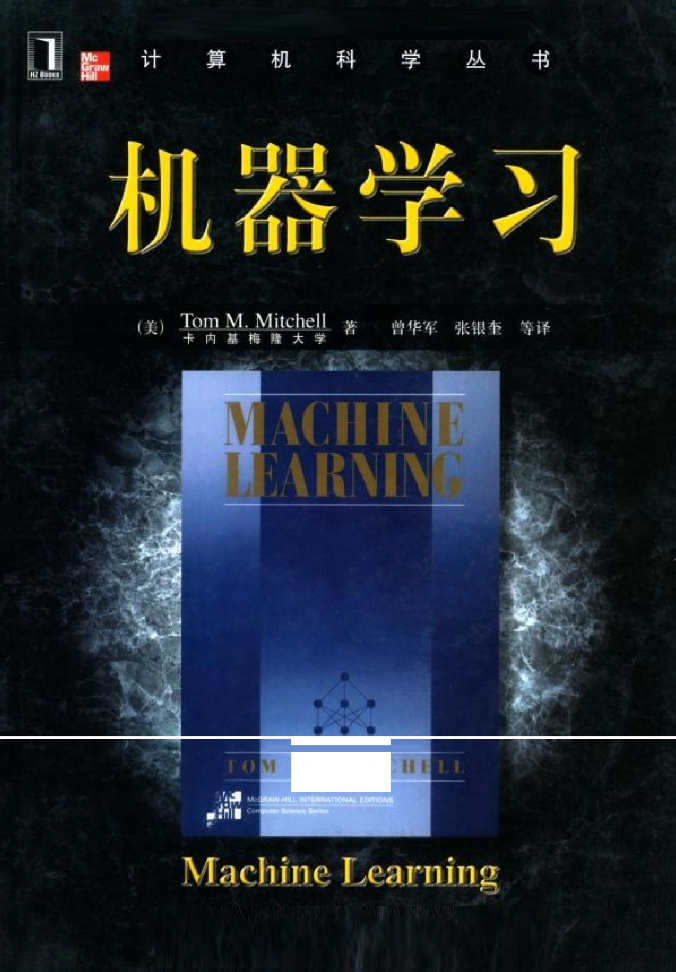
吨’ . 1\1 E 』 〈
序 言
机器学习这门学科所关注的问题是：计算机程序如何随着经验积累自动提高性能？近年 来，机器学习被成功地应用于很多领域，从检测信用卡交易欺诈的数据挖掘程序，到获取用 户阅读兴趣的信息过滤系统，再到能在高速公路上自动行驶的汽车。同时，这个学科的基础 理论和算法也有了重大的进展。
这本教材的目标是展现机器学习中核心的算法和理论。机器学习从很多学科吸收了成果 和概念，包括统计学、人工智能、哲学、信息论、生物学、认知科学、计算复杂性和控制论 等。我相信，研究机器学习的最佳途径是从这些学科的观点看待机器学习，并且以此来理解 问题的背景、算法以及其中隐含的假定。这些在以往很难做到，因为在这一领域缺少包容广 泛的原始资料。这本书的主要目的就是提供这样的一份资料。
由于素材的多学科性，这本书不要求读者具有相应的知识背景，而是在必要时介绍其他 一些学科的基本概念，如统计学、人工智能、信息论等。介绍的重点是与机器学习关系最密 切的那些概念。本书可以作为计算机科学与工程、统计学和社会科学等专业的大学生或研究 生的教材，也可作为软件研究人员或从业人员的参考。指导这本书写作的两条原则为：1. 它是在校大学生可以理解的；2.它应该包含博士生在开始研究机器学习前要掌握的内容。
指导这本书写作的第三条原则是：它应该体现理论和实践两者的平衡。机器学习理论致 力于回答这样的问题“学习性能是怎样随着给定的训练样例的数量变化的？”和“对于不同 类型的学习任务，哪个学习算法最适合？”利用来自统计学、计算复杂性和贝叶斯分析的理 论成果，这本书讨论了这一类理论问题。同时本书也覆盖了很多实践方面的内容：介绍了这 一领域的主要算法，并阐明了算法的运行过程。一些算法的实现和数据可以在互联网上通过 网址 http://www.cs.cmu.edu/~tom/mlbook.html 得到。其中包括用于人脸识别的神经网络、用 于信贷分析的决策树学习、及分析文本文档的贝叶斯分类器各自的源代码和所需数据。我很 感谢那些帮助我创建这些在线资源的同事，包括 Jason Rennie、Paul Hsiung、Jeff Shufelt、 Matt Glickman、Scott Davies、Joseph O’Sullivan、Ken Lang、Andrew McCallum 和 Thorsten Joachims。
致谢 在写作这本书的过程中，我幸运地得到了机器学习领域很多学科分支的技术专家的帮
助。没有他们的帮助这本书是不可能完成的。我深深地感激下面的科学家们，他们花时间检
阅本书的草稿，并且以他们各自领域的专长对我进行了指导。
（ ）
我也很感谢各所大学的很多讲师和学生，他们实地测试了本书的很多草稿并提出了他们 的建议。尽管没有足够的版面来感谢上百名的学生、讲师和其他测试了草稿的人，我要感谢 下面各位，感谢他们特别有帮助的建议和讨论。
（ ）
我感谢 Joan Mitchell 建立了本书的索引。我也感谢 Jean Harpley 帮助编辑了很多插图。 ETP Harrison 的 Jane Loftus 帮助整理了本书的手稿。我的编辑，McGraw Hill 出版社的 Eric Munson 在项目的整个过程中提供了鼓励和意见。
通常，一个人最该感谢的是他的同事、朋友和家庭。对于我，尤其要表达自己的感激。 我很难想象有人比我在 Carnegie Mellon 拥有更好的智者云集的环境和更多的鼎力相助的朋 友。在这些很多帮助过我的人当中，我特别感谢 Sebastian Thrun，在这个项目的自始至终， 他一直对我进行着精神鼓励、技术指导等各种支持。我的父母，与以往一样的鼓励我并在最 恰当的时候问“已经完成了吗？”最后，我一定要感谢我的家人：Meghan，Shannon 和 Joan。 他们在不知不觉中以各种方式对此书作出了贡献。这本书是献给他们的。
Tom M. Mitchell
第1章 绪论
自从计算机被发明以来，人们就想知道它们能不能学习。如果我们理解了计算机学习的 内在机制，即怎样使它们根据经验来自动提高，那么影响将是空前的。想象一下，在未来， 计算机能从医疗记录中学习，获取治疗新疾病的最有效方法；住宅管理系统分析住户的用电 模式，以降低能源消耗；个人软件助理跟踪用户的兴趣，并为其选择最感兴趣的在线新 闻 。对计算机学习的成功理解将开辟出全新的应用领域，并使其计算能力和可定制性上 升到新的层次。同时，透彻地理解机器学习的信息处理算法，也会有助于更好地理解人类的 学习能力。
目前，我们还不知道怎样使计算机的学习能力和人类相媲美。然而一些针对特定学习任 务的算法已经产生。关于学习的理论认识已开始逐步形成。人们开发出了很多实践性的计算 机程序来实现不同类型的学习，一些商业化的应用也已经出现。例如对于语音识别这样的课 题，至今为止，基于机器学习的算法明显胜过其他的方法。在数据挖掘领域，机器学习算法 理所当然地得到应用，从包含设备维护记录、借贷申请、金融交易、医疗记录等类似信息的 大型数据库中发现有价值的信息。随着对计算机的理解的日益成熟，机器学习必将在计算机 科学和技术中扮演越来越重要的角色！
通过一些特定的成就我们可以看到这门技术的现状：计算机已经能够成功地识别人类的 讲话（Waibel 1989；Lee 1989）；预测肺炎患者的康复率（Cooper et al. 1997）；检测信用卡 欺诈；在高速公路上驾驶（Pomerleau 1989）；以接近人类世界冠军的水平对弈西洋双陆棋①这 样的游戏（Tesauro 1992, 1995）。已有了很多理论成果能够对训练样例数量、假设空间大小、 和学得假设错误率这三者间的基本关系进行刻画。我们正在开始获取人类和动物学习的原始 模型，用以理解它们和计算机的学习算法间的关系（例如，Laird et al. 1986；Anderson 1991； Qin et al. 1992；Chi & Bassock 1989；Ahn & Brewer 1993）。在过去的十年中无论是应用、算 法、理论，还是生物系统的研究都取得了值得注目的进步。机器学习最近的几种应用被归纳 在表 1-1 中。Langley & Simon（1995）以及Rumelhart et al.（1994）调查了机器学习的一些 其他应用。
表 1-1 机器学习的一些成功应用
学习识别人类的讲话 所有最成功的语音识别系统都使用了某种形式的机器学习技术。例如，Sphinx 系统（参见 Lee 1989）可学习特定讲话者的语音识别策略，从检测到的语音信号中识别出基本的音素
（phoneme）和单词。神经网络学习方法（例如 Waibel et al. 1989）和隐式马尔可夫模型（hidden Markov model）的学习方法（例如 Lee 1989）在语音识别系统中也非常有效，它们可以让系 统自动适应不同的讲话者、词汇、麦克风特性和背景噪音等等。类似的技术在很多信号解 释课题中有应用潜力。
学习驾驶车辆
①译注：一种类似飞行棋的游戏，双方各持十五子，通过掷骰子来决定棋子移动的步数。
机器学习方法已被用于训练计算机控制的车辆，使其在各种类型的道路上正确行驶。例如 ALVINN 系统（Pomerleau 1989）已经利用它学会的策略独自在高速公路的其他车辆之间奔 驰，以 70 英里的时速共行驶了 90 英里。类似的技术可能在很多基于传感器的控制问题中 得到应用。
学习分类新的天文结构 机器学习方法已经被用于从各种大规模的数据库中发现隐藏的一般规律。例如，决策树学 习算法已经被美国国家航空和航天局（NASA）用来分类天体，数据来自第二帕洛马天文台 太空调查（Fayyad et al. 1995）。这一系统现在被用于自动分类太空调查中的所有天体，其 中包含了 3T 字节的图像数据。
学习以世界级的水平对弈西洋双陆棋 最成功的博弈类（如西洋双陆棋）计算机程序是基于机器学习算法的。例如，世界最好的 西洋双陆棋程序 TD-Gammon（Tesauro 1992, 1995）是通过一百万次以上的和自己对弈来学 习其策略的。现在它的水平能与人类的世界冠军相当。类似的技术被应用于许多实际问题， 其中需要高效地搜索庞大的搜索空间。

本书针对机器学习这个领域，描述了多种学习范型、算法、理论以及应用。机器学习从 本质上是一个多学科的领域。它吸取了人工智能、概率统计、计算复杂性理论、控制论、信 息论、哲学、生理学、神经生物学等学科的成果。表 1-2 归纳了这些学科中影响机器学习的 关键思想。本书的素材基于不同学科的成果，然而读者不必精通每一个学科。来自这些学科 的关键理论将使用非专业的词汇讲解，其中不熟悉的术语和概念会在需要时加以介绍。
表 1-2 一些学科和它们对机器学习的影响

人工智能 学习概念的符号表示。作为搜索问题的机器学习。作为提高问题求解能力途径的学习。使 用先验的知识和训练数据一起引导学习。
贝叶斯方法 作为计算假设概率的基础的贝叶斯法则。朴素贝叶斯分类器。估计未观测到变量的值的算 法。
计算复杂性理论
不同学习任务中固有的复杂性的理论边界，以计算量、训练样例数量、出错数量等衡量。
控制论
为了优化预定目标，学习对各种处理过程进行控制，学习预测被控制的过程的下一个状态。
信息论 熵和信息内容的度量。学习的最小描述长度方法。编码假设时，它的最佳编码和与最佳训 练序列的关系。
哲学
“奥坎姆的剃刀”（Occam’s razor）①：最简单的假设是最好的。从观察到的数据泛化的理 由分析。
心理学和神经生物学
实践的幂定律（power law of practice），该定律指出对于很大范围内的学习问题，人们的反 应速度随着实践次数的幂级提高。激发人工神经网络的学习模式的神经生物学研究。
统计学
① 译注：也称“吝啬律（Law of Parsimony’”或“节约律（Law of Economy）”，主要思想为简单的理论
（或假设）优于复杂的，因英国哲学家奥坎姆（1285~1349）频繁使用这一原则，故称为“奥坎姆剃刀”。
在估计有限数据样本上的假设精度时出现的误差（例如偏差和方差）的刻画。置信区间， 统计检验。
让我们从几个实际的学习任务开始研究机器学习。根据本书的目的，我们给学习一个宽 广的定义，以使其包括任何计算机程序通过经验来提高某任务处理性能的行为。更准确地讲，
//利用经验改善系统自身的性能//
定义： 对于某类任务 T 和性能度量 P，如果一个计算机程序在 T(任务)上以 P（性 能标准）衡量的性能随着经验 E 而自我完善，那么我们称这个计算机程序在从经验 E 学习。
例如，对于学习下西洋跳棋①的计算机程序，它可以通过和自己下棋获取经验，它担负 的任务是参与西洋跳棋对弈，它的性能用它赢棋的能力来衡量。通常，为了很好地定义一个 学习问题，我们必须明确这样三个特征：任务的种类；衡量任务提高的标准；经验的来源。
西洋跳棋学习问题：
任务 T：下西洋跳棋
性能标准 P：比赛中击败对手的百分比
训练经验 E：和自己进行对弈 我们可以用以上方法定义很多学习问题，例如学习手写识别、学习自动驾驶机器人汽车。
手写识别学习问题：
任务 T：识别和分类图像中的手写文字
性能标准 P：分类的正确率
训练经验 E：已知分类的手写文字数据库 机器人驾驶学习问题：
任务 T：通过视觉传感器在四车道高速公路上驾驶

① 译注：为了更好理解本例，下面简要介绍一下这种跳棋。棋盘为 8×8 方格，深色棋格不可着子。可单 步行走，亦可每步跨对方一子单跳或连跳，被跨越的子被杀出局。到达对方底线的子成为王，可回向行走
（成为王前只可前行），又可隔空格飞行。下图为西洋跳棋棋盘示例（起始状态）。
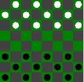
性能标准 P：平均无差错行驶里程（差错由人类的监督裁定）
训练经验 E：注视人类驾驶时录制的一系列图像和驾驶指令 这里对学习的定义很宽广，足以包括大多数惯于被称为“学习”的任务，就像我们日常
使用的这个词一样。同时，它也包括了以非常简明的方式通过经验自我提高的计算机程序。
例如，一个允许用户更新数据条目的数据库系统，也符合我们对学习系统的定义：它根据从 数据库更新得到的经验提高它回答数据查询的能力。与其担心这种行为与“学习”这个词日 常谈论的非正式含义相混淆，我们索性简单地采用我们的科技型定义——一类计算机程序通 过经验提高的过程。在这个范畴内，我们会发现很多问题或多或少需要较复杂的解决办法。 这里我们并非要分析“学习”这个单词的日常含义。而是要精确地定义一类囊括我们感兴趣 的学习形式的问题，探索解决这类问题的方法，并理解学习问题的基础结构和过程。
为了演示一些机器学习的基本设计方法和途径，考虑设计一个学习下西洋跳棋的程序。 我们的目标是让它进入西洋跳棋世界锦标赛。我们采用最显而易见的标准衡量它的性能：在 世界锦标赛上打赢的比赛占总参赛次数的百分比。
我们面临的第一个设计问题是选取训练经验的类型，使系统从中进行学习。给学习器提 供的训练经验对它的成败有重大的影响。一个关键属性是训练经验能否为系统的决策提供直 接或间接的反馈。例如，对于学习下西洋跳棋，系统可以从直接的（direct）训练样例，即 各种棋盘状态和相应的正确走子中学习。另一种情况，它可能仅有间接（indirect）的信息， 包含很多过去的对弈序列和最终结局。对于后一种情况，关于博弈中较早走子的正确性必须 从对弈最终的输赢来推断。这时学习器又额外面临一个信用分配（credit assignment）问题， 也就是考虑每一次走子对最终结果的贡献程度。信用分配可能是一个非常难以解决的问题， 因为如果后面下得很差，那么即使起初的走子是最佳的，这盘棋也会输掉。所以通常从直接 的训练反馈来学习比间接的简单。
训练经验的第二个重要属性是学习器可以在多大程度上控制训练样例序列。例如，学习 器可能依赖施教者选取棋盘状态，和提供每一次的正确移动。或者，学习器可能自己提出它 认为特别困惑的棋局并向施教者询问正确的走子。或者，学习器可以完全控制棋局和（间接 的）训练分类，就像没有施教者时它和自己对弈进行学习一样。注意对于最后一种情况学习 器可能选择以下两种情况中的一种：第一，试验它还未考虑过的全新棋局；第二，在它目前 发现的最奏效的路线的微小变化上对弈，以磨砺它的技能。后续的章节考虑一些学习框架， 包括了以下几种情况：训练经验是以超乎学习器控制的随机过程提供的；学习器可向施教者 提出不同类型的查询；以及学习器通过自动探索环境来搜集训练样例。
训练经验的第三个重要属性是，训练样例的分布能多好地表示实例分布，而最终系统的 性能 P 是通过后者来衡量的。一般而言，当训练样例的分布和将来的测试样例的分布相似 时，学习具有最大的可信度。对于我们的西洋跳棋学习，性能指标 P 是该系统在世界锦标 赛上赢棋的百分比。如果它的训练经验 E 仅由和它自己对弈的训练组成，便存在一个明显 的危险：这个训练可能不能充分地表示该系统以后被测试时的情形。例如，学习器可能在训 练中从来未遇到过某些非常关键性的棋局，而它们又非常可能被人类世界冠军采用。实际上，
学习的样例通常与最终系统被评估时的样例有一定差异，学习器必须能从中进行学习（举例 来说，世界级的西洋跳棋冠军可能不会有兴趣教一个程序下棋）。这的确是一个问题，因为 掌握了样例的一种分布，不一定会导致对其他的分布也有好的性能。可以看到，目前多数机 器学习理论都是基于训练样例与测试样例分布一致这一前提。尽管我们需要这样的前提以便 得到理论的结果，但同样必须记住在实践中这个假设经常是不严格成立的。
下面继续进行算法设计，我们决定系统将通过和自己对弈来训练。这样的好处是不需要 外界的训练者，所以可以让系统产生无限多的训练数据，只要时间允许。现在有了一个完整 的学习任务。
西洋跳棋学习问题：
任务 T：下西洋跳棋
性能标准 P：世界锦标赛上击败对手的百分比
训练经验 E：和自己进行对弈 为了完成这个学习系统的设计，现在需要选择：
1. 要学习的知识的确切类型
2. 对于这个目标知识的表示
3. 一种学习机制
下一个设计选择是决定要学习的知识的确切类型，以及执行程序怎样使用这些知识。我 们从一个对于任何棋局都能产生合法（legal）走子的西洋跳棋博弈程序开始。那么，最终的 程序仅须学会从这些合法的走子中选择最佳的。这个学习任务代表了一大类任务：合法走子 定义了某个先验已知的巨大搜索空间，但最佳的搜索策略未知。很多最优化问题都可归于此 类，例如对于生产过程的调度和控制问题，生产中的每一步都很清楚，但调度这些步骤的最 佳策略未知。
为了学习从合法走子中作出选择，很明显，要学习的信息类型就是一个程序或函数，它 对任何 给 定的棋 局 能选出 最 好的走 法 。可称 此 函数为 ChooseMove ，并用记法 ChooseMove:B→M 来表示这个函数以合法棋局集合中的棋盘状态作为输入，并从合法走子 集合中产生某个走子作为输出。在关于机器学习的所有讨论中，我们发现可以把对任务 T 提高性能 P 的问题简化为学习象 ChooseMove 这样某个特定的目标函数（target function） 的问题。所以目标函数的选择是一个关键的设计问题。
尽管在例子中很明显应把 ChooseMove 作为目标函数，但我们会发现学习这个目标函数 是非常困难的，原因是提供给系统的是间接的训练经验。另外一个可供选择的目标函数是一 个评估函数，它为任何给定棋局赋予一个数字的评分。可以发现，对于本例，学习这个目标 函数更简单。令这个目标函数为 V，并用 V：B→ 来表示 V 把任何合法的棋局映射到某一 个实数值（用来表示实数集合）。我们打算让这个目标函数 V 给好的棋局赋予较高的评分。 如果系统能够成功地学会这个目标函数 V，那么它便能使用此函数轻松地找到当前棋局的最 佳走法。实现的方法是，先产生每一个合法走子对应的所有后续棋局，然后使用 V 来选取 其中最佳的后继棋局，从而选择最好的走子。
对于任意棋局，目标函数 V 的准确值应该是多少呢？当然任何对较好的棋局赋予较高 的分数的评估函数都适用。然而，最好在那些产生最佳对弈的众多方法中定义一个特定的目
标函数 V。可以看到，这将使得设计一个训练算法变得简单。因此，对于集合 B 中的任意的 棋局状态 b，我们如下定义目标函数 V(b)：
1. 如果 b 是一最终的胜局，那么 V(b)=100
2. 如果 b 是一最终的负局，那么 V(b)=-100
3. 如果 b 是一最终的和局，那么 V(b)=0
4. 如果 b 不是最终棋局，那么 V(b)=V(b′)，其中 b′是从 b 开始双方都采取最优对 弈后可达到的终局。
然而，由于这个定义的递归性，它的运算效率不高，所以这个定义对于西洋跳棋比赛者 不可用。除了无关紧要的前三种终局的情况，对于某一个棋盘状态（情况 4）b要决定它的 值V（b）需要向前搜索到达终局的所有路线！由于这个定义不能由西洋跳棋程序高效地运 算，这个定义被称为不可操作的定义。当前的目标是发现一个可操作的定义V，它能够被西 洋跳棋程序用来在合理的时间内评估棋局并选取走法。
这样，这种情况的学习任务被简化成发现一个理想目标函数 V 的可操作描述。通常要 完美地学习这样一个 V 的可操作的形式是非常困难的。事实上，我们经常希望学习算法仅 得到目标函数的某个近似（approximation），由于这个原因学习目标函数的过程常被称为函 数逼近（function approximation）。在当前的讨论中，用Vˆ 来表示程序中实际学习到的函数， 以区别理想目标函数 V。
1.2.3 选择目标函数的表示
至此，我们已经确定了目标函数 V，接下来必须选择一个表示，被学习程序用来描述要 学习的函数Vˆ 。对此也有很多设计选择。例如，可以将Vˆ 表示为一张大表，对于每个惟一 的棋盘状态 b，表中有惟一的表项来确定它的状态值Vˆ (b)。或者，可以让程序用一个规则集 合来匹配棋局的特征以表示Vˆ ，或采用一个与预定义棋盘特征有关的二次多项式函数，或 者用人工神经元网络。通常，选择这个描述包含一个重要的权衡过程。一方面，我们总希望 选取一个非常有表征力的描述，以最大可能地逼近理想的目标函数 V。另一方面，越有表征 力的描述需要越多的训练数据，使程序能从它表示的多种假设中做出选择。为了简化讨论， 现在选择一个简单的表示法：对于任何给定的棋盘状态，函数Vˆ 可以通过以下棋盘参数的 线性组合来计算：
• x1：棋盘上黑子的数量
• x2：棋盘上红子的数量
• x3：棋盘上黑王的数量
• x4：棋盘上红王的数量
• x5：被红子威胁的黑子数量（即会在下一次被红吃掉的子）
• x6：被黑子威胁的红子数量
于是，学习程序把Vˆ (b)表示为一个线性函数
Vˆ (b)=w0+w1x1+w2x2+w3x3+w4x4+w5x5+w6x6
其中w0到w6为数字系数，或叫权，由学习算法来选择。在决定某一个棋盘状态的分值时，
w1 到 w6决定了不同的棋盘特征的相对重要性，而权w0为一个附加的常量。
概括一下目前为止的设计。我们已经详细阐述了这个学习问题的原型，即为它选择一种 类型的训练经验、一个要学习的目标函数和这个目标函数的一种表示法。现在的学习任务是：
西洋跳棋程序的部分设计
任务 T：下西洋跳棋
性能标准 P：世界锦标赛上击败对手的百分比
训练经验 E：和自己进行训练对弈
目标函数：V：B→
目标函数的表示：Vˆ (b)=w0+w1x1+w2x2+w3x3+w4x4+w5x5+w6x6
前三条是对学习任务的说明，后两条制定了为实现这个学习程序的设计方案。注意这个 设计的关键作用是把学习西洋跳棋战略的问题简化为学习目标函数描述中系数w0到w6值的 问题。
为了学习目标函数Vˆ
，需要一系列训练样例，每一个样例描述了特定的棋盘状态b和
它的训练值Vtrain(b)。换言之，每一个训练样例是形式为<b，Vtrain(b)>的序偶。举例来说，下 面的训练实例描述了一个黑棋胜利（注意x2=0 表示红棋已经没有子了）的棋盘状态b，它的 目标函数值Vtrain(b)为 100。
<<x1=3，x2=0，x3=1，x4=0，x5=0，x6=0>，+100>
下文描述了一个过程，它先从学习器可得的间接训练经验中导出上面的训练样例，然后 调整权值wi以最佳拟合这些训练样例。
1.2.4.1 估计训练值
根据以上的学习模型，学习器可以得到的训练信息仅是对弈最后的胜负。 另一方面， 我们需要训练样例为每个棋盘状态赋予一个分值。给对弈结束时的棋盘状态评分是容易的， 而要给对弈结束前的大量中间棋局评分就不那么容易了。因为，一盘棋的最终输赢未必能说 明这盘棋当中的每一个棋盘状态的好或坏。例如，即使某个程序输了一盘棋，仍会有这样的 情况，这盘棋前面的棋局应该给予很高的评价，失败的原因在于后来糟糕的走法。
尽管估计中间棋局训练值具有内在的模糊性，但令人惊讶的是有一个简单的方法却取得 了良好结果。这种方法对于任何中间棋局b的训练值Vtrain(b)等于Vˆ (Successor(b))，其中Vˆ 是 学习器采用的对V的近似，Successor(b) 表示b之后再轮到程序走棋时的棋盘状态（也就是程 序走了一步和对手回应一步后的棋局）。
这种估计训练值的方法可被归纳为：
训练值估计法则
Vtrain(b)←Vˆ (Successor(b)) （1.1）
或许这看起来有点离奇，只使用当前的Vˆ 来估计训练值，这一训练值又被用来更新Vˆ 。 但请注意，我们是在用后续棋局Successor(b)的估计值来估计棋局b的值。凭直觉，我们可以 看到越接近游戏结束的棋局的Vˆ 越趋向精确。事实上，在特定条件下（将在第 13 章讨论） 这种基于对后继棋局进行估计的迭代估计训练值的方法，已被证明可以近乎完美地收敛到 Vtrain估计值。
1.2.4.2 权值调整
剩下的事情就是为这个学习算法选择最适合训练样例{<b, Vtrain(b)>}的权wi。第一步必须 定义最佳拟合（best fit）训练数据的含义。一种常用的方法是把最佳的假设（或权向量集合） 定义为使训练值和假设Vˆ 预测出的值间的误差平方E最小。
E
b ,Vtrain ( b ) 训练样例
(Vtrain
(b) Vˆ (b)) 2
至此，我们的目标就是寻找权值（等价地，寻找Vˆ ），使对于观测到的训练数据 E 值最 小化。第 6 章将讨论在什么条件下，最小化误差平方和等价于寻找给定观测训练数据下的最 可能假设。
已经知道一些算法可以得到线性函数的权使此定义的 E 最小化。在这里需要一个算法， 它可以在有了新的训练样例时进一步改进权值，并且它对估计的训练数据中的差错有好的健 壮性。一个这样的算法被称作最小均方法（least mean squares），或叫 LMS 训练法则。对于 每一训练样例，它把权值向减小这个训练数据误差的方向略微调整。如第 4 章讨论的那样， 这个算法可被看作对可能的假设（权值）空间进行随机的梯度下降搜索，以使误差平方和 E 最小化。LMS 算法是这样定义的：
LMS 权值更新法则 对于每一个训练样例<b，Vtrain(b)>
使用当前的权计算Vˆ (b)
对每一个权值wi进行如下更新
wi←wi+η(Vtrain(b)-Vˆ (b)) xi
这里η是一个小的常数（比如 0.1）用来调整权值更新的幅度。为了直观地理解这个权
值更新法则的工作原理，请注意当误差（Vtrain(b)-
Vˆ (b)）为 0 时，权不会被改变。当
(Vtrain(b)-Vˆ (b))为正时（例如，当Vˆ (b)太低时）每一个权值会根据其对应特征值增加一定的 比例。这会提升Vˆ (b)的值而减小误差。注意如果某个参数xi为 0，那么它的值不会因这个误 差而改变，这样便使只有那些在训练样例的棋局中确实出现的特征的权值才被更新。令人吃 惊的是，在一定的条件下，这种简单的权值调整方法被证明可以收敛到Vtrain 值的最小误差 平方逼近（就像第 4 章所讨论的）。
西洋跳棋学习系统的最终设计可以自然地用四个清楚的程序模块来描述，这些模块在很 多学习系统中是核心组件。这四个模块被归纳在图 1-1 中，它们是：
执行系统（Performance system），这个模块是用学会的目标函数来解决给定的任务， 在此就是对弈西洋跳棋。它把新问题（新一盘棋）的实例作为输入，产生一组解答路线（对 弈历史记录）作为输出。在这里，执行系统采用的选择下一步走法的策略是由学到的评估函 数Vˆ 来决定的。所以我们期待它的性能会随着评估函数的日益准确而提高。

插图——原书页码： 12
Experiment Generator-试验生成器
New Problem(initial game board)-新问题（初始棋局）
Performance System-执行系统
Solution trace(game history)-解答路线（对弈历史）
Critic-鉴定器
Training examples-训练样例
Generalizer-泛化器 Hypothesis-假设

图 1-1 西洋跳棋学习程序的最终设计
鉴定器（Critic），它以对弈的路线或历史记录作为输入，输出目标函数的一系列训练样 例。如图所示，每一个训练样例对应路线中的某个棋盘状态和目标函数给这个样例的评估值 Vtrain。在我们的例子中，鉴定器对应式 1.1 给出的训练法则。
泛化器（Generalizer），它以训练样例作为输入，输出一个假设，作为它对目标函数的 估计。它从特定的训练样例中泛化，猜测一个一般函数，使其能够覆盖这些样例以及样例之 外的情形。在我们的例子中，泛化器对应LMS算法，输出假设是用学习到的权值w0 ,..., w6描 述的函数Vˆ 。
实验生成器（Experiment Generator），它以当前的假设（当前学到的函数）作为输入， 输出一个新的问题（例如，最初的棋局）供执行系统去探索。它的角色是挑选新的练习问题， 以使整个系统的学习速率最大化。在我们的例子中，实验生成器采用了非常简单的策略：它 总是给出一个同样的初始棋局来开始新的一盘棋。更完善的策略可能致力于精心设计棋子位 置以探索棋盘空间的特定区域。
总体来看，我们为西洋跳棋程序作的设计就是产生执行系统、鉴定器、泛化器和实验生
成器的特定实例。很多机器学习系统通常可以用这四个通用模块来刻画。
设计西洋跳棋程序的流程被归纳在图 1-2 中。这个设计已经在几方面把学习任务限制在 较小的范围内。要学习的知识类型被限制为一个单一的线性评估函数。而且这个评估函数被 限制为仅依赖于六个棋盘特征。如果目标函数真的可表示为这些特定参数的线性组合，那么 程序学到这个目标函数的可能性很大。反之，最多只希望它学到一个合理的近似，因为一个 程序当然不能学会它根本不能表示的东西。

插图——原书页码： 13
Determine Type of Training Experience- 决定训练经验形式
Games against experts- 与专家对弈
Games against self- 与自己对弈
Table of correct moves- 正确走子的表格
Determine Target Function- 决定目标函数
Board->move- 棋盘走子
Board->value- 棋盘分值
Determine Representation of Learned Function-决定目标函数的表示 Polynomial- 多项式
Linear function of six features- 六个参数的线性函数
Artificial neural network- 人工神经网络
Determine Learning Algorithm- 决定学习算法
Gradient descent- 梯度下降
Linear programming- 线性规划
Completed Design- 完成的设计
图 1-2 西洋跳棋学习程序的设计过程概述
我们假定真实函数 V 的合理的近似确实可被表示为这种形式。那么问题变成这种学习 技术是否确保能发现一个合理的近似。第 13 章提供了一种理论分析，表明对于某些类型的 搜索问题，在相当严格的前提下，这种方法确实收敛到期望的评估函数。很幸运，实践经验 表明这种学习评估函数的途径经常是成功的，甚至在能被证明的情形之外也是如此。
已经设计的程序能学得足够好而击败人类的西洋跳棋冠军吗？或许不能。部分地，这是 因为Vˆ 的线性函数表示太简单以致于不能很好捕捉这种棋的微妙之处。然而，如果给与一 个更完善的目标函数表示法，这种通用的途径事实上可以非常成功。例如，Tesauro(1992, 1995) 报告了学习下西洋双陆棋的程序的类似设计，方法是学习一个非常类似的棋局评估函数。它 的程序使用人工神经元网络表示学到的评估函数，它考虑对棋局的完整描述而不是棋盘的几 个参数。经历了一百万次以上的自我生成的训练比赛后，他的程序能够和一流的人类西洋双 陆棋选手一争高下。
当然还可能为西洋跳棋学习任务设计很多其他的算法。例如，一种可能只简单地存储训 练样例，然后去寻找保存的“最接近的”情形来匹配新的情况（最近邻算法，第 8 章）。或 者可以产生大量候选的西洋跳棋程序，并让它们相互比赛，保留最成功的程序并进一步用模 拟进化的方式来培育或变异它们（遗传算法，第 9 章）。人类似乎遵循另一种途径寻找学习
策略，他们分析或向自己解释比赛中碰到的成败的原因（基于解释的学习，第 11 章）。上面 的设计是这些种类中的一个简单的算法，它是为了给我们今后的针对特定类别的任务的学习 方法的设计奠定基础。
在机器学习方面，一个有效的观点是机器学习问题经常归结于搜索问题，即对非常大的 假设空间进行搜索，以确定最佳拟合观察到的数据和学习器已有知识的假设。例如，考虑一 下上面的西洋跳棋学习程序输出的假设空间。这个假设空间包含所有可由权w0到w6的不同值 的评估函数。于是学习器的任务就是搜索这个大的空间，寻找与训练数据最佳拟合的假设。 针对拟合权值的LMS算法通过迭代调整权值实现了这个目的，每当假设的评估函数预测出 一个与训练数据有偏差的值时就对每个权值进行校正。当学习器考虑的假设表示定义了一个 连续的参数化的潜在假设空间时，这个算法很有效。
本书的很多章节给出了对一些基本表示（例如，线性函数、逻辑描述、决策树、人工神 经元网络）定义的假设空间的搜索算法。这些不同的假设表示法适合于学习不同的目标函数。 对于其中的每一种假设表示法，对应的学习算法发挥不同内在结构的优势来组织对假设空间 的搜索。
自始至终，本书都贯穿着这种把学习问题视为搜索问题的看法，从而通过搜索策略和学 习器探索的搜索空间的内在结构来刻画学习方法。我们也会发现，这种观点对于形式化地分 析要搜索的假设空间的大小、可利用的训练样例的数量以及一个与训练数据一致的假设能泛 化到未见实例的置信度这三者之间的关系非常有用。
西洋跳棋例子提出了机器学习方面很多普遍问题。机器学习这门学科，和本书的绝大部 分，都致力于回答类似下面的问题：
从特定的训练数据学习一般的目标函数存在什么样的算法？如果提供了充 足的训练数据，什么样的条件下会使特定的算法收敛到期望的函数？哪个算 法对哪些问题和表示的性能最好。
多少训练数据是充足的？怎样找到学习到的假设的置信度与训练数据的数 量及提供给学习器的假设空间特性之间的一般关系？
学习器拥有的先验知识是怎样引导从样例进行泛化的过程的？当先验知识 仅仅是近似正确时，它们会有帮助吗？
对于选择有用的后续训练经验，什么样的策略最好？这个策略的选择会怎样 影响学习问题的复杂性？
怎样把学习任务简化为一个或多个函数逼近问题？换一种方式，系统该试图 学习哪些函数？这个过程本身能自动化吗？
学习器怎样自动地改变表示法来提高表示和学习目标函数的能力？
这本书介绍了机器学习的主要算法和途径；不同学习任务可行性和特定算法能力的理论 结果；以及机器学习应用于解决现实问题的例子。只要可能，各章的写作都力争与阅读顺序 无关。然而一些相互依赖性是不可避免的。如果本书被用作教科书，我建议首先完成第一和 第二章，余下各章基本可以以任意顺序阅读。长度为一个学期的机器学习课程可以包括前七 章以及额外的几个最感兴趣的章节。下面简要浏览一下各章。
第 2 章包括基于符号和逻辑表示的概念学习。也讨论了假设的一般到特殊偏 序结构，以及学习中引入归纳偏置的必要性。
第 3 章包括决策树学习和过度拟合训练数据的问题。这一章也剖析了奥坎姆 剃刀——该原则建议在与数据一致的假设中选择最短假设。
第 4 章包括人工神经网络的知识，特别是研究已久的反向传播算法，以及梯 度下降的一般方法。这一章包含一个详细的基于神经网络的人脸识别实例，
该例子需要的数据和算法可以在万维网上得到。
第 5 章给出了来自统计和估计理论的基础概念，着重于使用有限的样本数据 评估假设的精度。这一章包含了用于估计假设精度的置信空间，和对不同学 习算法的精度进行比较的方法。
第 6 章介绍机器学习的贝叶斯观点。既包括了使用贝叶斯分析刻画非贝叶斯 学习算法，又包括了直接处理概率的贝叶斯算法。这一章包括一个应用贝叶 斯分类器来分类文本文档的详细例子，所需的数据和软件可以在万维网上得 到。
第 7 章覆盖了计算学习理论，包括可能近似正确（Probably Approximately Correct，PAC）学习模型和出错界限（Mistake-Bound）学习模型。本章讨论 了联合多个学习方法的加权多数（Weighted Majority）算法。
第 8 章描述了基于实例的学习方法，包括最近邻学习，局部加权回归，和基 于案例的推理。
第 9 章讨论了根据生物进化建模的学习算法，包括遗传算法和遗传编程。
第 10 章覆盖了一组学习规则集合的算法，包括学习一阶 Horn 子句的归纳逻 辑编程方法。
第 11 章包含了基于解释的学习，即一种使用以前的知识解释观察到的实例， 然后根据这些解释泛化的学习方法。
第 12 章讨论了把以前的近似知识结合进现有的训练数据中以提高学习精度 的方法。在其中符号算法和神经网络算法都有讨论。
第 13 章讨论了增强学习。这种方法是为了处理来自训练信息中的间接的或 延迟的反馈。本章前面提及的下棋学习程序是增强学习的一个简单的例子。
每章的结尾包含了所覆盖的主要概念的小结、进一步阅读的参考和习题。其他对章节的 更新，包括数据集和算法的实现，都可从网址 http://www.cs.cmu.edu/~tom/mlbook.html 访问 到。
机器学习致力于研究建立能够根据经验自我提高处理性能的计算机程序。本章的要点包 括：
机器学习算法在很多应用领域被证明有很大的实用价值。它们在以下方面特 别有用：（a）数据挖掘问题，即从大量数据中发现可能包含在其中的有价 值的规律（例如，从患者数据库中分析治疗的结果，或者从财务数据中得到 信用贷款的普遍规则）；（b）在某些困难的领域中，人们可能还不具有开 发出高效的算法所需的知识（比如，从图像库中识别出人脸）；（c）计算 机程序必须动态地适应变化的领域（例如，在原料供给变化的环境下进行生 产过程控制，或适应个人阅读兴趣的变化）。
机器学习从不同的学科吸收概念，包括人工智能，概率和统计，计算复杂性， 信息论，心理学和神经生物学、控制论、以及哲学。
一个完整定义的学习问题需要一个明确界定的任务、性能度量标准以及训练 经验的来源。
机器学习算法的设计过程中包含许多选择，包括选择训练经验的类型、要学 习的目标函数、该目标函数的表示形式、以及从训练样例中学习目标函数的
算法。
学习的过程即搜索的过程，搜索包含可能假设的空间，使得到的假设最符合 已有的训练样例和其他先验的约束或知识。本书的大部分内容围绕着搜索各 种假设空间（例如，包含数值函数、神经网络、决策树、符号规则的空间） 的不同学习方法，和理论上这些搜索方法在什么条件下会收敛到最佳假设。
有很多关于机器学习最新研究成果的优秀资源可供阅读。相关的杂志包括《机器学习》
（Machine Learning），《神经计算》（Neural Computation），《神经网络》（Neural Networks），
《美国统计协会期刊》（Journal of the American Statistical Association）和《IEEE 模式识别和 机器智能学报》（IEEE Transactions on Pattern Analysis and Machine Intelligence）。也有大量 的年会覆盖了机器学习的各个方面，包括国际机器学习会议(ICML)，神经信息处理系统 (NIPS)，计算学习理论会议(CCLT)，国际遗传算法会议(ICGA)，国际知识发现和数据挖掘 会议(ICKDD)，欧洲机器学习会议(ECML)等。
习题
1.1 给出三种机器学习方法适合的应用，三种不适合的应用。挑选本书未提及的应用， 并对每个应用以一句话来评价。
1.2 挑选一些本书未提到的学习任务。用英文写一段话非正式地加以描述。再尽可能精 确地描述出它的任务、性能衡量标准和训练经验。最后，给出要学习的目标函数和它的表示。 讨论这个任务设计中考虑的主要折中。
1.3 证明本章描述的LMS权更新法则采用了梯度下降方法使误差平方最小化。确切地 讲，像文中那样定义方差E。然后计算E对权wi的导数，其中假定Vˆ (b) 与文中定义的一样，
E
是一个线性函数。梯度下降是通过与
wi
成比例地更新每个权值实现的。所以，必须证明
对于所遇到的每一个训练样例，LMS训练法则都是按这个比例来改变权值。
1.4 图 1-1 中实验生成器模块可采用其他一些策略。确切地讲，考虑实验生成器用下面 的策略提出新的棋局：
产生随机的合法的棋局
从前面的对弈中挑选一个棋局，然后走一步上次没有走的棋而产生新的棋局
一种你自己设计的策略 讨论这些策略的优劣。如果训练样例的数量是固定的，哪一个效果最好？假定性能衡量
标准是在世界锦标赛上赢棋最多。
1.5 使用类似于西洋跳棋问题的算法，实现一个更简单的tic-tac-toe游戏①。把学习到的 函数Vˆ 表示为自选的棋局参数的线性组合。要训练这个程序，可以让它和它的另一个拷贝 反复比赛，后者使用手工建立的固定评估函数。用图表绘出你的程序胜利的百分比，对应于 训练次数。
参考文献

① 译注：该游戏棋盘为 3X3 方格，双方交互落子，首先实现自方三子连一线者胜。
第2章 概念学习和一般到特殊序
从特殊的训练样例中归纳出一般函数是机器学习的中心问题。本章介绍概念学 习：给定某一类别的若干正例和反例，从中获得该类别的一般定义。概念学习也可 被看作一个搜索问题，它在预定义的假设空间中搜索假设，使其与训练样例有最佳 的拟合度。多数情形下，为了高效的搜索，可以利用假设空间中一种自然形成的结 构——即一般到特殊偏序结构。本章展示了几种概念学习算法，并讨论了这些算法 能收敛得到正确假设的条件。这里还分析了归纳学习的本质，以及任意程序能从训 练数据中泛化的理由。
许多机器学习问题涉及到从特殊训练样例中得到一般概念。比如人们不断学习的一些一 般概念和类别包括：鸟类、汽车、勤奋的学习等。每个概念可被看作一个对象或事件集合， 它是从更大的集合中选取的子集（如从动物的集合中选取鸟类），或者是在这个较大集合中 定义的布尔函数（如在动物集合中定义的函数，它对鸟类产生 true 并对其他动物产生 false）。
本章考虑的问题是，给定一样例集合以及每个样例是否属于某一概念的标注，怎样自动 推断出该概念的一般定义。这一问题被称为概念学习（concept learning），或称从样例中逼 近布尔值函数。
定义： 概念学习是指从有关某个布尔函数的输入输出训练样例中，推断出该布尔函 数。
为了良好地理解概念学习，考虑一个概念学习的例子，目标概念是：“Aldo 进行水上运 动的日子”。表 2-1 描述了一系列日子的样例，每个样例表示为属性的集合。属性 EnjoySport 表示这一天 Aldo 是否乐于进行水上运动。这个任务的目的是，基于某天的各属性，以预测 出该天 EnjoySport 的值。
表 2-1 目标概念 EnjoySport 的正例和反例
Example | Sky | AirTemp | Humidity | Wind | Water | Forecast | EnjoySport |
1 | Sunny | Warm | Normal | Strong | Warm | Same | Yes |
2 | Sunny | Warm | High | Strong | Warm | Same | Yes |
3 | Rainy | Cold | High | Strong | Warm | Change | No |
4 | Sunny | Warm | High | Strong | Cool | Change | Yes |
在这种情况下，采取什么样的形式来表示假设呢？可以先考虑一个较为简单的形式，即 实例的各属性约束的合取式。在这里，可令每个假设为 6 个约束的向量，这些约束指定了属 性 Sky、AirTemp、Humidity、Wind、Water 和 Forecast 的值。每个属性可取值为：
• 由“?”表示任意值
• 明确指定的属性值（如 AirTemp=Warm）
• 由“”表示不接受任何值
如果某些实例 x 满足假设 h 的所有约束，那么 h 将 x 分类为正例，（h(x)=1 ）。比如， 为判定 Aldo 只在寒冷和潮湿的日子里进行水上运动（并与其他属性无关），这样的假设可表 示为下面的表达式：
<?, Cold, High, ?, ?, ?>
最一般的假设是每一天都是正例，可表示为：
<?, ?, ?, ?, ?, ?>
而最特殊的假设即每一天都是反例，表示为：
<, , , , , >
综上所述，EnjoySport 这个概念学习任务需要学习的是使 EnjoySport=Yes 的日子，并将 其表示为属性约束的合取式。一般说来，任何概念学习任务能被描述为：实例的集合、实例 集合上的目标函数、候选假设的集合以及训练样例的集合。以这种一般形式定义的 EnjoySport 概念学习任务见表 2-2。
表 2-2 EnjoySport 概念学习任务

n 已知：
n 实例集 X：可能的日子，每个日子由下面的属性描述：
n Sky（可取值为 Sunny，Cloudy 和 Rainy）
n AirTemp（可取值为 Warm 和 Cold） n Humidity（可取值为 Normal 和 High） n Wind（可取值为 Strong 和 Weak）
n Water（可取值为 Warm 和 Cool）
n Forecast（可取值为 Same 和 Change）
n 假设集 H：每个假设描述为 6 个属性 Sky，AirTemp，Humidity，Wind，Water 和 Forecast 的值约 束的合取。约束可以为“?”（表示接受任意值），“”（表示拒绝所有值），或一特定值。
n 目标概念 c: EnjoySport: X→{0, 1}
n 训练样例集 D：目标函数的正例和反例（见表 2-1）
n 求解：
n H 中的一假设 h，使对于 X 中任意 x，h(x)=c(x)。

在本书中，我们使用以下的术语来讨论概念学习问题。概念定义在一个实例（instance） 集合之上，这个集合表示为 X。在本例中，X 是所有可能的日子，每个日子由 Sky、AirTemp、 Humidity、Wind、Water 和 Forecast 六个属性表示。待学习的概念或函数称为目标概念 (target concept)，记作 c。一般来说，c 可以是定义在实例 X 上的任意布尔函数，即 c:X→{0, 1}。在 这个例子里，目标概念对应于属性 EnjoySport 的值，当 EnjoySport=Yes 时 c(x)=1，当 EnjoySport=No 时 c(x)=0。
在学习目标概念时，必须提供一套训练样例（training examples），每个样例为 X 中的一 个实例 x 以及它的目标概念值 c(x)（如表 2-1 中的训练样例）。对于 c(x)=1 的实例被称为正 例(positive example)，或称为目标概念的成员。对于 c(x)=0 的实例为反例(negative example)， 或称为非目标概念成员。经常可以用序偶<x,c(x)>来描述训练样例，表示其包含了实例 x 和 目标概念值 c(x)。符号 D 用来表示训练样例的集合。
一旦给定目标概念 c 的训练样例集，学习器面临的问题就是假设或估计 c。使用符号 H 来表示所有可能假设(all possible hypotheses)的集合，这个集合内才是为确定目标概念所考虑 的范围。通常 H 依设计者所选择的假设表示而定。H 中每个的假设 h 表示 X 上定义的布尔 函数，即 h:X→{0,1}。机器学习的目标就是寻找一个假设 h，使对于 X 中的所有 x，h(x)=c(x)。
机器学习的任务是在整个实例集合 X 上确定与目标概念 c 相同的假设 h，然而我们对于 c 仅有的信息只是它在训练样例上的值。因此，归纳学习算法最多只能保证输出的假设能与 训练样例相拟合。如果没有更多的信息，我们只能假定，对于未见实例最好的假设就是与训 练数据最佳拟合的假设。这是归纳学习的一个基本假定，本书中将对此做更多的阐述。这里 我们简单提及，在第 5、6、7 章将更形式化和定量地审定和分析这一假定。
归纳学习假设 任一假设如果在足够大的训练样例集中很好地逼近目标函数，它也能在 未见实例中很好地逼近目标函数。
概念学习可以看作是一个搜索的过程，范围是假设的表示所隐含定义的整个空间。搜索 的目标是为了寻找能最好地拟合训练样例的假设。必须注意到，当假设的表示形式选定后， 那么也就隐含地为学习算法确定了所有假设的空间。这些假设是学习程序所能表示的，也是 它能够学习的。考虑在 EnjoySport 学习任务中的实例集合 X 和假设集合 H。如果属性 Sky 有 3 种可能的值，而 AirTemp、Humidity、Wind、Water 和 Forecast 都只有两种可能值，则 实例空间 X 包含了 3×2×2×2×2×2=96 种不同的实例。类似的计算可得，在假设空间 H 中有 5×4×4×4×4×4=5120 种语法不同(syntactically distinct)的假设。然而，注意到包含有符号的 假设代表空实例集合，即它们将每个实例都分类为反例。因此，语义不同(semantically distinct) 的假设只有 1+4×3×3×3×3×3=973 个。这里的 EnjoySport 例子是一个非常简单的学习任务， 它的假设空间相对较小且有限。多数实际的学习任务包含更大的、有时是无限的假设空间。
如果把学习看作是一个搜索问题，那么很自然，对学习算法的研究需要考查假设空间搜 索的不同策略。特别引起我们兴趣的算法应能有效地搜索非常大的或无限的假设空间，以找 到最佳拟合训练数据的假设。
许多概念学习算法中，搜索假设空间的方法依赖于其中一种很有用的结构：假设的一般 到特殊序关系。利用假设空间的这种自然结构，我们可以在无限的假设空间中进行彻底的搜 索，而不需要明确地列举所有的假设。为说明一般到特殊序，考虑以下两个假设：
h1=<Sunny, ?, ?, Strong, ?, ?>
h2=<Sunny, ?, ?, ?, ?, ?>
哪些实例可被h1和h2划分为正例？由于h2包含的实例约束较少，它划分出的正例也较多。 实际上，任何被h1划分为正例的实例都会被h2划分为正例，因此，我们说h2比h1更一般。
直观上的“比 更一般”这种关系可以如下精确定义。首先，对X中任意实例x和H中 任意假设 h ，我们说 x 满足 h 当且仅当 h(x)=1 。现在以 实例集合 的形式定 义一个 more-general-than-or-equal-to的关系：给定假设hj和hk，hj more-general-than-or-equal-to hk， 当且仅当任意一个满足hk的实例同时也满足hj。
定义： 令hj和hk为在X上定义的布尔函数。定义一个more-general-than-or-equal-to关 系，记做≥g。称hj≥g hk当且仅当
(x∈X)[(hk(x)=1)→(hj(x)=1)]
有必要 考虑 一假设 严格 地比另 一假 设更一 般的 情形。 因此 ，我们 说 hj 严格的 more-general-than hk（写作hj＞ghk），当且仅当(hj≥ghk)∧(hk≥ghj)。最后，还可以定义逆向 的关系“比 更特殊”为hj more-specific-than hk，当hk more-general-than hj。

插图——原书页码： 25
Instances: 实例集 Hypotheses：假设集 Specific：特殊 General：一般
左边的方框代表所有实例的集合X，右边的方框代表所有假设集合H。右边的每个假设对应左边X中 某个子集——即被此假设划分为正例的集合。连接假设的箭头代表more-general-than关系。箭头所 指为较特殊的假设。注意到h2对应的实例子集包含了h1对应的实例子集，因此h2 more-general-than h1。
为说明这些定义，考虑EnjoySport例子中的h1、h2、h3，如图 2-1 所示。这三个假设是如 何由≥g关系相关联起来的？如前所述，h2比h1更一般是因为每个满足h1的实例都满足h2。相 似的，h2也比h3更一般。注意h1和h3之间相互之间不存在≥g关系，虽然满足这两个假设的实 例有交叠，但没有一个集合完全包含另一个集合。注意≥g和＞g关系的定义独立于目标概念。 它们只依赖于满足这两个假设的实例，而与哪些实例满足目标概念无关。用形式化的语言来 说，≥g关系定义了假设空间H上的一个偏序（即这个关系是自反、反对称和传递的）。偏序 关系的含义（对应于全序）是，可能存在h1和h3这样的假设对， (h1≥gh3)而且 (h3≥gh1)。
≥g关系很重要，因为它在假设空间H上对任意概念学习问题提供了一种有用的结构。 后面的章节将阐述概念学习算法如何利用这一偏序结构，以有效地搜索假设空间。
如何使用 more-general-than 偏序来搜索与训练样例相一致的假设？一种办法是从 H 中 最特殊假设开始，然后在该假设覆盖正例失败时将其一般化（当一假设能正确地划分一个正 例时，称该假设“覆盖”该正例）。使用偏序实现的 Find-S 算法的精确描述见表 2-3。
表 2-3 Find-S 算法

1. 将 h 初始化为 H 中最特殊假设
2. 对每个正例 x
n 对h的每个属性约束ai 如果 x满足ai
那么 不做任何事
否则 将h中ai替换为x满足的紧邻的更一般约束
3. 输出假设 h

为说明这一算法，假定给予学习器的一系列训练样例如表 2-1 所示。Find-S 的第一步是 将 h 初始化为 H 中最特殊假设：
h←<, , , , , >
在扫描到表 2-1 中第一个训练样例时，它刚好是个正例。很清楚，这时的 h 太特殊了。 h 中的每一个约束都不被该样例满足，因此，每个属性都被替换成能拟合该例的紧邻的更 一般的值约束，也就是这一样例的属性值本身：
h←<Sunny, Warm, Normal, Strong, Warm, Same>
这个 h 仍旧太特殊了，它把除了第一个样例以外的所有实例都划分为反例。下一步，第 2 个训练样例（仍然为正例）迫使该算法进一步将 h 泛化。这次使用“?”代替 h 中不能满 足新样例的属性值。之后的假设变为：
h←<Sunny, Warm, ?, Strong, Warm, Same>
然后处理第三个训练样例，这里是一个反例，h 不变。实际上，Find-S 算法简单地忽略 每一个反例！这一开始似乎有点奇怪。注意这时假设 h 仍然与新的反例一致（即 h 能将此例 正确地划分为反例），因此不需要对 h 作任何更改。一般情况下，只要我们假定假设空间 H 确实包含真正的目标概念 c，而且训练样例不包含错误，那么当前的假设 h 不需要因反例出 现而更改。原因在于当前假设 h 是 H 中与所观察到的正例相一致的最特殊的假设，由于假 定目标概念 c 在 H 中，而且它一定是与所有正例一致的，那么 c 一定比 h 更一般。而目标 概念 c 不会覆盖一个反例，因此 h 也不会（由 more-general-than 的定义）。因此，对反例，h 不需要作出任何修改。
接着完成 Find-S 算法，第四个正例使得 h 更一般：
h←<Sunny, Warm, ?, Strong, ?, ?>
Find-S 算法演示了一种利用 more-general-than 偏序来搜索假设空间的方法。这一搜索沿
着偏序链，从较特殊的假设逐渐转移到较一般的假设。图 2-2 说明了在实例和假设空间中的 这种搜索过程。在每一步，假设只在需要覆盖新的正例时被泛化。因此，每一步得到的假设， 都是在那一点上与训练样例一致的最特殊的假设。这也是其名字 Find-S 的由来。概念学习 的思想在许多不同的算法中用到，它们使用了同样的 more-general-than 偏序。一部分算法在 本章讨论，另一些放在第 10 章。

插图——原书页码： 27
Instances: 实例集 Hypotheses：假设集 Specific：特殊 General：一般

图 2-2 Find-S 中的假设空间搜索
搜索开始于H中最特殊的假设h0，然后根据训练样例逐渐一般化（h1到h4）。在实例空间图中，正 例被标以“+”，反例标以“-”，而没有包含在训练样例中的实例则以实心圆点表示。
Find-S 算法的关键特点在于：对以属性约束的合取式描述的假设空间（如 EnjoySport 中的 H），Find-S 保证输出为 H 中与正例一致的最特殊的假设。只要正确的目标概念包含在 H 中，并且训练数据都是正确的，最终的假设也与所有反例一致。然而，这一学习算法仍存 在一些未解决的问题：
• 学习过程是否收敛到了正确的目标概念？虽然 Find-S 找到了与训练数据一致的 假设，但没办法确定它是否找到了惟一合适的假设（即目标概念本身），或是 否还有其他可能的假设。我们希望算法知道它能否收敛到目标概念，如果不能， 至少要描述出这种不确定性。
• 为什么要用最特殊的假设。如果有多个与训练样例一致的假设，Find-S 只能找 到最特殊的。为什么我们偏好最特殊的假设，而不选最一般假设，抑或一般程 度位于两者之间的某个假设。
• 训练样例是否相互一致？在多数实际的学习问题中，训练数据中常出现某些错 误或噪声，这样的不一致的训练集将严重破坏 Find-S 算法，因为它忽略了所有 反例。我们期望的算法至少能检测出训练数据的不一致性，并且最好能容纳这 样的错误。
• 如果有多个极大特殊假设怎么办？在 EnjoySport 任务的假设语言 H 中，总有一 个惟一的最特殊假设与训练数据一致。然而，对其他一些假设空间（后面将讨 论到）可能有多个极大特殊假设。这种情况下，Find-S 必须被扩展，以允许其 在选择怎样泛化假设的路径上回溯，以容纳目标假设位于偏序结构的另一分支 上的可能性。更进一步，我们可以定义一个不存在极大特殊假设的假设空间， 然而这是一个更理论性的问题而不是实践问题（见习题 2.7）
本节描述的是概念学习的另一种途径即候选消除算法（Candidate-Elimination）。它能解 决 Find-S 中的若干不足之处。Find-S 输出的假设只是 H 中能够拟合训练样例的多个假设中
的一个。而在候选消除算法中，输出的是与训练样例一致的所有假设的集合。令人惊奇地是， 候选消除算法在描述这一集合时不需要明确列举其所有成员。这也归功于 more-general-than 偏序结构。在这里需要维护一个一致假设集合的简洁表示，然后在遇到新的训练样例时逐步 精化这一表示。
候选消除算法的应用有：从化学质谱分析（chemical mass spectroscopy）中学习规则性 (Mitchell 1979)；和学习启发式搜索的控制规则(Mitchell et al. 1983)。然而，候选消除算法和 Find-S 算法的实际应用都受到限制，因为它们在训练数据含有噪声时性能较差。在这里介绍 候选消除算法的目的，是为了基础的机器学习理论提供一个良好的概念框架。本章其余部分 将展示这一算法及相关的问题。从下一章开始将考察面对有噪声数据时更常用的学习算法。
候选消除算法寻找所有与训练样例一致的假设。为精确描述这一算法，这里先引入一些 基本的定义。首先，我们称一个假设是与训练样例一致的(consistent)，当它能正确分类这些 样例。
定义： 一个假设 h 与训练样例集合 D 一致(consistent)，当且仅当对 D 中每一个样例
<x,c(x)>，h(x)=c(x)。
Consistent(h,D)≡(<x,c(x)> ∈ D) h(x)=c(x)
注意这里定义的一致与前面定义的满足有关键的不同。一个样例 x 在 h(x)=1 时称为满 足假设 h，不论 x 是目标概念的正例还是反例。然而，这一样例是否与 h 一致与目标概念有 关，即是否 h(x)=c(x)。
候选消除算法能够表示与训练样例一致的所有假设。在假设空间中的这一子集被称为关 于假设空间 H 和训练样例 D 的变型空间(version space)，因为它包含的是目标概念的所有合 理的变型。
定义： 关于假设空间H和训练样例集D的变型空间(version space)，标记为VSH,D，是H
中与训练样例D一致的所有假设构成的子集。
VSH,D≡{h∈H|Consistent(h,D)}
显然，表示变型空间的一种方法是列出其所有成员。这样可产生一个简单的算法，称为 列表后消除（List-Then-Eliminate）算法。其定义见表 2-4。
表 2-4 列表后消除算法

列表后消除算法
1. 变型空间 VersionSpace←包含 H 中所有假设的列表
2. 对每个训练样例<x, c(x)>
从变型空间中移除所有 h(x)≠c(x)的假设 h
3. 输出 VersionSpace 中的假设列表

列表后消除算法首先将变型空间初始化为包含 H 中所有假设，然后从中去除与任一训 练样例不一致的假设。包含候选假设的变型空间随着观察到越来越多的样例而缩减，直到只 剩一个（理想情况下）与所有样例一致的假设。这可能就是所要的目标概念。如果没有充足 的数据使变型空间缩减到只有一个假设，那么该算法将输出一个集合，这个集合中所有的假 设与训练样例都一致。
原则上，只要假设空间是有限的，就可使用列表后消除算法。它具有很多优点，如能保 证得到所有与训练数据一致的假设。但是，这一算法非常烦琐地列出了 H 中所有假设，这 对于大多数实际的假设空间是不现实的要求。
候选消除算法与上面的列表后消除算法遵循同样的原则。然而，它使用一种更简明的变 型空间的表示法。在此，变型空间被表示为它的最一般的和最特殊的成员。这些成员形成了 一般和特殊边界的集合，这些边界在整个偏序结构中划分出变型空间。

插图——原书页码： 31

图 2-3 变型空间及其一般和特殊边界集合
变型空间中包含了所有的 6 个假设，但可以简单地用 S 和 G 来表示。箭头表示实例间的 more-general-than 关系。这个变型空间对应于表 2-1 中描述的 EnjoySport 概念学习问题及其训练样 例。
为说明变型空间的这种表示，再一次考虑表 2-2 中描述的 EnjoySport 概念学习问题。对 于表 2-1 中给定的 4 个训练样例，Find-S 输出假设：
h＝<Sunny, Warm, ?, Strong, ?, ?>
实际上，这只是 H 中与训练样例一致的所有 6 个假设之一。所有 6 个假设在图 2-3 中 表示出。它们构成了与该数据集合和假设表示相对应的变型空间。6 个假设之间的箭头表示 实例间的 more-general-than 关系。候选消除算法通过使用最一般成员（在图 2-3 中标为 G） 和最特殊成员（图中标为 S）来表示变型空间。只给定这两个集合 S 和 G，就可以列举出变 型空间中的所有成员，方法是使用一般到特殊偏序结构来生成 S 和 G 集合之间的所有假设。
可以直观地看出，使用最一般和最特殊集合表示变型空间的作法是合理的。下面我们精 确地定义 S 和 G 这两个边界集合，并且证明它们确实代表了变型空间。
定义： 关于假设空间 H 和训练数据 D 的一般边界（General boundary）G，是在 H 中 与 D 相一致的极大一般（maximally general）成员的集合。
G≡{ g∈H | Consistent(g, D)∧(g´∈H)[(g´ ＞g g) ∧Consistent(g´, D)]}
定义： 关于假设空间 H 和训练数据 D 的特殊边界（Specific boundary）S，是在 H 中 与 D 相一致的极大特殊（maximally specific）成员的集合。
S≡{ s∈H | Consistent(s, D)∧(s´∈H)[(s＞g s´) ∧Consistent(s´, D)]}
只要集合 G 和 S 被良好地定义了（见习题 2.7），它们就完全规定了变型空间。这里还 可以证明，变型空间的确切组成是：G 中包含的假设集，S 中包含的假设集，以及 G 和 S 之间偏序结构所规定的假设。
定理 2-1 变型空间表示定理。令 X 为一任意的实例集合，H 与为 X 上定义的布尔假设的集合。 令 c: X→{0, 1}为 X 上定义的任一目标概念，并令 D 为任一训练样例的集合{<x, c(x)>}。对所有的 X， H，c，D 以及良好定义的 S 和 G：
VSH,D = { h∈H | (s∈S) (g∈G) (g≥gh≥gs)}
证明：为证明该定理只需证明：(1)每一个满足上式右边的h都在VSH,D中，(2) VSH,D的每个成员都 满足等式右边。为证明（1），令g为G中任意一个成员，s为S中任一成员，h为H的任一成员而且g≥gh
≥gs。由S的定义，s必须被D中所有的正例满足。因为h≥g s， h也被D中所有正例满足。相似地，由G 的定义，g必须不被D中任一反例满足，且由于 g≥g h，h也不被D中所有反例满足。由于 h被D中所有 正例满足且不被其中所有反例满足，因此h与D一致，因此h是VSH,D的成员。这证明了步骤（1）。（2） 的讨论稍微有些复杂，可以使用反证法，假定VSH,D中某一h不满足等式右边，那么将产生矛盾（见习 题 2.6）。
候选消除算法计算出的变型空间，包含 H 中所有与训练样例的观察到的序列一致的假 设。开始，变型空间被初始化为 H 中所有假设的集合。即将 G 边界集合初始化为 H 中最一 般的假设：
G0←{<?, ?, ?, ?, ?, ?>}
并将 S 边界集合初始化为最特殊假设：
S0←{<, , , , , >}
这两个边界集合包含了整个假设空间。因为H中所有假设都比S0更一般，且比G0更特殊。 算法在处理每个训练样例时，S和G边界集合分别被泛化和特化，从变型空间中逐步消去与 样例不一致的假设。在所有训练样例处理完后，得到的变型空间就包含了所有与样例一致的 假设，而且只包含这样的假设。这一算法在表 2-5 中描述：
表 2-5 使用变型空间的候选消除算法

注意正例和反例是怎样同时影响 S 和 G 的。 将 G 集合初始化为 H 中极大一般假设


将 S 集合初始化为 H 中极大特殊假设 对每个训练样例 d，进行以下操作： n 如果 d 是一正例
n 从 G 中移去所有与 d 不一致的假设
n 对 S 中每个与 d 不一致的假设 s
n 从 S 中移去 s
n 把 s 的所有的极小泛化式 h 加入到 S 中，其中 h 满足
n h 与 d 一致，而且 G 的某个成员比 h 更一般
n 从 S 中移去所有这样的假设：它比 S 中另一假设更一般
n 如果 d 是一个反例
n 从 S 中移去所有与 d 不一致的假设
n 对 G 中每个与 d 不一致的假设 g
n 从 G 中移去 g
n 把 g 的所有的极小特化式 h 加入到 G 中，其中 h 满足
n h 与 d 一致，而且 S 的某个成员比 h 更特殊
n 从 G 中移去所有这样的假设：它比 G 中另一假设更特殊

注意算法中的操作，包括对给定假设的极小泛化式和极小特化式的计算，并确定那些非 极小和非极大的假设。具体的实现当然依赖于实例和假设的表示方式。然而，只要这些操作 被良好地定义了，该算法就可应用于任意概念学习和任意假设空间。在以下将实际演示算法 的运行步骤，从中可以看到在 EnjoySport 这个例子中，这些操作是怎样实现的。
图 2-4 演示了候选消除算法应用到表 2-1 中头两个训练样例时的运行步骤。如上所述， 边界集合先被初始化为G0和S0，分别代表H中最一般和最特殊的假设。

插图——原书页码： 34
Training examples: 训练样例

图 2-4 候选消除算法步骤 1
S0和G0为最初的边界集合，分别对应最特殊和最一般假设。训练样例 1 和 2 使得S边界变得更一般， 如Find-S算法中一样。这些样例对G边界没有影响。
当第一个训练样例出现时（这里为一正例），候选消除算法检查S边界，并发现它过于特 殊了——因为它不能覆盖该正例。这一边界就被修改为紧邻更一般的假设，以覆盖新的样例。 修改后的边界在图 2-4 中显示为S1。G边界不需要修改，因为G0能够正确地覆盖该样例。当 处理第二个训练样例时（也是－正例），同样地，需要将S进一步泛化到S2，G仍旧不变
（G2=G1=G0）。注意对头两个正例的处理非常类似于Find-S算法。
在头两步的算法中，正例使得变型空间的S边界逐渐泛化。而反例扮演的角色恰好相反， 使得G边界逐渐特化。考虑第三个训练样例，如图 2-5 所示。这一反例显示，G边界过于一 般了。也就是说，G中的假设错误地将该例判定为正例了。因此G边界中的假设必须被特化， 使它能对新的反例正确分类。如图 2-5 所示，这里有几种可选的极小更特殊的假设。这些全 都成为新的G3边界集合的成员。

插图——原书页码： 35
Training examples: 训练样例

图 2-5 候选消除算法步骤 2
样例 3 是一反例，它把G2边界特化为G3。注意在G3中有多个可选的极大一般假设。
有 6 个属性可以用来使G2特化，为什么只有 3 个在G3中呢？比如h=<?, ?, Normal, ?, ?, ?> 是G2的一个极小特化式，它能够将新的样例正确地划分为反例，但它不在G3中。将这一假 设排除在外的原因是，它与以前遇到的正例不一致。在算法中只是简单地判断h并不比当前 特殊边界S2更一般。实际上变型空间的S边界形成了以往正例的摘要说明，它可以用来判断 任何给定的假设是否与以往样例一致。根据定义，任何比S更一般的假设能够覆盖所有S能覆 盖的样例，即以往的所有正例。同样，G边界说明了以往所有反例的信息。任何比G更特殊 的假设能保证与所有反例相一致。这是因为根据定义，任一假设不会覆盖G所不能覆盖的样 例。
第四个训练样例，如图 2-6 所示，使变型空间的 S 边界更一般化。它也导致 G 边界中 的一个成员被删除，因为这个成员不能覆盖新的正例。最后这一动作来自于表 2-5 算法中“如 果 d 是一正例”下的第一步骤。为理解这一步的原因，需要考虑为什么不一致的假设要从 G 中移去。注意这一假设不能再被特化，因为这样它将不能覆盖新的样例。它也不能被泛化， 因为按照 G 的定义，任何更一般的假设至少会覆盖一个反例。这样，这一假设必须从 G 中 移去，也相当于移去了变型空间的偏序结构中的一整个分支。

插图——原书页码： 36 上
Training examples: 训练样例

图 2-6 候选消除算法步骤 3
正例使S边界更一般，从S3变为S4。G3的一个成员也必须被删除，因为它不再比S4边界更一般。
在处理完这 4 个样例后，边界集合S4和G4划分出的变型空间包含了与样例一致的所有假
设的集合。整个变型空间，包含那些由S4和G4界定的假设都在图 2-7 中示出。这一变型空间 不依赖于训练样本出现的次序（因为最终它包含了与训练样例集一致的所有假设）。如果提 供更多的训练数据，S和G边界将继续单调移动并相互靠近，划分出越来越小的变型空间来。
插图——原书页码： 36 下

图 2-7 EnjoySport 概念学习问题中的最终的变型空间
由候选消除算法得到的变型空间能够收敛到描述目标概念的假设的条件是（1）在训练 样例中没有错误（2）在 H 中确实包含描述目标概念的正确假设。实际上，如果遇到新的训 练样例，可以监测变型空间以判定其与真正的目标概念之间是否还有分歧，以及为精确确定 目标概念还需要多少训练样例。当 S 和 G 边界集合收敛到单个的可确定的假设时，目标概 念才真正获得。
如果训练数据中包含错误会怎样？比如，以上例子中第二个样例被错误地标示为一反 例。这种情况下，很不幸，算法肯定会从变型空间中删除正确的目标概念。因为它会删除所 有与样例不一致的假设，所以在遇到这一错误的反例时，算法将从变型空间中移去正确的目 标概念。当然，如果给定足够的训练数据，最终，我们会发现 S 和 G 边界收敛得到一个空 的变型空间，从而得知训练数据有误。空的变型空间表示 H 中没有假设能够与样例一致。 相似的情形会出现在另一种环境中：当训练样例正确，但目标概念不能由假设表示方式所描 述（比如目标概念是某几个属性特征的析取，而假设空间只支持合取的形式）。以后我们将 详细考虑这些可能性。目前，我们只考虑样例数据是正确的并且目标概念确实在假设空间中。
到这里我们都假定训练样例由某个外部的施教者提供。假想学习器可以主宰实验进程， 下一步它要自己选择一个实例，然后从外界（自然界或一个施教者）获得该实例的正确分类 结果。这一场景可分为两种情况，一种是学习器在自然界中进行实验（如造一座新桥然后让 自然界决定其是否牢固），或在一个施教者指导下学习（提出一座新桥梁的设计，然后让施 教者来判断它是否牢固）。我们这里用查询（query）来代表学习器建立的这个实例，然后由 外界来对它分类。
再次考虑图 2-3 中所示的从 EnjoySport 的 4 个样例中学习到的变型空间。这时学习器怎
样能提出一个较好的查询？一般情况下怎样采取一种好的查询策略？显然学习器应试图在 当前变型空间中选择假设，以进一步划分该空间。因此，需要选择的实例需满足：它能被变 型空间中一些假设分类为正例，另一些分类为反例。其中一个这样的实例是：
<Sunny, Warm, Normal, Light, Warm, Same>
注意这一实例满足变型空间的 6 个假设中的 3 个。如果施教者将实例划分为正例，变型 空间的 S 边界就需要被泛化。相反，如果施教者划分其为反例，G 边界需要被特化。无论哪 种情况，机器将能够学到更多的知识，以确定目标概念，并将变型空间缩小到原来的一半。
一般来说，概念学习的最优查询策略，是产生实例以满足当前变型空间中大致半数的假 设。如此，变型空间的大小可以在遇到每个新样例时减半，正确的目标概念就可在⎡log2|VS|⎤ 次实验后得到。这有点象玩“20 问”游戏，通过问题的是／否回答逐渐获得问题的最终答 案，玩 20 问游戏的策略是提的问题最好能把候选答案减半。虽然在图 2-3 的变型空间中， 我们可以生成一个实例将其精确地分半。但一般情况下，可能无法构造出这样的精确分半的 实例。这样，查询的数目可能会多于⎡log2|VS|⎤。
在上面的例子中，如果除了 4 个样例之外没有更多的训练样例，但机器现在要对未见过
的实例进行分类。虽然图 2-3 的变型空间中仍包含多个假设，即目标概念还未完全学习到，
仍然有可能对新样例进行一定可信度的分类。为示范这一过程，假定机器需要对表 2-6 中的
4 个新实例进行分类。
表 2-6 待分类的新实例
Instance | Sky | AirTemp | Humidity | Wind | Water | Forecast | EnjoySport |
A | Sunny | Warm | Normal | Strong | Cool | Change | ? |
B | Rainy | Cold | Normal | Light | Warm | Same | ? |
C | Sunny | Warm | Normal | Light | Warm | Same | ? |
D | Sunny | Cold | Normal | Strong | Warm | Same | ? |
注意，虽然实例 A 不在训练样例中，但当前变型空间中，每个假设（见图 2-3）都将其 分类为正例。由于变型空间的所有假设一致同意实例 A 为正例，学习器将 A 划分为正例的 可信度，与只有单个的目标概念时一样。不管变型空间中哪个假设最终成为目标概念，它都 会将其划分为正例。进一步，我们知道不需要列举变型空间中所有的假设，就可知道每个假 设都会将其划分为正例。这一条件成立当且仅当实例满足 S 的每个成员（为什么？）。原因 是变型空间中的其他每个假设，都至少比 S 的某个成员更一般。由我们的 more-general-than 的定义，如果新的实例满足 S 的所有成员，它一定也满足这些更一般的假设。
相似地，实例 B 被变型空间中的每个假设划分为反例。所以这个实例可被放心地划分 为反例，即使概念是不完全学习的。对这一条件的测试的有效方法是，判断实例不满足 G 中的所有成员（为什么？）。
实例 C 的情况有所不同。变型空间中半数的假设划分其为正例，半数划分为反例。因 此，学习器无法可信地分类这一样例，除非提供更多的训练样例。注意到，实例 C 与前一 节提出的一个最优查询相同。这是可以预见的，因为最有分类歧义性的实例也一定最能提供
新的分类信息。
最后，实例 D 在变型空间中被两个假设分为正例，被其他 4 个假设分为反例。这个例 子的分类可信度比实例 A 和 B 要小。投票选举要倾向于反例分类，所以我们可以输出拥有 最大票数的分类，还可附带一个可信度比例以表明投票的倾向程度。在第 6 章将讨论到，如 果假定 H 中所有假设是有相等的先验概率，那么投票的方法能得到新实例的最可能分类。 进一步的，投正例票假设所占的比例可视为：在给定训练数据时，实例为正例的可能性。
如上所述，在给定正确的训练样例并且保证初始假设空间包含目标概念时，候选消除算 法可以收敛到目标概念。如果目标概念不在假设空间中怎么办？是否可设计一包含所有假设 的空间来解决这一困难？假设空间的大小对于算法推广到未见实例的能力有什么影响？假 设空间的大小对所需训练样例的数量有什么影响？这些都是归纳推理中的一些基本问题。这 里我们在候选消除算法中考察这些问题。然而可以看到，这里的分析中得到的结论可以应用 于任意的概念学习系统。
如果想保证假设空间包含目标概念，一个明显的方法是扩大假设空间，使每个可能的假 设都包含在内。再一次使用 EnjoySport 这个例子，其中我们将假设空间限制为只包含属性值 的合取。由于这一限制，假设空间不能够表示最简单的析取形式的目标概念，如“Sky=Sunny 或 Sky=Cloudy”。实际上，如果给定以下三个训练样例，它们来自于该析取式假设，我们的 算法将得到一个空的变型空间。
Example | Sky | AirTemp | Humidity | Wind | Water | Forecast | EnjoySport |
1 | Sunny | Warm | Normal | Strong | Cool | Change | Yes |
2 | Cloudy | Warm | Normal | Strong | Cool | Change | Yes |
3 | Rainy | Warm | Normal | Strong | Cool | Change | No |
之所以不存在与这 3 个样例一致的假设的原因是，与头两个样例一致，并且能在给定假 设空间 H 中表示的最特殊的假设是：
S2: <?, Warm, Nornal, Strong, Cool, Change>
这一假设虽然是 H 中与样例一致的最特殊的假设，它仍然过于一般化了：它将第三个 样例错误地划为正例。问题在于，我们使学习器偏向于只考虑合取的假设，这里需要表示能 力更强的假设空间。
很显然，为了保证目标概念在假设空间中，需要提供一个假设空间，它能表达所有的可 教授概念(every teachable concept)。换言之，它能够表达实例集 X 的所有可能的子集。一般 地，我们把集合 X 所有子集的集合称为 X 的幂集（power set）。
例如在EnjoySport学习任务中，使用 6 种属性描述的实例空间X的大小为 96。在这一实 例集合上可以定义多少概念？换言之，X的幂集大小是什么？一般说来在集合X上定义的相
异子集数目（即X幂集的大小）为 2|X|，其中|X|是X的元素数目。因此在这一实例空间上可定 义 296，或大约是 1028个不同的目标概念，这也是学习器所需要学习的目标概念数目。回忆 2.3 节中合取假设空间只能表示 973 个假设——实在是一个偏置很大的假设空间！
现在将 EnjoySport 学习任务重新定义为一种无偏的形式。方法是定义一个新的假设空间 H´，它能表示实例的每一个子集，也就是把 H´对应到 X 的幂集。定义 H´的一种办法是，允 许使用前面的假设的任意析取、合取和否定式。例如目标概念“Sky=Sunny 或 Sky=Cloudy” 可被描述为：
<Sunny, ?, ?, ?, ?, ?> ∨ <Cloudy, ?, ?, ?, ?, ?>
给定这样的假设空间，我们就可以安全地使用候选消除算法，而不必担心无法表达目标 概念。然而，虽然这个假设空间排除了表达能力的问题，它又产生了一个新的、同样困难的 问题：概念学习算法将完全无法从训练样例中泛化！其原因如下，假定我们提供了 3 个正例
（x1，x2，x3）以及两个反例（x4，x5）给学习器。这时，变型空间的S边界包含的假设正好 是三个正例的析取：
S: { (x1∨x2∨x3) }
因为这是能覆盖 3 个正例的最特殊假设。相似地，G 边界将由那些刚好能排除掉反例的 那些假设组成。
G: { (x4∨x5)}
问题在于，这一非常具有表达力的假设表示方法中，S 边界总是简单的所有正例析取式， G 边界总是所有反例的析取的否定式。这样能够由 S 和 G 无歧义地分类的，只有已见到的 训练样例本身。要想获得单个的目标概念，就必须提供 X 中所有的实例作为训练样例。
看起来避免这一问题的方法可以使用此部分学习的变型空间，然后如 2.6.3 节中那样由 变型空间的所有成员投票。不幸的是，能够产生一致投票的只有那些已见过的训练样例。对 其他所有的实例，进行投票没有任何效果：每一个未见过的实例都会被变型空间中刚好半数 的假设划分为正例，而被另一半划分为反例（为什么？）。原因如下，若 H 是 X 的幂集，而 x 是某个未出现过的实例，则对于变型空间中一覆盖 x 的假设 h，必然存在另一假设 h´，它 与 h 几乎相等只不过对 x 的分类不同。而且如果 h 在变型空间中，那么 h´也在，因为它对于 已往训练样例的划分与 h 完全一样。
以上的讨论说明了归纳推理的一个基本属性：学习器如果不对目标概念的形式做预先的 假定，它从根本上无法对未见实例进行分类。实际上在我们原来的 EnjoySport 任务中，候选 消除算法能够从训练样例中泛化，其惟一的原因就是它是有偏的，它隐含假定了目标概念可 以由属性值的合取来表示。如果这一假定正确（并且训练数据无错），对于新实例的分类也 会是正确的。但如果这个假定不正确，候选消除算法肯定会错误地分类 X 中某些实例。
由于归纳学习需要某种形式的预先假定，或称为归纳偏置（Inductive bias）*，我们可以 用归纳偏置来描述不同学习方法的特征。现在来精确地定义归纳偏置。这里要获取的关键思 想在于，学习器在从训练样例中泛化并推断新实例的分类过程中所采用的策略。因此，考虑 一般情况下任意的学习算法L，以及为任意目标概念c提供的任意训练数据Dc={<x, c(x)>}。 训练过程结束后，L需要对新的实例xi进行分类。令L(xi, Dc)表示在对训练数据Dc学习后L赋 予xi的分类（正例或反例），我们可以如下描述L所进行的这一归纳推理过程：
(Dc∧xi) f L(xi,Dc)
这里的记号y f z表示z从y归纳推理得到，例如，如果令L为候选消除算法，Dc为表 2-1
中的训练数据，xi为表 2-6 中第一个实例，则归纳推理可得到结论L(xi, Dc)=(EnjoySport=yes)。
由于L是一归纳学习算法，则一般情况下L(xi, Dc)这一推论出的结果正确性无法证明；也 就是说，分类L(xi, Dc)并非从训练数据Dc和新实例xi中演绎派生。然而问题是，需要在Dc∧xi 上附加怎样的前提，以使L(xi,Dc)能演绎派生。我们定义L的归纳偏置为这些附加前提的集合。 更精确地说，我们定义L的归纳偏置为前提集合B，使所有的新实例xi满足。
(B∧Dc∧xi) ├ L(xi, Dc)
这里的记号 y├z 表示 z 从 y 演绎派生（follow deductively，或 z 可以由 y 证明得出）。这 样，我们定义学习器的归纳编向为附加的前提集合 B，通过 B 充分地使归纳推理由演绎推理 来论证。以下是该定义的总结：
定义： 考虑对于实例集合X的概念学习算法L。令c为X上定义的任一概念，并令Dc={<x, c(x)>}为c的任意训练样例集合。令L(xi, Dc)表示经过数据Dc的训练后，L赋予实例xi 的分类。L的归纳偏置是最小断言集合B，它使任意目标概念c和相应的训练样例Dc 满足：
(xi∈X)[ (B∧Dc∧xi) ├ L(xi, Dc)] (2.1)
那么，候选消除算法的归纳偏置是什么呢？首先确定这一算法的L(xi, Dc)：给定数据集 Dc，候选消除算法首先计算变型空间VSH,Dc，然后在变型空间所包含的假设中投票，进行新 实例xi的分类。这里假定产生xi的分类的条件是投票一致为正或为负，否则不进行分类。现 在来回答什么是候选消除算法L(xi, Dc)的归纳偏置的问题：很简单，就是c∈H这个前提。有 了这一前提，候选消除算法所执行的每一归纳推理都可以被演绎论证。
现在看一看为什么L(xi, Dc)这一分类可由B={c∈H}、数据Dc和实例xi演绎派生。首先， 注意如果假定c∈H，那么可演绎派生出c∈VSH,Dc。这一派生的条件除c∈H，还包括变型空 间VSH,Dc的定义（即H中与Dc一致的所有假设集合），以及对Dc={<x, c(x)>}的定义（即与目标 概念一致的训练数据）。其次，由于L(xi, Dc)是一分类，它定义为变型空间中所有假设的一致 投票。因此，如果L输出分类L(xi, Dc)，那么VSH,Dc中每一假设必将产生同样的分类，包括假 设c∈VSH,Dc。因此c(xi)=L(xi, Dc)候选消除算法的归纳偏置概括说明如下：

* 这里的术语归纳偏置（inductive bias）不要和统计学中普遍使用的估计偏差（estimation bias）混淆。 估计偏差将在第 5 章讨论。
候选消除算法的归纳偏置：目标概念 c 包含在给定的假设空间 H 中。

插图——原书页码： 44
Inductive system: 归纳系统 Training examples: 训练样例 New instance: 新实例
Candidate Elimination Algorithm 候选消除算法
Using Hypothesis Space H: 使用假设空间 H
Classification of new instance, or “don't know”: 对新实例的分类，或“无法分类”
Equivalent deductive system: 等价的演绎系统
Assertion “H contains the target concept”: 断言：“H 包含目标概念”
Theorem Prover:定理证明器
Inductive bias made explicit: 被明确化的归纳偏置

图 2-8 用等价的演绎系统来模拟归纳系统
使用假设空间 H 的候选消除算法的输入输出行为，等价于利用了断言“H 包含目标概念”的演绎 定理证明器。该断言因此被称为候选消除算法的归纳偏置。用归纳偏置来刻画归纳系统，可以便于 使用等价的演绎系统来模拟它们。这提供了一种对归纳系统进行比较的方法，通过它们从训练数据 中泛化的策略。
图 2-8 为一示意图解。上面的图显示的候选消除算法有两个输入：训练样例和待分类的 新实例。下面的图为一演绎定理证明器，它的输入包括同样的两组数据，再加上断言“H 包 含目标概念”。这两个系统对所有可能的训练样例输入和新实例输入产生同样的输出。当然， 在定理证明器中显式输入的归纳偏置只是隐含在了候选消除算法的代码中。在某种意义上， 归纳偏置只在我们的印象中存在，但它确实是能被完整定义的断言集合。
将归纳推理系统看作是包含了归纳偏置，好处在于它提供了一种非程序化的描述手段， 以描述学习器从观察到的数据中进行泛化的策略。其次它还可以对归纳偏置强度不同的学习 器进行比较。例如，考虑以下 3 个学习算法，按其有偏程度从弱到强进行排序：
1. 机械学习器（Rote-Learner）。简单地将每个观察到的训练样例存储下来。后续的实 例的分类通过在内存中匹配进行。如果实例在内存中找到了，存储的分类结果被输出。 否则系统拒绝进行分类。
2. 候选消除算法。新的实例只在变型空间所有成员都进行同样分类时才输出分类结 果，否则系统拒绝分类。
3. Find-S。如前所述，这一算法寻找与训练样例一致的最特殊的假设，它用这一假设 来分类后续实例。
记忆学习器没有归纳偏置。对于新实例所做的分类能从已观察到的训练样例中演绎派 生，不需要附加的前提。候选消除算法有较强的归纳偏置：即目标概念须在假设空间中能表 示。由于它是有偏的，所以能够对记忆学习器不能分类的实例进行分类。当然分类的正确性 也完全依赖于归纳偏置的正确性。Find-S算法有更强的归纳偏置，除了假定目标概念须在假 设空间中，它还有另一额外的归纳偏置前提：任何实例，除非它的逆实例可由其他知识逻辑 推出，否则它为反例。*
在研究其他的归纳推理方法时，有必要牢记这种归纳偏置的存在及其强度。一种算法如 果有偏性越强，那它的归纳能力越强，可以分类更多的未见实例。某些归纳偏置是对类别的 假定，以确定目标概念的范围。如“假设空间 H 包含目标概念”。其他的归纳偏置只是对假 设进行排序，以描述偏好程度，比如“偏向于特殊假设，而不是一般假设。”某些偏置隐含 在学习器中不可更改，如这里所讨论的例子。在第 11 和 12 章可以看到明确表示归纳偏置的 系统，它们将偏置表示为断言的集合并可由学习器操纵。
本章的要点包括：
n 概念学习可看作是搜索预定义潜在假设空间的过程。
n 假设的一般到特殊偏序结构可以定义在任何概念学习问题中，它提供了一种有用的 结构以便于假设空间的搜索。
n Find-S 算法使用了一般到特殊序，在偏序结构的一个分支上执行的一般到特殊搜 索，以寻找与样例一致的最特殊假设。
n 候选消除算法利用一般到特殊序，通过渐进地计算极大特殊假设集合 S 和极大一般 假设集合 G 计算变型空间（即所有与训练数据一致的假设集）。
n 由于 S 和 G 从整个假设集合中划分出了与训练数据一致的那部分集合，它们提供 了对目标概念的不确定性描述。含有多个假设的变型空间可以用来判断学习器是否 已收敛到了目标概念；判断训练数据是否不一致；产生查询以进一步精化变型空间； 以及确定未见过的实例是否能用不完全学习到的概念来无歧义地分类。
n 变型空间和候选消除算法为研究概念学习提供了一种有用的框架，然而这一算法缺 少鲁棒性，特别是在遇到有噪声的数据以及目标概念无法在假设空间中表示的情况 下。第 10 章描述了几种基于一般到特殊序关系的概念学习算法，它们能够处理有 噪声数据。
* 注意最后面这个归纳偏置假定，它包含了某种默认推理，或非单调推理。
n 归纳学习算法能够对未见数据进行分类，是因为它们在选择一致的假设时隐含的归 纳偏置。候选消除算法中的偏置为：目标概念可以在假设空间中找到（c∈H）。输 出的假设和对后续实例的分类可由这一前提及训练样例演绎推出。
n 如果假设空间被扩展，使对应实例集的每一个子集（实例的幂集）都有一个假设， 将使候选消除算法中的归纳偏置消失。然而，这也将消除其对新实例分类的能力。 无偏的学习器无法对未见样例进行归纳。
概念学习以及使用一般到特殊序的相关研究由来也久。Bruner et al.（1957）较早地对人 类的概念学习作出研究，而 Hunt & Hovland（1963）较早将其自动化。Winston（1970）的 有名的博士论文中将概念学习看作是包含泛化和特化操作的搜索过程。Plotkin（1970, 1971） 较早地提供了形式化的 more-general-than 关系，以及一个相关的概念-包容（在第 10 章中 讨论）。Simon 和 Lea（1973）将学习的过程看作是在假设空间中搜索的过程。其他一些较 早的概念学习系统包括（Popplestone 1969；Michalski 1973；Buchanan 1974；Vere 1975； Hayes-Roth 1974）。大量的基于符号表示的概念学习算法已被开发出来。第 10 章描述了几种 近期的概念学习算法。包括用一阶逻辑表示的概念学习算法，对有噪声数据有鲁棒性的算法， 以及当目标概念无法在学习器的假设空间中表示时能较好地降级学习的算法。
变型空间和候选消除算法由 Mitchell（1977，1982）提出，这一算法已应用于质谱分析
（mass spectroscopy）中的规则推理（Mitchell 1979）以及应用于学习搜索控制规则（Mitchell et al. 1983）。Haussler（1988）证明即使当假设空间只包含简单的特征合取时，一般边界的 大小根据训练样例的数目指数增长。Smith & Rosenbloom（1990）提出对 G 集合的表示进行 简单的更改，以改进其特定情况下的复杂性，Hirsh（1992）提出在某些情况下不存储 G 集 合时学习过程为样例数目的多项式函数。Subramanian & Feigenbaum（1986）讨论了特定情 况下通过分解变型空间以生成有效查询一种方法。候选消除算法的一个最大的实际限制是它 要求训练数据是无噪声的。Mitchell（1979）描述了该算法的一种扩展，以处理可预见的有 限数量的误分类样例，Hirsh（1990, 1994）提出一种良好的扩展以处理具有实数值属性的训 练样例中的有限噪声。Hirsh（1990）描述了一种递增变型空间合并算法，它将候选消除算 法扩展到能处理由不同类型的值约束表示的训练信息。来自每个约束的信息由变型空间来表 示，然后用交叠变型空间的办法合并这些约束。Sebag（1994, 1996）展示了一种被称为析取 变型空间的方法来从有噪声数据中学习析取概念。从每个正例中学到一个分立的变型空间， 然后用这不同变型空间进行投票以分类新实例。她在几个问题领域进行了实验，得出她的方 法同其他广泛使用的归纳方法有同样良好的性能，如决策树和 k-近邻方法。
习题
2.1 解释为什么 EnjoySport 学习任务的假设空间的大小为 973。如果增加一属性 WaterCurrent，可取值 Light、Moderate 和 Strong，那么可能的实例数和可能的假设数将会增 加多少？推广到一般，增加一新属性 A，有 k 种取值，实例数和假设数将会增加多少？
2.2 在候选消除算法中，如果训练样例按表 2-1 中的逆序出现，请分步给出 S 和 G 边界 集合。虽然不论样例出现顺序如何，最终的变型空间相同（为什么？），在中间步骤中得到 的 S 和 G 仍将依赖于该顺序。是否有办法对训练样例排序，以使 EnjoySport 例子中的所有 S 和 G 集合的中间结果的大小之和为最小？
2.3 继续考虑 EnjoySport 学习任务和 2.2 节中描述的假设空间 H。如果定义一个新的假 设空间 H´，它包含 H 中所有假设的成对析取。如 H´中一假设为：
<?, Cold, High, ?, ?, ?>∨<Sunny, ?, High, ?, ?, Same>
试跟踪运行使用该假设空间 H´的候选消除算法，给定的训练样例如表 2-1 所示（需要 分步列出 S 和 G 集合）。
2.4 假定一实例空间包含 x，y 平面中的整数点，假设集合 H 为矩形集。更精确地，假 设的形式为 a≤x≤b，c≤y≤d，其中 a,b,c,d 为任意整数。
（a）考虑对应于下图所示正例（＋）和反例（－）集合的变型空间，它的 S 边界是什 么？写出其中的假设并在图中画出。

插图——原书页码： 48

（b）变型空间的 G 边界是什么，写出其中的假设并在图中画出。
（c）假定学习器可提出一个新实例(x, y)，并要求施教者进行分类，试给出一个查询， 无论施教者怎样分类都能保证减小变型空间。再给出一个不能保证的查询。
（d）作为施教者，如果想让学习器学习一特定的目标概念（如 3≤x≤5，2≤y≤9）， 为使候选消除算法完全学习到目标概念，需要提供的的训练样例数目最小是多少。
2.5 请看以下的正例和反例序例，它们描述的概念是“两个住在同一房间中的人”。每个 训练样例描述了一个有序对，每个人由其性别、头发颜色（black, brown 或 blonde）、身高
（tall, medium 或 short）以及国籍（US, French, German, Irish, Indian, Chinese 或 Portuguese）。
+ < <male brown tall US>, <female black short US> >
+ < <male brown short French>, <female black short US> >
< <female brown tall German>, <female black short Indian> >
+ < <male brown tall Irish>, <female brown short Irish> >
考虑在这些实例上定义的假设空间为：其中所有假设以一对 4 元组表示，其中每个值约 束与 EnjoySport 中的假设表示相似，可以为：特定值、“?”或者“”。例如，下面的假设：
< <male ? Tall ? > <female ? ? French> >
它表示了所有这样的有序对：第一个人为高个男性（国籍和发色任意），第二个人为法 国女性（发色和身高任意）。
（a）根据上述提供的训练样例和假设表示，手动执行候选消除算法。特别是要写出处 理了每一个训练样例后变型空间的特殊和一般边界。
（b）计算给定的假设空间中有多少假设与下面的正例一致：
+ < <male black short Portuguese> <female blonde tall Indian> >
（c）如果学习器只有一个训练样例如（b）中所示，现在由学习器提出查询，并由施教 者给出其分类。求出一个特定的查询序列，以保证学习器收敛到单个正确的假设，而不论该 假设是哪一个（假定目标概念可以使用给定的假设表示语言来描述）。求出最短的查询序列。 这一序列的长度与问题（b）的答案有什么关联？
（d）注意到这里的假设表示语言不能够表示这些实例上的所有概念（如我们可定义出 一系列的正例和反例，它们并没有相应的可描述假设）。如果要扩展这一语言，使其能够表 达该实例语言上的所有概念，那么（c）的答案应该如何更改。
2.6 完成变型空间表示定理的证明（定理 2.1）。
2.7 考虑一个概念学习问题，其中每个实例为一实数，而每个假设为实数中的区间。精 确地定义为：假设空间 H 中的每个假设形式为 a<x<b，其中 a、b 为任意实常数，x 代表该 实例。例如 4.5<x<6.1 这个假设将 4.5 和 6.1 之间的实例划分为正例，其他为反例。简要解 释为什么不存在一个对任意正例集合都一致的最特殊假设。试修改假设的表示方法以避免这 一缺点。
2.8 本章中指出如果给定一个无偏的假设空间（即实例的幂集），学习器将发现每一未观 察的实例将刚好与变型空间中半数的成员匹配，而不论已经过了怎样的训练样例。证明这一 结论。确切地讲，证明对于任意实例空间X，任意训练样例集D，和任意不包含在D中的实 例x∈X，如果H是X的幂集，那么在VSH,D中有恰好半数的假设将x划分为正例，另外半数划 分为反例。
2.9 有一学习问题，其中每个实例都由n个布尔值属性a1, a2, … ,an的合取来描述。因此， 一个典型的实例如下：
(a1=T)∧(a2=F)∧…∧(an=T)
现考虑一个假设空间 H 中，每个假设是这些属性约束的析取，例如：
(a1=T)∨(a5=F)∨(a7=T)
设计一算法，它经过一系列的样例训练后输出一个一致的假设（如存在的话）。算法的 时间要求为 n 和训练样例数目的多项式函数。
2.10 实现 Find-S 算法。首先，验证它可成功地产生 2.4 节中 EnjoySport 例子中各步骤结 果。然后使用这一程序，研究为了学习到确切的目标概念所需的随机训练样例数目。实现一 训练样例生成器来生成这些随机的实例，再用下面的目标概念产生分类结果：
<Sunny，Warm，？，？，？，？>
试用随机产生的样例训练你的 Find-S 算法，并测量需要多少样例才能使程序的假设与 目标概念相等。能否预测所需的平均样例数目？运行该实验 20 次并报告所需样例的平均数。 这一数目会怎样随着目标概念中的“?”数目而变动？以及它会怎样随着实例或假设中属性 的数目而变动？
第3章 决策树学习
决策树学习是应用最广的归纳推理算法之一。它是一种逼近离散函数的方法， 且对噪声数据有很好的鲁棒性，能够学习析取表达式。本章描述了一系列决策树学 习算法，包括象 ID3、ASSISTANT 和 C4.5 这样广为应用的算法。这些决策树学 习方法搜索完整表示的假设空间，从而避免了受限假设空间的不足。决策树学习的 归纳偏置是优先选择较小的树。
决策树学习是一种逼近离散值目标函数的方法，在这种方法中学习到的函数被表示 为一棵决策树。学习得到的决策树也能再被表示为多个 if-then 的规则，以提高可读性。 这种学习算法是最流行的归纳推理算法之一，已经被成功地应用到从学习医疗诊断到学 习评估贷款申请的信用风险的广阔领域。
决策树通过把实例从根结点排列（sort）到某个叶子结点来分类实例，叶子结点即 为实例所属的分类。树上的每一个结点指定了对实例的某个属性（attribute）的测试， 并且该结点的每一个后继分支对应于该属性的一个可能值。分类实例的方法是从这棵树 的根结点开始，测试这个结点指定的属性，然后按照给定实例的该属性值对应的树枝向 下移动。这个过程再在以新结点为根的子树上重复。

插图——原书页码： 53

图 3-1 概念 PlayTennis 的决策树
分类一个样例的方法是，将其沿根结点排列到合适的叶子结点，然后返回与这个叶子结点关联的分类
（本例中为 Yes 或 No）。这棵决策树根据天气分类“星期六上午是否适合打网球”。
图 3-1 画出了一棵典型的学习到的决策树。这棵决策树根据天气情况分类“星期六 上午是否适合打网球”。例如，下面的实例：
< Outlook=Sunny，Temperature=Hot，Humidity=High，Wind=Strong >
将被沿着这棵决策树的最左分支向下排列，因而被评定为反例（也就是这棵树预测这个 实例 PlayTennis=No）。这棵树以及表 3-2 中用来演示 ID3 学习算法的例子摘自（Quinlan 1986）。
通常决策树代表实例属性值约束的合取（conjunction）的析取式（disjunction）。从 树根到树叶的每一条路径对应一组属性测试的合取，树本身对应这些合取的析取。例如，
图 3-1 表示的决策树对应于以下表达式：
（Outlook=Sunny ٨ Humidity=Normal） ٧（Outlook=Overcast） ٧（Outlook=Rain ٨ Wind=Weak）
尽管已经开发的种种决策树学习算法有这样或那样不太一致的能力和要求，通常决 策树学习最适合具有以下特征的问题：
• 实例是由“属性-值”对（pair）表示的。实例是用一系列固定的属性（例如， Temperature）和它们的值（例如，Hot）来描述的。最简单的决策树学习中，每 一个属性取少数的分离的值（例如，Hot、Mild、Cold）。然而，扩展的算法（在 3.7.2 节中讨论）也允许处理值域为实数的属性（例如，数字表示的温度）。
• 目标函数具有离散的输出值。图 3-1 的决策树给每个实例赋予一个布尔型的分类
（例如，yes 或 no）。决策树方法很容易扩展到学习有两个以上输出值的函数。 一种更强有力的扩展算法允许学习具有实数值输出的函数，尽管决策树在这种 情况下的应用不太常见。
• 可能需要析取的描述（disjunctive description）。如上面指出的，决策树很自然 地代表了析取表达式。
• 训练数据可以包含错误。决策树学习对错误有很好的鲁棒性，无论是训练样例
所属的分类错误还是描述这些样例的属性值错误。
• 训练数据可以包含缺少属性值的实例。决策树学习甚至可以在有未知属性值的 训练样例中使用（例如，仅有一部分训练样例知道当天的湿度）。这个问题将 在第 3.7.4 小节中讨论。
已经发现很多实际的问题符合这些特征，所以决策树学习已经被应用到很多问题 中。例如根据疾病分类患者；根据起因分类设备故障；根据拖欠支付的可能性分类贷款 申请。对于这些问题，核心任务都是要把样例分类到各可能的离散值对应的类别
（category）中，因此经常被称为分类问题（Classification Problem）。
这一章的其余部分是这样安排的。3.4 节给出学习决策树的基本 ID3 算法并演示它 的具体操作。3.5 节分析使用这种学习算法进行的假设空间搜索，并与第 2 章的算法进 行了比较。3.6 节刻画了决策树学习算法的归纳偏置，并更一般化的探索了一种被称为 奥坎姆剃刀的归纳偏置，该偏置优先选择最简单的假设。3.7 节讨论了训练数据的过度 拟合（overfitting），以及解决这种问题的策略，比如规则后修剪（post-pruning）。这一 节还讨论了一些更深入的话题，比如将算法扩展以适应实数值属性、带有未观测到属性 的训练数据、以及有不同代价的属性。
大多数已开发的决策树学习算法是一种核心算法的变体。该算法采用自顶向下的贪 婪搜索遍历可能的决策树空间。这种方法是 ID3 算法（Quinlan 1986）和后继的 C4.5 算法（Quinlan 1993）的基础，也是这里讨论的重点。这一节将给出决策树学习的基本
算法，大致相当于 ID3 算法。在 3.7 节我们考虑该基本算法的一些扩展，包括被合并到 C4.5 的扩展和其他一些较新的决策树学习算法。
基本的 ID3 算法通过自顶向下构造决策树来进行学习。构造过程是从“哪一个属 性将在树的根结点被测试？”这个问题开始的。为了回答这个问题，使用统计测试来确 定每一个实例属性单独分类训练样例的能力。分类能力最好的属性被选作树的根结点的 测试。然后为根结点属性的每个可能值产生一个分支，并把训练样例排列到适当的分支
（也就是，样例的该属性值对应的分支）之下。然后重复整个过程，用每个分支结点关 联的训练样例来选取在该点被测试的最佳属性。这形成了对合格决策树的贪婪搜索
（greedy search），也就是算法从不回溯重新考虑以前的选择。表 3-1 描述了该算法的一 个简化版本——专门用来学习布尔值函数（即概念学习）。
表 3-1 专用于学习布尔函数的 ID3 算法概要
ID3 是一种自顶向下增长树的贪婪算法，在每个结点选取能最好地分类样例的属性。继续这个过程直 到这棵树能完美分类训练样例，或所有的属性都使用过了。
ID3(Examples，Target_attribute，Attributes)
Examples 即训练样例集。Target_attribute 是这棵树要预测的目标属性。Attributes 是除目标属性外供学习到的决策树测试的属性列表。返回能正确分类给定 Examples 的决策树。
• 创建树的 Root 结点
如果 Examples 都为正，那么返回 label =+ 的单结点树 Root
如果 Examples 都为反，那么返回 label =- 的单结点树 Root
如果 Attributes 为空，那么返回单结点树 Root，label=Examples 中最普遍的 Target_attribute 值
• 否则
A←Attributes 中分类 Examples 能力最好*的属性
• Root 的决策属性←A
• 对于A的每个可能值vi
• 在Root下加一个新的分支对应测试A= vi
v
令 Examples
i
为Examples中满足A属性值为vi的子集
v
如果 Examples 为空
i
• 在这个新分支下加一个叶子结点，结点的 label=Examples
中最普遍的 Target_attribute 值
v
• 否则在这个新分支下加一个子树 ID3（ Examples ,
i
• 结束
返回 Root
Target_attribute, Attributes-{A}）
*根据公式 3.4 的定义，具有最高信息增益（information gain）的属性是最好的属性。
ID3 算法的核心问题是选取在树的每个结点要测试的属性。我们希望选择的是最有 助于分类实例的属性。那么衡量属性价值的一个好的定量标准是什么呢？这里将定义一 个统计属性，称为“信息增益（information gain）”，用来衡量给定的属性区分训练样例 的能力。ID3 算法在增长树的每一步使用这个信息增益标准从候选属性中选择属性。
3.4.1.1 用熵度量样例的均一性
为了精确地定义信息增益，我们先定义信息论中广泛使用的一个度量标准，称为熵
（entropy），它刻画了任意样例集的纯度（purity）。给定包含关于某个目标概念的正反 样例的样例集 S，那么 S 相对这个布尔型分类的熵为：
Entropy(S) -plog2p-pΘlog2pΘ （3.1） 其中p是在S中正例的比例，pΘ是在S中负例的比例。在有关熵的所有计算中我们定
义 0log0 为 0。
举例说明，假设 S 是一个关于某布尔概念的有 14 个样例的集合，它包括 9 个正例 和 5 个反例（我们采用记号[9+，5-]来概括这样的数据样例）。那么 S 相对于这个布尔 分类的熵（Entropy）为：
Entropy([9,5]) (9 /14) log 2 (9 /14) (5 /14) log 2 (5 /14)
=0.940 （3.2）
注意，如果S的所有成员属于同一类，那么S的熵为 0。例如，如果所有的成员是正 的 （ p=1 ） ， 那 么 pΘ 就 是 0 ， 于 是 Entropy(S) =
1 log 2 (1) (0) log 2 (0) 1 0 0 log 2 0 0 。另外，当集合中正反样例的数量
相等时熵为 1。如果集合中正反例的数量不等时，熵介于 0 和 1 之间。图 3-2 显示了关 于某布尔分类的熵函数随着p从 0 到 1 变化的曲线。

插图——原书页码： 57
图 3-2 关于某布尔分类的的熵函数
图中画出了随着正例所占比例p从 0 到 1，熵函数变化的曲线。
信息论中熵的一种解释是，熵确定了要编码集合 S 中任意成员（即以均匀的概率随 机抽出的一个成员）的分类所需要的最少二进制位数。举例来说，如果 p 是 1，接收 者知道抽出的样例必为正，所以不必发任何消息，此时的熵为 0。另一方面，如果 p 是 0.5，必须用一个二进制位来说明抽出的样例是正还是负。如果 p 是 0.8，那么对所需 的消息编码方法是赋给正例集合较短的编码，可能性较小的反例集合较长的编码，平均 每条消息的编码少于 1 个二进制位。
至此我们讨论了目标分类是布尔型的情况下的熵。更一般的，如果目标属性具有 c
个不同的值，那么 S 相对于 c 个状态（c-wise）的分类的熵定义为：
c
Entropy(S ) pi log2 pi
i1
(3.3)
其中pi是S中属于类别i的比例。请注意对数的底数仍然为 2，原因是熵是以二进制位
的个数来度量编码长度的。同时注意如果目标属性具有c个可能值，那么熵最大可能到
log2c。
3.4.1.2 用信息增益度量期望的熵降低
已经有了熵作为衡量训练样例集合纯度的标准，现在可以定义属性分类训练数据的 效力的度量标准。这个标准被称为“信息增益（information gain）”。简单的说，一个属 性的信息增益就是由于使用这个属性分割样例而导致的期望熵降低。更精确地讲，一个 属性 A 相对样例集合 S 的信息增益 Gain(S,A)被定义为
Gain(S, A) Entropy(S )
v
| Sv | Entropy(S )
vValues( A) | S |
（3.4）
其中 Values(A)是属性A所有可能值的集合，Sv 是S中属性A的值为v的子集（也就是， Sv ={sS|A(s)=v}）。请注意，等式（3.4）的第一项就是原来集合S的熵，第二项是用A 分类S后熵的期望值。这个第二项描述的期望熵就是每个子集的熵的加权和，权值为属
| Sv |
于Sv的样例占原始样例S的比例

| S |
。所以Gain(S,A)是由于知道属性A的值而导致的期
望熵减少。换句话来讲，Gain(S,A)是由于给定属性A的值而得到的关于目标函数值的信 息。当对S的一个任意成员的目标值编码时，Gain(S,A)的值是在知道属性A的值后可以 节省的二进制位数。
例如，假定 S 是一套有关天气的训练样例，描述它的属性包括可能是具有 Weak 和 Strong 两个值的 Wind。像前面一样，假定 S 包含 14 个样例，[9+，5-]。在这 14 个样例 中，假定正例中的 6 个和反例中的 2 个有 Wind =Weak，其他的有 Wind=Strong。由于按 照属性 Wind 分类 14 个样例得到的信息增益可以计算如下。
Values(Wind) Weak,Strong
S [9,5-]
SWeak SStrong
[6,2]
[3,3]
Gain(S,Wind ) Entropy(S )
| Sv | Entropy(
Sv)
v{Weak ,Strong} | S |
Entropy(S ) (8 /14)Entropy(SWeak ) (6 /14)Entropy(SStrong )
0.940 (8 /14)0.811 (6 /14)1.00
0.048
信息增益正是 ID3 算法增长树的每一步中选取最佳属性的度量标准。图 3-3 概述了 如何使用信息增益来评估属性的分类能力。在这个图中，计算了两个不同属性：湿度
（Humidity）和风力（Wind）的信息增益，以便决定对于分类表 3-2 的训练样例哪一个 属性更好。
插图——原书页码： 59
Which attribute is the best classifier? 哪一个属性是最佳的分类属性？

图 3-3 计算属性的信息增益
相对于目标分类（即星期六上午是否适合打网球），Humidity 比 Wind 有更大的信息增益。这里，E 代 表熵，S 代表原始样例集合。已知初始集合 S 有 9 个正例和 5 个负例，即[9+，5-]。用 Humidity 分类这 些样例产生了子集[3+，4-]（Humidity=High）和[6+，1-]（Humidity=Normal）。这种分类的信息增益 为 0.151，而对于属性 Wind 增益仅为 0.048。
为了演示 ID3 算法的具体操作，考虑表 3-2 的训练数据所代表的学习任务。这里， 目标属性 PlayTennis 对于不同的星期六上午具有 yes 和 no 两个值，我们将根据其他属 性来预测这个目标属性值。先考虑这个算法的第一步，创建决策树的最顶端结点。哪一 个属性该在树上第一个被测试呢？ID3 算法计算每一个候选属性（也就是 Outlook， Temperature，Humidity，和 Wind）的信息增益，然后选择信息增益最高的一个。其中 两个属性的信息增益的计算显示在图 3-3 中。所有四个属性的信息增益为
Gain(S,Outlook)=0.246 Gain(S,Humidity)=0.151 Gain(S,Wind)=0.048 Gain(S,Temperature)=0.029
其中 S 表示来自表 3-2 的训练样例的集合。
表 3-2 目标概念 PlayTennis 的训练样例
Day | Outlook | Temperature | Humidity | Wind | PlayTennis |
D1 | Sunny | Hot | High | Weak | No |
D2 | Sunny | Hot | High | Strong | No |
D3 | Overcast | Hot | High | Weak | Yes |
D4 | Rain | Mild | High | Weak | Yes |
D5 | Rain | Cool | Normal | Weak | Yes |
D6 | Rain | Cool | Normal | Strong | No |
D7 | Overcast | Cool | Normal | Strong | Yes |
D8 | Sunny | Mild | High | Weak | No |
D9 | Sunny | Cool | Normal | Weak | Yes |
D10 | Rain | Mild | Normal | Weak | Yes |
D11 | Sunny | Mild | Normal | Strong | Yes |
D12 | Overcast | Mild | High | Strong | Yes |
D13 | Overcast | Hot | Normal | Weak | Yes |
D14 | Rain | Mild | High | Strong | No |
根据信息增益标准，属性 Outlook 在训练样例上提供了对目标属性 PlayTennis 的最
好预测。所以，Outlook 被选作根结点的决策属性，并为它的每一个可能值（也就是 Sunny， Overcast 和 Rain）在根结点下创建分支。部分决策树的结果显示在图 3-4 中，同时画出 的还有被排列到每个新的后继结点的训练样例。注意到每一个 Outlook=Overcast 的样例 也都是 PlayTennis 的正例。所以，树的这个结点成为一个叶子结点，它对目标属性的分 类是 PlayTennis=Yes。相反，对应 Outlook=Sunny 和 Outlook=Rain 的后继结点还有非 0 的熵，所以决策树会在这些结点下进一步展开。
对于非终端的后继结点，再重复前面的过程选择一个新的属性来分割训练样例，这 一次仅使用与这个结点关联的训练样例。已经被收编入树的较高结点的属性被排除在 外，以便任何给定的属性在树的任意路径上最多仅出现一次。对于每一个新的叶子结点 继续这个过程，直到满足以下两个条件中的任一个：（1）所有的属性已经被这条路径包 括，或（2）与这个结点关联的所有训练样例都具有同样的目标属性值（也就是它们的 熵为 0）。图 3-4 列出了下一步增长树要计算的信息增益。从表 3-2 的 14 个训练样例通 过 ID3 算法得到的最终决策树被画在图 3-1 中。

插图——原书页码： 61

Which attribute should be test here? 哪一个属性应在这里被测试？ 图 3-4 ID3 算法第一步后形成的部分决策树
训练样例被排列到对应的分支结点。分支 Overcast 的所有样例都是正例，所以成为目标分类为 Yes 的 叶结点。另两个结点将被进一步展开，方法是按照新的样例子集选取信息增益最高的属性。
与其他的归纳学习算法一样，ID3 算法可以被描述为从一个假设空间中搜索一个拟 合训练样例的假设。被 ID3 算法搜索的假设空间就是可能的决策树的集合。ID3 算法以 一种从简单到复杂的爬山算法遍历这个假设空间，从空的树开始，然后逐步考虑更加复 杂的假设，目的是搜索到一个正确分类训练数据的决策树。引导这种爬山搜索的评估函 数是信息增益度量。图 3-5 描述了这种搜索。

插图——原书页码： 62
图 3-5 ID3 搜索的假设空间
ID3 遍历可能决策树的空间，从最简单的树到逐渐复杂的树。其搜索由信息增益启发式规则引导。
通过观察 ID3 算法的搜索空间和搜索策略，我们可以深入认识这个算法的优势和 不足。
• ID3 算法中的假设空间包含所有的决策树，它是相对于现有属性的有限离散值函 数的一个完整空间。因为每个有限离散值函数可被表示为某个决策树，所以 ID3
算法避免了搜索不完整假设空间（例如那些仅考虑合取假设的方法）的一个主 要风险：假设空间可能不包含目标函数。
• 当遍历决策树空间时，ID3 仅维护单一的当前假设。这与第 2 章讨论的变型空间 候选消除方法不同，后者维护了与当前的训练样例一致的所有假设的集合。因
为仅考虑单一的假设，ID3 算法失去了表示所有一致假设所带来的优势。例如， 它不能判断有多少个其他的决策树也是与现有的训练数据一致的，或者使用新
的实例查询来最优地区分这些竞争假设。
• 基本的 ID3 算法在搜索中不进行回溯。每当在树的某一层次选择了一个属性进 行测试，它不会再回溯重新考虑这个选择。所以，它易受无回溯的爬山搜索中 常见风险影响：收敛到局部最优的答案，但不是全局最优的。对于 ID3 算法， 一个局部最优的答案对应着它在一条搜索路径上探索时选择的决策树。然而， 这个局部最优的答案可能不如沿着另一条分支搜索到的更令人满意。后面我们 讨论一个扩展，增加一种形式的回溯（后修剪决策树）。
• ID3 算法在搜索的每一步都使用当前的所有训练样例，以统计为基础决定怎样精 化当前的假设。这与那些基于单独的训练样例递增作出决定的方法（例如，Find-S 或候选消除法）不同。使用所有样例的统计属性（例如，信息增益）的一个优 点是大大减小了对个别训练样例错误的敏感性。因此，通过修改 ID3 算法的终 止准则以接受不完全拟合训练数据的假设，它可以被很容易地扩展到处理含有 噪声的训练数据。
ID3 算法从观测到的训练数据泛化以分类未见实例的策略是什么呢？换句话说，它 的归纳偏置是什么？回忆第 2 章中，归纳偏置是一系列前提，这些前提与训练数据一起 演绎论证未来实例的分类。
如果给定一个训练样例的集合，那么通常有很多决策树与这些样例一致。所以，要 描述 ID3 算法的归纳偏置，应找到它从所有一致的假设中选择一个的根据。ID3 从这些 决策树中选择哪一个呢？它选择在使用简单到复杂的爬山算法遍历可能的树空间时遇 到的第一个可接受的树。概略地讲，ID3 的搜索策略为（a）优先选择较短的树而不是 较长的，和（b）选择那些信息增益高的属性离根结点较近的树。在 ID3 中使用的选择 属性的启发式规则和它遇到的特定训练样例之间存在着微妙的相互作用，由于这一点， 很难准确地刻划出 ID3 的归纳偏置。然而我们可以近似地把它的归纳偏置描述为一种 对短的决策树的偏好。
近似的 ID3 算法归纳偏置：较短的树比较长的优先 事实上，我们可以想象一个类似于 ID3 的算法，它精确地具有这种归纳偏置。考
虑一种算法，它从一个空的树开始广度优先（breadth first）搜索逐渐复杂的树，先考虑
所有深度为 1 的树，然后所有深度为 2 的，⋯⋯。一旦它找到了一个与训练数据一致的 决策树，它返回搜索深度的最小的一致树（例如，具有最少结点的树）。让我们称这种 广度优先搜索（breadth first search）算法为 BFS-ID3。BFS-ID3 寻找最短的决策树，因 此精确地具有“较短的树比较长的得到优先”的偏置。ID3 可被看作 BFS-ID3 的一个有 效近似，它使用一种贪婪的启发式搜索企图发现最短的树，而不用进行完整的广度优先 搜索来遍历假设空间。
因为 ID3 使用信息增益启发式规则和“爬山”策略，它包含比 BFS-ID3 更复杂的
偏置。尤其是，它并非总是找最短的一致树，而是倾向于那些信息增益高的属性更靠近 根结点的树。
在 ID3 算法和第 2 章讨论的候选消除算法显示出的归纳偏置之间有一个有趣的不 同。下面考虑一下这两种方法中对假设空间搜索的差异：
• ID3 的搜索范围是一个完整的假设空间（例如，能表示任何有限的离散值函数的 空间）。但它不彻底地搜索这个空间，从简单的假设到复杂的假设，直到遇到 终止条件（例如，它发现了一个与数据一致的假设）。它的归纳偏置完全是搜 索策略排序假设的结果。它的假设空间没有引入额外的偏置。
• 变型空间候选消除算法的搜索范围是不完整的假设空间（即一个仅能表示潜在 可教授概念子集的空间）。但它彻底地搜索这个空间，查找所有与训练数据一 致的假设。它的归纳偏置完全是假设表示的表达能力的结果。它的搜索策略没 有引入额外的偏置。
简单地讲，ID3 的归纳偏置来自它的搜索策略，而候选消除算法的归纳偏置来自它 对搜索空间的定义。
ID3 的归纳偏置是对某种假设（例如，对于较短的假设）胜过其他假设的一种优选
（preference），它对最终可列举的假设没有硬性限制。这种类型的偏置通常被称为优选 偏置（preference bias）（或叫搜索偏置（search bias））。相反，候选消除算法的偏置是对 待考虑假设的一种限定（restriction）。这种形式的偏置通常被称为限定偏置（或者叫语 言偏置（language bias）。
如果需要某种形式的归纳偏置来从训练数据中泛化（见第 2 章），那么我们该优先 考虑哪种形式的归纳偏置呢：是优选偏置还是限定偏置？
通常，优选偏置比限定偏置更合乎需要，因为它允许学习器工作在完整的假设空间 上，这保证了未知的目标函数被包含在内。相反的，限定偏置严格地限制了假设集合的 潜在空间，通常不是我们希望的，因为它同时引入了把未知的目标函数排除在外的可能 性。
鉴于 ID3 采用纯粹的优选偏置而候选消除算法采用纯粹的限定偏置，一些学习系 统综合了这两者。例如，考虑第 1 章描述的下棋程序的例子。其中，学习到的评估函数 被表示为一些固定的棋盘特征的线性组合，学习算法调整这个线性组合的参数来最好地 拟合现有的训练数据。这里，使用线性函数来表示评估函数的决定就引入了限定偏置（非 线性的评估函数不可能被表示成这种形式）。同时，选择特定参数的调整方法（LMS 算 法）引入了一个优选偏置，它源自所有可能参数值空间上的顺序搜索。
ID3 算法中优选较短决策树的归纳偏置，是不是从训练数据中泛化的可靠基础？哲 学家们以及其他学者已经对这样的问题争论几个世纪了，而且这个争论至今还未解决。
威廉·奥坎姆大约在 1320 年提出类似的论点①，是最早讨论这个问题的人之一，所以这 个偏置经常被称为“奥坎姆剃刀”（Occam’s razor）。
奥坎姆剃刀：优先选择拟合数据的最简单假设。 当然给出一个归纳偏置的名字不等于证明了它。为什么应该优先选择较简单的假设
呢？请注意科学家们有时似乎也遵循这个归纳偏置。例如物理学家优先选择行星运动简
单的解释，而不用复杂的解释。为什么？一种解释是短假设的数量少于长假设（基于简 单的参数组合），所以找到一个短的假设但同时它与训练数据拟合的可能性较小。相反， 常常有很多非常复杂的假设拟合当前的训练数据，但却无法正确地泛化到后来的数据。 例如考虑决策树假设。500 个结点的决策树比 5 个结点的决策树多得多。如果给定一个 20 个训练样例的集合，可以预期能够找到很多 500 个结点的决策树与训练数据一致，
而如果一个 5 结点的决策树可以完美地拟合这些数据则是出乎意外的。所以我们会相信
5 个结点的树不太可能是统计巧合，因而优先选择这个假设，而不选择 500 个结点的。
根据更深入的分析，可以发现上面的解释有一个主要的困难。为什么我们不反问： 使用同样的推理，应该优先选择包含恰好有 17 个叶子结点和 11 个非叶子结点的决策 树？这棵树在根结点使用决策属性A1，然后以数字顺序测试属性A2直到A11。这样的决 策树相当少，因此（用和上面同样的推理），找到其中之一与任意数据集一致的先验可 能性也很小。这里的困难在于可以定义很多小的假设集合——其中的大多数相当晦涩难 解。那么，我们根据什么相信有短描述（short description）的决策树组成的小假设集合 就比其他众多可定义的小假设集合更适当呢？
上面的奥坎姆剃刀原则的解释的第二个难题是，假设的大小是由学习者内部使用的 特定表示决定的。所以两个学习器使用不同的内部表示会得到不同的假设，两者又都用 奥坎姆剃刀原则得到相互矛盾的结论！例如，如果我们定义属性 XYZ，它对于被图 3-1
的决策树分类为正例的实例等于真，相反为假，那么一个学习器就可以把图 3-1 中决策 树表示的函数表示为只有一个决策结点的树。于是，两个学习器如果一个使用了 XYZ 属性描述它的实例，而另一个只使用 Outlook、Temperature、Humidity 和 Wind 属性，但 都应用奥坎姆剃刀原则，那么结果它们会以不同的方式泛化。
以上说明，对于同一套训练样例，当两个学习器以不同内部表示方式理解和使用这 些样例时，会产生两个不同的假设。基于这一点，似乎我们应完全抵制奥坎姆剃刀原则。 不过，让我们看一看下面这个场景，并分析哪一个内部表示会从自然选择和进化中脱颖 而出。想象一个由人造的学习 agent 组成的群体，这个群体是由模拟的进化过程产生的， 进化过程包括 agent 的繁殖、变异和自然选择。假定这个进化过程能够一代接一代地改 变这些 agent 的感知系统，由此改变它们用来感知世界的器官的内部属性。出于论证的 考虑，我们也假定这些学习 agent 采用一个不会被进化所改变的固定的算法（比如 ID3）。 有理由推断，随着时间的流逝，进化会产生更好的内部表示，使 agent 能愈加成功地生 存在它们的环境中。假定 agent 的成功依赖于它精确泛化的能力，所以我们可以期望， 进化产生的内部表示对任何学习算法和归纳偏置都有很好的性能。如果某个 agent 种群 采用了带有奥坎姆剃刀归纳偏置的学习算法，那么我们期望进化会产生适合奥坎姆剃刀
① 显然是在刮胡须时想到的。
策略的内部表示。这个论点的精髓在于，进化产生的内部表示使得学习算法的归纳偏置 成为自我实现的预言（self-fulfilling prophecy），只因为它改变内部表示比改变学习算法 更容易。
暂时，我们放下关于奥坎姆剃刀的争论。第 6 章我们会再次提起这个话题，那里将 讨论最小描述长度（Minimum Description Length）原则，它是另一版本的奥坎姆剃刀， 它可用贝叶斯框架来解释。
决策树学习的实际问题包括确定决策树增长的深度；处理连续值的属性；选择一个 适当的属性筛选度量标准；处理属性值不完整的训练数据；处理不同代价的属性；以及 提高计算效率。下面我们讨论每一个问题，并针对这些问题扩展基本的 ID3 算法。事 实上，为了解决其中多数的问题， ID3 算法已经被扩展了，扩展后的系统被改名为 C4.5
（Quinlan 1993）。
表 3-1 描述的算法增长树的每一个分支的深度，直到恰好能对训练样例完美地分 类。然而这个策略并非总是行得通的，事实上，当数据中有噪声，或训练样例的数量太 少以至于不能产生目标函数的有代表性的采样时，这个策略便会遇到困难。在以上任一 种情况发生时，这个简单的算法产生的树会过度拟合训练样例。
对于一个假设，当存在其他的假设对训练样例的拟合比它差，但事实上在实例的整 个分布（也就是包含训练集合以外的实例）上表现的却更好时，我们说这个假设过度拟 合（overfit）训练样例。
定义： 给定一个假设空间 H，一个假设 hH，如果存在其他的假设 h´H，使 得在训练样例上 h 的错误率比 h´小，但在整个实例分布上 h´的错误率比 h 小，那么 就说假设 h 过度拟合（overfit）训练数据。
图 3-6 画出了在决策树学习的一个典型应用中过度拟合的影响。在这个例子中，ID3 算法用来学习哪一个病人患有某种糖尿病。这幅图的横轴表示在决策树创建过程中树的 结点总数，纵轴表示决策树作出的预测的精度。实线显示决策树在训练样例上的精度， 虚线显示在一套独立的测试样例（没有被包括在训练样例中）上测量出的精度。可以看 出，随着树的增长，在训练样例上的精度是单调上升的。然而，在独立的测试样例上测 出的精度先上升后下降。如图所示，当树超过大约 25 个结点时，对树进一步精细化尽 管可以提高它在训练数据上的精度，却降低了它在测试样例上的精度。

插图——原书页码： 67
Accuracy – 精度
Size of tree(number of nodes) – 树的规模（结点数）
On training data –在训练数据上
On test data – 在测试数据上
图 3-6 决策树学习中的过度拟合。
随着 ID3 算法增加新的结点增长决策树，在训练样例上的精度是单调上升的。然而，在独立于训练样 例的测 试样 例上， 精度 先上升 ，然 后下降 。实 验这个 图所 需的软 件和 数据可 以通 过网 址 http://www.cs.cmu.edu/~tom/mlbook.html 得到。
是什么原因导致 h 比 h更好地拟合训练样例，但对于后来的实例却表现更差呢？这 种情况发生的一种可能原因是训练样例含有随机错误或噪声。举例说明，考虑在表 3-2 的本来正确的样例中加入一条训练正例，但却被误标示为反例，如下：
<Outlook=Sunny，Temperature=Hot，Humidity=Normal，Wind=Strong，PlayTennis=No>
对于本来没有错误的数据，ID3 生成图 3-1 表示的决策树。然而，增加这个不正确 的样例导致 ID3 建立一个更复杂的树。确切地讲，新的样例会被排列到图 3-1 表示的树 的左起第二个叶子结点，与以前的正例 D9 和 D11 排在一起。因为新的样例被标记为反 例，所以 ID3 会在这个结点下面进一步搜索更多的细节。当然只要新的错误样例与原 来这个结点的两个样例有任何差异，ID3 会成功找到一个新的决策属性来把新的样例从 以前的两个正例中分开。这样的结果是 ID3 会输出一个决策树(h)，它比图 3-1 中原来 的树（h´）更复杂。当然，h 会完美地拟合训练样例集，而较简单的 h´不会。然而，由 于新的决策结点只是拟合训练样例中噪声的结果，我们可以断定在取自同一实例分布的 后续数据上，h´会胜过 h。
上面的例子演示了训练样例中的随机噪声如何导致过度拟合。事实上，当训练数据 没有噪声时，过度拟合也有可能发生，特别是当少量的样例被关联到叶子结点时。这种 情况下，很可能出现巧合的规律性，使得一些属性恰巧可以很好地分割样例，但却与实 际的目标函数并无关系。一旦这样的巧合的规律性存在，就有过度拟合的风险。
过度拟合对于决策树学习和其他很多学习算法是一个重要的实践困难。例如，在一 次关于 ID3 算法的实验研究中（Mingers 1989b），对于 5 种带有噪声和不确定数据的不 同学习任务，人们发现在多数问题中过度拟合使决策树的精度降低了 10-25%。
有几种途径用来避免决策树学习中的过度拟合。它们可被分为两类：
• 及早停止增长树法，在 ID3 算法完美分类训练数据之前停止增长树；
• 后修剪法（post-prune），即允许树过度拟合数据，然后对这个树后修剪。 尽管第一种方法可能看起来更直接，但是对过度拟合的树进行后修剪的第二种方法
被证明在实践中更成功。这是因为在第一种方法中精确地估计何时停止增长树很困难。
无论是通过及早停止还是后修剪来得到正确大小的树，一个关键的问题是使用什么 样的准则来确定最终正确树的大小。解决这个问题的方法包括：
• 使用与训练样例截然不同的一套分离的样例，来评估通过后修剪方法从树上修 剪结点的效用。
• 使用所有可用数据进行训练，但进行统计测试来估计扩展（或修剪）一个特定 的结点是否有可能改善在训练集合外的实例上的性能。例如，Quinlan （1986） 使用一种卡方（chi-square）测试来估计进一步扩展结点是否能改善在整个实例 分布上的性能，还是仅仅改善了在当前的训练数据上的性能。
• 使用一个明确的标准来衡量训练样例和决策树编码的复杂度，当这个编码的长 度最小时停止增长树。这个方法基于一种启发式规则，被称为最小描述长度
（Minimum Description Length）的准则，我们将在第 6 章中讨论这种方法。
Quinlan & Rivest（1989）和 Mehta et al.（1995）也讨论了这种方法。
上面的第一种方法是最普通的，它常被称为训练和验证集（training and validation set）法。下面我们讨论这种方法的两个主要变种。这种方法中，可用的数据被分成两 个样例集合：一个训练集合用来形成学习到的假设，一个分离的验证集合用来评估这个 假设在后续数据上的精度，确切地说是用来评估修剪这个假设的影响。这个方法的动机 是：即使学习器可能会被训练集合中的随机错误和巧合规律性所误导，但验证集合不大 可能表现出同样的随机波动。所以，验证集合可以用来对过度拟合训练集中的虚假特征 提供一个防护检验。当然，很重要的一点，验证集合应该足够大，以便它本身可提供具 有统计意义的实例样本。一种常见的做法是取出可用样例的三分之一用作验证集合，使 用另外三分之二用作训练集合。
3.7.1.1 错误率降低修剪
使用验证集合来防止过度拟合的确切方法是什么？一种称为“错误率降低修剪
（error-reduced pruning）”的方法（Quinlan 1987）是考虑将树上的每一个结点作为修剪 的候选对象。修剪一个结点由以下步骤组成：删除以此结点为根的子树；使它成为叶子 结点；把和该结点关联的训练样例的最常见分类赋给它。仅当修剪后的树对于验证集合 的性能不差于原来的树时才删除该结点。这样便使因为训练集合的巧合规律性而加入的 结点很可能被删除，因为同样的巧合不大会发生在验证集合中。反复地修剪结点，每次 总是选取它的删除可以最大提高决策树在验证集合上的精度的结点。继续修剪结点直到 进一步的修剪是有害的（也就是降低了在验证集合上的精度）。
“错误率降低修剪”对决策树精度的影响被画在图 3-7 中。和图 3-6 一样，图 3-7
显示了在训练样例和测试样例上的决策树精度。图 3-7 中另外一条线显示的是随着树的 修剪，它在测试样例上的精度变化。当修剪开始时，树的规模最大，并且它在测试样例 上的精度最小。随着修剪的进行，结点的数量下降，但在测试集合上的精度上升。这里， 可供使用的数据已经被分成 3 个子集：训练样例、供修剪树用的验证样例和一个测试样 例集合。测试样例用来提供在未来的未见实例上的精度的无偏估计。图中显示了在训练 集和测试集上的精度。在用作修剪的验证集合上的精度没有画出来。
如果有大量的数据可供使用，那么使用分离的数据集合来引导修剪是一个有效的方 法。这个方法的主要缺点是当数据有限时，从中保留一部分用作验证集合进一步减少了 训练可以使用的样例。下一节给出了另一种修剪方法，在数据有限的许多实际情形下， 这种方法很有效。人们还提出了许多其他的技术。例如，以不同的方式多次分割可供使 用的数据，然后平均得到的结果。Mingers（1989b）和 Malerba et al.（1995）中报告了 对不同树修剪方法的经验评估。

插图——原书页码： Page 70
Accuracy – 精度
Size of tree (number of nodes)- 树的规模（结点数量）
On training data-在训练数据上 On test data-在测试数据上
On test data(During pruning)- 在测试数据上（修剪期间）
图 3-7 决策树学习中错误率降低修剪的效果
这幅图显示了与图 3-6 同样的在训练集和测试集上的精度曲线。另外，它显示了“错误率降低修剪” 对 ID3 算法产生的树的影响。注意随着树结点的剪除，决策树在测试集合上的精度上升。这里，供修 剪用的验证集合与训练和测试集合都是完全不同的。
3.7.1.2 规则后修剪
实践中，一种用来发现高精度假设的非常成功的方法为“ 规则后修剪（ rule post-pruning）”。这种修剪方法的一个变体被用在 C4.5 中（Quinlan 1993），C4.5 是从原 始的 ID3 算法的派生出来的。规则后修剪包括下面的步骤：
1. 从训练集合推导出决策树，增长决策树直到尽可能好地拟合训练数据，允许过度拟 合发生。
2. 将决策树转化为等价的规则集合，方法是为从根结点到叶子结点的每一条路径创建 一条规则。
3. 通过删除任何能导致估计精度提高的前件（preconditions）来修剪（泛化）每一条规 则。
4. 按照修剪过的规则的估计精度对它们进行排序；并按这样的顺序应用这些规则来分 类后来的实例。
为了演示以上过程，再次考虑图 3-1 中的决策树。在“规则后修剪”算法中，为树中的 每个叶子结点产生一条规则。从根结点到叶子结点路径上的每一个属性测试成为一个规则先 行词（即前件），叶子结点的分类称为规则的结论（即后件）。例如，图 3-1 中树的最左一条路 径被转换成规则：
IF （Outlook=Sunny）Λ（Humidity=High） THEN PlayTennis=No
接下来，通过删除不会降低估计精度的先行词来修剪每一个规则。例如对于上面的
规则，规则后修剪算法会考虑删除先行词（Outlook=Sunny）和（Humidity=High）。它会 选择这些修剪步骤中使估计精度有最大提升的步骤，然后考虑修剪第二个前件作为进一 步的修剪步骤。如果某个修剪步骤降低了估计精度，那么这个步骤不会被执行。
如同前面提出的，估计规则精度的一种方法是使用与训练集和不相交的验证集合。 另一种被 C4.5 使用的方法是基于训练集合本身评估性能，但使用一种保守估计
（pessimistic estimate）来弥补训练数据有利于当前规则的估计偏置。更准确地讲，C4.5
通过以下方法计算保守估计，先计算规则在它应用的训练样例上的精度，然后假定此估
计精度为二项分布，并计算它的标准差（standard deviation）。对于一个给定的置信区间， 采用下界估计作为规则性能的度量（例如，对于一个 95%的置信区间，规则精度被保 守估计为：在训练集合上的观察精度减去 1.96 乘估计的标准差）。这样做的效果是，对 于大的数据集，保守预测非常接近观察精度（也就是标准差非常小），然而随着数据集 合的减小，它开始离观察精度越来越远。虽然这种启发式方法不是统计有效（statistically valid）的，但是已经发现它在实践中是有用的。第 5 章讨论了统计有效的预测均值和置 信区间的方法。
为什么修剪之前要把决策树转化成规则集呢？这样做主要有三个好处：
• 转化为规则集可以区分决策结点使用的不同上下文。因为贯穿决策结点的每条 不同路径产生一条不同的规则，所以对于不同路径，关于一个属性测试的修剪 决策可以不同。相反，如果直接修剪树本身，只有两个选择，要么完全删除决 策结点，要么保留它的本来状态。
• 转化为规则集消除了根结点附近的属性测试和叶结点附近的属性测试的区别。 于是避免了零乱的记录问题，比如若是根结点被修剪了但保留它下面的部分子 树时如何重新组织这棵树。
• 转化为规则提高了可读性。对于人来说规则总是更容易理解的。
我们最初的ID3 定义限制为取离散值的属性。首先，学习到的决策树要预测的目标 属性必须是离散的。其次，树的决策结点的属性也必须是离散的。可以简单地删除第二 个限制，以便把连续值的决策属性加入到决策树中。这可以通过动态地定义新的离散值 属性来实现，即先把连续值属性的值域分割为离散的区间集合。例如，对于连续值的属 性A，算法可动态地创建一个新的布尔属性Ac，如果A<c，那么为Ac真，否则为假。唯 一的问题是如何选取最佳的阈值c。
举例来说，假定我们希望在表 3-2 的学习任务中包含连续值的属性 Temperature 来 描述训练样例。对于与决策树的特定结点关联的训练样例，进一步假定其属性 Temperature 和目标属性 PlayTennis 的值如下：

Temperature: 40 48 60 72 80 90
PlayTennis: No No Yes Yes Yes No

对属性Temprature，应该定义什么样的基于阈值的布尔属性呢？无疑，我们会选择 产生最大信息增益的阈值c。首先按照连续属性A排序样例，然后确定目标分类不同的 相邻实例，于是我们可以产生一组候选阈值，它们的值是相应的A值之间的中间值。可 以证明产生最大信息增益的c值必定位于这样的边界中（Fayyad 1991）。然后可以通过 计算与每个候选阈值关联的信息增益评估这些候选值。在当前的例子中，有两个候选阈 值，它们对应于目标属性PlayTennis变化时属性Temperature的值：（48+60）/2 和（80+90）
/2。然后计算每一个候选属性——Temperature>54 和Temperature>85的信息增益，并选择 最好的（Temperature>54）。现在这个动态创建的布尔属性便可以和其他候选的离散值属 性一同“竞争”，以用于增长决策树。Fayyad & Irani（1993）讨论了这种方法的一个扩 展，即把连续的属性分割成多个区间，而不是基于单一阈值的两个区间。Utgoff & Brodley（1991）和Murthy et al.（1994）讨论了通过对几个连续值属性的线性组合定义 阈值参数的方法。
信息增益度量存在一个内在偏置，它偏袒具有较多值的属性。举一个极端的例子， 考虑属性 Date，它有大量的可能值（例如 March 4,1979）。要是我们把这个属性加到表 3-2 的数据中，它会在所有属性中有最大的信息增益。这是因为单独 Date 就可以完全预 测训练数据的目标属性。于是这个属性会被选作树的根结点的决策属性并形成一棵深度 为一级但却非常宽的树，这棵树可以理想地分类训练数据。当然，这个决策树对于后来 数据的性能会相当差，因为尽管它完美地分割了训练数据，但它不是一个好的预测器
（predicator）。
属性 Date 出了什么问题了呢？简单地讲，是因为它太多的可能值必然把训练样例 分割成非常小的空间。因此，相对训练样例，它会有非常高的信息增益，尽管对于未见 实例它是一个非常差的目标函数预测器。
避免这个不足的一种方法是用其他度量，而不是信息增益，来选择决策属性。一个 可以选择的度量标准是增益比率（gain ratio）（Quinlan 1986）。增益比率通过加入一个 称作分裂信息（split information）的项来惩罚类似 Date 的属性，分裂信息用来衡量属 性分裂数据的广度和均匀性：
i
c | S |
SplitInformation(S, A) log2
| S |
| Si |
| S |
（3.5）
i1
其中S1到Sc是c个值的属性A分割S而形成的c个样例子集。注意分裂信息实际上就是 S关于属性A的各值的熵。这与我们前面对熵的使用不同，在那里我们只考虑S关于学习 到的树要预测的目标属性的值的熵。
增益比率度量是用前面的增益度量和这里的分裂信息度量来共同定义的，即：
GainRatio(S, A) Gain(S , A)
SplitInformation(S, A)
（3.6）
请注意，分裂信息项阻碍选择值为均匀分布的属性。例如，考虑一个含有n个样例 的集合被属性A彻底分割（译注：分成n组，即一个样例一组）。这时分裂信息的值为log2n。 相反，一个布尔属性B分割同样的n个实例，如果恰好平分两半，那么分裂信息是 1。如 果属性A和B产生同样的信息增益，那么根据增益比率度量，明显B会得分更高。
使用增益比率代替增益来选择属性产生的一个实际问题是，当某个Si接近S（|Si||S|） 时分母可能为 0 或非常小。如果某个属性对于S的所有样例有几乎同样的值，这时要么 导致增益比率未定义，要么是增益比率非常大。为了避免选择这种属性，我们可以采用 这样一些启发式规则，比如先计算每个属性的增益，然后仅对那些增益高过平均值的属 性应用增益比率测试（Quinlan 1986）。
除了信息增益，Lopez de Mantaras（1991）介绍了另一种直接针对上述问题而设计 的度量，它是基于距离的（distance-based）。这个度量标准基于所定义的一个数据划分 间的距离尺度。每个属性的评估根据它产生的划分与理想划分（也就是完美分类训练数 据的划分）间的距离。然后选择划分最接近完美划分的属性。Lopez de Mantaras （1991）
定义了这个距离度量，证明了它不偏向有大量值的属性，并报告了其实验研究，说明这 种方法产生的决策树的预测精度与增益法和增益比率法得到的没有明显的差别。而且这 种距离度量避免了增益比率度量的实际困难，在他的实验中，对于属性值个数差异非常 大的数据集，这种方法产生了效果很好的较小的树。
此外，学者们还提出了多种属性选择度量（例如，Breiman et al. 1984；Mingers 1989a； Kearns & Mansour 1996；Dietterich et al. 1996）。Mingers（1989a）提供了实验分析，比 较了针对不同问题的几种选择度量的有效度。他报告了使用不同属性选择度量产生的未 修剪决策树的大小的显著差异。然而在他的实验中，不同的属性选择度量对最终精度的 影响小于后修剪的程度和方法对最终精度的影响。
在某些情况下，可供使用的数据可能缺少某些属性的值。例如，在医学领域我们希 望根据多项化验指标预测患者的结果，然而可能仅有部分患者具有验血结果。在这种情 况下，经常需要根据此属性值已知的其他实例，来估计这个缺少的属性值。
考虑以下情况，为了评估属性 A 是否是决策结点 n 的最佳测试属性，要计算决策 树在该结点的信息增益 Gain(S, A)。假定<x, c(x)>是 S 中的一个训练样例，并且属性 A 的值 A(x)未知。
处理缺少属性值的一种策略是赋给它结点 n 的训练样例中该属性的最常见值。另一 种策略是可以赋给它结点 n 的被分类为 c(x)的训练样例中该属性的最常见值。然后使用 这个估计值的训练样例就可以被现有的决策树学习算法使用了。Mingers（1989a）中分 析了这个策略。
第二种稍微复杂的策略是为 A 的每个可能值赋与一个概率，而不是简单地将最常 见的值赋给 A(x)。根据结点 n 的样例上 A 的不同值的出现频率，这些概率可以被再次 估计。例如，给定一个布尔属性 A，如果结点 n 包含 6 个已知 A=1 和 6 个 A=0 的样例， 那么 A(x)=1 的概率是 0.6，A(x)=0 的概率是 0.4。于是，实例 x 的 60%被分配到 A=1 的 分支，40%被分配到另一个分支。这些片段样例（fractional examples）的目的是计算信 息增益，另外，如果有第二个缺少值的属性必须被测试，这些样例可以在后继的树分支 被进一步细分。上述的样例的片段也可以在学习之后使用，用来分类缺少属性的新实例。 在这种情况下，新实例的分类就是最可能的分类，计算的方法是通过在树的叶结点对按 不同方式分类的实例片段的加权求和。C4.5（Quinlan 1993）使用这种方法处理缺少的 属性值。
在某些学习任务中，实例的属性可能与代价相关。例如，在学习分类疾病时我们可 能以这些属性来描述患者：体温、活组织切片检查、脉搏、血液化验结果等。这些属性 在代价方面差别非常大，不论是所需的费用还是患者要承受的不适。对于这样的任务， 我们将优先选择尽可能使用低代价属性的决策树，仅当需要产生可靠的分类时才依赖高 代价属性。
通过引入一个代价项到属性选择度量，可以使 ID3 算法考虑属性代价。例如，我
们可以用信息增益除以属性的代价，以使低代价的属性会被优先选择。虽然这种代价敏 感度量不保证找到最优的代价敏感决策树，它们确实使搜索偏置到有利于低代价属性。
Tan & Schlimmer（1990）和 Tan（1993）描述了一种这样的方法，并把它应用到机 器人感知任务中。在这个任务中机器人必须根据这些物体如何能被它的机械手抓住，从 而学会分辨不同的物体。这种情况下，属性对应于机器人身上的移动声纳获得的不同传 感器读数。属性的代价通过定位或操作声纳来获取属性值所需的秒数来衡量。他们证明， 通过用下面的度量代替信息增益属性选择度量，学到了更加有效的识别策略，同时没有 损失分类的精度。
Gain2 (S, A) Cost( A)
Nunez（1988）中描述了一种有关的方法，并把它应用到学习医疗诊断规则上。这 里属性是具有不同代价的不同症状和化验测试。它的系统使用了稍微有点不同的属性选 择度量：
2Gain( S , A) 1 (Cost( A) 1) w
其中 w[0，1]是一个常数，决定代价对信息增益的相对重要性。Nunez（1991）针 对一系列任务给出了这两种方法的试验对比。
这一章的要点包括：
• 决策树学习为概念学习和学习其他离散值的函数提供了一个实用的方法。ID3 系列算法使用从根向下增长法推断决策树，为每个要加入树的新决策分支贪婪 地选择最好的属性。
• ID3 算法搜索完整的假设空间（也就是说，决策树空间能够表示任何定义在离散 值实例上的任何离散值函数）。所以它避免了仅考虑有限的假设集合的方法的 主要问题：目标函数可能不在假设空间中。
• 隐含在 ID3 算法中的归纳偏置包括优先选择较小的树，也就是说，它通过对假 设空间的搜索增长树，使树的大小为正好能分类已有的训练样例。
• 过度拟合训练数据是决策树学习中的重要问题。因为训练样例仅仅是所有可能 实例的一个样本，向树增加分支可能提高在训练样例上的性能，但却降低在训
练实例外的其他实例上的性能。因此，后修剪决策树的方法对于避免决策树学 习中（和其他使用优选偏置的归纳推理方法）的过度拟合是很重要的。
• 对于基本 ID3 算法，研究者已经开发了大量的扩展。其中包括后修剪的方法； 处理实数值的属性；容纳缺少属性值的训练样例；当有了新的训练实例时递增
精化决策树；使用信息增益之外的其他属性选择度量；考虑与实例属性关联的 代价。
关于决策树学习的最早的著作有 Hunt 的概念学习系统（Concept Learning System， CLS）（Hunt et al. 1966）以及 Friedman 和 Breiman 的 CART 系统（Friedman 1977;Breiman et al. 1984）。Quinlan 的 ID3 系统（Quinlan 1979，1983）构成了本章讨论的基础。关于 决策树学习的其他早期著作包括 ASSISTANT（Kononenko et al. 1984；Cestnik et al.
1987）。决策树归纳算法在多数计算机平台上的实现可以商业方式得到。
关于决策树归纳的进一步细节，Quinlan（1993）是一本精彩的著作，其中讨论了 很多实践问题，并提供了 C4.5 算法的可执行代码。Mingers（1989a）和 Buntine & Niblett
（1992）提供了比较不同属性选择度量的实验研究。Mingers（1989b）提供了对不同修 剪策略的研究。比较决策树学习和其他学习方法的试验可在众多的论文中找到，包括
（Dietterich et al. 1995; Fisher & McKusick 1989; Quinlan 1988a; Shavlik et al. 1991; Thrun et al. 1991; Weiss and Kapouleas 1989）。
习题
3.1 画出表示下面布尔函数的决策树：
（a）A¬B
（b）A[BC]
（c）A XOR B
（d）[AB] [CD]
3.2 考虑下面的训练样例集合：
实例 | 分类 | a1 | a2 |
1 | + | T | T |
2 | + | T | T |
3 | - | T | F |
4 | + | F | F |
5 | - | F | T |
6 | - | F | T |
（a）请计算这个训练样例集合对于目标函数分类的熵。
（b）请计算属性a2相对这些训练样例的信息增益。
3.3 判断以下命题的正误：如果树 D2 是从树 D1 加工的，那么 D1 more-general-than D2。 假定 D1 和 D2 是表示任意布尔函数的决策树，而且当 ID3 能把 D1 扩展成 D2 时，那么 D2 是 D1 的加工。如果正确，给出证明；如果错误，举出一个反例。（more-general-than 被定义在第 2 章中。）
3.4 ID3 仅寻找一个一致的假设，而候选消除算法寻找所有一致的假设。考虑这两种学 习算法间的对应关系。
（a）假定给定 EnjoySport 的四个训练样例，画出 ID3 学习的决策树。其中 EnjoySport
目标概念列在第 2 章的表 2-1 中。
（b）学习到的决策树和从同样的样例使用变型空间算法得到的变型空间（见第 2
章图 2-3）间有什么关系？树等价于变型空间的一个成员吗？
（c）增加下面的训练样例，计算新的决策树。这一次，显示出增长树的每一步中 每个候选属性的信息增益。
Sky | Air-Temp | Humidity | Wind | Water | Forecast | Enjoy-Sport? |
Sunny | Warm | Normal | Weak | Warm | Same | No |
（d）假定我们希望设计一个学习器，它搜索决策树假设空间（类似 ID3）并寻找
与数据一致的所有假设（类似候选消除）。简单地说，我们希望应用候选消除算法搜索 决策树假设空间。写出经过表 2-1 的第一个训练样例后的 S 和 G 集合。注意 S 必须包 含与数据一致的最特殊的决策树，而 G 必须包含最一般的。说明遇到第二个训练样例 时 S 和 G 集合是如何被改进的（可以去掉描述同一个概念的语法不同的树）。在把候选 消除算法应用到决策树假设空间时，预计会碰到什么样的困难？
第4章 人工神经网络
人工神经网络（Artificial Neural Networks——ANNs）提供了一种普遍而且实 用的方法，来从样例中学习值为实数、离散或向量的函数。 像反向传播 BP
（BackPropagation）这样的算法使用梯度下降来调节网络参数以最佳拟合由输入
-输出对组成的训练集合。ANN 学习对于训练数据中的错误鲁棒性很好，且已经成 功地应用到很多领域，例如视觉场景分析（interpreting visual scenes）、语音识别、 以及机器人控制等。
神经网络学习方法对于逼近实数值、离散值或向量值的目标函数提供了一种鲁棒性很强 的方法。对于某些类型的问题，如学习解释复杂的现实世界中的传感器数据，人工神经网络 是目前知道的最有效学习方法。例如，本章要描述的反向传播算法已在很多实际的问题中取 得了惊人的成功，比如学习识别手写字符（LeCun et al. 1989），学习识别口语（Lang et al. 1990）和学习识别人脸（Cottrell 1990）。Rumelhart et al.（1994）中概览了其实际的应用。
人工神经网络的研究在一定程度上受到了生物学的启发，因为生物的学习系统是由相互 连接的神经元（neuron）组成的异常复杂的网络。而人工神经网络与此大体相似，它是由一 系列简单单元相互密集连接构成，其中每一个单元有一定数量的实值输入（可能是其他单元 的输出），并产生单一的实数值输出（可能成为其他很多单元的输入）。
为了加深对这种类比的认识，让我们考虑一些来自生物学的事实。例如，据估计人类的 大脑是由大约 1011个神经元相互连接组成的密集网络，平均每一个神经元与其他 104个神经 元相连。神经元的活性通常被通向其他神经元的连接激活或抑制。目前知道的最快的神经元 转换时间是在 10-3秒级别——与计算机的转换时间 10-10秒相比慢很多。然而人类能够以惊人 的速度做出复杂度惊人的决策。例如，你要通过视觉认出自己的母亲大约需要 10-1秒。注意 在这 10-1秒的间隔内，被激发的神经元序列不长于数百步，因为单个神经元的转换速度已知。 这个事实使很多人推测，生物神经系统的信息处理能力一定得益于对分布在大量神经元上的 信息表示的高度并行处理。ANN系统的一个动机就是获得这种基于分布表示的高度并行算 法。大多数的ANN软件在串行机器上仿真分布处理，然而更快版本的算法也已经在高度并 行机和特别为ANN应用设计的专用硬件上实现。
由于 ANN 只是一定程度地受生物神经系统的启发，所以 ANN 并未模拟生物神经系统 中的很多复杂特征，而且已经知道 ANN 的很多特征与生物系统也是不一致的。例如，对于 我们考虑的 ANN，每个单元输出单一的不变值，然而生物神经元输出的是复杂的时序脉冲。
长期以来，人工神经网络领域的研究者分为两个团体。一个团体的目标是使用 ANN 研 究和模拟生物学习过程。另一个团体的目标是获得高效的机器学习算法，不管这种算法是否
反映了生物过程。在本书中我们的兴趣符合后一团体，所以我们不会再把注意力用在生物模 型上。若要获得关于使用 ANN 模拟生物系统的更多信息请参考 Churchland & Sejnowski
（1992），Zornetzer et al.（1994），Gabriel & Moore（1990）。
Pomerleau（1993）的 ALVINN 系统是 ANN 学习的一个典型实例，这个系统使用一个 学习到的 ANN 以正常的速度在高速公路上驾驶汽车。ANN 的输入是一个 3032 像素的网 格，像素的亮度来自一个安装在车辆上的前向摄像机。ANN 的输出是车辆行进的方向。这 个 ANN 通过观察人类驾驶时的操纵命令进行训练，训练过程大约 5 分钟。ALVINN 用学习 到的网络在高速公路上以 70 英里时速成功地驾驶了 90 英里（在分行公路的左车道行驶，同 时有其他车辆）。
图 4-1 画出了 ALVINN 系统的一个版本中使用过的神经网络表示，这也是很多 ANN 系 统的典型表示方式。神经网络显示在图的左边，输入的摄像机图像在它的下边。网络图中每 个结点对应一个网络单元（unit）的输出，而从下方进入结点的实线为其输入。可以看到， 共有四个单元直接从图像接收所有的 3032 个像素。这四个单元被称为“隐藏”单元，因为 它们的输出仅在网络内部，不是整个网络输出的一部分。每个隐藏单元根据 960 个输入的加
权和计算得到单一的实数值输出。然后这四个隐藏单元的输出被用作第二层 30 个“输出单 元”的输入。每个输出单元对应一个特定的驾驶方向，这些单元的输出决定哪一个驾驶方向 是最强烈推荐的。

插图——原书页码： 84
sharp left-急剧左转 sharp right-急剧右转 straight ahead-正前方
30 Output units-30 个输出单元 4 Hidden units-4 个隐藏单元
3032 sensor input retina-3032 传感器视网膜输入

图 4-1 学习驾驶汽车的神经网络
ALVINN 系统使用反向传播算法来学习驾驶汽车（上图），它的最高时速达到每小时 70 英里。左 图显示了来自车前摄像机的图像是如何被映射到 960 个神经网络输入的，这些输入又前馈到 4 个隐 藏单元，再连接到 30 个输出单元。网络输出编码了推荐的驾驶方向。右图显示了网络中一个隐藏 单元的权值。进入这个隐藏单元的 3032 个权值显示在大的矩阵中，白色的方框表示正权值而黑色 的方框表示负权值。从这个隐藏单元到 30 个输出单元的权值被画在这个大矩阵上方的较小矩形中。
从这些输出权值可以看出，激活这个隐藏单元会促进向左转。
图 4-1 中的右侧部分描绘的是一些学习得到的权值，它们与这个 ANN 的四个隐藏单元 之一相联系。下面的黑白方格大矩阵描述的是从 3032 像素输入到这个隐藏单元的权值。这 里，白方格表示正权值，黑方格表示负权值，方格的大小表示权的数量。大矩阵正上方的较 小的矩形表示从这个隐藏单元到 30 个输出单元的权。
ALVINN 的网络结构是很多 ANN 中的典型结构。所有单元分层互连形成了一个有向无 环图。通常，ANN 图的结构可以有很多种类型——无环的或有环的，有向的或无向的。本 章集中讨论以反向传播算法为基础的最常见和最实用的 ANN 方法。反向传播算法假定网络 是一个固定结构，对应一个有向图，可能包含环。ANN 学习就是为图中的每一条边选取权 值。尽管某种类型的循环是允许的，大多数的实际应用都采用无环的前馈网络，与 ALVINN 使用的网络结构相似。
ANN 学习非常适合于这样的问题：训练集合为含有噪声的复杂传感器数据，例如来自 摄像机和麦克风的数据。它也适用于需要更多符号表示的问题，例如第 3 章讨论的决策树学 习任务。这种情况下 ANN 和决策树学习经常产生精度大体相当的结果。可参见 Shavlik et al.
（1991）和 Weiss and Kapouleas（1989）中关于决策树和 ANN 学习的实验比较。反向传播 算法是最常用的 ANN 学习技术。它适合具有以下特征的问题：
实例是用很多“属性-值”对表示的。要学习的目标函数是定义在可以用向 量描述的实例之上的，向量由预先定义的特征组成，例如 ALVINN 例子中 的像素值。这些输入属性之间可以高度相关，也可以相互独立。输入值可以 是任何实数。
目标函数的输出可能是离散值、实数值或者由若干实数属性或离散属性组成 的向量。例如，在 ALVINN 系统中输出的是 30 个属性的向量，每一个分量 对应一个建议的驾驶方向。每个输出值是 0 和 1 之间的某个实数，对应于在 预测相应驾驶方向时的置信度（confidence）。我们也可以训练一个单一网 络，同时输出行驶方向和建议的加速度，这只要简单地把编码这两种输出预 测的向量连接在一起就可以了。
训练数据可能包含错误。ANN 学习算法对于训练数据中的错误有非常好的 鲁棒性。
可容忍长时间的训练。网络训练算法通常比像决策树学习这样的算法需要更 长的训练时间。训练时间可能从几秒钟到几小时，这要看网络中权值的数量、 要考虑的训练实例的数量、以及不同学习算法参数的设置等因素。
可能需要快速求出目标函数值。尽管 ANN 的学习时间相对较长，但对学习 的网络求值，以便把网络应用到后续的实例，通常是非常快速的。例如， ALVINN 在车辆向前行驶时，每秒应用它的神经网络若干次，以不断地更新 驾驶方向。
人类能否理解学到的目标函数是不重要的。神经网络方法学习到的权值经常 是人类难以解释的。学到的神经网络比学到的规则难于传达给人类。
这一章的其余部分是这样组织的：我们先讨论训练单个单元的学习算法，同时介绍组成
神经网络的几种主要单元，包括感知器（perceptron）、线性单元（linear unit）和 sigmoid 单 元（sigmoid unit）。然后给出训练这些单元组成的多层网络的反向传播算法，并考虑几个一 般性的问题，比如 ANN 的表征能力、假设空间搜索的本质特征、过度拟合问题、以及反向 传播算法的变体。本章也给出了一个应用反向传播算法识别人脸的详细例子，并指导读者如 何取得这个例子的数据和代码，并进一步实验这个应用。
一种类型的ANN系统是以被称为感知器（perceptron）的单元为基础的，如图 4-2 所示。 感知器以一个实数值向量作为输入，计算这些输入的线性组合，然后如果结果大于某个阈值 就输出 1，否则输出-1。更精确地，如果输入为x1到xn，那么感知器计算的输出为：
⎧1 if w
w x
w x
L w x 0
o(x1 ,L, xn
) ⎨
0 1 1 2 2 n n
⎩ 1
otherwise
其中每一个wi是一个实数常量，或叫做权值（weight），用来决定输入xi对感知器输出的 贡献率。请注意， 常量 (-w0) 是一个阈值，它是为了使感知器输出 1 ，输入的加权和
w1 x1 w2 x2 L wn xn 必须超过的阈值。

插图——原书页码： 87 上
图 4-2 感知器
为了简化表示，我们假想有一个附加的常量输入x0=1，那么我们就可以把上边的不等式
n
写为 i0 数写为：
wi xi 0 ，或以向量形式写为 w x 0 。为了简短起见，我们有时会把感知器函
o(x) sgn(w x)
其中，
⎧1 if
sgn( y) ⎨
⎩ 1
y 0
otherwise
学习一个感知器意味着选择权w0, …, wn的值。所以感知器学习要考虑的候选假设空间H
就是所有可能的实数值权向量的集合。
H {wr | wr (n1) }
我们可以把感知器看作是 n 维实例空间（即点空间）中的超平面决策面。对于超平面一 侧的实例，感知器输出 1，对于另一侧的实例输出-1，如图 4-3 所示。这个决策超平面方程 是 w x 0 。当然，某些正反样例集合不可能被任一超平面分割。那些可以被分割的称为 线性可分（linearly separable）样例集合。

插图——原书页码： 87 下

图 4-3 两输入感知器表示的决策面
（a）一组训练样例和一个能正确分类这些样例的感知器决策面。（b）一组非线性可分的训练样例
（也就是不能用任一直线正确分类的样例）。x1和x2是感知器的输入。“+”表示正例，“-”表示 反例。
单独的感知器可以用来表示很多布尔函数。例如，假定用 1（真）和-1（假）表示布尔 值，那么使用一个两输入的感知器来实现与函数（AND）的一种方法是设置权w0= -0.8 并且 w1=w2=0.5。如果用这个感知器来表示或函数（OR），那么只要改变它的阈值w0=-0.3。事实 上，AND和OR可被看作m-of-n函数的特例：也就是要使函数输出为真，那么感知器的n个输 入中至少m个必须为真。OR函数对应于m=1，AND函数对应于m=n.。任意m-of-n函数可以很 容易地用感知器表示，只要设置所有输入的权为同样的值（如 0.5），然后据此恰当地设置阈 值。
感知器可以表示所有的原始布尔函数（primitive boolean function）：与、或、与非（NAND） 和或非（NOR）。然而不幸的是，一些布尔函数无法用单一的感知器表示，例如异或函数
（XOR），它当且仅当x1x2时输出为 1。请注意图 4-3（b）中线性不可分的训练样本集对应 于异或函数。
感知器表示与、或、与非、或非的能力是很重要的，因为所有的布尔函数都可表示为基 于这些原始函数的互连单元的某个网络。事实上，仅用两层深度的感知器网络就可以表示所 有的布尔函数，在这些网络中输入被送到多个单元，这些单元的输出被输入到第二级，也是 最后一级。一种方法是用析取范式（disjunctive normal form）（也就是对输入和它们的否定 的先进行合取，再对这组合取式进行析取）来表示布尔函数。注意，要把一个 AND 感知器 的输入求否定，只要简单地改变相应输入权的符号。
因为阈值单元的网络可以表示大量的函数，而单独的单元不能做到这一点，所以通常我 们感兴趣的是学习阈值单元组成的多层网络。
虽然我们的目的是学习由多个单元互连的网络，但我们还是从如何学习单个感知器的权 值开始。准确地说，这里的学习任务是决定一个权向量，它可以使感知器对于给定的训练样 例输出正确的 1 或-1。
已经知道有几种解决这个学习任务的算法。这里我们考虑两种：感知器法则和 delta 法
则（delta rule）（是第 1 章中用来学习评估函数的最小均方法 LMS 的一个变体）。这两种算 法保证收敛到可接受的假设，在不同的条件下收敛到的假设略有不同。这两种方法对于 ANN 是很重要的，因为它们提供了学习多个单元构成的网络的基础。
为得到可接受的权向量，一种办法是从随机的权值开始，然后反复地应用这个感知器到 每个训练样例，只要它误分类样例就修改感知器的权值。重复这个过程，直到感知器正确分 类所有的训练样例。每一步根据感知器训练法则（perceptron training rule）来修改权值，也 就是根据下面的法则修改与输入xi对应的权wi:
wiwi+wi
其中
wi =(t-o)xi
这里 t 是当前训练样例的目标输出，o 是感知器的输出，是一个正的常数称为学习速 率（learning rate）。学习速率的作用是缓和每一步调整权的程度。它通常被设为一个小的数 值（例如 0.1），而且有时会使其随着权调整次数的增加而衰减。
为什么这个更新法则会成功收敛到正确的权值呢？为了得到直观的感觉，考虑一些特 例。假定训练样本已被感知器正确分类。这时，(t-o)是 0，这使wi为 0，所以没有权值被修 改。而如果当目标输出是+1 时感知器输出一个-1，这种情况为使感知器输出一个+1 而不是
-1，权值必须被修改以增大 w x 的值。例如，如果xi>0，那么增大wi会使感知器更接近正确 分类这个实例。注意这种情况下训练法则会增长wi，因为(t-o)，和xi都是正的。例如，如果 xi=0.8，=0.1，t=1，并且o= -1，那么权更新就是wi =(t-o)xi=0.1(1-(-1))0.8=0.16。另一方 面，如果t=-1 而o=1，那么和正的xi关联的权值会被减小而不是增大。
事实上可以证明，在有限次使用感知器训练法则后，上面的训练过程会收敛到一个能正 确分类所有训练样例的权向量，前提是训练样例线性可分，并且使用了充分小的（参见 Minskey & Papert 1969）。如果数据不是线性可分的，那么不能保证收敛。
尽管当训练样例线性可分时，感知器法则可以成功地找到一个权向量，但如果样例不是 线性可分时它将不能收敛。因此，人们设计了另一个训练法则来克服这个不足，称为 delta 法则（delta rule）。如果训练样本不是线性可分的，那么 delta 法则会收敛到目标概念的最佳 近似。(how to converge?)
delta 法则的关键思想是使用梯度下降（gradient descent）来搜索可能权向量的假设空间， 以找到最佳拟合训练样例的权向量。这个法则很重要，因为它提供了反向传播算法的基础， 而反向传播算法能够学习多个单元的互连网络。这个法则重要性的另一个原因是，对于包含 多种不同类型的连续参数化假设的假设空间，梯度下降是必须遍历这样的假设空间的所有学 习算法的基础。
最好把 delta 训练法则理解为训练一个无阈值的感知器，也就是一个线性单元（linear unit），它的输出 o 如下：
o(x) w x
(4.1)
于是，一个线性单元对应于感知器的第一阶段，不带有阈值。
为了推导线性单元的权值学习法则，先指定一个度量标准来衡量假设（权向量）相对于 训练样例的训练误差（training error）。尽管有很多办法定义这个误差，一个常用的特别方便 的度量标准为：
E(wr )
1
2
(td od )
（4.2）
2 dD
其中D是训练样例集合，td是训练样例d的目标输出，od是线性单元对训练样例d的输出。 在这个定义中， E(w) 是目标输出td和线性单元输出od的差异的平方在所有的训练样例上求
和后再除以 2。这里我们把E定为 w 的函数，是因为线性单元的输出o依赖于这个权向量。当 然E也依赖于特定的训练样例集合，但我们认为它们在训练期间是固定的，所以不必麻烦地 把E写为训练样例的函数。第 6 章给出了选择这种E定义的一种贝叶斯论证。确切地讲，在 那里我们指出了在一定条件下，对于给定的训练数据使E最小化的假设也就是H中最可能的 假设。
4.4.3.1 形象化假设空间
为了理解梯度下降算法，形象地表示整个假设空间是有帮助的，图 4-4 画出了包含可能 权向量的整个假设空间和与与它们相关联的E值。这里，坐标轴w0，w1表示一个简单的线性 单元中两个权的可能的取值。纵轴指出相对于某固定的训练样例的误差E。因此图中的误差 曲面概括了假设空间中每一个权向量的企望度（desirability）（我们企望得到一个具有最小误 差的假设）。如果给定了用来定义E的方法，那么对于线性单元，这个误差曲面必然是具有 单一全局最小值的抛物面。当然，具体的抛物面形状依赖于具体的训练样例集合。

插图——原书页码： 90

图 4-4 不同假设的误差
对于有两个权值的线性单元，假设空间H就是w0,w1平面。纵轴表示与固定的训练样例集合相应的权 向量假设的误差。箭头显示了该点梯度的相反方向，指出了在w0，w1平面中沿误差曲面最陡峭下降 的方向。
梯度下降搜索确定一个使 E 最小化的权向量的方法是从一个任意的初始权向量开始， 然后以很小的步伐反复修改这个向量。在每一步，按照沿误差曲面产生最陡峭下降的方向修 改权向量（参见图 4-4）。继续这个过程直到到达全局的最小误差。
4.4.3.2 梯度下降法则的推导
我们怎样能计算出沿误差曲面最陡峭下降的方向呢？可以通过计算 E 相对向量 wr 的每 个分量的导数来得到这个方向。这个向量导数被称为 E 对于 w 的梯度（gradient），记作
E(w) 。
E(wr ) ⎡ E , E ,L, E ⎤
（4.3）
w
⎢
⎣w0
⎥
w1 n ⎦
注意 E(w) 本身是一个向量，它的成员是E对每个wi的偏导数。当梯度被解释为权空间 的一个向量时，它确定了使E最陡峭上升的方向。所以这个向量的反方向给出了最陡峭下降 的方向。例如，图 4-4 中的箭头显示了w0，w1平面的一个特定点的负梯度 E(w) 。
既然梯度确定了 E 最陡峭上升的方向，那么梯度下降的训练法则是：
w w w
其中
w E(w)
（4.4）
这里是一个正的常数叫做学习速率，它决定梯度下降搜索中的步长。其中的负号是因 为我们想要让权向量向 E 下降的方向移动。这个训练法则也可以写成它的分量形式：
wiwi+wi
其中
wi
E
wi
（4.5）
这样很清楚，最陡峭的下降可以通过按比例
E
wi
改变 w 的每一分量wi来实现。
要形成一个根据等式（4.5）迭代更新权的实用算法，我们需要一个高效的方法在每一 步计算这个梯度。幸运的是，计算过程并不困难。我们可以从公式（4.2）中计算 E 的微分，
E
从而得到组成这个梯度向量的分量
wi
。过程如下：
E
1 2
wi
wi
1
2
(td od )
dD
2
2 w
(td od )
dD i
d d
1
2(t o )
2 w
(td od )
dD
i
r r
(td od ) w
(td w xd )
dD i
E
wi
(td od )(xid )
dD
（4.6）
其中xid表示训练样例d的一个输入分量xi。现在我们有了一个等式，能够用线性单元的
E
输入xid、输出od、以及训练样例的目标值td表示
wi
。把等式（4.6）代入等式（4.5）便得到
了梯度下降权值更新法则。
wi (td od )xid
dD
（4.7）
概而言之，训练线性单元的梯度下降算法如下：选取一个初始的随机权向量；应用线性 单元到所有的训练样例，然后根据公式（4.7）计算每个权值的wi；通过加上wi来更新每 个权值，然后重复这个过程。这个算法被归纳在表（4.1）中。因为误差曲面仅包含一个全 局的最小值，所以无论训练样本是否线性可分，这个算法会收敛到具有最小误差的权向量， 条件是必须使用一个足够小的学习速率。如果太大，梯度下降搜索就有越过误差曲面最 小值的危险，而不是停留在那一点。因此，对此算法的一种常用的改进是随着梯度下降步数 的增加逐渐减小的值。
表 4-1 训练线性单元的梯度下降算法 要实现梯度下降的随机近似，删除式(T4.2)，并把式(T4.1)替换为wi wi +(t-o)xi。 Gradient-Descent(training_examples, )
training_examples 中每一个训练样例形式为序偶< x , t>，其中 x 是输入值向量，t 是目
标输出值。是学习速率（例如 0.05）。
· 初始化每个wi为某个小的随机值
· 遇到终止条件之前，做以下操作：
· 初始化每个wi为 0
对于训练样例 training_examples 中的每个< x , t>，做：
· 把实例 xr 输入到此单元，计算输出 o
· 对于线性单元的每个权wi，做
wi wi +(t-o)xi （T4.1）
· 对于线性单元的每个权wi，做
wi wi +wi （T4.2）
4.4.3.3 梯度下降的随机近似
梯度下降是一种重要的通用学习范型。它是搜索庞大假设空间或无限假设空间的一种策 略，它可应用于满足以下条件的任何情况：（1）假设空间包含连续参数化的假设（例如，一 个线性单元的权值）；（2）误差对于这些假设参数可微。应用梯度下降的主要实践问题是：
（1）有时收敛过程可能非常慢（它可能需要数千步的梯度下降）；（2）如果在误差曲面上有 多个局部极小值，那么不能保证这个过程会找到全局最小值。
缓解这些困难的一个常见的梯度下降变体被称为增量梯度下降（incremental gradient descent），或随机梯度下降（stochastic gradient descent）。鉴于
公式（4.7）给出的梯度下降训练法则在对 D 中的所有训练样例求和后计算权值更新， 随机梯度下降的思想是根据每个单独样例的误差增量地计算权值更新，得到近似的梯度下降 搜索。修改后的训练法则与公式（4.7）给出的相似，只是在迭代计算每个训练样例时根据 下面的公式来更新权值
wi =(t-o)xi （4.10）
其中t，o，和xi分别是目标值、单元输出和第i个训练样例的输入。要修改表 4-1 的梯度 下降算法，只要简单地删除（T4.2）式并把式（T4.1）替换为wi wi +(t-o)xi。看待随机梯 度下降的一种方法是考虑为每个单独的训练样例d定义不同的误差函数Ed( w )：
E (wr) 1 (t
d 2 d
2
od )
（4.11）
其中td和od是训练样例d的目标输出值和单元输出值。随机梯度下降迭代计算训练样例集 D的每个样例d，在每次迭代过程中按照关于Ed( w )的梯度来改变权值。在迭代所有训练样例 时，这些权值更新的序列给出了对于原来的误差函数E( w )的梯度下降的一个合理近似。通 过使（梯度下降的步长）的值足够小，可以使随机梯度下降以任意程度接近于真实梯度下 降。标准的梯度下降和随机的梯度下降之间的关键区别是：
在标准的梯度下降中，是在权值更新前对所有样例汇总误差，然而在随机的 梯度下降中，权值是通过考查每个训练实例来更新的。
在标准的梯度下降中权值更新的每一步对多个样例求和，这需要更多的计 算。另一方面，因为使用真正的梯度，标准的梯度下降对于每一次权值更新 经常使用比随机梯度下降有较大的步长。
如果E( w )有多个局部极小值，随机的梯度下降有时可能避免陷入这些局部 极小值，因为它使用不同的Ed( w )而不是E（ w ）来引导搜索。
在实践中，无论是随机的还是标准的梯度下降方法都被广泛应用。
公式（ 4.10 ）中的训练法则被称为增量法则（ delta rule ）， 或有时叫 LMS 法则
（least-mean-square 最小均方）、Adaline 法则、或 Windrow-Hoff 法则（以它的发明者命名）。 在第 1 章中描述了它在学习博弈问题的评估函数中的应用，当时我们称它为 LMS 权值更新 法则。注意公式（4.10）的增量法则与 4.4.2 节的感知器训练法则相似。事实上两个表达式 看起来完全一致。然而它们是不同的，因为在增量法则中 o 是指线性单元的输出 o( x )= w x ， 而对于感知器法则，o 是指阈值输出 o( x )=sgn( w x )。
尽管我们给出的增量法则可学习非阈值线性单元的权，但它也可以方便地用来训练有阈
值的感知器单元。假定 o= w x 是上面的非阈值线性单元的输出，并且 o=sgn（ w x ）是 o 被阈值化的结果，与在感知器中一样。现在如果我们希望为 o训练一个感知器使其拟合目标 值为1 的训练样例，可以使用与训练 o 一样的目标值和训练样例，不过使用增量法则。很 明显，如果非阈值输出 o 能够被训练到完美拟合这些值，那么阈值输出 o 也会拟合它们（因 为 sgn(1)=1，和 sgn(-1)=-1）。即使不能完美地拟合目标值，只要线性单元的输出具有正确的 符号，有阈值的 o值会正确地拟合目标值1。然而注意，由于这个过程会得到使线性单元输 出的误差最小化的权值，这些权值不能保证也使有阈值输出 o的误分类样例数最小化。
我们已经研究了迭代学习感知器权值的两个相似的算法。这两个算法间的关键差异是感 知器训练法则根据阈值化（thresholded）的感知器输出的误差更新权值（4.4.2），然而增量 法则根据输入的非阈值化（unthresholded）线性组合的误差来更新权(4.4.3)。
这两个训练法则间的差异反映在不同的收敛特性上。感知器训练法则经过有限次的迭代 收敛到一个能理想分类训练数据的假设，但条件是训练样例线性可分。增量法则渐近收敛到 最小误差假设，可能需要无限的时间，但无论训练样例是否线性可分都会收敛。关于以上收 敛性的详细证明可以参考 Hertz et al.（1991）。
学习权向量的第三种可能方法是线性规划（linear programming）。线性规划是解线性不 等式方程组的一种通用的有效方法。注意每个训练样例对应一个形式为 w x >0 或 w x 0 的不等式，并且它们的解就是我们期望的权向量。不幸的是，这种方法仅当训练样例线性可 分时有解，但 Duda & Hart （1973，p.168）建议了一种更巧妙的方法适合非线性可分的情 况。无论如何，这种线性规划的方法不能扩展到训练多层网络，这是我们最关心的。相反， 正如下一节所讨论的，基于增量法则的梯度下降方法可以简单地扩展到多层网络。
正如 4.4.1 节所指出的，单个感知器仅能表示线性决策面。相反，反向传播算法所学习 的多层网络能够表示种类繁多的非线性曲面。例如，图 4-5 描述了一个典型的多层网络和它 的决策曲面。这个语音识别任务要区分出现在“h_d”上下文中的 10 种元音（例如，“hid”， “had”，“head”，“hood”等）。输入的语音信号用两个参数表示，它们是通过对声音的频谱 分析得到的，这样我们可以方便地在二维实例空间中显示出决策面。如图可见，多层网络能 够表示高度非线性的决策面，它比前面图 4-3 中画出的单个单元的线性决策面表征能力更 强。
插图——原书页码： 96 上

图 4-5 多层前馈网络的决策区域
这里显示的网络是用来训练识别 10 种出现在“h_d”（例如“had”，“hid”）间的元音。这个网
络的输入由两个参数 F1 和 F2 组成，它们是通过对声音的频谱分析得到的。网络的 10 个输出对应 于 10 个可能的元音。这个网络的预测是其中有最大值的输出。右图画出了学到的网络所代表的高 度非线性决策面。图中的点表示测试样例，它们与用来训练这个网络的样例是完全不同的。（经许 可摘自 Haung & Lippmann（1988））
本节讨论如何学习这样的多层网络，使用的算法和前面讨论的梯度下降方法相似。
应该使用什么类型的单元来作为构建多层网络的基础？起初我们可以尝试选择前面讨 论的线性单元，因为我们已经为这种单元导出了一个梯度下降学习法则。然而，多个线性单 元的连接仍旧产生线性函数，而我们更希望选择能够表征非线性函数的网络。感知器单元是 另一种选择，但它的不连续阈值使它不可微，所以不适合梯度下降算法。我们所需要的是这 样的单元，它的输出是输入的非线性函数，并且输出是输入的可微函数。一种答案是 sigmoid 单元（sigmoid unit），这是一种非常类似于感知器的单元，但它基于一个平滑的可微阈值函 数。

插图——原书页码： 96 下

图 4-6 sigmoid 阈值单元
图 4-6 画出了 sigmoid 单元。与感知器相似，sigmoid 单元先计算它的输入的线性组合， 然后应用一个阈值到此结果。然而，对于 sigmoid 单元，阈值输出是输入的连续函数。更精 确地讲，sigmoid 单元这样计算它的输出：
o= ( w x )
其中
( y) 1
1 e y
（4.12）
经常被称为sigmoid函数或者也可以称为logistic函数（logistic function）。注意它的输 出范围为 0 到 1，随输入单调递增（参见图 4-6 中的阈值函数曲线）。因为这个函数把非常 大的输入值域映射到一个小范围的输出，它经常被称为sigmoid单元的挤压函数（squashing function）。sigmoid函数有一个有用的特征，它的导数很容易以它的输出表示[确切地讲，
d ( y)
=(y)(1-(y))]。我们将看到，后面的梯度下降学习法则使用了这个导数。有时也可
dy
以使用其他易计算导数的可微函数代替。例如，sigmoid函数定义的e-y项有时被替换为e-ky， 其中k为某个正常数，用来决定这个阈值函数的陡峭性。双曲正切函数tanh有时也用来代替 sigmoid函数（参见练习 4.8）。
对于由一系列确定的单元互连形成的多层网络，反向传播算法可用来学习这个网络的权 值。它采用梯度下降方法试图最小化网络输出值和目标值之间的误差平方。这一节给出反向 传播算法，下一节推导出反向传播算法使用的梯度下降权值更新法则。
因为我们要考虑多个输出单元的网络，而不是象以前只考虑单个单元，所以我们先重新 定义误差 E，以便对所有网络输出的误差求和。
E( w )
1
2
(tkd okd )
（4.13）
2 dD koutputs
其中outputs是网络输出单元的集合，tkd和okd是与训练样例d和第k个输出单元相关的输出 值。
反向传播算法面临的学习问题是搜索一个巨大的假设空间，这个空间由网络中所有单元 的所有可能的权值定义。这种情况可以用一个误差曲面来形象表示，与图 4-4 表示的线性单 元的误差曲面相似。那幅图中的误差被我们的新的误差定义 E 所替代，并且空间中的其他 维现在对应网络中与所有单元相关的所有权值。和训练单个单元的情况一样，梯度下降可被 用来尝试寻找一个假设使 E 最小化。
多层网络的一个主要不同是它的误差曲面可能有多个局部极小值，而图 4-4 表示的抛物 曲面仅有一个最小值。不幸的是，这意味着梯度下降仅能保证收敛到局部极小值，而未必得 到全局最小的误差。尽管有这个障碍，已经发现对于实践中很多应用反向传播算法都产生了 出色的结果。
表 4-2 包含两层 sigmoid 单元的前馈网络的反向传播算法（随机梯度下降版本）
Backpropagation(training_examples, , nin, nout, nhidden)
t
trainning_exaples 中每一个训练样例是形式为< x , t >的序偶，其中 x 是网络输 入值向量， r 是目标输出值。
是学习速率（例如 0.05）。nin是网络输入的数量，nhidden是隐藏层单元数，nout是 输出单元数。
从单元i到单元j的输入表示为xji，单元i到单元j的权值表示为wij。
· 创建具有nin个输入，nhidden个隐藏单元，nout个输出单元的网络
· 初始化所有的网络权值为小的随机值（例如-0.05 和 0.05 之间的数）
· 在遇到终止条件前，做
对于训练样例 training_examples 中的每个< x , t >，做 把输入沿网络前向传播
1． 把实例 x 输入网络，并计算网络中每个单元u的输出
ou。 使误差沿网络反向传播
2． 对于网络的每个输出单元k，计算它的误差项k
k ok(1-ok)(tk-ok) （T4.3）
3． 对于网络的每个隐藏单元h，计算它的误差项h
h oh(1-oh)
koutputs
wkhk （T4.4）
4． 更新每个网络权值wji
wji wji +wji
其中
wji=jxji （T4.5）
表 4-2 给出了反向传播算法。这里描述的算法适用于包含两层 sigmoid 单元的分层前馈 网络，并且每一层的单元与前一层的所有单元相连。这是反向传播算法的增量梯度下降（或 随机梯度下降）版本。这里使用的符号与前一节使用的一样，并进行了如下的扩展：
网络中每个结点被赋予一个序号（例如一个整数），这里的结点要么是网络 的输入，要么是网络中某个单元的输出。
xji表示结点i到单元j的输入，并且wji表示对应的权值。
n表示与单元n相关联的误差项。它的角色与前面讨论的delta训练法则中的
E
(t-o)相似。后面我们可以看到n = 。
netn
在表 4-2 的算法的开始，建立一个具有期望数量的隐单元和输出单元的网络，并初始化 所有网络的权值为小的随机数。给定了这个固定的网络结构，算法的主循环就对训练样例进 行反复的迭代。对于每一个训练样例，它应用目前的网络到这个样例，计算对于这个样例网 络输出的误差，然后更新网络中所有的权值。对这样的梯度下降步骤进行迭代，直到网络的 性能达到可接受的精度（经常是上千次，多次使用同样的训练样例）。
这里的梯度下降权更新法则（表 4-2 中的公式[T4.5]）与delta训练法则（公式[4.10]）相 似。就象delta法则，它依照以下三者的乘积来更新每一个权：学习速率、该权值应用的输 入值xji、和这个单元输出的误差。惟一的不同是delta法则中的误差项（t-o）被替换成一个更 复杂的误差项j。在 4.5.3 节的对权更新法则的推导之后我们将给出j的准确形式。为了直观 地理解它，先考虑网络的每一个输出单元k的k（在算法的公式[T4.3]中））是怎样计算的。 很简单，k与delta法则中的（tk-ok）相似，但乘上了sigmoid挤压函数的导数ok(1-ok)。每个隐 藏单元h的h的值具有相似的形式（算法的公式[T4.4]）。然而，因为训练样例仅对网络的输 出提供了目标值tk，所以缺少直接的目标值来计算隐藏单元的误差值。因此采取以下间接办 法计算隐藏单元的误差项：对受隐藏单元h影响的每一个单元的误差k进行加权求和，每个 误差k权值为wkh，wkh就是从隐藏单元h到输出单元k的权值。这个权值刻画了隐藏单元h对于 输出单元k的误差应“负责”的程度。
表 4-2 中的算法随着每个训练样例的出现递增地更新权。这一点与梯度下降的随机近似 算法一致。要取得误差E的真实梯度，需要在修改权值之前对所有训练样例的jxji值求和。
在典型的应用中，反向传播算法的权值更新迭代会被重复上千次。有很多终止条件可以 用来停止这个过程。一种方法是在迭代的次数到了一个固定值时停止；或当在训练样例上的 误差降到某个阈值以下时；或在分离的验证样例集合上的误差符合某个标准时。终止判据的 选择是很重要的，因为太少的循环可能没有有效地降低误差，而太多的循环会导致对训练数 据的过度拟合。在 4.6.5 节中我们会更详细地讨论这个问题。
增加冲量（Momentum）项
因为反向传播算法的应用如此广泛，所以已经开发出了很多反向传播算法的变体。其中 最常见的是修改算法中公式（T4.5）的权值更新法则，使第 n 次迭代的权值更新部分地依赖 于发生在第 n-1 次迭代时的更新，即把公式（T4.5）换为如下的形式：
wji(n)=jxji + wji(n – 1) （4.18）
这里wji(n)是算法主循环中的第n次迭代进行的权值更新，并且 0<1 是一个称为冲量
（momentum）的常数。注意这个公式右侧的第一项就是反向传播算法的公式（T4.5）中的 权值更新。右边的第二项是新的，被称为冲量项。为了理解这个冲量项的作用，设想梯度下 降的搜索轨迹就好像一个（无冲量的）球滚下误差曲面。的作用是增加冲量使这个球从一 次迭代到下一次迭代时以同样的方向滚动。冲量有时会使这个球滚过误差曲面的局部极小 值；或使其滚过误差曲面上的平坦区域，如果没有冲量这个球有可能在这个区域停止。它也 具有在梯度不变的区域逐渐增大搜索步长的效果，从而可以加快收敛。
4.5.2.2 学习任意的无环网络
表 4-2 给出的反向传播算法的定义仅适用于两层的网络。然而那里给出的算法可以简单 地推广到任意深度的前馈网络。公式（T4.5）的权值更新法则保持不变，惟一的变化是计算
值的过程。概括地说，第m层的单元r的r值是由更深的m+1 层的值根据下式计算的：
r =or(1- or)
sm1层
wsrs （4.19）
注意这个公式与表 4-2 算法的第 3 步相同，这里要说明的是对于网络中的任意数量的隐 藏单元，该步骤要被重复很多遍。
如果推广到任何有向无环结构也一样的简单，而不论网络中的单元是否象我们至此为止 假定的那样被统一地排列在层上。对于网络单元没有按此排列的情况，计算任意内部单元（也 就是所有非输出单元）的的法则是：
r =or(1- or)
sDownStream(r )
wsrs （4.20）
其中 DownStream(r)是在网络中单元 r 的立即下游（immediately downstream）单元的集 合，或者说输入中包括 r 的输出的所有单元。4.5.3 节我们要推导的就是这种权值更新法则 的一般形式。
这一节给出反向传播算法的权值调整法则的推导，如果是第一遍阅读可以跳过这一节， 而不失连续性。
这里我们要解决的问题是推导出表 4-2 算法使用的随机梯度下降法则。回忆公式（4.11）， 随机的梯度下降算法迭代处理训练样例，每次处理一个。对于每个训练样例d，利用关于这 个样例的误差Ed的梯度修改权值。换句话说，对于每一个训练样例d，每个权wji被增加wji。
wji=
Ed
wji
（4.21）
其中，Ed是训练样例d的误差，通过对网络中所有输出单元的求和得到
1
Ed( w )
2
(tk ok )
2 koutputs
这里outputs是网络中输出单元的集合，tk是单元k对于训练样例d的目标值，ok是给定训 练样例d时单元k的输出值。
随机梯度下降法则的推导概念上是易懂的，但需要留意很多下标和变量。我们将遵循图
4-6 中所画出的符号，增加一个下标 j 用来表示网络中的第 j 个单元，具体如下：
xji=单元j的第i个输入
wji=与单元j的第i个输入相关联的权值
netj=iwjixji（单元j的输入的加权和）
oj=单元j计算出的输出
tj=单元j的目标输出
=sigmoid 函数
outputs=网络的最后一层的单元集合
DownStream(j)=单元的立即输入（immediate inputs）中包含单元 j 输出的单 元集合
E
现在我们导出 d
wji
的一个表示，以便实现公式（4.21）中出现的随机的梯度下降法则。
首先，注意权值wji仅能通过netj影响网络的其他部分。所以，我们可以使用链式规则（chain rule）得到
Ed
wji
= Ed
net j
= Ed
net j
net j
wji
xji
（4.22）
已知等式（4.22），我们剩下的任务就是为
Ed

net j
导出一个方便的表示。我们依次考虑
两种情况：一种情况是单元 j 是网络的一个输出单元，另一种情况是 j 是一个内部单元。
情况 1：输出单元的权值训练法则。就象wji仅能通过netj影响其余的网络一样，netj仅能 通过oj影响其余的网络。所以我们可以再次使用链式规则得出
Ed
net j
E
= d
o j
o j
net j
（4.23）
首先仅考虑等式（4.23）的第一项
Ed
= 1
(tk
2
ok )
o j
o j
2 koutputs
除了当 k=j 时，所有输出单元 k 的导数 (tk
o j
ok
)2 为 0。所以我们不必对多个输出
单元求和，只需令 k=j。
Ed
o j
o j
(t
j
2
o j )
1
2(t j o j ) 2
(t j o j )
o j
= (-tj-oj) （4.24）
o j
接下来考虑等式（4.23）的第二项。既然oj=（netj），导数
net j
就是sigmoid函数的导
数，而我们已经指出过sigmoid函数的导数为(netj)(1-(netj))。所以，
o j
net j
(net j )
net j
o j (1 o j )
（4.25）
把表达式（4.24）和（4.25）代入（4.23），我们得到
Ed
= -(t -o )o (1-o ) （4.26）
net j
j j j j
然后与等式（4.21）和（4.22）合并，我们便推导出了输出单元的随机梯度下降法则：
wji=
j j j j ji
Ed =（t -o ）o （1-o ）x （4.27）
wji
注意这个训练法则恰恰是表 4-2 算法中的（T4.3）和（T4.5）的权值更新法则。此外，
E
我们可以发现式（T4.3）中的k与 d 值相等。在这一节的其余部分我们将使用i来表
netk
示任意单元i的
Ed 。
neti
情况 2：隐藏单元的权值训练法则。对于网络中的内部单元或者说隐藏单元的情况，推 导wji必须考虑wji间接地影响网络输出，从而影响Ed。由于这个原因，我们发现定义网络中单 元j的所有立即下游（immediately downstream）单元的集合（也就是立即输入中包含单元j 的输出的所有单元）是有用的。我们用DownStream(j)表示这样的单元集合。注意netj只能通 过Downstream(j)中的单元影响网络输出（再影响Ed）。所以可以如下推导
Ed
Ed
netk
net j
kDownStream( j ) net j
net j
kDownStream( j )
kDownStream( j )
k
k
netk
net j
netk
o j
o j
net j
(4.28)
kDownStream( j )
k wkj
o j
net j
kDownStream( j )
k wkj o j (1 o j )
E
重新组织各项并使用j表示 d ，我们得到
net j
j o j (1 o j )
k wkj
kDownstream( j )
和
wji = j xji
上式就是由公式（4.20）得到的一般法则，用来更新任意有向无环网络结构内部单元的 权值。注意表 4-2 的式（T4.4）仅是这个法则当 Downstream(j)=outputs 时的一个特例。
正如前面所描述的，反向传播算法实现了一种对可能的网络权值空间的梯度下降搜索， 它迭代地减小训练样例的目标值和网络输出间的误差。因为对于多层网络，误差曲面可能含 有多个不同的局部极小值，梯度下降可能陷入这些局部极小值中的一个。因此，对于多层网 络，反向传播算法仅能保证收敛到误差 E 的某个局部极小值，不一定收敛到全局的最小误 差。
尽管缺乏对收敛到全局最小误差的保证，反向传播算法在实践中是非常有效的函数逼近 算法。对于很多实际的应用，人们发现局部极小值的问题没有想象的那么严重。为了对这个 问题有一些直观的认识，考虑含有大量权值的网络，它对应着维数非常高的空间中的误差曲 面（每个权值一维）。当梯度下降陷入相对某个权的局部极小值时，相对其他的权这里未必 是局部极小值。事实上，网络的权越多，误差曲面的维数越多，也就越可能为梯度下降提供 更多的“逃逸路线”，让梯度下降离开相对该单个权值的局部极小值处。
对局部极小值的第二种观点是，考虑随着训练中迭代次数的增加网络权值的演化方式。 注意在算法中，如果把网络的权值初始化为接近于 0 的值，那么在早期的梯度下降步骤中， 网络将表现为一个非常平滑的函数，近似为输入的线性函数。这是因为 sigmoid 函数本身在
权值靠近 0 时接近线性（见图 4-6 中的 sigmoid 函数曲线）。仅当权值已经增长了一定时间 之后，它们才会到达可以表示高度非线性网络函数的程度。或许可以期待在权空间的这个区 域存在更多的局部极小值，这样可以表示更复杂的函数。也可希望当权到达这一点时它们已 经足够靠近全局最小值，即便它是这个区域的局部极小值也是可以接受的。
尽管有上面的评论，人们对用 ANN 表示的复杂误差曲面的梯度下降理解得还不够，还 不知道有何方法能确切地预测局部极小值什么时候会导致困难。用来缓解局部极小值问题的 一些常见的启发式规则包括：
象公式（4.18）描述的那样为梯度更新法则加一个冲量项。冲量有时可以带 动梯度下降过程，冲过狭窄的局部最下值（然而原则上它也可以带动梯度下 降过程冲过狭窄的全局最小值到其他局部极小值！）。
使用随机的梯度下降而不是真正的梯度下降。根据 4.4.3.3 小节讨论的，梯度 下降的随机近似对于每个训练样例沿一个不同的误差曲面有效下降，它依靠 这些梯度的平均来逼近对于整个训练集合的梯度。这些不同的误差曲面通常 有不同的局部极小值，这使得下降过程不太可能陷入任一个局部极小值。
使用同样的数据训练多个网络，但用不同的随机权值初始化每个网络。如果 不同的训练过程产生不同的局部极小值，那么对分离的验证集合性能最好的 网络被选择。或者保留所有的网络，并且把它们当作一个网络“委员会”， 它们的输出是每个网络输出的平均值（可能加权）。
什么类型的函数可以使用前馈网络来表示呢？当然这个问题的答案依赖于网络的宽度 和深度。尽管目前对哪一族函数可以用哪种类型的网络描述还知道得很少，但已经知道了三 个一般性的结论：
布尔函数。任何布尔函数可以被具有两层单元的网络准确表示，尽管对于最 坏的情况，所需隐藏单元的数量随着网络输入数量的增加指数级增长。为了 说明这是如何实现的，考虑下面表示任何布尔函数的通用方案：对于每一个 可能的输入向量，创建不同的隐藏单元，并设置它的权值使当且仅当这个特 定的向量输入到网络时该单元被激活。这样就产生了一个对于任何输入仅有 一个单元被激活的隐藏层。接下来把输出单元实现为一个或门，仅由所希望 的输入模式激活。
连续函数。任何有界的连续函数可以由一个两层的网络以任意小的误差（在 有限的范数下）逼近（Cybenko 1989；Hornik et al. 1989）。这个理论适用于 隐藏层使用 sigmoid 单元、输出层使用（非阈值的）线性单元的网络。所需 的隐藏单元数量依赖于要逼近的函数。
任意函数。任意函数可以被一个有三层单元的网络以任意精度逼近（Cybenko 1988）。与前面相同，输出层使用线性单元，两个隐藏层使用 sigmoid 单元， 每一层所需的单元数量一般不确定。这一结论的证明方法为：首先说明任何 函数可以被许多局部化函数的线性组合逼近，这些局部函数的值除了某个小 范围外都为 0；然后说明两层的 sigmoid 单元足以产生良好的局部逼近。
这些结论表明有限深度的前馈网络为反向传播算法提供了非常有表征力的假设空间。然 而记住下面一点是重要的：梯度下降是从一个初始的权值开始的，因此搜索范围里的网络权 向量可能不包含所有的权向量。Hertz et al.（1991）提供了上面结论的更详细的讨论。
把反向传播算法的假设空间搜索和其他学习算法采取的搜索相比较很有意义。对于反向 传播算法，网络权的每一种可能赋值都表示了一个句法不同的假设，原则上都在学习器的考 虑范围内。换句话说，这个假设空间是 n 个网络权值的 n 维欧氏空间。注意这个空间是连续 的，这与决策树学习和其他基于离散表示的方法的假设空间完全不同。假设空间的连续性以 及误差 E 关于假设的连续参数可微这两个事实，导致了一个良定义的误差梯度，为最佳假 设的搜索提供了一个非常有用的结构。这个结构与基于符号的概念学习算法的“一般到特殊 序”搜索的结构，或 ID3 和 C4.5 算法中对决策树的简单到复杂序搜索所用的结构都完全不 同。
反向传播算法从观测数据中泛化的归纳偏置是什么呢？精确地刻画反向传播学习的归 纳偏置是有难度的，因为它依赖于梯度下降搜索和权空间覆盖可表征函数空间的方式的相互 作用性。然而，可以把这一偏置粗略地刻画为在数据点之间平滑插值（smooth interpolation between data points）。如果给定两个正例，它们之间没有反例，反向传播算法会倾向于把这 两点之间的点也标记为正例。例如，在图 4-5 画出的决策面中可以看到这一点，训练样例的 特定样本产生了平滑变化的决策区域。
反向传播算法的一个迷人的特性是，它能够在网络内部的隐藏层发现有用的中间表示。 因为训练样例仅包含网络输入和输出，权值调节的过程可以自由地设置权值，来定义在最小 化误差平方 E 中最有效的任何隐藏单元表示。这能够引导反向传播算法定义新的隐藏层特 征，这些特征在输入中没有明确表示出来，但却能捕捉输入实例中与学习目标函数最相关的 特征。
例如，考虑图 4-7 所示的网络。这里，8 个网络输入与 3 个隐藏单元相连，3 个隐藏单 元又依次连接到 8 个输出单元。由于这样的结构，3 个隐藏单元必须重新表示 8 个输入值， 以某种方式捕捉输入的相关特征，以便这个隐藏层的表示可以被输出单元用来计算正确的目 标值。

插图——原书页码： 107
Inputs-输入 Outputs-输出 Input-输入值 Output-输出值
Hidden Values-隐藏值

图 4-7 学习到的隐藏层表示
这个 838 的网络被训练以学习恒等函数，使用图中所示的 8 个训练样例。在 5000 轮（epochs） 训练之后，3 个隐藏单元使用图右侧的编码方式来编码 8 个相互不同的输入。注意如果把编码后的 值四舍五入为 0 和 1，那么结果是 8 个不同值的标准二进值编码。
考虑训练图 4-7 所示的网络，来学习简单的目标函数 f( x )= x ，其中 x 是含有七个 0 和 一个 1 的向量。网络必须学会在 8 个输出单元重现这 8 个输入。尽管这是一个简单的函数，
但现在限制网络只能使用 3 个隐单元。所以，学习到的 3 个隐藏单元必须捕捉住来自 8 个输 入单元的所有关键信息。
当反向传播算法被用来完成这个任务时，使用 8 个可能向量作为训练样例，它成功地学 会了目标函数。梯度下降的反向传播算法产生的隐藏层表示是什么呢？通过分析学习到的网 络对于 8 个可能输入向量产生的隐藏单元的值，可以看出学到的编码和熟知的对 8 个值使用 3 位标准二进制编码相同（也就是 000，001，010， ，111）。图 4-7 显示了反向传播算
法的一次运行中计算出的这 3 个隐藏单元的确切值。
多层网络在隐藏层自动发现有用表示的能力是 ANN 学习的一个关键特性。与那些仅限 于使用人类设计者提供的预定义特征的学习方法相比，它提供了一种相当重要的灵活性—— 允许学习器创造出设计者没有明确引入的特征。当然这些创造出的特征一定是网络输入的 sigmoid 单元函数可以计算出的。注意网络中使用的单元层越多，就可以创造出越复杂的特 征。4.7 节要讨论的人脸识别应用提供了隐藏单元特征的另一个例子。
为了增强对这个例子中反向传播算法操作的直观理解，让我们更详细地分析梯度下降过 程中的具体操作①。使用表 4-2 中的算法训练图 4-7 中的网络，设置初始的权值为区间（-0.1, 0.1）中的随机数，学习速率=0.3，没有权冲量（即=0）。使用其他的学习速率和使用非 0
的冲量得到的结果相似。图 4-7 中显示的隐藏单元编码是在执行了算法的外层训练迭代 5000 次后得到的（也就是对 8 个训练样例的每一个迭代 5000 次）。然而吸引我们注意的大多数权 值变化是发生在前 2500 次的。
我们可以描绘出输出误差的平方相对梯度下降搜索步数的函数曲线，这样就可以直接观 察反向传播算法的梯度下降搜索的效果。它显示在图 4-8 中最上面的曲线图中。这幅图的 8
条曲线对应 8 个网络输出，每一条曲线都显示了相应的网络输出对所有训练样例的误差平方 和。横轴表示反向传播算法的最外层迭代的次数。如图中所显示的，每个输出的误差平方和 随着梯度下降过程而下降，某些单元快一些，某些单元较慢。
隐藏单元表示的演变过程可以在图 4-8 的第二幅图中看到。这幅图显示了对于一个可能 的输入（这幅图对应的是 01000000）网络计算出的三个隐藏单元值。和前面一样，横轴表 示训练循环的次数。如图中所显示的，这个网络收敛到图 4-7 中给出的最终的编码之前经历 了很多不同的编码。
最后，图 4-8 中的第 3 幅图画出了网络中各个权值的演变过程。这幅图显示了连接 8 个 输入单元（和一个常量偏置输入（constant bias input））到 3 个隐单元之一的权值的演变过程。 注意这个隐藏单元权值的显著变化与隐藏层编码和输出误差平方的显著变化一致。这里收敛

① 这个例子的源代码可以从http://www.cs.cmu.edu/~tom/mlbook.html得到。
接近 0 的权值是偏置权w0。

插图——原书页码： 109
Sum of squared errors for each output unit-每个输出单元的误差平方和 Hidden unit encoding for input 01000000-输入 01000000 的隐藏单元编码 Weights from inputs to one hidden unit-输入到一个隐藏单元的权

最上图显示了随着训练迭代次数（轮数）的增加，8 个输入的误差平方和的演变。中图显示了对于 输入串“01000000”的隐藏层表示的演变。下图显示了 3 个隐藏单元之一的权值演变过程。
在表 4-2 对反向传播算法的描述中，没有指定算法使用的终止条件。终止权值更新循环 的合适条件是什么呢？很明显，一种选择是继续训练直到对训练样例的误差 E 降低至某个 预先定义的阈值之下。事实上，这不是一个好的策略，因为反向传播算法容易过度拟合训练 样例，降低了对于其他未见过实例的泛化精度。
为了看出使训练数据上误差最小化的危险，考虑误差 E 是如何随着权值迭代次数变化 的。图 4-9 显示了两个相当典型的反向传播算法应用中的这种变化。首先考虑图中上面一幅 曲线图。两条曲线中较低的一条显示了在训练集合上的误差 E 随着梯度下降迭代次数的增 加而单调下降。较高的曲线是在一个与训练样例不同的验证集合的实例上测到的误差 E 的 情况。这条线测量了网络的泛化精度（generalization accuracy）——网络拟合训练数据外的 实例的精度。
注意在验证样例上测量到的的误差E①先下降，然后上升，尽管在训练样例上的误差持 续下降。为什么会发生这种现象呢？这是因为这些权值拟合了训练样例的“特异性”
（idiosyncrasy），而这个“特异性”对于样例的一般分布没有代表性。ANN中大量的权值参 数为拟合这样的“特异性”提供了很大的自由度。
为什么过度拟合往往是发生在迭代的后期，而不是迭代的早期呢？设想网络的权值是被 初始化为小随机值的。使用这些几乎一样的权值仅能描述非常平滑的决策面。随着训练的进 行，一些权值开始增长，以降低在训练数据上的误差，同时学习到的决策面的复杂度也在提 高。于是，随着权值调整迭代次数的增加，反向传播算法获得的假设的有效复杂度也在增加。 如果权值调整迭代次数足够多，反向传播算法经常会产生过度复杂的决策面，拟合了训练数 据中的噪声和训练样例中没有代表性的特征。这个过度拟合问题与决策树学习中的过度拟合

① 译注：原书此处有误，原句为generalization accuracy先下降后上升，显然这里的generalization accuracy应 为error E）。
问题相似（见第 3 章）。
有几种技术可以用于解决反向传播中的过度拟合问题。一种方法被称为权值衰减
（weight decay），它在每次迭代过程中以某个小因子降低每个权值。这等效于修改 E 的定义， 加入一个与网络权值的总量相应的惩罚项。此方法的动机在于保持权值较小，从而使学习过 程向着复杂决策面的反方向偏置。
克服过度拟合问题的一个最成功的方法，就是在训练数据外再为算法提供一套验证数据
（validation data）。算法在使用训练集合驱动梯度下降搜索的同时，监视对于这个验证集合 的误差。本质上，这相当于允许算法本身画出图 4-9 中显示的两条曲线。算法应该进行多少 次权值调整迭代呢？显然，应该使用在验证集合上产生最小误差的迭代次数，因为这是网络 性能对于未见过实例的最好表征。在这种方法的典型实现中，网络的权值被保留两份拷贝： 一份用来训练，而另一份拷贝作为目前为止性能最好的权，衡量的标准是它们对于验证集合 的误差。一旦训练到的权值在验证集合上的误差比保存的权值的误差高，训练被终止，并且 返回保存的权值作为最终的假设。当这个过程被应用到图 4-9 中最上图的情况时，它将输出
在 9100 次迭代后网络得到的权值。图 4-9 的第二幅曲线图显示，不是总能明显确定验证集 合何时达到最小误差。在这幅图中，验证集合的误差先下降，然后上升，然后再下降。所以 必须注意避免错误的结论：在 850 次迭代后网络到达了它的最小验证集合误差。

插图——原书页码： 110
Error versus weight updates(example 1)-误差相对权值更新次数变化曲线（例 1） Error versus weight updates(example 2)- 误差相对权值更新次数变化曲线（例 2） Error-误差
Number of weight updates-权值更新次数 Training set error-训练集合的误差 Validation set error-验证集合的误差

图 4-9 两个不同机器人感知任务的误差 E 相对权值更新次数的变化曲线
两种情况下，在训练样例上的误差 E 都单调下降，因为梯度下降的目标是最小化这个误差。对于单 独的验证集合中的样例，误差 E 通常先下降，然后误差可能因为过度拟合训练样例而上升。最有可 能正确泛化到未见过数据的网络是对于验证集合有最小误差的网络。注意在第二幅曲线图中，必须 小心不要过早停止训练，因为在验证集合上的误差 E 在迭代到 850 次时开始上升而后又下降。
一般而言，过度拟合问题以及克服它的方法是一个棘手的问题。上面的交叉验证方法在 可获得额外的数据提供验证集合时工作得最好。然而不幸的是，过度拟合的问题对小训练集 合最严重。在这种情况下，有时使用一种称为“k-fold交叉验证（k-fold cross-validation）”的 方法，这种方法进行k次不同的交叉验证，每次使用数据的不同分割作为训练集合和验证集 合，然后对结果进行平均。在这种方法的一个版本中，把可供使用的m个实例分割成k个不
相交的子集，每个子集有m/k个实例。然后，运行k次交叉验证过程，每一次使用不同的子集 作为验证集合，并合并其他的子集作为训练集合。于是，每一个样例会在一次实验中被用作 验证集合的成员，在k-1 次实验中用作训练集合的成员。在每次试验中，都使用上面讨论的 交叉验证过程，来决定在验证集合上取得最佳性能的迭代次数i。然后计算这些i的均值 i ， 最后运行一次反向传播算法，训练所有m个①实例并迭代 i 次，此时没有验证集合。这个过程 与第 5 章描述的基于有限数据比较两种学习方法的过程很相近。
为了说明反向传播算法应用中的一些实际的设计问题，这一节讨论把这个算法应用到人 脸识别的学习任务。这一节用来产生这个例子的所有图像数据和代码都可以从以下网址得 到：http://www.cs.cmu.edu//~tom/mlbook.html，同时还有如何使用这些代码的完整文档。读 者可以自己进行试验。
这里的学习任务是分类不同人的不同姿态的摄影图像。我们收集了 20 个不同的人的摄
影图像，每个人大约有 32 张图像，对应这个人不同的表情（快乐，沮丧，愤怒，中性）；他
们看的不同方向（左，右，正前，上）；和他们是否戴太阳镜。从图 4-10 的示例图像中可以
看到，人后面的背景、穿的衣服、和人脸在图像中的位置也都有差异。我们共收集了 624 幅灰度图像，每一幅的分辨率为 120128，图像的每个像素使用 0（黑色）到 255（白色） 的灰度值描述。
从这些图像数据中可以学习很多不同的目标函数。例如，我们可以训练一个 ANN，使 给定一幅图像输入时输出这个人的惟一标识（identity）、脸的朝向、性别、是否带太阳镜等。 所有这些目标函数可以以很高的精度从这些数据中学习到，鼓励读者们自行试验。在本节后 面的部分，我们考虑一个特定的任务：学习图像中人脸的朝向（左，右，正前，还是上）。
插图——原书页码： 113
3032resolution input images- 3032 分辨率的输入图像
Network weights after 1 iteration through each training example- 对每个训练样例迭代
1 次后的网络权值
Network weights after 100 iteration through each training example- 对每个训练样例迭代
100 次后的网络权值
left: 左
straight: 前

① 译注：原书此处误为n
right: 右
up: 上

图 4-10 学习识别人脸朝向的人工神经网络
这里使用人脸的灰度图像（见最上一行）训练一个 96034 的网络，来预测一个人是在向左、向右、 向前还是向上看。在使用了 260 幅这样的图像训练后，这个网络对于独立的验证集合达到了 90% 的精度。图中也显示了使用训练样例迭代 1 次后和迭代 100 次后的网络权值。每个输出单元（左， 前，右，上）有四个权值，用暗（负）和明（正）的方块显示。最左侧的方块对应权w0，它决定单 元的阈值，右面的三个方块对应从三个隐藏单元输入的权。图中也显示了每个像素输入到每个隐藏 单元的权值，被画在对应像素的位置。
应用反向传播算法到一个给定任务时，必须决定几个设计要素。下面我们归纳出了学习 人脸朝向这个学习任务的一些设计要素。尽管我们没有打算去选择精确的最优设计，但这里 描述的设计对目标函数学习得相当好。在训练了 260 幅图像样例之后，对于独立测试集合的 精度达到 90%。相对而言，如果随机猜测四个脸朝向中的一个，只能达到 25%的正确率。
输入编码。已经知道 ANN 的输入必然是图像的某种表示，那么设计的关键是如何编 码这幅图像。例如我们可以对图像进行预处理，来分解出边缘、亮度一致的区域或其他局部 图像特征，然后把这些特征输入网络。这种设计的一个问题是会导致每幅图像有不同数量的 特征参数（例如边缘的数量），然而 ANN 具有固定数量的输入单元。对于这种情况，我们 的设计是把图像编码成固定的 3032 像素的亮度值，每个像素对应一个网络输入。并且把范 围是 0 到 255 的亮度值按比例线性缩放到 0 到 1 的区间内，以使网络输入与隐单元和输出单 元在同样的区间取值。实际上这里的 3032 像素图像就是原来 120128 像素的图像的低分 辨率概括，每个低分辨率像素根据对应的若干高分辨率像素亮度的均值计算得到。使用这样 的低分辨率图像，把输入个数和权值的数量减少到了一个更易于处理的规模，从而降低了运 算要求，但同时也保留了足够的分辨率以正确分类图像。回忆图 4-1 中 ALVINN 系统使用 了相似的的分辨率图像作为网络的输入。一个有趣的差别是，在 ALVINN 中，每一个低分 辨率像素的亮度等于从高分辨率图像对应的区域中随机取一个像素的亮度，而不是取这个区 域中所有像素亮度的均值。其动机是为了明显地减少从高分辨率图像产生低分辨率图像所需 的运算。这个效率对于 ALVINN 系统是特别重要的，因为在自动驾驶车辆的过程中，ALVINN 系统的网络必须在每秒钟处理很多幅图像。
输出编码。ANN 必须输出四个值中的一个来表示输入图像中人脸的朝向（左，右，上， 前）。注意我们可以使用单一的输出单元来编码这四种情况的分类，例如指定输出值 0.2，0.4， 0.6 和 0.8 来编码这四个可能值。不过这里我们使用 4 个不同的输出单元，每一个对应四种 可能朝向中的一种，取具有最高值的输出作为网络的预测值。这种方法经常被称为 n 取 1
（1-of-n）输出编码。选择 n 取 1 输出编码而不用单个单元有两个动机。第一，这为网络表 示目标函数提供了更大的自由度（即在输出层单元中有 n 倍的可用权值）。第二，在 n 取 1 编码中，最高值输出和次高值输出间的差异可以作为对网络预测的置信度（不明确的分类可 能导致结果相近或相等）。进一步的设计问题是“这 4 个输出单元的目标值应该是什么？”
一个显而易见的办法是用 4 个目标值<1，0，0，0>来编码脸朝向左，<0，1，0，0>来编码 脸朝向正前，依此类推。我们这里使用 0.1 和 0.9，而不是 0 和 1，即<0.9，0.1，0.1，0.1> 表示脸朝向左的目标输出向量。避免使用 0 和 1 作为目标值的原因是 sigmoid 单元对于有限 权值不能产生这样的输出。如果我们企图训练网络来准确匹配目标值 0 和 1，梯度下降将会 迫使权值无界增长。另一方面，值 0.1 和 0.9 是 sigmoid 单元在有限权值情况下可以完成的。
网络结构图。正如前面所描述的，反向传播算法可以被应用到任何有向无环 sigmoid 单 元的网络。所以，我们面临的另一设计问题是，这个网络包含多少个单元以及如何互连。最 普遍的一种网络结构是分层网络，一层的每个单元向前连接到下一层的每一个单元。目前的 设计选择这样的标准结构，使用两层 sigmoid 单元（一个隐藏层和一个输出层）。使用一或 两层 sigmoid 单元是很普遍的，偶尔使用三层。使用更多的层是不常见的，因为训练时间会 变得很长，而且三层 sigmoid 单元的网络已经能够表示数量相当大的目标函数（见 4.6.2 节）。 我们已经确定选择一个分层的前馈网络，那么其中应该包含多少个隐藏单元呢？在图 4-10
报告的结果中，仅使用了三个隐藏单元，达到了对测试集合 90%的精度。在另一个使用 30 个隐藏单元的实验中，得到的精度提高了一到两个百分点。尽管这两个实验得到的泛化精度 相差很小，但后一个试验明显需要更多的训练时间。使用 260 幅图像的训练样例，30 个隐 单元的网络在 Sun Sparc5 工作站上的训练时间大约是一个小时。相对而言，三个隐藏单元 的网络大约是 5 分钟。人们已经发现在很多应用中需要某个最小数量的隐单元来精确地学习 目标函数，并且超过这个数量的多余的隐单元不会显著地提高泛化精度，条件是使用交叉验 证方法来决定应该进行多少次梯度下降迭代。如果没有使用交叉验证，那么增加隐藏单元数 量经常会增加过度拟合训练数据的倾向，从而降低泛化精度。
学习算法的其他参数。在这个实验中，学习速率被设定为 0.3，冲量被设定为 0.3。 赋予这两个参数更低的值会产生大体相当的泛化精度，但需要更长的训练时间。如果这两个 值被设定得太高，训练将不能收敛到一个具有可接受误差（在训练集合上）的网络。在整个 试验中我们使用完全的梯度下降（和表 4-2 算法中随机近似的梯度下降不同）。输出单元的 网络权值被初始化为小的随机值。然而输入单元的权值被初始化为 0，因为这样可以使学习 到的权值的图像化（见图 4-10）更易于理解，而对泛化精度没有明显的影响。训练的迭代 次数的选择可以通过分割可用的数据为训练集合和独立的验证集合。梯度下降方法被用于最 小化训练集合上的误差，并且每隔 50 次梯度下降迭代根据验证集合评估一次网络的性能。
最终选择的网络是对验证集合精度最高的网络。可以参见 4.6.5 节得到关于这个过程的解释 和依据。最终报告的精度（也就是 90%，对于图 4-10 中的网络）是在没有对训练产生任何 影响的第三个集合——测试集合上测量得到的。
有必要分析一下网络中学习得到的 2899 个①权值。图 4-10 描绘了对所有训练样例进行
一次权值更新后的每个权值，和 100 次更新后的权值。
为了理解这些图像，先考虑图中紧邻人脸图像下的四个矩形。每一个矩形描绘了网络中 四个输出单元（编码了左、前、右和上）中的一个权值。每个矩形中的四个小方形表示和这

① 译注：2899=输入单元与三个隐单元间连接对应的权（9603）+三个隐单元与四个输出单元间连接对应 的权（34）+三个隐单元和四个输出单元的w0权（3+4）
个输出单元关联的四个权值——最左边是权w0，它决定单元的阈值，然后是连接三个隐藏单 元到这个输出的三个权值。方形的亮度表示权值，亮白表示较大的正权值，暗黑表示较大的 负权值，介于中间的灰色阴影表示中等的权值。例如，标为“上”的输出单元的阈值权w0接 近 0，从第一个隐藏单元来的权值为较大的正值，从第二个隐藏单元来的权值为较大的负值。
隐藏单元的权值显示在输出单元的下边。回忆一下，每个隐藏单元接受所有 3032 个像 素输入。与这些输入关联的 3032 个权值被显示在它们对应的像素的位置（阈值权w0被重叠 显示在图像阵列的左上角）。非常有趣的是，可以看到权的取值通常对人脸和身体出现的图 像区域的特别敏感。
针对每一个训练样例梯度下降迭代 100 次后的网络权值显示在图的下部。注意最左边的 隐藏单元的权值和迭代一次时的权值有很大不同，另两个隐藏单元的权值也有所变化。现在 可以分析一下这个最终权值集合中的编码。例如，考虑输出单元指出一个人是在向右看。这 个单元与第二个隐藏单元间具有一个较大的正权值，与第三个隐单元间具有一个大的负权 值。分析这两个隐单元的权值，容易看到如果一个人的脸是转向他的右面（也就是我们的左 面），那么他的亮度高的皮肤会大致与这个隐藏单元中的较大正值对齐，同时他的亮度低的 头发会大致与负权值对齐，这导致此单元输出一个较大的值。同样的图像会使第三个隐单元 输出一个接近 0 的值，因为亮度高的脸部倾向于与大的负权对齐。
正如前面所指出的，只要函数 E 相对参数化的假设空间可微，那么就可以执行梯度下 降。虽然基本的反向传播算法以网络误差平方和的形式定义 E，但也有人提出其他的定义， 以便把其他的约束引入权值调整法则。如果定义了一个新的 E，那么就必须推导出一个新的 权值调整法则供梯度下降使用。E 的其他可选定义包括：
为权值增加一个惩罚项。如同前面讨论的，我们可以加入一个随着向量幅度增 长的项到 E 中。这导致梯度下降搜寻较小的权值向量，从而减小过度拟合的风 险。一种办法是按照下面的等式重新定义 E：
r 1 2 2
E(w)
2 dD koutputs
(tkd okd )
w ji
i, j
这得到了一个与反向传播法则基本一致的权更新法则，只是在每次迭代时为每 个权乘以常量（1-2）。因此选择这种 E 的定义和使用权衰减策略（见练习 4.10） 是等价的。
对误差增加一项目标函数的斜率（slope）或导数。某些情况下，训练信息中不 仅有目标值，而且还有关于目标函数的导数。例如，Simard et al.（1992）描述 了一个字符识别的应用，在这个应用中使用了一些训练导数来强迫网络学习那 些在图像平移中不变的字符识别函数。Mitchell and Thrun（1993）描述了根据学 习器以前的知识计算训练导数的方法。在这两个系统中（在第 12 章中描述）， 误差函数都被增加了一项，用来衡量这些训练导数和网络的实际导数间的差异。 这样的误差函数的一个例子是
r 1
⎡ 2 ⎛ tkd
2
okd ⎞ ⎤
E(w)
2
⎢(tkd
okd )
⎜⎜ x j
x j ⎟⎟ ⎥
dD koutputs ⎢⎣
j
jinputs ⎝ d
tkd
j
d ⎠ ⎥⎦
这里， xd 表示对于训练实例d第j个输入单元的值。于是 xd
okd
是描述目标输出值
j j
tkd应该如何随输入值 xd 变化的训练导数。类似的， xd
表示实际的学习网络
的对应导数。常数决定匹配训练值对于匹配训练导数的相对权值。
使网络对目标值的交叉熵（cross entropy）最小化。考虑学习一个概率函数，比 如预测一个借贷申请者会否还贷，根据是这个申请者的年龄和存款余额。尽管 这里的训练样例仅提供了布尔型的目标值（要么是 1，要么是 0，根据这个申请 者是否还贷），但基本的目标函数最好以申请者还贷的概率的形式输出，而不 是对每个输入实例都企图输出明确的 0 或 1 值。在这种情况下，我们希望网络 输出一个概率估计，可以证明最小化交叉熵（cross entropy）的网络可以给出最 好的（也就是最大似然）概率估计，交叉熵的定义如下：
td log od (1 td ) log(1 od )
dD
这里od是网络对于训练样例d输出的概率估计，td是对于训练样例d的目标值（0 或 1）。第 6 章讨论了何时及为什么最可能的网络假设就是使交叉熵最小化的假 设，并推导了相应的sigmoid单元的梯度下降权值调整法则。第 6 章也描述了在 什么条件下最可能的假设就是使误差平方和最小化的假设。
改变有效误差函数也可以通过权值共享（weight sharing）完成，也就是把与不 同单元或输入相关联的权“捆绑在一起”。这里的想法是强迫不同的网络权值 取一致的值，通常是为了实施人类设计者事先知道的某个约束。例如，Waibel et al.（1989）和 Lang et al.（1990）描述了神经网络在语音识别方面的一个应用 ， 其中网络的输入是在一个 144 毫秒的时间窗中不同时间的语音频率分量。在这 个应用中可以做的一个假定是：一个特定语音（例如“eee”）的频率分量的识 别是与这个语音在 144 毫秒时间窗中出现的确切时间无关的。为了实施这个约 束，必须强迫接收这个时间窗不同部分的不同单元共享权值。这样做的效果是 约束了假设的潜在空间，从而减小了过度拟合的风险，提高了准确泛化到未见 过情形的可能性。权值共享通常这样实现：首先在共享权值的每个单元分别更 新各个权值，然后取这些权值的平均，再用这个平均值替换每个需共享的权值。 这个过程的结果是被共享的权值与没有被共享的权值相比使用了不同的误差函 数。
虽然梯度下降是搜寻使误差函数最小化的假设的最通用的搜索方法之一，但它不总是最 高效的。当训练复杂的网络时，不难见到反向传播算法要进行上万次的权值更新迭代。由于 这个原因，人们探索并提出了很多其他的权值优化算法。为了领会其他的可能方法，我们不 妨把权值更新方法就看作是要决定两个问题：选择一个改变当前权值向量的方向；选择要移 动的距离。在反向传播算法中，这个方向是通过取梯度的负值来选择的，距离是通过常量的 学习速率决定的。
一种被称为“线搜索（line search）”的优化方法，采用了不同的方法选择权值更新的距 离。确切地讲，每当选定了一条确定权值更新方向的路线，那么权更新的距离是通过寻找沿 这条线的误差函数的最小值来选择的。注意这可能导致很大幅度也可能是很小幅度的权值更 新，要看沿这条线的最小误差点的位置。另一种方法，是根据“线搜索”的思想建立的，被 称为共轭梯度（conjugate gradient）法。这种方法进行一系列线搜索来搜索误差曲面的最小 值。这一系列搜索的第一步仍然使用梯度的反方向作为方向。在后来的每一步，选择使误差 梯度分量刚好为 0 并保持为 0 的方向。
虽然其他的误差最小化方法提高了训练网络的效率，但象共轭梯度这样的方法对于最终 网络的泛化误差没有明显的影响。对最终误差惟一可能的影响是，不同的误差最小化过程会 陷入不同的局部极小值。Bishop（1996）包含了关于训练网络的几种参数优化方法的一般性 讨论。
直到现在我们考虑的只是有向无环的网络拓扑结构。递归网络是有如下特征的人工神经 网络：适用于时序数据；使用网络单元在时间 t 的输出作为其他单元在时间 t+1 的输入。以 这种方式，递归网络支持在网络中使用某种形式的有向环（directed cycles）。为了演示递归 网络，考虑一个时序预测任务——根据当天的经济指标 x(t)，预测下一天的股票平均市值 y(t+1)。给定了这样的时序数据，一个显而易见的办法是根据输入值 x(t)训练一个前馈网络 预测输出 y(t+1)。一个这样的网络显示在图 4-11（a）中。
这样的网络的缺点是仅依赖 x(t)作出对 y(t+1)预测，而不能捕捉 y(t+1)对 x 的以前值的依 赖性。而这可能是必需的，例如，明天的股票平均市值可能依赖于今天的经济指标和昨天的 经济指标的差异。当然我们可以通过把 x(t)和 x(t-1)都作为前馈网络的输入，来弥补这个不 足。但是如果我们希望这个网络预测 y(t+1)时考虑任意过去的时间窗内的信息呢？那么就需 要用不同的解决方案了。图 4-11（b）显示的递归网络提供了一个这样的解决方案。这里我 们向隐藏层加了一个新的单元 b 和新的输入单元 c(t)。c(t)的值被定义为单元 b 在时间 t-1 的 值；也就是说，网络在某一个时间步（time step）的输入值 c(t)拷贝自单元 b 在前一时间步 的值。注意这实现了一种递归关系，其中 b 表示关于网络输入的历史信息。因为 b 既依赖于 x(t)又依赖于 c(t)，所以 b 可能概括了 x 以前任意时间距离的值。很多其他的网络拓扑也可以 用来表示递归网络。例如，我们可以在输入和单元 b 间插入若干层单元，也可以在加入单元 b 和输入单元 c 的地方再并行插入几个单元。

插图——原书页码： 120
Feedforward network-前馈网络 Recurrent network-递归网络
Recurrent network unfolded in time-按时间展开的递归网络

图 4-11 递归网络
如何训练这样的递归网络呢？递归网络有多种变体，因此人们也分别提出了不同的训练 方法（例如参见Jordan 1986; Elman 1990; Mozer 1995; Williams & Zipser 1995）。有趣的是， 象图 4-11（b）那样的递归网络可以简单使用反向传播算法的变体来训练。为了理解如何实 施，考虑图 4-11（c），显示了递归网络按照时间展开的数据流。这里我们把递归网络拷贝成 几份，用不同拷贝间的连接替换掉反馈环。注意这个大的网络不再包含回路。所以展开网络 的权值可以直接使用反向传播算法来训练。当然实践中我们希望仅保留一份递归网络和权值 集合的拷贝。所以，在训练了展开的网络后，可以取不同拷贝中权值wji的平均值作为最终网 络的对应的权值wji。Mozer（1995）非常详细地描述了这个训练过程。实践中，递归网络比 没有反馈环的网络难以训练，泛化的可靠性也不如后者。然而它们仍然因较强的表征力保持 着重要性。
直到现在我们考虑的神经网络学习问题是调整一个固定网络结构中的权值。为了改善泛 化精度和训练效率，人们提出了很多动态增长或压缩网络单元和单元间连接数量的方法。
一种想法是从一个不包含隐藏单元的网络开始，然后根据需要增加隐单元增长网络，直 到训练误差下降到某个可接受的水平。级联相关（Cascade-Correlation）算法（Fahlman & Lebiere 1990）就是这样一种算法。级联相关算法从创建一个没有隐单元的网络开始。例如， 对于我们的人脸朝向的学习任务，它会建立一个仅包含四个输出单元全连接到 3032 个输入 结点的网络。在这个网络被训练了一段时间后，我们可以很容易地发现还有较大的残留误差， 因为事实上这个目标函数不可能被一个单层结构的网络理想地表示。在这种情况下，算法增 加一个隐藏单元，选择它的权值使这个隐藏单元的值和整个网络的残留误差的相关性最大 化。现在一个新的单元被安装进了网络，它的权值保持不变，并且增加这个新单元到每一个 输出单元间的连接。重复这个过程。原始的权值被再次训练（保持隐藏单元的权值不变）， 检查残留误差，如果残留误差还高于阈值就加入第二个隐单元。每当加入一个新的隐藏单元， 它的输入包括所有原始的网络输入和已经存在的隐藏单元的输出。网络以这种方式增长，积 聚隐藏单元，直到网络的残余误差下降到某个可接受的水平。Fahlman & Lebiere（1990）报 告了级联相关算法显著减少训练时间的例子，原因是每一步仅有一层网络在被训练。这个算 法的一个实际困难是因为算法可以无限制地增加单元，它就很容易过度拟合训练数据，所以 必须采取避免过度拟合的预防措施。
动态修改网络结构的第二个想法是使用相反的途径。不再从可能的最简单网络开始增加 复杂性，而是从一个复杂的网络开始修剪掉某些无关紧要的连接。判断某个权是否无关紧要 的一种方法是看它的值是否接近 0。第二种看来在实践中更加成功的方法是考虑这个权值的
E
一个小的变化对误差 E 的影响。变化 w 对 E 的影响（也就是

）可以被看作衡量这个连
w
接的显著性（salient）的尺度。LeCun et al.（1990）描述了一个网络被训练的过程，最不显 著的连接被拆除，重复这个过程直到遇到某个终止条件。他们称这种方法为“最优脑损伤
（optimal brain damage）”法，因为在每一步算法都试图去除最没有用的连接。他们报告了 在一个字符识别应用中这种方法将一个大的网络中权值减少到四分之一，对泛化精度有微小 的改善，并且大大改善了后来的训练效率。
一般而言，动态修改网络结构的方法已经取得了一些成功，但也有不足。这种方法是否 能稳定地提高反向传播算法的泛化精度还有待研究。然而已经证明在一些情形下它可以显著
地降低训练时间。
这一章的要点包括：
人工神经网络学习为学习实数值和向量值函数提供了一种实际的方法，对于 连续的和离散值的属性都可以使用，并且对训练数据中的噪声有很好的鲁棒 性。反向传播算法是最常见的网络学习算法，已经成功应用到很多学习任务， 比如手写识别和机器人控制。
反向传播算法考虑的假设空间是固定连接的有权网络所能表示的所有函数 空间。包含三层单元的前馈网络能够以任意精度逼近任意函数，只要每一层 有足够数量（可能非常多）的单元。即使是一个实际大小的网络也能够表示 很大范围的高度非线性的函数，这使得前馈网络成为学习预先未知的一般形 式的离散和连续函数的很好选择。
反向传播算法使用梯度下降方法搜索可能假设的空间，迭代减小网络的误差 以拟合训练数据。梯度下降收敛到训练误差相对网络权值的局部极小值。更 一般的，梯度下降是一种有应用潜力的方法，它可用来搜索很多连续参数的 假设空间，只要训练误差是假设参数的可微函数。
反向传播算法最令人感兴趣的特征之一是，它能够创造出网络输入中没有明 确出现的特征。确切地讲，多层网络的内部（隐藏）层能够表示对学习目标 函数有用的但隐含在网络输入中的中间特征。这种能力被例子如 4.6.4 节的 838 网络中创造的数字 1 到 8 的布尔编码；以及 4.7 节人脸识别应用中隐 藏层表示的图像特征。
过度拟合训练数据是 ANN 学习中的一个重要问题。过度拟合导致网络泛化 到新的数据时性能很差，尽管网络对于训练数据表现非常好。交叉验证方法 可以用来估计梯度下降搜索的合适终止点，从而最小化过度拟合的风险。
尽管反向传播算法是最常见的 ANN 学习算法，人们也提出很多其他的算法， 包括对于特殊任务的一些算法。例如，递归网络方法训练包含有向环的网络， 类似级联相关的算法改变权的同时也改变网络结构。
本书的其他章节也介绍了一些关于 ANN 学习的其他信息。第 6 章给出了选择最小化误 差平方和的贝叶斯论证，以及在其他情况下用最小化交叉熵（cross entropy）代替最小化误 差平方和的方法。第 7 章讨论了为可靠学习布尔函数所需要的训练实例数量的理论结果，以 及某些类型网络的 Vapnik-Chervonenkis 维。关于过度拟合以及如何避免的讨论可以在第 5 章中找到。第 12 章讨论了使用以前的知识来提高泛化精度的方法。
对人工神经网络的研究可以追溯到计算机科学的早期。McCulloch & Pitts（1943）提出 了一个相当于感知器的神经元模型，60 年代的大量工作探索了这个模型的很多变体。60 年 代早期 Widrow & Hoff（1960）探索了感知器网络（他们称为“adelines”）和 delta 法则， Rosenblatt（1962）证明了感知器训练法则的收敛性。然而，直到 60 年代晚期，人们开始清 楚单层的感知器网络的表征能力很有限，而且找不到训练多层网络的有效方法。Minsky & Papert（1969）说明即使是象 XOR 这样简单的函数也不能用单层的感知器网络表示或学习， 在整个 70 年代 ANN 的研究衰退了。
在 80 年代中期 ANN 的研究经历了一次复兴，主要是因为训练多层网络的反向传播算 法的发明（Rumelhart & McClelland 1986；Parker 1985）。这些思想可以被追溯到有关的早期 研究（例如 Werbos 1975）。自从 80 年代，反向传播算法就成为应用最广泛的学习方法，而 且人们也积极探索出了很多其他的 ANN 方法。在同一时期，计算机变得不再贵重，这允许 人们试验那些在 60 年代不可能被完全探索的计算密集性的算法。
很多教科书专门论述了神经网络学习。一本早期的但仍有用的关于模式识别的参数学习 方法的书是 Duda & Hart（1973）。Windrow & Stearns（1985）的教科书覆盖了感知器和相关 的单层网络以及它们的应用。Rumelhart & McClelland（1986）收编了 80 年代中期开始的重 新激发起人们对神经网络方法兴趣的论文。关于神经网络最近出版的书籍包括 Bishop
（1996）；Chauvin & Rumelhar（t
1995）；Freeman & Skapina（1991）；Fu（1994）；Hecht-Nielson
（1990）和 Hertz et al.（1991）。
习题
4.1 对图 4-3 画出的误差曲面，感知器的权w0，w1和w2的值是什么？假定这个误差曲面 与x1轴相交在x1= -1，并与x2轴相交在x2 = 2。
4.2 设计一个两输入的感知器来实现布尔函数 AB。设计一个两层的感知器网络来实 现布尔函数 A XOR B。
4.3 考虑使用阈值表达式w0 + w1x1 + w2x2 > 0 定义的两个感知器。感知器A的权值为
w0=1，w1=2，w2=1
感知器 B 的权值为
w0=0，w1=2，w2=1
请 判 断以下 表 达对或 错 。感知 器 A 是 more_general_than 感知器 B 的。
（more_general_than 在第 2 章中定义）
4.4 实现一个两输入线性单元的delta训练法则。训练它来拟合目标概念-2+x1+2x2>0。画 出误差E相对训练迭代次数的函数曲线。画出 5，10，50，100， 次迭代后的决策面。
（a） 为选取不同的常量值，并使用衰减的学习速率——也就是第i次迭代 使用0/i，再进行试验。哪一个效果更好？
（b） 试验增量（incremental）和批量（batch）学习。那个收敛得更快？考 虑权值更新次数和总执行时间。
4.5 推导输出为 o 的单个单元的梯度下降训练法则，其中
0 1 1 1 1
o w w x w x 2
n n n n
L w x w x 2
4.6 简略的解释为什么公式（4.10）中的 delta 法则仅是公式（4.7）表示的真正梯度下降 法则的近似？
4.7 考虑一个两层的前馈ANN，它具有两个输入a和b，一个隐单元c，和一个输出单元d。 这个网络有五个权值（wca，wcb，wc0，wdc，wd0），其中wx0表示单元x的阈值权。先把这些权 的值初始化为（0.1，0.1，0.1，0.1，0.1），然后给出使用反向传播算法训练这个网络的前两 次迭代中每一次这些权值的值。假定学习速率=0.3，冲量=0.9，采用增量的权值更新，和 以下训练样例：
a | b | d |
1 | 0 | 1 |
0 | 1 | 0 |
4.8 修改表 4-2 中的反向传播算法，使用双曲正切tanh函数取代sigmoid函数作为挤压函
数。也就是说，假定单个单元的输出是o=tanh（ w x ）。给出输出层权值和隐藏层权值的权 更新法则。提示：tanh(x)=1-tanh2(x)。
4.9 回忆图 4-7 描述的 838 网络。考虑训练一个 818 的网络来完成同样的任务；也 就是仅有一个隐藏单元的网络。注意，图 4-7 中的 8 个训练样例可以被表示为单个隐单元的 8 个不同的值（例如 0.1，0.2， ，0.8）。那么仅有一个隐单元的网络能够根据这些训练 样例学习恒等函数吗？提示：考虑类似这样的问题“是否存在这样的隐藏单元权值，能产生 上面建议的隐藏单元编码？”，“是否存在这样的输出单元权值，能正确解码这样的输入编 码？”和“梯度下降搜索可能发现这样的权值吗？”
4.10 考虑 4.8.1 小节中描述的另一种误差函数：
r 1 2
E(w)
2 dD koutputs
(tkd okd )2 w ji
i, j
为这个误差 E 推导出梯度下降权更新法则。证明这个权值更新法则的实现可通过在进 行表 4-2 的标准梯度下降权更新前把每个权值乘以一个常数。
4.11 应 用 反向传 播算法 来完成 人脸识 别任务 。参见 互联网页 http://www.cs.cmu.edu/~tom/mlbook.html 来获得其细节，包括人脸图像数据，反向传播程序 源代码和具体的任务。
4.12 推导出学习 x，y 平面上的矩形这一目标概念的梯度下降算法。使用 x，y 的坐标描 述每一个假设，矩形的左下角和右上角分别表示为 llx，lly，urx 和 ury。实例<x,y>被假设<llx， lly，urx，ury>标记为正例的充要条件是点<x,y>位于对应的矩形内部。按本章中的办法定义 误差 E。试设计一个梯度下降算法来学习这样的矩形假设。注意误差 E 不是 llx，lly，urx 和 ury 的连续函数，这与感知器学习的情况一样。（提示：考虑感知器中使用的两个解决办法：
（1）改变分类法则来使输出预测成为输入的连续函数；（2）另外定义一个误差——比如到 矩形中心的距离——就像训练感知器的 delta 法则。）当正例和反例可被矩形分割时，设计的 算法会收敛到最小误差假设吗？何时不会？该算法有局部极小值的问题吗？该算法与学习 特征约束合取的符号方法相比如何？
参考文献
第5章 评估假设
对假设的精度进行经验的评估是机器学习中的基本问题。本章介绍了用统计方法估计假 设精度，主要为解决以下三个问题：首先，已知一个假设在有限数据样本上观察到的精度， 怎样估计它在其他实例上的精度。其次，如果一个假设在某些数据样本上好于另一个，那么 一般情况下是否该假设更准确。第三，当数据有限时，怎样高效地利用这些数据，通过它们 既能学习到假设，还能估计其精度？由于有限的数据样本可能不代表数据的一般分布，所以 从这些数据上估计出的假设精度可能有误差。统计的方法，结合有关数据基准分布的假定， 使我们可以用有限数据样本上的观察精度来逼近整个数据分布上的真实精度。
多数情况下，对学习到的假设进行尽可能准确的性能评估十分重要。原因之一很简单， 是为了知道是否可以使用该假设。例如，从一个长度有限的数据库中学习，以了解不同医疗 手段的效果，就有必要尽可能准确地知道学习结果的正确性。另一原因在于，对假设的评估 是许多学习方法的重要组成部分。例如在决策树学习中，为避免过度拟合问题必须进行后修 剪，这时我们必须评估每一步修剪对树的精度产生的影响。因此，有必要了解已修剪和未修 剪树的精度估计中固有的可能误差。
当数据十分充足时，假设精度的估计相对容易。然而当给定的数据集非常有限时，要学 习一个概念并估计其将来的精度，存在两个很关键的困难：
• 估计的偏差(Bias in the estimate)。首先，学习到的概念在训练样例上的观察精度 通常不能很好地用于估计在将来样例上的精度。因为假设是从这些样例中得出 的，因此对将来样例的精度估计通常偏于乐观。尤其在学习器采用了很大的假 设空间，并过度拟合训练样例时，这一情况更可能出现。要对将来的精度进行 无偏估计，典型的方法是选择与训练样例和假设无关的检验样例，在这个样例 集合上检验假设。
• 估计的方差(Variance in the estimate)。其次，即使假设精度在独立的无偏检验样 例上测量，得到的精度仍可能与真实精度不同，这取决于特定检验样例集合的 组成。检验样例越少，产生的方差越大。
本章讨论了对学到的假设的评估、对两个假设精度的比较、和有限数据样本情况下两个 学习算法精度的比较。其中的讨论多数集中在统计和采样理论的基本定律，而本章假定读者 在统计学方面没有背景知识。假设的统计检验需要较多的理论知识。本章提供了介绍性的综 述，集中讨论那些与假设的学习、评估和比较相关的问题。
在评估一个假设时，我们一般更感兴趣于估计其对未来实例的分类精度。同时，也需要 知道这一精度估计中的可能的误差（即与此估计相联系的误差门限）。
本章使用的学习问题的框架如下。有一所有可能实例的空间 X（如所有人的集合），其 上定义了多个目标函数（如计划本年购买滑雪板者）。我们假定 X 中不同实例具有不同的出
现频率，对此，一种合适的建模方式是，假定存在一未知的概率分布 D，它定义了 X 中每一 实例出现的概率（如 19 岁的人的概率比 109 岁的人概率高）。注意 D 并没有说明 x 是一正例 还是一反例，只确定了其出现概率。学习任务是在假设空间 H 上学习一个目标概念（即目 标函数）f。目标函数 f 的训练样例由施教者提供给学习器：每一个实例按照分布 D 被独立 地抽取，然后它连同其正确的目标值 f(x)被提供给学习器。
为说明这一点，考虑目标函数“计划本年购买滑雪板者”，可以调查去滑雪板商店的顾 客，通过此调查来收集训练样例。在这里实例空间 X 为所有人组成的集合，每个实例可由 人的各种属性描述，如年龄、职业、每年滑雪次数等。分布情况 D 指定了在滑雪板商店中 遇到的每个人的概率。目标函数 f:X→{0,1}将每个人进行分类，判断它是否会在本年内购买 滑雪板。
在这个一般的框架中，我们感兴趣的是以下两个问题：
1. 给定假设 h 和包含若干按 D 分布随机抽取的样例的数据集，如何针对将来按同样分布抽 取的实例，得到对 h 的精度的最好估计。
2. 这一精度估计的可能的误差是多少？
为解决上述的两个问题，需要确切地区分出两种精度（或两种错误率）。其一是可用数 据样本上该假设的错误率。其二是在分布为 D 的整个实例集合上该假设的错误率。它们分 别被称为样本错误率和真实错误率。
对于于从 X 中抽取的样本 S，某假设关于 S 的样本错误率（sample error），是该假设错 误分类的实例在 S 中所占比例：
定义： 假设h关于目标函数f和数据样本S的样本错误率（标记为errorS(h)）为：
S n
error (h) 1 ( f (x), h(x))
xS
其中 n 为 S 中样例的数量，而 ( f (x), h(x)) 在 f (x) h(x) 时为 1，否则为 0。 真实错误率(true error)是对于按 D 分布随机抽取的实例，该假设对它错误分类的概率。
定义： 假设h关于目标函数f和分布D的真实错误率（由errorD(h)表示），为h误分类按D 分布随机抽取实例的概率：
errorD
(h) Pr[ f (x) h(x)]
xD
这里，记号 Pr 表示概率在实例分布 D 上计算。
xD
我们通常想知道的是假设的真实错误率errorD(h)，因为这是在分类未来样例时出现错误 的可能性。然而我们所能测量的只是样本错误率errorS(h)，它所要求的数据样本S是我们所 拥有的。本节所要考虑的主要问题就是“errorS(h)在何种程度上提供了对errorD(h) 的估
计？”。
为解决“errorS(h)在何种程度上提供了对errorD(h) 的估计”的问题，先考虑h为离散值 假设的情况。具体地说，比如要基于某离散值假设h在样本S上观察到的样本错误率，估计它 的真实错误率，其中：
• 样本 S 包含 n 个样例，它们的抽取按照概率分布 D，抽取过程是相互独立的，并 且不依赖于 h
• n≥30
• 假设h在这n个样例上犯了r个错误（errorS(h)=r/n） 已知这些条件，统计理论可给出以下断言：
1.没有其他信息的话，errorD(h)最可能的值为errorS(h)
2.有大约 95％的可能性，真实错误率errorD(h)处于下面的区间内：
errorS
(h) 1.96
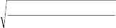
errorS (h)(1 errorS (h))
n
举例说明，假如数据样本S包含n=40 个样例，并且假设h在这些数据上产生了r=12 个错 误。这样，样本错误率为errorS(h)=12/40＝0.3。如果没有更多的信息，对真实错误率errorD(h) 的最好的估计即为样本错误率 0.3。然而我们不能期望这是对真实错误率的完美估计。如果 另外搜集 40 个随机抽取的样例S´，样本错误率errorS´(h)将与原来的errorS(h)存在些许不同。 这种不同是由S´和S组成上的随机差异所产生的。实际上，如果不断重复这一实验，每次抽 取一个包含 40 样例的样本Si，将会发现约 95%的实验中计算所得的区间包含真实错误率。 因此，我们将此区间称为errorD(h)的 95%置信区间估计。在本例中，r=12 和n=40，根据上式， 95%置信区间为 0.30±(1.96×0.07)＝0.30±0.14。
上面的 95％置信区间表达式可推广到一般情形以计算任意置信度。常数 1.96 是由 95% 这一置信度确定的。定义zN为计算N%置信区间时的常数。计算errorD(h)的N%置信区间的一 般表达式为：
errorS
(h) z N
errorS (h)(1 errorS (h))
n
(5.1)
其中zN的值依赖于所需的置信度，参见表 5-1 中的取值。
表 5-1 双侧的N％置信区间的zN值
置信度 N% | 50% | 68% | 80% | 90% | 95% | 98% | 99% |
常量zN | 0.67 | 1.00 | 1.28 | 1.64 | 1.96 | 2.33 | 2.58 |
因此，正如errorD(h)的 95％置信区间为 0.30±(1.96• 0.07)（其中r=12，n=40），可以求 得同样情况下 68%置信区间为 0.30±（1.0• 0.07）。从直觉上我们也可以看出 68％置信区间 要小于 95％置信区间，因为我们减小了要求errorD(h)落入此区间的概率。
等式 5.1 描述了为了在errorS(h)基础上估计errorD(h)，如何计算置信区间（即误差门限）。 这一表达式时只能应用于离散值假设。它假定样本S抽取的分布与将来的数据抽取的分布相 同，并且假定数据不依赖于所检验的假设。还有，该表达式只提供了近似的置信区间，不过 这一近似在至少包含 30 个样例并且errorS(h)不太靠近 0 或 1 时很接近真实情况。判断这种 近似是否接近真实，更精确的规则为：
n errorS (h)(1 errorS (h)) 5
上面我们概述了计算离散值假设的置信区间的过程，下一节将给出这一过程的统计学基 础。
本节介绍了统计学和采样理论的几个基本概念，包括概率分布、期望值、方差、二项分 布和正态分布、以及双侧和单侧区间。对于这些概念的基本了解将有助于理解假设评估和算 法评估。更为重要的，它们提供了一种重要的概念框架，以便于理解相关的机器学习问题（如 过度拟合问题）以及理解在成功的泛化和训练样例数目之间的关系。已经熟悉这些概念的读 者可以跳过本节。其中介绍的关键概念在表 5-2 中列出。
表 5-2 统计学中的基本定义和概念

n 随机变量(random variable)可被看作是有概率输出的一个实验。它的值为实验的输出结果。
n 某随机变量的概率分布(probability distribution)指定了Y取值为任一可能的值yi的可能性Pr(Y=yi) n 随机变量Y的期望值(expected value)或均值(mean)为 i yi Pr(Y yi ) 。通常用符号μY来表示 E[Y]。
n 随机变量的方差(Variance)为Var(Y)=E[(Y-μY)2]。它描述了Y关于其均值分布的宽度或分散度。
n Y的标准差(Standard deviation)为
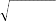
Var(Y ) 。通常用符号σY来代表。
n 二项分布(Binomial distribution)是在硬币投掷问题中，若出现正面的概率为 p，那么在 n 个独立 的实验中出现 r 次正面的分布情况。
n 正态分布(Normal distribution)是一钟形的概率分布，它在许多自然现象中都会出现。
n 中心极限定理(Central Limit Theorem)说明独立同分布的随机变量在大量实验中的和遵循正态分 布。
n 估计量(estimator)为一随机变量 Y，它用来估计一基准总体的某一参数 p。
n P 的估计量 Y 的估计偏差(estimation bias)为(E[Y]－p)。无偏估计量是指该偏差为 0。
n N%置信区间(confidence interval)用于估计参数 p，该区间以 N%的概率包含 p。

在样本错误率和真实错误率之间的差异与数据样本大小的依赖关系如何？这一问题在 统计学中已透彻研究。它可表述为：给定一总体中随机抽取的部分样本的观察频率，估计整 个总体的概率。在这里，我们感兴趣的观察量为 h 是否误分类样例。
解决该问题首先要注意到，测量样本错误率相当于在作一个有随机输出的实验。我们先
(
从分布D中随机抽取出n个独立的实例，形成样本S，然后测量样本错误率errorS(h)，如前一 节所述，如果将实验重复多次，每次抽取大小为n的不同的样本Si，将可以得到不同的errorSi h)
(
的值，它取决于不同Si的组成中的随机差异。这种情况下，第i个这样的实验的输出errorSi h) 被称为一随机变量（random variable）。一般情况下，可以将随机变量看成一个有随机输出的 实验。随机变量值即为随机实验的观察输出。
设想要运行k个这样的随机实验，测量随机变量errorS1 h) ，errorS2 h)，⋯⋯， errorSk h)。
( ( (
然后我们以图表的形式显示出观察到的每个错误率值的频率。当k不断增长，该图表将呈现 如表 5-3 那样的分布。该表描述的概率分布称为二项分布（Binomial distribution）。
表 5-3 二项分布


插图——原书页码： 25
Binomial distribution for n=40, p=0.3: n=40，p=0.3 时的二项分布

一个二项分布（Binomial distribution）给出了当单个硬币投掷出现正面的概率为 p 时，在 n 个独立硬币 投掷的样本中观察到 r 次正面的概率。它由以下的概率函数定义：
P(r) n! pr (1 p)nr
r!(n r)!
如果随机变量 X 遵循二项分布，则：
n X 取值为 r 的概率 Pr(X=r)由 P(r)给出。
n X 的期望值或均值 E[X]为：
n X 的方差 Var(X)为
E[X]=np
n X的标准差为σX为：
Var(X)=np(1-p)
X
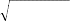
np(1 p)
对于足够大的 n 值，二项分布很接近于有同样均值和方差的正态分布（见表 5-4）。多数统计学家建议 只在 np(1-p)≥5 时使用正态分布来近似二项分布。

为较好地理解二项分布，考虑以下的问题。有一磨损并弯曲了的硬币，要估计在抛硬币 时出现正面的概率。令此未知概率为 p。投掷该硬币 n 次并计算出现正面的次数 r。对于 p 的一合理的估计为 r/n。注意，如果重新进行一次该实验，生成一个新的 n 次抛硬币的集合， 其出现正面次数 r 将与第一次实验有稍许不同，从而得到对 p 的另一个估计。二项分布描述 的是对任一可能的 r 值（从 0 到 n），这个正面概率为 p 的硬币抛掷 n 次恰好出现 r 次正面的 概率。
有趣的是，从抛掷硬币的随机样本中估计p，与在实例的随机样本上测试h以估计errorD(h) 是相同的问题。一次硬币抛掷对应于从D中抽取一个实例并测试它是否被h误分类。一次随 机抛掷出现正面的概率p对应于随机抽取的实例被误分类的概率（即p对应errorD(h)）。n次抛 掷的样本观察到r次正面，对应n个抽取的实例被误分类的数目。因此r/n对应errorS(h)。估计
p的问题等效于估计errorD(h)。二项分布给出了一个一般形式的概率分布，无论用于表示n次 硬币出现正面的次数还是在n个样例中假设出错的次数。二项分布的详细形式依赖于样本大 小n以及概率p或errorD(h)。
一般来说应用二项分布的条件包括：
1.有一基准实验（如投掷硬币），其输出可被描述为一随机变量 Y。随机变量 Y 有两种 取值（如 Y＝1 为正面，Y＝0 反面）。
2.在实验的任一次尝试中 Y=1 的概率为常数 p。它与其他的实验尝试无关。因此 Y=0 的 概率为 1-p。一般 p 为预先未知的，面临的问题就在于估计它。
3.基准实验的n次独立尝试按序列执行，生成一个独立同分布的随机变量序列Y1，Y2，⋯⋯
Yn。令R代表n次试验中出现Yi＝1 的次数：
n
R Yi
i1
4.随机变量 R 取特定值 r 的概率（如观察到 r 次正面的概率）由二项分布给出：
Pr(R r) n! pr (1 p)nr
r!(n r)!
（5.2）
此概率分布的一个图表在表 5-3 中给出。
二项分布刻画了 n 次硬币投掷出现 r 次正面的概率，也刻画了包含 n 个随机样例的数据 样本出现 r 次误分类错误的概率。
随机变量的两个最常用到的属性为其期望值（也称为均值）和方差。期望值是重复采样 随机变量得到的值的平均。更精确的定义如下：
定义： 考虑随机变量Y可能的取值为y1…yn，Y的期望值(expected value)E(Y)为：
n
E[Y ] yi Pr(Y yi )
i1
（5.3）
例如，如果 Y 取值 1 的概率为 0.7，取值 2 的概率 0.3，那么期望值为（1·0.7＋2·0.3
＝1.3）。如果随机变量 Y 服从二项分布，那么可得：
E[Y ] np
（5.4）
其中 n 和 p 为式 5.2 中定义的二项分布的参数。
另一重要属性方差描述的是概率分布的宽度或散度，即它描述了随机变量与其均值之间 的差有多大。
定义： 随机变量 Y 的方差（variance）Var[Y]为：
Var[Y ] E[(Y E[Y ])2 ]
（5.5）
方差描述的是从Y的一个观察去估计其均值E(Y)的误差平方的期望。方差的平方根被称 为Y的标准差，记为σY。
定义： 随机变量Y的标准差（standard deviation）σY为：
Y
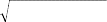
E[(Y E[Y ])2 ]
（5.6）
若随机变量 Y 服从二项分布，则方差和标准差分别为：
Var[Y ] np(1 p)
Y
np(1 p)
（5.7）
我们已得出随机变量errorS(h)服从二项分布，现在回到前面的问题：errorS(h)和真实错 误率errorD(h)之间可能的差异是多少？
用式 5.2 中二项分布的定义来描述errorS(h)和errorD(h)，可得：
errorS
(h) r
n
errorD (h) p
其中 n 为样本 S 中实例数，r 是 S 中被 h 误分类的实例数，p 为从 D 中抽取一实例被误 分类的概率。
统计学中将errorS(h)称为真实错误率errorD(h)的一个估计量 (estimator)。一般地，估计 量是用来估计某基准总体的某一参数的随机变量。对于估计量，显然最关心的是它平均来说 是否能产生正确估计。下面定义估计偏差(estimation bias)为估计量的期望值同真实参数值之 间的差异。
定义： 针对任意参数 p 的估计量 Y 的估计偏差为：
E[Y]-p
如果估计偏差为 0，我们称 Y 为 p 的无偏估计量（unbiased estimator）。注意，在此情况 下由多次重复实验生成的 Y 的多个随机值的平均（即 E[Y]）将收敛于 p。
errorS(h)是否为errorD(h)的一个无偏估计量？确实如此，因为对于二项分布，r的期望值 为np（等式[5.4]）。由此，并且因为n为一常数，那么r/n的期望值为p。
对估计偏差还需要作两点说明。首先，在本章开始我们提到，在训练样例上测试假设得 到的对假设错误率的估计偏于乐观化，所指的正是估计偏差。要使errorS(h)对errorD(h)无偏 估计，假设h和样本S必须独立选取。第二，估计偏差(estimation bias)这一概念不能与第二章 介绍的学习器的归纳偏置(inductive bias)相混淆。估计偏差为一数字量，而归纳偏置为断言 集合。
估计量的另一重要属性为其方差。给定多个无偏估计量，直观上应选取其中方差最小的。 由方差的定义，所选择的应为参数值和估计值之间期望平方误差最小的。
假如在测试一假设时，它对n＝40 个随机样例的样本产生r＝12 个错误，那么对errorD(h) 的无偏估计为errorS(h)＝r/n＝0.3。估计中产生的方差完全来源于r中的方差，因为n为一常数。 由于r是二项分布，它的方差由式（5.7）为np(1-p)。然而p未知，我们可以用估计量r/n来代
替p。由此得出r的的估计方差为 40·0.3(1-0.3)＝8.4，或相应的标准差
8.4 ≈2.9。这表示
errorS(h)＝r/n中的标准差约为 2.9/40＝0.07。概而言之，观察到的errorS(h)为 0.3，标准差约 为 0.07。（见习题 5.1）。
一般来说，若在n个随机选取的样本中有r个错误，errorS (h)的标准差为：
errorS (h)
r
n

p(1 p) n
（5.8）
它约等于用r/n＝errorS (h)来代替p：
errorS (h)
errorS (h)(1 errorS (h)) （5.9）
n
通常描述某估计的不确定性的方法是使用一置信区间，真实的值以一定的概率落入该区 间中。这样的估计称为置信区间（confidence interval）估计。
定义： 某个参数 p 的 N％置信区间是一个以 N％的概率包含 p 的区间。 例如，如果在n＝40 个独立抽取的样例的样本中有r＝12 个错误，可以称区间 0.3±0.14
有 95％的可能性包含真实错误率errorD(h)。
如何获得errorD(h)的置信区间？答案在于估计量errorS(h)服从二项分布。这一分布的均 值为errorD(h)，标准差可由式 5.9 计算。因此，为计算 95％置信区间，只需要找到一个以均 值errorD(h)为中心的区间，它的宽度足以包含该分布下全部概率的 95％。等价地，它指定了 errorD(h)有 95％的机会落入errorS(h)周围的某区间的大小。
对于给定的 N 值，如何计算区间大小以使其包含 N％的概率质量？对于二项分布来说 这一计算十分烦琐。然而多数情况下可以进行一近似，使计算过程更容易。这基于如下事实： 即对于足够大的样本，二项分布可以很好地由正态分布来近似。正态分布（在表 5-4 中概述） 是统计学中研究得最透彻的概率分布之一。如表 5-4 所示，正态分布是一钟形分布，由其均 值μ和标准差σ完全定义。对于大的 n，二项分布非常近似于一个同样均值和方差的正态分
布。
之所以使用正态分布来代替，一个原因是多数统计参考都列表给出了正态分布下包含N
％的概率质量的均值周围的区间的大小。这就是计算N％置信区间所需的信息。实际上表 5-1
正是这样一个表。表 5-1 中给定的常数zN定义的是在钟形正态分布下，包含N％概率质量的 均值周围的最小区间的宽度。更精确地说，zN以标准差给定了区间的半宽度（即在任一方向 距均值的距离），图 5-1(a)给出了针对z80的一个区间。
表 5-4 正态或高斯分布


插图——原书页码： 139
Normal distribution with mean 0, standard deviation 1：均值为 0，标准差为 1 的正态分布

一个正态分布（也被称为高斯分布）是一钟型分布，它定义为下面的概率密度函数：
1 ⎛ x ⎞2
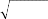
⎝
⎠
p(x) 1 e 2 ⎜ ⎟
2 2
一个正态分布由上面公式中的两个参数完全确定：μ和σ。 如果随机变量 X 遵循正态分布，则：
n X 落入到(a, b)的概率为：
n X 的期望值或均值 E[X]为：
b
p(x)dx
a
n X 的方差 Var(X)为
n X的标准差为σX为：
E[X]= μ
Var(X)=σ2
σX=σ
中心极限定理（5.4.1 节）说明大量独立同分布的随机变量的和遵循的分布近似为正态分布。

插图——原书页码： 140

图 5-1 一个均值为 0，标准差为 1 的正态分布。
(a)在 80%置信度下，随机变量值位于双侧区间[-1.28, 1.28]之间。注意z80＝1.28。有 10%置信度其落 入区间左侧，10%落入区间右侧。(b)在 90%置信度下，随机变量位于单侧区间[-∞, 1.28]上。
概而言之，如果随机变量 Y 服从正态分布，均值为μ，标准差为σ，那么 Y 的任一观 察值 y 有 N%的机会落入下面的区间：
μ±zNσ （5.10） 相似地，均值μ有 N%的机会落入下面的区间：
y±zNσ （5.11）
很容易将此结论和前面的结论结合起来推导式 5.1 的离散值假设的N％置信区间的一般 表达式。首先，由于errorS(h)遵从二项分布，其均值为errorD(h)，标准差如式 5.9 所示。其次， 我们知道对于足够大的样本大小n，二项分布非常近似于正态分布。第三，式 5.11 告诉我们 如何为估计正态分布的均值求出N％置信区间。因此，将errorS(h)的均值和标准差代入到式 5.11 中将得到式 5.1 中对离散值假设的N％置信区间为：
errorS
(h) z N
errorS (h)(1 errorS (h))
n
回忆一下，在表达式的推导中有两个近似化：
1.估计errorS(h)的标准差σ时，我们将errorD(h)近似为errorS(h)（即从式 5.8 到式 5.9 的推 导）。
2.二项分布由正态分布近似。
统计学中的一般规则表明，这两个近似在 n≥30 或 np(1-p)≥5 时工作得很好。对于较小 的 n 值，最好使用列表的形式给出二项分布的具体值。
上述的置信区间是双侧的，即它规定了估计量的上界和下界。在某些情况下，可能要用 到单侧边界。例如，提出问题“errorD(h)至多为U的概率”。在只要限定h的最大错误率，而 不在乎真实错误率是否小于估计错误率时，很自然会提出这种问题。
只要对上述的过程作一小的修改就可计算单侧错误率边界。它所基于的事实为正态分布 关于其均值对称。因此，任意正态分布上的双侧置信区间能够转换为相应的单侧区间，置信 度为原来的两倍。（见图 5-1(b)）。换言之，由一个有下界 L 和上界 U 的 100(1-α)%置信区 间，可得到一个下界为 L 无上界的 100(1-α/2)%置信区间，同时也可得出一个有上界 U 无 下界的 100(1-α/2)%置信区间。这里α对应于真实值落在指定区间外的概率。换句话说，α 是真实值落入图 5-1(a)中无阴影部分的概率，α/2 是落入图 5-1（b）的无阴影部分的概率。
D
为说明这一点，再次考虑h产生r=12 个错误且样本大小n=40 的这个例子。如上所述，它 导致一个双侧的 95％置信区间 0.3±0.14。其中 100(1-α)=95％，所以α＝0.05。因此，应 用以上规则，可得有 100(1-α/2)＝97.5％的置信度error (h)最多为 0.30＋0.14＝0.44，而不管
errorD(h)的下界。因此在errorD(h)上的单侧错误率边界比相应的双侧边界有双倍的置信度（见 习题 5.3）。
前一节介绍的是针对一特定情况推导置信区间估计：基于独立抽取的n样本，估计离散 值假设的errorD(h)。本节介绍的方法是在许多估计问题中用到的通用的方法。确切地讲，我 们可以将此看作是基于大小为n的随机抽取样本的均值，来估计总体均值的问题。
通用的过程包含以下步骤：
1.确定基准总体中要估计的参数p，例如errorD(h)。
2.定义一个估计量Y（如errorS(h)）它的选择应为最小方差的无偏估计量。
3.确定估计量所服从的概率分布DY，包括其均值和方差。
4.确定N％置信区间，通过寻找阈值L和U以使这个按DY分布的随机变量有N％机会落入L
和U之间。
后面的几节将应用该通用的方法到其他几种机器学习中常见的估计问题。首先我们需要 讨论估计理论的一个基本成果，称为中心极限定理(Central Limit Theorem)。
中心极限定理是简化置信区间的推导的一个基本根据。考虑如下的一般框架：在n个独 立抽取的且服从同样概率分布的随机变量Y1⋯Yn中观察实验值（如同一硬币的n次抛掷）。令 μ代表每一变量Yi服从的未知分布的均值，并令σ代表标准差。称这些变量Yi为独立同分布 (independent, identically distributed)随机变量，因为它们描述的是各自独立并且服从同样概率
n i
1 n

分布的实验。为估计Yi服从的分布的均值μ，我们计算样本的值 Y Y （如n次投掷
n i1
硬币中出现正面的比例）。中心极限定理说明在n→∞时 Yn 所服从的概率分布为一正态分布，
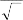
而不论Yi本身服从什么样的分布。更进一步，Yn 服从的分布均值为μ而且标准差为 ，精
n
确的定义如下：

定理 5.1：中心极限定理。考虑独立同分布的随机变量Y1…Yn的集合，它们服从一任意的概率分
n
布，均值为μ，有限方差σ2。定义样本均值 Y
1 n
Y
n i1 i
。则当n→∞时下面的式子
Yn
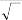
n
服从一正态分布，均值为 0 且标准差为 1。

这一结论非常令人吃惊，因为它说明在不知道独立的Yi所服从的基准分布的情况下，我 们可以得知样本均值 Y 的分布形式。更进一步，中心极限定理说明了怎样使用 Y 的均值和
方差来确定单独的Yi的均值和方差。
中心极限定理是一个非常有用的结论，因为它表示任意样本均值的估计量（如errorS(h) 为均值错误率）服从的分布在n足够大时可近似为正态分布。如果还知道这一近似的正态分 布的方差，就可用式 5.11 来计算置信区间。一个通常的规则是在n≥30 时可使用这一近似。 前面的章节我们正是使用了正态分布来近似地描述errorS(h)服从的二项分布。
现考虑对某离散目标函数有两个假设h1和h2。假设h1在一拥有n1个独立抽取样例的样本 S1上测试，且h2在n2个同样抽取的样例的样本S2上测试。假定要估计这两个假设的真实错误 率间的差异：
d errorD (h1 ) errorD (h2 )
可使用节 5.4 中描述的四步骤来推导 d 的置信区间估计。在确定 d 为待估计的参数后， 下面要定义一估计量。很显然，这里可选择样本错误率之间的差异作为估计量，标记为 dˆ ：
dˆ error
(h ) error
(h )
S1 1
S2 2
在此不加证明地使用 dˆ 即为 d 的无偏估计量，即 E[dˆ] d 。
随机变量 dˆ 服从的概率分布是什么？从前面的章节中，我们知道对于较大的n1和n2（比
如都≥30），errorS1 h1)和errorS2 h2)都近似遵从正态分布。由于两正态分布的差仍为一正态分
( (
布，因此 dˆ 也近似遵从正态分布，均值为d。同时，可得该分布的方差为errorS (h1)和errorS (h2)
1 2
的方差的和。使用式 5.9 获得这两个分布的近似方差，有：
error (h )(1 error (h )) error
2 S 1 S 1 S
(h2 )(1 errorS
(h2 ))
（5.12）
1 1 2 2
n
n
dˆ
1 2
现在已确定了估计量 dˆ 所服从的概率分布，很容易导出置信区间以说明使用 dˆ 来估计d
的可能误差。随机变量 dˆ 服从均值d方差σ2的正态分布，其N％置信区间估计为 dˆ z
ˆ
使用上面给出的方差 2 的近似值，d的近似的N％置信区间估计为：
d
N 。
N
dˆ z
errorS (h1 )(1 errorS (h1 )) errorS (h2 )(1 errorS (h2 ))
1 1 2 2
(5.13)
n1 n2
其中zN是表 5-1 中描述的常数。上式给出了一般的双侧置信区间，以估计两个假设错误 率之间的差异。有时可能需要某一置信度下的单侧的边界——要么界定最大可能差异，要么 为最小的。单侧置信区间可以用 5.3.6 节中描述的方法来修改上式而得到。
虽然上面的分析考虑到了h1和h2在相互独立的数据样本上测试，更通常的情况是在一个 样本S（S仍然独立于h1和h2）。这样， dˆ 被重新定义为：
dˆ error
(h ) error (h )
S 1 S 2
当使用S来代替S1和S2时，新的 dˆ 中的方差通常小于 5.12 式给出的方差。这是因为，使 用单个的样本S消除了由S1和S2的组合带来的随机差异。这样，由式 5.13 给出的置信区间一 般说来会过于保守，但仍然是正确的。
有时我们感兴趣的是某特定的猜想正确的概率，而不是对某参数的区间估计。比如下面 的问题“errorD(h1)>errorD(h2)的可能性有多大？”。仍使用前一节的条件设定，假定要测量h1
和h2的样本错误率，使用大小为 100 的独立样本S1和S2，并且知道errorS1 h1)＝0.30 且errorS2 h2)
( (
＝0.20，因此差异 dˆ 为 0.10。当然，由于数据样本的随机性，即使error (h1)≤ error (h2)，
D
仍有可能得到这样的差异。在这里，给定样本错误率 dˆ ＝0.10，error (h1)>error
D
(h2)的概率
D D
是多少？等价地，如何计算在 dˆ ＝0.10 时d>0 的概率？
ˆ
注意概率 Pr(d＞0)等于 dˆ 过高估计 d 不多于 0.1 的概率。也即，这个概率为 dˆ 落入单侧 区间 dˆ <d+0.10 的概率。由于 d 是 dˆ 所服从分布的均值，上式等价于 dˆ 0.10 。
d
ˆ
概括地说，概率 Pr(d＞0)等于 dˆ 落入单侧区间 dˆ 0.10 的概率。由于前一节我们
d
已计算出 dˆ 的大致分布，就可以通过 dˆ 分布在该区间的概率质量来确定 dˆ 落入这个单侧区 间的概率。
ˆ
首先将区间 dˆ 0.10 表示为允许从均值偏离的标准差数。使用式 5.12 可得
d
ˆ
0.061 ，所以这一区间可近似表示为
d
dˆ ˆ 1.64 ˆ
d d
与此正态分布的单侧区间相关联的置信度是多少？查表 5-1，可得均值周围的 1.64 标准 差对应置信度 90％的双侧区间。因此这个单侧区间具有置信度 95％。
因此，给定观察到的 dˆ ＝0.1，error (h1)>error (h2)的概率约为 0.95。根据统计学的术语，
D D
可表述为：接受（accept）“errorD(h1)>errorD(h2)”这一假设，置信度为 0.95。换一种说法，
可表述为我们拒绝（reject）对立假设（常称为零假设），以(1-0.95)=0.05 的效度（significance level）。
有时我们更感兴趣于比较两个学习算法LA和LB的性能，而不是两个特定假设。怎样近似 地检验多个学习算法，如何确定两个算法之间的差异在统计上是有意义的？虽然，在机器学 习研究领域，对于比较的方法仍在争论中，不过这里介绍了一个合理的途径。关于不同方法
的讨论见Dietterich（1996）。
开始先指定要估计的参数。假定有LA和LB两个算法，要确定为了学习一特定目标函数f 平均来说那个算法更优。定义“平均”的一种合理方法是，从一基准实例分布D中抽取所有 包含n个样例的训练集合，在所有这样的集合中测量两个算法的平均性能。换句话说，需要 估计假设错误率之间差异的期望值：
E [errorD (L A (S )) errorD (LB (S ))]
S D
(5.14)
其中L(S)代表给定训练样本S时学习算法L输出的假设，下标SD表示期望值是在基准分 布D中抽取的样本S上计算。上述表达式描述的是学习算法LA和LB的差的期望值。
在实际的学习算法比较中，我们只有一个有限的样本D0。在这种情况下，很显然，要 估计上述的量需要将D0分割成训练集合S0和不相交的测试集合T0。训练数据可以用来既训练 LA又训练LB，而测试数据则用来比较两个学习到的假设的准确度，也就是，使用下式来计算：
errorT (LA (S0 )) errorT (LB (S0 ))
（5.15）
0 0
(
上式与 5.14 式的计算有两个关键的不同。首先我们使用errorT0 h)来近似 errorD(h)。第 二，错误率的差异测量是在一个训练集合S0上而不是在从分布D中抽取的所有的样本S上计算 期望值。
改进 5.15 式的一种方法是将数据D0多次分割为不相交的训练和测试集合，然后在其中
计算错误率的平均值。这一过程在表 5-5 中列出，它在一可用数据的固定样本D0上估计两个 学习算法错误率之间的差异。该过程首先将数据拆分为k个不相交的相等子集，子集大小至 少为 30。然后训练和测试算法k次，每次使用其中一个子集作为测试数据集，其他k-1 个子 集为训练集。使用这种办法，学习算法在k个独立测试集上测试，而错误率的差异的均值 作为两个学习算法间差异的估计。
表 5-5 估计两学习算法LA和LB错误率差异的一种方法
近似的置信区间将在正文中给出。
1.将可用数据D0分割成k个相同大小的不相交子集T1, T2, …, Tk。其大小至少为 30。
2.令 i 从 1 到 k 循环，做下面的操作： 使用Ti作为测试集合，而剩余的数据作为训练集合Si
n Si {D0 Ti } n hA LA (Si ) n hB LB (Si )
n i errorT (hA ) errorT (hB )
i i
3.返回值 ，其中
1 k
i
k i1


表 5-5 返回的 可被用作对式 5.14 所需结果的一个估计。更合适的说法是把 看作下 式的估计：
E
S D0
[errorD (LA (S )) errorD (LB (S ))]
（5.16）
其中S代表一个大小为

k 1
k

D0 ，从D0中一致抽取的随机样本。在该式和 5.14 中原来
的表达式之间，惟一的差别在于其期望值的计算是在可用数据的子集D0上计算，而不是在 从整个分布D上抽取的子集上计算。
估计 5.16 式的近似的 N％置信区间可使用 表示为：
tN ,k 1 s
（5.17）
其中tN, k-1是一常数，其意义类似于前面置信区间表达式中的zN，而 s 代表对 所服从
的概率分布的标准差的估计，确切的讲， s 定义为：

s
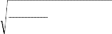
1
k(k
k
1)
2
( i )
i1
（5.18）
注意 5.17 中的常量tN, k-1有两个下标。第一个代表所需的置信度，如前面的常数zN中那样。 第二个参数称为自由度（degree of freedom），常被记作v，它与生成随机变量 的值时独立 的随机事件数目相关。在当前的条件下，自由度数值为k-1。参数t的几种取值在表 5-6 中列 出。注意当k→∞时，tN, k-1的值趋于常数zN。
注意这里描述的比较学习算法的过程要在同样的测试集合上测试两个假设。这与 5.5 节 中描述的比较两个用独立测试集合评估过的假设不同。使用相同样本来测试假设被称为配对 测试(paired test)。配对测试通常会产生更紧密的置信区间。因为在配对测试中任意的差异都 来源于假设之间的差异。相反，若假设在分开的数据样本上的测试，两个样本错误率之间的 差异也可能部分来源于两个样本组成上的不同。
表 5-6 双侧置信区间tN,v的值。当v→∞时，tN,v趋近于zN。
置信度 N | ||||
90% | 95% | 98% | 99% | |
v=2 | 2.92 | 4.30 | 6.96 | 9.92 |
v=5 | 2.02 | 2.57 | 3.36 | 4.03 |
v=10 | 1.81 | 2.23 | 2.76 | 3.17 |
v=20 | 1.72 | 2.09 | 2.53 | 2.84 |
v=30 | 1.70 | 2.04 | 2.46 | 2.75 |
v=120 | 1.66 | 1.98 | 2.36 | 2.62 |
v=∞ | 1.64 | 1.96 | 2.33 | 2.58 |
5.6.1 配对 t 测试
上面描述了在给定固定数据集时比较两个学习算法的过程。本节讨论这一过程以及 5.17
和 5.18 式中置信区间的统计学论证。如果第一次阅读，可以跳过它而不失连续性。
为了理解 5.17 式中的置信区间，考虑以下的估计问题：
• 给定一系列独立同分布的随机变量Y1,Y2…Yk的观察值。
• 要估计这些Yi所服从的概率分布的均值μ。
• 使用的估计量为样本均值 Y
1 k
Y Yi k i1
这一基于样本均值 Y 估计分布均值μ的问题非常常见。例如，它覆盖了早先用errorS(h)
来估计errorD(h)的问题。（其中，Yi为 0 或 1 表示h是否对一单独的S样例产生误分类，而errorD(h) 为基准分布的均值μ。）由式子 5.17 和 5.18 描述的t测试应用于该问题的一特殊情形——即 每个单独的Yi遵循正态分布。
现考虑比较学习算法的表 5-5 过程的一个理想化条件。假定不是拥有固定样本数据D0，
而是从基准实例分布中抽取新的训练样例。在这里我们修改表 5-5 中的过程，使每一次循环 生成一个新的随机训练集Si和新的随机测试集Ti，生成方法是从基准分布中抽取而不是从固 定样本D0中抽取。这一理想化方法能很好地匹配上面的估计问题。特别地，该过程所测量 的δi现对应到独立同分步的随机变量Yi。其分布的均值μ对应两学习算法错误率的期望差异
（即式 5.14）。样本均值 Y 为这一理想化方法计算出的 。现希望回答：“ 是否能较好地 估计μ”。

首先，注意到测试集Ti的大小至少包含 30 个样例。因此，单独的δi将近似遵循正态分 布（由中心极限定理）。因此，我们有一特殊条件即Yi服从近似的正态分布。可以得到，一 般地，当每个Yi遵循正态分布时，样本均值 Y 也遵循正态分布。由此，可以考虑使用前面计 算置信区间的表达式（等式 5.11），其中的估计量正是遵循了正态分布。然而，该等式要求 知道分布的标准差，但这里未知。
t 测试正好用于这样的情形，即估计一系列独立同正态分布的随机变量的样本均值。在 这里，可使用式 5.17 和 5.18 中的置信区间，它可被重新表述为：
Y t N ,k 1 sY

s
其中 为估计的样本均值的标准差：
Y
sY
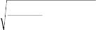
1
k(k
k
1)
2
(Yi Y )
i 1
而tN, k-1类似于前面的zN的常量。实际上，常量tN, k-1描述的是称为t分布的概率分布下的区 域，正如常数zN描述了正态分布下的区域。t分布是一类似于正态分布的钟形分布，但更宽 且更短，以反映由于使用 s 来近似真实标准差 时带来的更大的方差。当k趋近于无穷时，
Y Y
t分布趋近于正态分布（因此tN, k-1趋近于zN）。这在直觉上是正确的，因为我们希望样本大小k

增加时 s 收敛到真实的标准差 ，且因为当标准差确切已知时可使用zN。
Y Y
上面的讨论证明了在使用样本均值 Y 来估计一个包含k个独立同正态分布的随机变量 的样本均值时，使用式 5.17 来估计置信区间。这匹配了我们的理想的条件，即假定对于目
标函数的样例可进行无限存取。在实际中，若数据集D0有限，且算法使用表 5-5 描述的实际 方法，这一证明并不严格适用。实际的问题是，为产生δi只有重新采样D0，以另外的方法 把它分割为测试集和训练集。δi此时相互并不独立，因为它们基于从有限子集D0中抽取的 相互重叠的训练样例，而不是从整个分布D中抽取。
当只有一个有限的数据样本D0可用时，有几种方法用来重采样D0。表 5-5 描述的是k-fold 方法，其中D0被分为k个不相交的等大小的子集，在这种k-fold方法中，D0中每一样例都有一 次用于测试，而k-1 次用于训练。另一种常用的方法是从D0中随机抽取至少 30 个样例的集 合，再用剩余的样例来训练，重复这一过程直到足够的次数。这种随机方法的好处是能够重 复无限次，以减小置信区间到需要的宽度。相反，k-fold方法受限于样例的总数，这是因为 每个样例只有一次用于测试，且希望样本大小至少为 30。然而，随机方法的缺点是，测试 集合不再能看作是从基准分布D独立抽取。相反，k-fold交叉验证生成的测试集合是独立的， 因为一实例只在测试集合中出现一次。
概括地说，基于有限数据的学习算法的比较中没有一个单独的方法能满足我们希望的所 有约束。有必要记住统计学模型在数据有限时很少能完美地匹配学习算法验证的所有约束。 然而它们确实提供了近似的置信区间，有助于解释学习算法的实验性比较。
本章的要点包括：
• 统计理论提供了一个基础，从而基于在数据样本S上的观察错误率errorS(h)，估 计假设h的真实错误率errorD(h)。例如，如果h为一离散值假设，而且数据样本包 括n≥30 个不依赖h且相互独立的样例时，那么errorD(h)的N％置信区间近似为：
errorS
(h) z N
errorS (h)(1 errorS (h))
n
其中zN的值由表 5-1 给出。
• 一般地，估计置信区间的问题可通过确定一待估计的参数（如errorD (h)）以及相 对应的估计量（errorS (h)）来完成。由于估计量是一随机变量（如errorS(h)依赖 于随机样本S），它可由其服从的概率分布来描述。置信区间的计算可通过确定 该分布下包含所需概率质量的区间来描述。
• 估计假设精度的一种误差可能为估计偏差（estimation bias）。如果Y为对某参数 p的估计量，Y的估计偏差为Y的期望值和p之间的差。例如，如果S是用来形成假 设h的训练数据，则errorS(h)给出了真实错误率errorD(h)的一个偏于乐观化的估 计。
• 估计产生误差的第二种原因是估计方差（variance）。即使对于无偏估计，估计 量的观察值也有可能在各实验中不同。估计量分布的方差σ2描述了该估计与真 实值的不同有多大。该方差在数据样本增大时降低。
• 比较两学习算法效果的问题在数据和时间无限时是一个相对容易的估计问题， 但在资源有限时要困难得多。本章描述的一种途径是在可用数据的不同子集上 运行学习算法，在剩余数据上测试学到的假设，然后将这些实验的结果平均。
• 这里所考虑的多数情况下，推导置信区间需要进行多个假定和近似。例如上面 的errorD (h)的置信区间需要将二项分布近似为正态分布；近似计算分布的方差； 以及假定实例从一固定不变的概率分布中生成。基于这些近似得到的区间只是 近似置信区间，但它们仍提供了设计和解释机器学习实验结果的有效指导。
本章介绍的关键统计学定义在表 5-2 中列出。
使用统计的方法来估计和测试假设这一主题有大量的文献。本章只介绍了基本概念，细 节的问题可在许多书籍和文章中找到。Billingsley et al.（1986）提供了对统计学的一个很简 明的介绍，详尽描述了这里所讨论的一些问题。其他文献包括 DeGroot（1986）； Casella & Berger（1990）。Duda & Hart（1973）在数值模式识别领域提出了这些问题的解决。
Segre et al.（1991，1996），Etzioni & Etzioni（1994），以及 Gordon & Segre（1996）讨 论了评估学习算法的统计意义测试，算法的性能根据其改进计算效率的能力来评测。
Geman et al.（1992）讨论了在同时最小化偏差和最小化方差之间作出的折中。这一从 有限数据中学习和比较假设的主题仍在争论中。例如，Dietterich（1996）讨论了在不同的训 练-测试数据分割下使用配对差异 t 测试带来的风险。
习题
5.1 假定检验一假设h，并发现在一包含n=1000 个随机抽取样例的样本S上，它出现r=300
个错误。errorS(h)的标准差是什么？将此结果与 5.3.4 节末尾的例子中标准差相比较会得出 什么结论？
5.2 考虑某布尔值概念中学到的假设h。当h在 100 个样例的集合上测试时，有 83 个分类 正确。那么真实错误率errorD(h)的标准差和 95％置信区间是多少？
5.3 如果假设h在n=65 的独立抽取样本上出现r=10 个错误。真实错误率的 90％置信区间
（双侧的）是多少。95％单侧置信区间（即一个上界U，使得有 95％置信度errorD(h)≤U） 是多少？90％单侧区间是多少？
5.4 要测试－假设h，其errorD(h)已知在 0.2 和 0.6 范围内。要保证 95％双侧置信区间的 宽度小于 0.1，最少应搜集的样例数是多少。
5.5 对于在不同数据样本上测试的两假设错误率的差，给出计算单侧上界和单侧下界的
N％置信区间的通用表达式。
5.6 解释为什么式 5.17 给出的置信区间估计可用于估计式 5.16，而不能估计式 5.14。
第6章 贝叶斯学习
贝叶斯推理提供了推理的一种概率手段。它基于如下的假定，即待考查的量遵循某概率 分布，且可根据这些概率及已观察到的数据进行推理，以作出最优的决策。贝叶斯推理对机 器学习十分重要，因为它为衡量多个假设的置信度提供了定量的方法。贝叶斯推理为直接操 作概率的学习算法提供了基础，而且它也为其他算法的分析提供了理论框架。
贝叶斯学习同我们的机器学习研究相关，有两个原因。首先，贝叶斯学习算法能够计算 显式的假设概率，如朴素贝叶斯分类器，它是解决相应学习问题的最有实际价值的方法之一。 例如，Michie et al.（1994）详细研究比较了朴素贝叶斯分类器（naïve Bayesian classifier）和 其他学习算法，包括决策树和神经网络。他们发现朴素贝叶斯分类器在多数情况下与其他学 习算法性能相当，在某些情况下还优于其他算法。本章描述了朴素贝叶斯分类器，并提供了 一个详细例子：即它应用于文本文档分类的学习问题（如电子新闻分类）。对于这样的学习 任务，朴素贝叶斯分类是最有效的算法之一。
贝叶斯方法对于机器学习研究的重要性还体现在，它为理解多数学习算法提供了一种有 效的手段，而这些算法不一定直接操作概率数据。例如，本章分析了第 2 章的 Find-S 和候 选消除算法，以判断在给定数据时哪一个算法将输出最有可能的假设。我们还使用贝叶斯分 析证明了神经网络学习中的一个关键性的选择：即在搜索神经网络空间时，选择使误差平方 和最小化的神经网络。我们还推导出另一种误差函数：交叉熵。它在学习预测概率目标函数 时比误差平方和更合适。本章还用贝叶斯的手段分析了决策树的归纳偏置（即优选最短的决 策树），并考查了密切相关的最小描述长度（Minimum Description Length）原则。对贝叶斯 方法的基本了解，对于理解和刻画机器学习中许多算法的操作很重要。
贝叶斯学习方法的特性包括：
观察到的每个训练样例可以增量式地降低或升高某假设的估计概率。这提供了 一种比其他算法更合理的学习途径。其他算法会在某个假设与任一样例不一致 时完全去掉该假设。
先验知识可以与观察数据一起决定假设的最终概率。在贝叶斯学习中，先验知 识的形式可以是（1）每个候选假设的先验概率（2）每个可能假设在可观察数 据上的概率分布。
贝叶斯方法可允许假设做出不确定性的预测。（比如这样的假设：这一肺炎病 人有 93%的机会康复）。
新的实例分类可由多个假设一起作出预测，以它们的概率为权重。
即使在贝叶斯方法计算复杂度较高时，它们仍可做为一个最优的决策的标准衡 量其他方法。
在实践中应用贝叶斯方法的难度之一在于，它们需要概率的初始知识。当这概率预先未 知时，可以基于背景知识、预先准备好的数据以及关于基准分布的假定来估计这些概率。另 一实际困难在于，一般情况下确定贝叶斯最优假设的计算代价比较大（同候选假设的数量成 线性关系）。在某些特定情形下，这种计算代价可以被大大降低。
本章剩余部分的组成如下。6.2 节介绍了贝叶斯理论，并定义了极大似然（maximum likelihood）假设和极大后验概率假设（maximum a posteriori probability hypotheses）。接下来 的四节将此概率框架应用于分析前面章节的相关问题和学习算法。例如，我们证明了在特定 前提下，几个前述的算法能输出极大似然假设。剩余的几节则介绍了几种直接操作概率的学 习算法。包括贝叶斯最优分类器、Gibbs 算法和朴素贝叶斯分类器。最后，我们讨论了贝叶 斯置信网，它是一种基于概率推理的较新的学习方法；以及 EM 算法，是当存在未观测到变 量时广泛使用的学习算法。
在机器学习中，通常我们感兴趣的是在给定训练数据 D 时，确定假设空间 H 中的最佳 假设。所谓最佳假设，一种办法是把它定义为在给定数据 D 以及 H 中不同假设的先验概率 的有关知识条件下的最可能（most probable）假设。贝叶斯理论提供了计算这种可能性的一 种直接的方法。更精确地讲，贝叶斯法则提供了一种计算假设概率的方法，它基于假设的先 验概率、给定假设下观察到不同数据的概率、以及观察的数据本身。
要精确地定义贝叶斯理论，先引入一些记号。我们用 P(h)来代表还没有训练数据前，假 设 h 拥有的初始概率。P(h)常被称为 h 的先验概率（prior probability ），它反映了我们所拥 有的关于 h 是一正确假设的机会的背景知识。如果没有这一先验知识，那么可以简单地将每 一候选假设赋予相同的先验概率。相似地，可用 P(D)代表将要观察的训练数据 D 的先验概 率（换言之，在没有确定某一假设成立时，D 的概率）。下一步，以 P(D|h)代表假设 h 成立 的情形下观察到数据 D 的概率。更一般地，我们使用 P(x|y)代表给定 y 时 x 的概率。在机器 学习中，我们感兴趣的是 P(h|D)，即给定训练数据 D 时 h 成立的概率。P(h|D)被称为 h 的后 验概率（posterior probability），因为它反映了在看到训练数据 D 后 h 成立的置信度。应注意， 后验概率 P(h|D)反映了训练数据 D 的影响；相反，先验概率 P(h)是独立于 D 的。
贝叶斯法则是贝叶斯学习方法的基础，因为它提供了从先验概率 P(h)以及 P(D)和 P(D|h)
计算后验概率 P(h|D)的方法。
贝叶斯公式
P(h | D) P( D | h) P(h)
P(D)
（6.1）
直观可看出，P(h|D)随着 P(h)和 P(D|h)的增长而增长。同时也可看出 P(h|D)随 P(D)的增 加而减少，这是很合理的，因为如果 D 独立于 h 被观察到的可能性越大，那么 D 对 h 的支 持度越小。
在许多学习场景中，学习器考虑候选假设集合H并在其中寻找给定数据D时可能性最大 的假设h∈H（或者存在多个这样的假设时选择其中之一）。这样的具有最大可能性的假设被 称为极大后验（maximum a posteriori, MAP）假设。确定MAP假设的方法是用贝叶斯公式计 算每个候选假设的后验概率。更精确地说当下式成立时，称hMAP为—MAP假设：
hMAP arg max P(h | D)
hH
arg max P( D | h) P(h)
hH
P(D)
arg max P(D | h)P(h)
hH
（6.2）
注意在最后一步我们去掉了 P(D)，因为它是不依赖于 h 的常量。
在某些情况下，可假定 H 中每个假设有相同的先验概率（ 即对 H 中任意 hi 和 hj ， P(hi)=P(hj)）。这时可把等式 6-2 进一步简化，只需考虑P(D|h)来寻找极大可能假设。P(D|h) 常称为给定 h 时数据 D 的似然度（ likelihood ），而 使 P(D|h) 最大的假设被称为极大似然
（maximum likelihood，ML）假设hML。
hML arg max P(D | h) （6.3）
hH
为了使上面的讨论与机器学习问题相联系，我们把数据 D 称作某目标函数的训练样例， 而把 H 称为候选目标函数空间。实际上，贝叶斯公式有着更为普遍的意义。它同样可以很 好地用于任意互斥命题的集合 H，只要这些命题的概率之和为 1（例如：“天空是兰色的” 和“天空不是兰色的”）。本章中有时将 H 作为包含目标函数的假设空间，而 D 作为训练例 集合。其他一些时候考虑将 H 看作一些互斥命题的集合，而 D 为某种数据。
为说明贝叶斯规则，可考虑一医疗诊断问题，其中有两个可选的假设：（1）病人有某种 类型的癌症，（2）病人无癌症。可用的数据来自于一化验测试，它有两种可能的输出：（正） 和 Θ（负）。我们有先验知识：在所有人口中只有 0.008 的人患有该疾病。另外，该化验测 试只是该病的一个不完全的预计。该测试针对确实有病的患者有 98%的可能返回正确的结 果，而对无该病的患者有 97%的可能正确返回 Θ 结果。除此以外，测试返回的结果是错误 的。上面的情况可由以下的概率式概括：
P(cancer) 0.008 , P( | cancer) 0.98 , P( | cancer) 0.03 ,
P(cancer) 0.992 P( | cancer) 0.02 P( | cancer) 0.97
假定现有一新病人，化验测试返回了结果。是否应将病人断定为有癌症呢？极大后验 假设可用式 6.2 来计算：
P( | cancer)P(cancer) (0.98) (0.008) 0.0078
P( | cancer)P(cancer) (0.03) (0.992) 0.0298
因此，hMAP=cancer。确切的后验概率可将上面的结果归一化以使它们的和为— （即
0.0078
P(cancer|)=
0.0078 0.0298
=0.21）。该步骤的根据在于，贝叶斯公式说明后验概率就是
上面的量除以数据P()。虽然P()没有作为问题陈述的一部分直接给出，但因为已知 P(cancer|)和P(cancer|)的和必为 1（即该病人要么有癌症，要么没有），因此可以进行归 一化。注意虽然有癌症的后验概率比先验概率要大，但最可能的假设仍为此人没有癌症。
如上例所示，贝叶斯推理的结果很大地依赖于先验概率，要直接应用该方法必须先获取 该值。还要注意该例中并没有完全地被接受或拒绝假设，而只是在观察到较多的数据后假设 的可能性增大或减小了。
计算概率的基本公式在表 6-1 中列举。

n 乘法公式(Product rule)：两事件 A 和 B 的交的概率 P(AB)
P( A B) P(A | B)P(B) P(B | A)P(A)
n 加法公式(Sum Rule)：两事件 A 和 B 的并的概率 P(AB)
P( A B) P(A) P(B) - P(A B)
n 贝叶斯法则(Bayes theorem)：给定 D 时 h 的后验概率 P(h|D)
P(h | D) P( D | h) P(h)
P(D)
n
n 全概率公式(Theorem of total probability)：如果事件A1, …, An互斥且
P( Ai ) 1 ，则：
i1
n
P(B) P(B | Ai )P( Ai )
i1

表 6-1 基本概率公式表
贝叶斯法则和概念学习问题的关系是什么？因为贝叶斯法则为计算给定训练数据下任 一假设的后验概率提供了原则性方法，我们可直接将其作为一个基本的学习算法：计算每个 假设的概率，再输出其中概率最大的。本节考虑了这样一个 Brute-Force 贝叶斯概念学习算 法，然后将其与第 2 章介绍的概念学习算法相比较。通过比较可以看到一个有趣的结论，即 在特定条件下，前面提到的几种算法都输出与 Brute-Force 贝叶斯算法相同的假设，只不过 前面的算法不明确计算概率，而且在相当程度上效率更高。
考虑第 2 章首先提到的概念学习问题。其中，我们假定学习器考虑的是定义在实例空间 X上的有限的假设空间H，任务是学习某个目标概念c:X→{0,1}。如通常那样，假定给予学习 器某训练样例序列〈〈x1，d1，〉⋯〈xm，dm〉，其中xi为X中的某实例，di为xi的目标函数值
（即di=c(xi)）。为简化讨论，假定实例序列〈x1⋯xm〉是固定不变的，因此训练数据D可被简 单地写作目标函数值序列：D=〈d1⋯dm〉。可以看到（见习题 6.4），这一简化不会改变本节 的主要结论。
基于贝叶斯理论的直接概念学习算法定义如下：
1．对于 H 中每个假设 h，计算后验概率：
P(h | D) P( D | h) P(h)
P(D)
2．输出有最高后验概率的假设hMAP
hMAP arg max P(h | D)
hH
此算法需要较大的计算量，因为它对 H 中每个假设都应用了贝叶斯公式以计算 P(h|D)。 虽然对于大的假设空间这很不切实际，但该算法仍然值得关注，因为它提供了一个标准，以 判断其他概念学习算法的性能。
下面为 Brute-Force MAP 学习算法指定一学习问题，我们必须确定 P(h)和 P(D|h)分别应 取何值（可以看出，P(D)的值会依这两者而定）。我们可以以任意方法选择 P(h)和 P(D|h)的 概率分布，以描述该学习任务的先验知识。这里令其与下面的前提一致：
1．训练数据D是无噪声的（即di=c(xi)）；
2．目标概念 c 包含在假设空间 H 中；
3．没有任何理由认为某假设比其他的假设的可能性大。
有了这些假定，如何确定 P(h)的值？由于任一假设不比其他假设可能性大，很显然可对 H 中每个假设 h 赋以相同的先验概率。进一步地，由于目标概念在 H 中，所以可要求 H 中 所有假设的概率和为 1。将这些限制合起来可得：
对 H 中任一 h ， P(h) 1
H
如何选择P(D|h)的值？P(D|h)是已知假设h成立的条件下（即已知h为目标概念c的正确描 述），观察到目标值D=〈d1…dm〉的概率。由于假定训练数据无噪声，那么给定h时，如果 di=h(xi)则分类di为 1，如果di≠h(xi)则di为 0。因此：
1 如果对 D 中所有 di，di=h(xi)
P(D|h)= （6.4）
0 其他情况
换言之，给定假设 h，数据 D 的概率在其与假设 h 一致时值为 1，否则值为 0。
有了 P(h)和 P(D|h)的值，现在我们对于上面的 Brute-Force MAP 学习算法有了一个完整 定义的问题。接下来考虑该算法的第一步，使用贝叶斯公式计算每个假设 h 的后验概率 P(h|D)：
P(h | D) P( D | h) P(h)
P(D)
首先考虑 h 与训练数据 D 不一致的情形。由于式 6.4 定义当 h 与 D 不一致时 P(D|h)为 0， 有：
P(h | D) 0 P(h) 0 ，当 h 与 D 不一致。
P(D)
与 D 不一致的假设 h 的后验概率为 0。
再考虑 h 与 D 一致的情况。由于式 6.4 定义当 h 与 D 一致时 P(D |h)为 1，有：
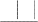
1 1
H
P(h|D)
P(D)
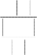
1 1
H
VSH ,D
H
1 当 h 与 D 一致
VSH ,D
其中VSH,D是H中与D一致的假设子集（即VSH,D是相对于D的变型空间，如第 2 章的定义）。
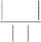
VSH ,D
很容易可验证P(D)=
H
，因为在所有假设上P(h|D)的和必为 1，并且H中与D一致的假
设数量为|VSH,D|。另外，可从全概率公式（见表 6-1）以及所有假设是互斥的条件（即
(i
j)(P(hi hj ) 0) ），推导出P(D)的值：
P(D)
P(D | hi )P(hi )
hi H
hi VSH ,D
hi VSH ,D
1 1
 H
H


1 1
H
hi VSH ,D

0 1
H
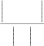
VSH , D
H
概而言之，贝叶斯公式说明在我们的 P(h)和 P(D|h)的定义下，后验概率 P(h|D)为：
1
P(h|D)=
VSH ,D
如果 h 与 D 一致
（6.5）
0 其他情况
其中|VSH,D|是H中与D一致的假设数量。假设的概率演化情况如图 6-1 中所示。初始时（图 6-1a）所有假设具有相同的概率。当训练数据逐步出现后，（图 6-1b和 6-1c），不一致假设的 概率变为 0，而整个概率的和仍为 1，它们均匀地分布到剩余的一致假设中。
上面的分析说明，在我们选定的P(h)和P(D|h)取值下，每个一致的假设后验概率为
（1/|VSH,D|），每个不一致假设后验概率为 0。因此，每个一致的假设都是MAP假设。

原书页码： 162
hypotheses: 假设

图 6-1 后验概率随着训练数据增长的演化
(a)对每个假设赋予均匀的先验概率。当训练数据首先增长到 D1(b)，然后增长到 D1∧D2(c)， 不一致假设的后验概率变成 0，而保留在变型空间中的假设的后验概率增加。
上面的分析说明在给定条件下，与D一致的每个假设都是MAP假设。根据这一结论可直 接得到一类普遍的学习器，称为一致学习器。某学习算法被称为一致学习器，说明它输出的 假设在训练例上有零错误率。由以上的分析可得，如果假定H上有均匀的先验概率（即 P(hi)=P(hj)，对所有的i,j），且训练数据是确定性的和无噪声的（即当D和h一致时，P(D|h)=1）， 否则为 0）时，任意一致学习器将输出一个MAP假设。
例如第 2 章讨论的 Find-S 概念学习算法。Find-S 按照特殊到一般的顺序搜索假设空间 H， 并输出一个极大特殊性的一致假设，可知在上面定义的 P(h)和 P(D|h)概率分布下，它输出 MAP 假设。当然，Find-S 并不直接操作概率，它只简单地输出变型空间的极大特殊性成员。 然而，通过决定 P(h)和 P(D|h)的分布，以使其输出为 MAP 假设，我们有了一种刻画 Find-S 算法的有效途径。
是否还有其他可能的P(h)和P(D|h)分布，使Find-S输出MAP假设？回答是肯定的。因为 Find-S从变型空间中输出极大特殊性(maximally specific)假设，所以对于先验概率偏袒于更特 殊假设的任何概率分布，它输出的假设都将是MAP假设。更精确地讲，假如H是H上任意概 率分布P(h)，它在h1比h2更特殊时赋予P(h1)≥P(h2)。可见，在假定有先验分布H和与上面相 同的P(D|h)分布时，Find-S输出一MAP假设。
概括以上讨论，贝叶斯框架提出了一种刻画学习算法（如 Find-S 算法）行为的方法， 即使该学习算法不进行概率操作。通过确定算法输出最优（如 MAP）假设时使用的概率分 布 P(h)和 P(D|h)，可以刻画出算法具有最优行为时的隐含假定。
使用贝叶斯的途径刻画学习算法，与揭示学习器中的归纳偏置在思想上是相类似的。注 意在第 2 章将学习算法的归纳偏置定义为断言集合 B，通过它可充分地演绎推断出学习器所 执行的归纳推理结果。例如，候选消除算法的归纳偏置为，假定目标概念 c 包含在假定空间 H 中。进一步地，我们还证明学习算法的输出是由其输入以及这一隐含的归纳偏置假定所演 绎得出的。上面的贝叶斯解释对于描述学习算法中的隐含假定提供了另一种方法。这里，不 是用一等效的演绎系统去对归纳推理建模，而是用基于贝叶斯理论的一个等效的概率推理
（probabilistic reasoning）系统。这里应用于学习器的隐含假定形式为：“H 上的先验概率由 P(h)分布给出，而数据拒绝或接受假设的强度由 P(D|h)给出。”本书的 P(h)和 P(D|h)定义刻 画了候选消除和 Find-S 系统中的隐含假定。在已知这些假定的概率分布后，一个基于贝叶 斯理论的概率推理系统将产生等效于这些算法的输入-输出行为。
本节中的讨论是贝叶斯推理的一种特殊形式，因为我们只考虑了 P(D|h)取值只能为 0
或 1 的情况，它反映了假设预测的确定性以及无噪声数据的前提。如后一节所示，还可以通 过允许 P(D|h)取值为 0 和 1 之外的值，以及在 P(D|h)中包含附加的描述以表示噪声数据的分 布情况，来模拟从有噪声训练数据中学习的行为。
如上节所示，贝叶斯分析可用来表明一个特定学习算法会输出 MAP 假设，即使该算法 没有显式地使用贝叶斯规则，或以某种形式计算概率。
本节考虑学习连续值目标函数的问题，这是在许多学习算法中都会遇到的，如神经网络 学习、线性回归、以及多项式曲线拟合。通过简单的贝叶斯分析，可以表明在特定前提下， 任一学习算法如果使输出的假设预测和训练数据之间的误差平方最小化，它将输出一极大似 然假设。这一结论的意义在于，对于许多神经网络和曲线拟合的方法，如果它们试图在训练 数据上使误差平方和最小化，此结论提供了一种贝叶斯的论证方法（在特定前提下）。
设想问题定义如下，学习器L工作在实例空间X和假设空间H上，H中的假设为X上定义 的某种实数值函数（即，H中每个h为一函数：h: X→，其中代表实数集）。L面临的问题 是学习一个从H中抽取出的未知目标函数f：X→。给定m个训练样例的集合，每个样例的 目标值被某随机噪声干扰，此随机噪声服从正态分布。更精确地讲，每个训练样例是序偶〈xi, di〉，其中di=f(xi)+ei。这里f(xi)是目标函数的无噪声值，ei是一代表噪声的随机变量。假定ei的 值是独立抽取的，并且它们的分布服从零均值的正态分布。学习器的任务是在所有假设有相 等的先验概率前提下，输出极大可能假设（即MAP假设），。
虽然我们的分析应用于任意实数值函数学习，然而可以用一个简单的例子来描述这一问 题，即学习线性函数。图 6-2 所示为一线性目标函数f（以实线表示），以及该目标函数的有 噪声训练样例集。虚线对应有最小平方训练误差的假设hML，也即极大似然假设。注意，其 中极大似然假设不一定等于正确假设f，因为它是从有限的带噪声数据中推论得出的。

原书页码： 164

图 6-2 学习一实值函数。
目标函数f对应实线。假定训练样例〈xi, di〉为真实目标值加上一零均值的正态分布噪声ei。虚 线代表使误差平方之和最小的线性函数。因此，它就是这 5 个训练样例下的极大似然假设hML。
这里的误差平方和最小的假设即为极大似然假设，为说明这一点，首先快速地回顾一下 统计理论中的两个基本概念：概率密度和正态分布。首先，为讨论像e这样的连续变量上的 概率，我们引入概率密度（probability density）。简单的解释是，我们需要随机变量所有可能 值的概率和为 1。由于变量是连续的，因此不能为随机变量的无限种可能的值赋予一个有限 概率。这里需要用概率密度来代替，以使e这样的连续变量在所有值上的概率密度的积分为 1。一般地，用小写字母p来代表概率密度函数，以区分有限概率P（它有时又称为概率质量
（probability mass）。概率密度p(x0)是当ε趋近于 0 时，x取值在[x0, x0+ε)区间内的概率与
1/ε乘积的极限。
概率密度函数：
p(x0
) lim 1 P(x
0 0
x x0
)
其次，这里断定随机噪声变量 e 由正态分布生成。正态分布是一平滑的钟形分布，它可 由其均值μ和标准差σ完全刻画。见表 5-4 中的精确定义。
有了以上的两个概念，再来讨论在我们的问题里为什么最小误差平方假设实际上就是极 大似然假设。证明的过程先使用前面的式 6-3 的定义来推导极大可能假设，但使用小写的 p 代表概率密度：
hML arg max P(D | h)
hH
如前所述，假定有一固定的训练实例集合〈x1…xm〉，因此只考虑相应的目标值序列D=
〈d1…dm〉。这里di=f(xi)+ei。假定训练样例是相互独立的，给定h时，可将P(D|h)写成各p(di|h) 的积：
m
hML arg max p(di | h)
hH
i1
如果误差ei服从零均值和未知方差σ2的正态分布，每个di也必须服从正态分布，其方差 为σ2，而且以真实的目标值f(xi)为中心（而不是 0）。因此，p(di)的可被写为方差σ2，均值 μ=f(xi)的正态分布。现使用表 5-4 中的正态分布公式并将相应的μ和σ2代入，写出描述p(di|h) 的正态分布。由于概率di的表达式是在h为目标函数f的正确描述条件下的，所以还要替换μ
=f(xi)=h(xi)。得到。
m 1 ( d )2
hML
arg max
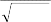
1 e 2 2 i
2
hH
i1
2
m 1 (d h( x ))2
arg max
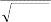
1 e 2 2 i i
2
hH
i1
2
现在使用一个极大似然计算中常用的转换：不是用上面这个复杂的表达式取最大值，而 是使用其对数取最大，这样较容易。原因是 lnp 是 p 的单调函数。因此使 lnp 最大也就使 p 最大：
m
hML arg max ln
1 1
2 2 2
2
(di h(xi ))
hH
i1
2
此表达式中第一项为一独立于 h 的常数，可被忽略，因此得到：
m
hML arg max
1 2
2 (di h(xi ))
hH
i1 2
使一个负的量最大等效于使相应的正的量最小：
m
hML arg min
1 2
2 (di h(xi ))
hH
i1 2
最后，可以再一次忽略掉与 h 无关的常数：
m
2
hML arg min (di h(xi ))
(6.6)
hH
i1
这样，式 6.6 说明了极大似然假设hML为，使训练值di和假设预测值h(xi)之间的误差的平 方和最小的那一个。该结论前提是观察的训练值di由真实目标值加上随机噪声产生，其中随 机噪声是从一零均值的正态分布中独立抽取的。从上面的推导中可明确看出，误差平方项 (di-h(xi))2是从正态分布定义中的指数项中得来。如果假定噪声分布有另外的形式，可进行类 似的推导得到不同的结果。
注意上面的推导包含了选择假设使似然的对数值（lnp(D|h)）为最大，以确定最可能的 假设。如前所述，这导致了与使 p(D|h)这个似然性最大化相同的结果。这一用对数似然性来 计算的方法在许多贝叶斯分析中都用到了，因为它比直接计算似然性需要的数学运算量小很 多。当然，如前所述，极大似然假设也许不是 MAP 假设，但如果所有假设有相等的先验概 率，两者相同。
为什么用正态分布来描述噪声是合理的？一个必须承认的原因是为了数学计算的简洁 性。另一原因是，这一平滑的钟形分布对许多物理系统的噪声都是良好的近似。实际上，第 5 章讨论的中心极限定律显示，足够多的独立同分布随机变量的和服从一正态分布，而不论 独立变量本身的分布是什么。这说明由许多独立同分布的因素的和所生成的噪声将成为正态 分布。当然，在现实中不同的分量对噪声的贡献也许不是同分布的，这样该定理将不能证明 我们的选择。
使误差平方最小化的方法经常被用于神经网络、曲线拟合及其他实函数逼近的许多算法 中。第 4 章讨论了梯度下降方法，它在神经网络中搜索最小误差平方的假设。
在结束这里关于极大似然假设和最小平方误差假设的关系的讨论之前，必须认识到该问 题框架中的某些限制。上面的分析只考虑了训练样例的目标值中的噪声，而没有考虑实例属 性中的噪声。例如，如果学习问题是基于某人的年龄和高度，预测他的重量，那么上面的分 析要求，重量的测量中可以有噪声，而年龄和高度的测量必须是精确的。如果将这些简化假 定去掉，分析过程将十分复杂。
在前一章的问题框架中，我们确定了极大似然假设是使其在训练样例上的误差平方和最 小的假设。本节将推导一个类似的准则，它针对神经网络学习这样的问题：即学习预测概率。
考虑问题的框架为学习一个不确定性（概率的）函数 f：X→{0, 1}，它有两个离散的值 输出。例如，实例空间 X 代表有某些症状的病人，目标函数 f(x)在病人能存活下来时为 1， 否则为 0。或者说，X 代表借货申请者，表示为其过去的信用历史，如果他能成功地归还下 一次借贷，f(x)为 1，否则为 0。这两种情况下都要 f 有不确定性。例如，一群有相同症状的 病人为 92%可以存活，8%不能。这种不可预测性来源于未能观察到的症状特征，或者是疾 病转化中确实存在的不确定性机制。无论问题的来源是什么，结果都是要求目标函数的输出 为输入的概率函数。
有了这样的问题描述，我们希望学习得到的神经网络（或其他实函数逼近器）的输出是 f(x)=1 的概率。换言之，需要找到目标函数 f´=X→[0, 1]，使 f´=P(f(x)=1）。在上面的病人存 活预测的例子中，如果 x 为存活率是 92%的病人之一，那么 f´(x)=0.92，概率函数 f(x)将有 92%的机会等于 1，剩余的 8%的机会等于 0。
如何使用一个神经网络来学习 f´？一个很明显的、蛮力的方法是首先收集对 x 的每个可 能值观察到的 1 和 0 的频率，然后训练神经网络，对每个 x 输出目标频率。下面将见到，我 们可以直接从 f 的训练样例中训练神经网络，而且仍能推导出 f´的极大可能性假设。
在此情况下为寻找极大似然假设，应使用怎样的优化准则？为回答该问题首先需要获得 P(D|h)的表示。这里假定训练数据D的形式为D={〈x1，d1〉⋯〈xm，dm〉}，其中di为观察到 的f(xi)的 0 或 1 值。
回忆前一节中的极大似然及最小误差平方分析，其中简单地假定实例〈x1，⋯xm〉是固 定的。这样就可以只用目标值di来刻画数据。虽然这里也可以作这样的简单假定，但我们这 里可以避免这一假定以说明这对最后的输出没有影响。将xi和di都看作随机变量，并假定每 个训练样例都是独立抽取的，可把P(D|h)写作：
m
P(D | h) P(xi , di | h)
i1
（6.7）
进一步地，可以假定遇到每一特定实例xi的概率独立于假设h。例如，训练数据集中包 含一特定病人xi的概率独立于关于存活率的假设（虽然病人的存活与否di确实强烈依赖于h）。 当x独立于h时，可将上式重写（应用表 6-1 的乘法规则）为：
m m
P(D | h) P(xi , di | h) P(di | h, xi )P(xi ) （6.8）
i1
i1
现在计算在假设h成立的条件下，对一个实例xi观察到di=1 的概率P(di|h, xi）。注意h是对 应目标函数的假设，它正好能计算这一概率。因此，P(di=1|h, xi）=h(xi)，并且一般情况下：
i i
P(di|h, xi)= h(x ) 如果 d =1 （6.9）
为将其代入到式 6.8
(1-h(xi)) 如果 di=0
中求 P(D|h)，首先将其表达为一可数学操作形式。
di
P(di | h, xi ) h(xi )
(1 h(xi ))
1di
（6.10）
容易验证，等式 6.9 和 6.10 是等价的。注意当di=1 时，式 6-10 中第二项 (1 h(xi ))
1di
等于1。因此P(di=1|h, xi）=h(xi)，它与式 6.9 等价。同样可分析di=0 时的情形。 将式 6.10 代换式 6.8 中的P(di|h, xi)得到：
m
P(D | h) h(x )di (1 h(x ))1di P(x ) （6.11）
i i i
i1
现写出极大似然假设的表达式：
hML
arg max
hH
m
i1
di
h(xi )
(1
h(xi ))
1di
P(xi )
最后一项为独立于 h 的常量，可去掉：
m
h arg max h(x )di (1 h(x ))1di
(6.12)
ML
hH
i i
i1
式 6.12 中右边的表达式可看作是表 5-3 中二项分布（Binomial distribution）的一般化形 式。该式描述的概率相当于投掷m个不同硬币，输出得到〈d1…dm〉的概率，其中假定每个 硬币xi产生正面的概率为h(xi)。注意表 5-3 描述的二项分布很简单，但它附加了一个假定， 即所有硬币掷出正面的概率是相同的（即h(xi)=h(xj), i, j）。两种情况下我们都假定硬币投掷 的输出是相互独立的，这一假设也适用于当前的问题。
与前面的情况相同，如果用似然性的对数计算会比较容易，得到：
m
hML arg max di ln h(xi ) (1 di ) ln(1 h(xi )) （6.13）
hH
i1
式 6.13 描述了在我们的问题中必须被最大化的量。此结果可与前面的使误差平方最小
化的分析相类比。注意式 6.13 与熵函数的一般式-Σipilogpi（在第 3 章讨论过）的相似性。 正因为此相似性，以上量的负值有时被称为交叉熵（cross entropy）。
上面讨论了使式 6.13 中的量最大化可得到极大可能假设。现用 G(h, D)代表该量。本节 为神经网络学习推导一个权值训练规则，它使用梯度上升以使 G(h, D)最大化。
如第 4 章中的讨论，G(h, D)的梯度可由G(h, D) 关于不同的网络权值的偏导的向量给出， 它定义了由此学习到的网络表示的假设h（见第 4 章中梯度下降搜索的一般讨论，以及这里 所使用的术语的细节）。在此情况下，对应于权值wjk（从输入k到单元j）的G(h, D)的偏导为：
m
G(h, D) G(h, D) h( x )
wjk
i1
h(xi )
i
wjk
m
(d ln h( x ) (1 d ) ln(1 h( x ))) h( x )
i
i1
i i
h(xi )
i i
wjk
m
di h(xi )
h(xi )
h(x )(1 h(x )) w
（6.14）
i 1 i
i jk
为使分析过程简明，假定神经网络从一个单层的 sigmoid 单元建立。这种情况下有：
h(xi )
jk
(xi )xijk
h(xi )(1 h(xi ))xijk
其中xijk是对第i个样例的到单元 j的第k个输出，而σ´(x)为sigmoid 挤压（squashing）函 数的导数（见第 4 章）。最后，将此表达式代入到等式 6.14，可得到组成梯度的导数的简单 表示：
G(h, D) m
(di
h(xi ))x
ijk
wjk
i1
因为需要使用 P(D|h)最大化而不是最小化，所以我们执行梯度上升搜索而不是梯度下降 搜索。在搜索的每一次迭代中，权值向量按梯度的方向调整，使用权值更新规则：
wjk
wjk wjk
其中：
wjk
m
(di h(xi ))xijk （6.15）
i1
其中η是一小的正常量，表示梯度上升搜索的步进大小。
将这一权值更新规则与反向传播算法（其用途是使预测和观察的网络输出的误差平方和 最小化）中用到的权值更新规则相比较，可以得到有趣的结论。用于输出单元权值的反向传 播更新规则（见第 4 章），使用这里的记号可重新表示为：
wjk
wjk wjk
其中
wjk
m
h(xi )(1 h(xi ))(di h(xi ))xijk
i1
注意它与式 6.15 中的规则相似，只是除了一项h(xi)(1-h(xi))，它是sigmoid函数的导数。
概括一下，这两个权值更新规则在两种不同的问题背景下收敛到极大似然假设。使误差 平方最小化的规则寻找到极大似然假设基于的前提是，训练数据可以由目标函数值加上正态
分布噪声来模拟。使交叉熵最小化的规则寻找极大似然假设基于的前提是，观察到的布尔值 为输入实例的概率函数。
回忆一下第 3 章关于“奥坎坶剃刀”的讨论，这是一个很常用的归纳偏置，它可被概括 为：“为观察到的数据选择最短的解释”。本章我们要讨论在对奥坎坶剃刀的长期争论中的几 个论点。这里对此给出一个贝叶斯的分析，并讨论一紧密相关的准则，称为最小描述长度准 则（Minimum Description Length, MDL）。
提出最小描述长度的目的是为了根据信息论中的基本概念来解释hMAP的定义。再次考虑 已很熟悉的hMAP定义：
hMAP arg max P(D | h)P(h)
hH
可被等价地表示为使以 2 为底的对数最大化：
hMAP arg maxlog2 P(D | h) log2 P(h)
hH
或使此最的负值最小化：
hMAP arg minlog2 P(D | h) log2 P(h)
hH
（6.16）
令人吃惊的是，式 6.16 可被解释为在特定的假设编码表示方案上“优先选择短的假设”。 为解释这一点，先引入信息论中的一个基本结论。设想要为随机传送的消息设计一个编码， 其中遇到消息i的概率是pi。这里最感兴趣的是最简短的编码，即为了传输随机信息的编码所 能得到的最小期望传送位数。显然，为使期望的编码长度最小，必须为可能性较大的消息赋 予较短的编码。Shannon & Weaver（1949）证明最优编码（使得期望消息长度最短的编码） 对消息i的编码长度为-log2pi位。我们将使用代码C来编码消息i所需的位数称为消息i的关于C 的描述长度（description length of message i with respect to C）。标记为LC(i)。
下面将使用以上编码理论的结论来解释等式 6.16：
(
-log2P(h)是在假设空间H的最优编码下h的描述长度。换言之，这是假设h使用其 最优表示时的大小。以这里的记号，LCH h)= -log2P(h)，其中CH为假设空间H的
最优编码。
-log2P(D|h)是在给定假设h时训练数据D的描述长度（在此最优编码下）。以这里
的记号表示，LCD|h
(D|h)= -log2P(D|h)，其中ＣD|h是假定发送者和接送者都知道假
设h时描述数据D的最优编码。
因此可把式 6.16 重写，以显示出hMAP是使假设描述长度和给定假设下数据描述 长度之和最小化的假设h。
h arg min L
(h) L
(D | h)
MAP
CH CD|h
h
其中CH和CD|h分别为H的最优编码和给定h时D的最优编码，最小描述长度
（Minimum Description Length, MDL）准则建议，应选择使这两个描述长度的和 最小化的假设。当然为应用此准则，在实践中必须选择适合于学习任务的特定
编码或表示。假定使用代码C1和C2来表示假设和给定假设下的数据，可将MDL 准则陈述为：
最小描述长度准则：选择hMDL使
1
2
hMDL arg min LC (h) LC
(D | h)
（6.17）
hH
上面的分析显示，如果选择C1为假设的最优编码CH，并且选择C2为最优编码CD|h，那么
hMDL=hMAP。
直觉上，可将 MDL 准则想象为选择最短的方法来重新编码训练数据，其中不仅计算假 设的大小，并且计算给定假设时编码数据的附加开销。
举例说明，假定将MDL准则应用到决策树学习的问题当中。怎样选择假设和数据的表 示C1和C2？对于C1，可以很自然地选择某种明确的决策树编码方法，其中描述长度随着树中 节点和边的增长而增加。如何选择给定一决策树时假设的数据编码C2呢？为使讨论简单化， 假定实例序列〈x1…xm〉是接收者和发送者都知道的，那么可以只传输分类结果〈f(x1)…f(xm)〉。
（注意传送实例的开销独立于正确的假设，因此它不会影响到hMDL的选择。）现在，如果训 练分类〈f(x1)…f(xm)〉与假设的预计相等，那么就没必要传输有关这些样例的任何信息（接 收者可在其收到假设后计算这些值）。因此在此情况下，给定假设的分类情况时的描述长度 为 0。如果某些样例被h误分类，那么对每一误分类需要传送一个消息以确定哪个样例被误 分类了（可用至多log2m位传送），并传送其正确分类值（可用至多log2k位，其中k为可能分 类值的数目）。在编码C1和C2下hMDL这一假设就是使这些描述长度和最小的假设。
因此，MDL 准则提供了一种方法以在假设的复杂性和假设产生错误的数量之间进行折 中，它有可能选择一个产生少量错误较短的假设；而不是能完美地分类训练数据的长的假设。 看到这一点，就有了一种处理数据过度拟合的方法。
Quinlan & Rivest（1989）描述了应用 MDL 准则以选择决策树最佳大小的几个实验。报 告指出基于 MDL 的方法产生的决策树的精度相当于第 3 章中讨论的标准的树修剪方法。 Mehta et al.（1995）描述了另一个基于 MDL 的方法进行决策树修剪，并实验证明该方法得 到的结果与标准树修剪方法相当。
从最小描述长度的原则的分析中可得到什么结论？是否说明所有情况下短假设都最 好？结论是否定的。已经证明的只是，当选定假设表示以使假设h的大小为-log2P(h)，并且 选择例外情况的表示以使给定h下D的编码长度等于-log2P(D|h)时，MDL准则产生MAP假设。 然而为说明以上两者可以如此表示，必须知道所有的先验概率P(h)，以及P(D|h)。没有理由 相信MDL假设对于任意编码C1和C2都是最好的。出于实际的考虑，更容易的办法是由设计 者指定一个表示，以捕获有关假设概率的知识，而不是完整地指定每个假设的概率。学术界 对MDL应用到实际问题的争论，主要为选择C1和C2编码提供某种形式的论证。
迄今我们已讨论了问题“给定训练数据，最可能的假设是什么？”实际上，该问题通常 与另一更有意义的问题紧密相关：“给定训练数据，对新实例的最可能分类是什么？”虽然 可看出第二个问题可简单地由应用 MAP 假设到新实例来得到，实际上还可能更好的算法。
为了更直观些，考虑一包含三个假设h1，h2，h3的假设空间。假定已知训练数据时三个 假设的后验概率分别为 0.4，0.3，0.3。因此，h1为MAP假设。若一新实例x被h1分类为正， 但被h2和h3分类为反。计算所有假设，x为正例的概率为 0.4（即与h1相联系的概率），而为反 例的概率是 0.6。这时最可能的分类（反例 ）与MAP假设生成的分类不同。
一般的说，新实例的最可能分类可通过合并所有假设的预测得到，其权重为它们的后验 概率。如果新的样例的可能的分类可取某集合V中的任一值vj，那么概率P(vj|D)为新实例正 确分类为vj的概率，其值为：
P(v j | D) P(v j | hi )P(hi | D)
hi H
新实例的最优分类为P(vj|D)为最大时的vj值。
贝叶斯最优分类器
arg max P(v j | hi )P(hi | D) （6.18）
v j V
hi H
用上面的例子说明，新实例的可能分类集合为 V={,Θ}，而
P(h1|D)=0.4, | P(Θ|h1)=0, | P(|h1)=1 |
P(h2|D)=0.3, | P(Θ|h2)=1, | P(|h2)=0 |
P(h3|D)=0.3, | P(Θ|h3)=1, | P(|h3)=0 |
因此
P( | hi )P(hi | D) 0.4
hi H
P( | hi )P(hi | D) 0.6
hi H
并且
arg max P(v j | hi )P(hi | D)
v j {,}
hi H
按照式 6.18 分类新实例的系统被为贝叶斯最优分类器（Bayes optimal classifier），或贝 叶斯最优学习器。使用相同的假设空间和相同的先验概率，没有其他方法能比其平均性能更 好。该方法在给定可用数据、假设空间及这些假设的先验概率下使新实例的正确分类的可能 性达到最大。
例如，在布尔概念学习问题中，使用前面章节的变型空间方法，对一新实例的贝叶斯最 优分类是在变型空间的所有成员中进行加权选举获得的，每个候选假设的权重为其后验概 率。
贝叶斯最优分类器的一个极有趣的属性是，它所做的分类可以对应于 H 中不存在的假 设。设想使用式 6.18 来分类 X 中每个实例。按此定义的的实例标注不必对应于 H 中的任一 单个假设 h 的对实例的标注。理解该命题的一种方法是将贝叶斯分类器看成是不同于假设空 间 H 的另一空间 H´，在其上应用贝叶斯公式。确切地讲，H´有效地包含了一组假设，它能 在 H 中多个假设的线性组合所作的预言中进行比较。
虽然贝叶斯最优分类器能从给定训练数据中获得最好的性能，应用此算法的开销可能很 大。原因在于它要计算 H 中每个假设的后验概率，然后合并每个假设的预测，以分类新实 例。
一个替代的、非最优的方法是 Gibbs（见 Opper & Haussler 1991），定义如下： 1．按照 H 上的后验概率分布，从 H 中随机选择假设 h。
2．使用 h 来预言下一实例 x 的分类。
当有一待分类新实例时，Gibbs 算法简单地按照当前的后验概率分布，使用一随机抽取 的假设。令人吃惊的是，可证明在一定条件下 Gibbs 算法的误分类率的期望值最多为贝叶斯 最优分类器的两倍（Haussher et al. 1994）。更精确地讲，期望值是在随机抽取的目标概念上 作出，抽取过程按照学习器假定的先验概率。在此条件下，Gibbs 算法的错误率期望值最差 为贝叶斯分类器的两倍。
该结论对前述的概念学习问题有一有趣的启示。即如果学习器假定 H 上有均匀的先验 概率，而且如果目标概念实际上也按该分布抽取，那么当前变型空间中随机抽取的假设对下 一实例分类的期望误差最多为贝叶斯分类器的两倍。这里又有了一个例子说明贝叶斯分析可 以对一非贝叶斯算法的性能进行评估。
贝叶斯学习方法中实用性很高的一种为朴素贝叶斯学习器，常被称为朴素贝叶斯分类器
（naive Bayes classifier）。在某些领域内其性能可与神经网络和决策树学习相当。本节介绍 朴素贝叶斯分类器，下一节将其应用于实际的问题，即自然语言文本文档的分类问题。
朴素贝叶斯分类器应用的学习任务中，每个实例x可由属性值的合取描述，而目标函数 f(x)从某有限集合V中取值。学习器被提供一系列关于目标函数的训练样例，以及新实例（描 述为属性值的元组）<a1,a2…an>，然后要求预测新实例的目标值（或分类）。
贝叶斯方法的新实例分类目标是在给定描述实例的属性值<a1,a2…an>下，得到最可能的 目标值VMAP。
vMAP arg max P(v j | a1 , a2 ...an )
v j V
可使用贝叶斯公式将此表达式重写为
vMAP arg max
v j V
P(a1 , a2 ...an | v j )P(v j )
P(a1 , a2 ...an )
arg max P(a1 , a2 ...an | v j )P(v j )
v j V
（6.19）
现在要做的是基于训练数据估计式 6.19 中两个数据项的值。估计每个P(vj)很容易，只 要计算每个目标值vj出现在训练数据中的频率就可以。然而，除非有一非常大的训练数据的 集合，否则用这样方法估计不同的 P(a1,a2…an|vj)项不太可行。问题在于这些项的数量等于 可能实例的数量乘以可能目标值的数量。因此为获得合理的估计，实例空间中每个实例必须 出现多次。
朴素贝叶斯分类器基于一个简单的假定：在给定目标值时属性值之间相互条件独立。换 言之，该假定说明给定实例的目标值情况下，观察到联合的a1, a2…an的概率正好是对每个单 独属性的概率乘积：
P(a1 , a2 ...an | v j ) i P(ai | v j )
将其代入 6.19 式中，可得到朴素贝叶斯分类器所使用的方法：
朴素贝叶斯分类器：
vNB arg max P(v j )i P(ai | v j )
v j V
（6.20）
其中vNB表示朴素贝叶斯分类器输出的目标值。注意在朴素贝叶斯分类器中，须从训练 数据中估计的不同P(ai|vj)项的数量只是不同的属性值数量乘以不同目标值数量——这比要 估计P(a1,a2…an|vj)项所需的量小得多。
概括地讲，朴素贝叶斯学习方法需要估计不同的P(vj)和P(ai|vj)项，基于它们在训练数据 上的频率。这些估计对应了待学习的假设。然后该假设使用式 6.20 中的规则来分类新实例。 只要所需的条件独立性能够被满足，朴素贝叶斯分类vNB等于MAP分类。
朴素贝叶斯学习方法和其他已介绍的学习方法之间有一有趣的差别：没有明确的搜索假 设空间的过程（这里，可能假设的空间为可被赋予不同的P(vj)和P(ai|vj)项的可能值。相反， 假设的形成不需要搜索，只是简单地计算训练样例中不同数据组合的出现频率）。
现将朴素贝叶斯分类器应用到前面决策树中讨论过的概念学习问题：按照某人是否要打 网球来划分天气。第 3 章的表 3-2 提供了目标概念 PlayTennis 的 14 个训练样例，其中每一 天由属性 Outlook, Temprature, Humidity 和 Wind 来描述。这里我们使用此表中的数据结合 朴素贝叶斯分类器来分类下面的新实例：
<Outlook=sunny, Temperature=cool, Humidity=high, Wind=strong>
我们的任务是对此新实例预测目标概念PlayTennis 的目标值（yes 或no）。将式 6.20 应
用到当前的任务，目标值vNB 由下式给出：
vNB arg max P(v j )i P(ai | v j )
v j { yes,no}
arg max P(v j )P(Outlook sunny | v j )P(Temperature cool | v j )
v j { yes,no}
P(Humidity high | v j )P(Wind strong | v j )
（6.21）
注意在最后一个表达式中ai已经用新实例的特定属性值实例化了。为计算vNB，现在需要 10 个概率，它们都可以训练数据中估计出。首先不同目标值的概率可以基于这 14 个训练样 例的频率很容易地估计出：
P(PlayTennis=yes)=9/14=0.64 P(PlayTennis=no)=5/14=0.36
相似地，可以估计出条件概率，例如对于 Wind=Strong 有：
P(Wind=strong|PlayTennis=yes)=3/9=0.33
P(Wind=strong|PlayTennis=no)=3/5=0.60
使用这些概率估计以及相似的对剩余属性的估计，可按照式 6.21 计算vNB如下（为简明 起见忽略了属性名）。
P(yes)P(sunny|yes)P(cool|yes)P(high|yes)P(strong|yes)=0.0053
P(no)P(sunny|no)P(cool|no)P(high|no)P(strong|no)=0.0206
这样，基于从训练数据中学习到的概率估计，朴素贝叶斯分类器将此实例赋以目标值 PlayTennis= no 。更进一步，通过将上述的量归一化，可计算给定观察值下目标值为 no 的 条件概率。对于此例，概率为 0.0206/(0.0206+0.0053)=0.795。
6.9.1.1 估计概率
至此，我们通过在全部事件基础上观察某事件出现的比例来估计概率。例如，在上例中， 估计P(Wind=Strong|PlayTennis=no)使用的是比值nc/n，其中n=5，为所有PlayTennis= no 的训 练样例数目，而nc=3 是在其中Wind=Strong 的数目。
显然多数情况下，观察到的比例是对概率的一个良好估计，但当nc很小时估计都较差。 难度在于，设想P(Wind=Strong|PlayTennis= no)的值为 0.08，而样本中只有 5 个样例的 PlayTennis=no。那么对于nc最可能的值只有 0。这产生了两个难题，首先，nc/n产生了一个 有偏的过低估计（underestimate）概率。其次，当此概率估计为 0 时，如果将来的查询包含
Wind=Strong，此概率项会在贝叶斯分类器占有统治地位。原因在于，由式 6.20 计算的量需 要将所有其他的概率项乘以此 0 值。
为避免这些难题，这里采用一种估计概率的贝叶斯方法，使用如下定义的 m-估计：
概率的 m-估计
nc mp n m
（6.22）
这里，nc和n如前面定义，p是将要确定的概率的先验估计，而m是一称为等效样本大小 的常量，它确定了对于观察到的数据如何衡量p的作用。在缺少其他信息时选择p的一种典型 的方法是假定均匀的先验概率，也就是，如果某属性有k个可能值，那么设置p=1/k。例如， 为估计（Wind=Strong|PlayTennis= no），注意到属性Wind有两个可能值，因此均匀的先验概 率为p=0.5。注意如果m为 0，m-估计等效于简单的比例nc/n。如果n和m都非 0，那么观察到 的比例nc/n和先验概率p可按照权重m合并。m被称为等效样本大小的原因是，式 6.22 可被解 释为将n个实际的观察扩大，加上m个按p分布的虚拟样本。
为演示贝叶斯学习方法在实践上的重要性，考虑一个学习问题，其中的实例都为文本文 档。例如，要学习目标概念：“我感兴趣的电子新闻稿”或“讨论机器学习的万维网页”。在 这两种情况下，如果计算机可以精确地学习到目标概念，就可从大量在线文本文档中自动过 滤出最相关的文档显示给读者。
这里描述了一个基于朴素贝叶斯分类器的文本分类的通用算法。有趣的是，这样的概率 方法是目前所知文本文档分类算法中的最有效的一类。这样的系统例子由 Lewis(1991)， Lang(1995)和 Joachims(1996)提出。
将要展示的朴素贝叶斯算法遵循以下的问题背景。考虑实例空间 X 包含了所有的文本 文档（即任意长度的所有可能的单词和标点符号串）。给定某未知目标函数 f(x) 的一组训练 样例，f(x)的取值来自于某有限集合 V。此任务是从训练样例中学习，以预测后续文本文档 的目标值。作为示例，这里考虑的目标函数是，将文档分类为对某人是否感兴趣，使用目标 值 like 和 dislike 代表这两类。
在应用朴素贝叶斯分类器时包含的两个主要设计问题是，首先要决定怎样将任意文档表 示为属性值的形式，第二要决定如何估计朴素贝叶斯分类器所需的概率。
这里表示任意文本文档的途径出奇地简单。给定一文本文档，（这里先考虑英文文档）， 可对每个单词的位置定义一个属性，该属性的值为在此位置上找到的英文单词。该文本文档 如下例所示：
This is an example document for the naive Bayes classifier. This document contains only one paragraph, or two sentences.
这样，上例中的文本被表示为 19 个属性，对应 19 个单词位置。第一个属性的值为“This”， 第二个为“is”，依次类推。注意较长的文档也需要较多的属性数目。我们将看到，这不会 带来任何麻烦。
如果文本文档这样表示，现在就可以应用朴素贝叶斯分类器了。为了明确起见，假定我 们有 700 个训练文档，并且已由人工将其分类为 dislike，而另外 300 个文档被分类为 like。
现在有了一个新文档要分类。仍为明确起见，该文档就是上面的两句英文例子。在此情况下， 可应用式 6.20 计算朴素贝叶斯分类器如：
vNB
arg max
v j {like,dislike}
19
P(v j ) P(ai | v j )
i1
arg max
v j {like,dislike}
P(v j )P(a1 "this"| v j )P(a2 "is"| v j )...P(a19 " sentence"| v j )
概括地讲，朴素贝叶斯分类vNB是使该文档中的单词在此处被观察到的概率最大的一个
19
分类，它遵循通常的朴素贝叶斯独立性假定。独立性假定 P(a1 ,...a19 | v j ) 1
P(ai | v j )
说明在此设定下在一个位置上出现某单词的概率独立于另外一个位置的单词。这一假定在有 些时候并不反映真实情况。例如，在某处观察到单词learning 的概率会因为它前一位置单词 是machine而增大。虽然此独立性假定很不精确，但这里别无选择，必须作此假定——没有 这个假定，要计算的概率项将极为庞大。幸运的是，在实践中朴素贝叶斯学习器在许多文本 分类问题中性能非常好，即使此独立性假定不正确。 Domingos 和Pazzani(1996)对这一幸运 的现象作了一个有趣的分析。
为使用上式计算vNB，需要估计概率项P(vi)和P(ai=wk|vi)。这里引入wk代表英文词典中的 第k个单词。前一项可基于每一类在训练数据中的比例很容易地得到（此例中P(like)=0.3 且 P(dislike)= 0.7）。如以往那样，估计类别的条件概率（如P(a1)=“This”| P(dislike)）要困难的 多，因为必须对每个文本位置、英文单词和目标值的组合计算此概率项。非常不幸，在英文 词汇中包含约 5 万个不同单词，然后本例中有 2 个可能的目标值和 19 个文本位置，所以必 须从训练数据中估计 2×19×50000≈200 万个这样的概率项。
幸运的是，可以再引入一合理的假定以减少需要估计的概率数量。确切地讲，可假定遇 到一特定单词wk的概率独立于单词所在位置。形式化的表述是，在给定目标分类的情况下， 假定各属性是独立同分布的，即对所有的i, j, k, m，P(ai=wk|vj)=P(am=wk|vj)。因此，为估计整 个概率集合P(a1=wk|vj), P(a2=wk|vj)，可通过一个位置无关的概率P(wk|vj)，而不考虑单词的位 置。其效果是，现在只需要 2×50000 个不同的概率项P(wk|vj)。虽然这仍然是一个较大的数 值，但却是可管理的。注意到如果训练数据有限，作此假定的一个主要优点在于，它使可用 于估计每个所需概率的样例数增加了，因此增加了估计的可靠程度。
为完成学习算法的设计，仍需要选择一个方法估计概率项。这里采纳了等式 6.22 中的m 估计，即有统一的先验概率并且m等于词汇表的大小。因此，对P(wk|vj)的估计为：
nk 1
n Vocabulary
其中n为所有目标值为vj的训练样例中单词位置的总数，nk是在n个单词位置中找到wk的 次数，而|Vocabulary|为训练数据中的不同单词（以及其他记号）的总数。
概括地说，最终的算法使用的朴素贝叶斯分类器假定单词出现的概率与它在文本中的位 置无关。最终的算法显示在表 6-2 中。注意该算法非常简单。在学习过程中，过程 Learn-naive-Bayes-text分析所有训练文档，从中抽取出所有出现的单词的记号；然后在不同 目标类中计算其频率以获得必要的概率估计。以后，若给定一个待分类新实例，过程
Classify-naive-Bayes-text 使用此概率估计来按照式 6.20 计算VNB。注意在新文档中出现但不 在训练集的文档中的任何单词将被简单地忽略。该算法的代码以及训练数据集，可在万维网 的http://www.cs.cmu.edu/tom/book.html中找到。
Learn_naive_Bayes_text(Examples, V)
Examples为一组文本文档以及它们的目标值。V为所有可能目标值的集合。此函数作用是学习概率项P(wk|vj)， 它描述了从类别vj中的一个文档中随机抽取的一个单词为英文单词wk的概率。该函数也学习类别的先验概率 P(vj)。
1.收集 Examples 中所有的单词、标点符号以及其他记号
n Vocabulary←在 Examples 中任意文本文档中出现的所有单词及记号的集合
2.计算所需要的概率项P(vj)和 P(wk|vj)
n 对V中每个目标值vj
n docsj←Examples中目标值为vj的文档子集
n P(vj) ←
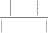
docs j
Examples
n Textj←将docsj中所有成员连接起来建立的单个文档
n n←在Textj中不同单词位置的总数
n 对Vocabulary中每个单词wk
nnk←单词wk出现在Textj中的次数
n P(wk|vj) ←
nk 1
n Vocabulary
Classify_naive_Bayes_text(Doc)
对文档Doc返回其估计的目标值。ai代表在Doc中的第i个位置上出现的单词。
n positions←在 Doc 中包含的能在 Vocabulary 中找到的记号的所有单词位置
n 返回
vNB arg max P(v j )
v j V
P(ai | v j )
ipositions

表 6-2 用于学习和分类文本的朴素贝叶斯算法
除通常的朴素贝叶斯假定外，算法还假定单词出现的概率独立于其在文本中的位置。
表 6-2 的学习算法效率如何？在 Joachims（1996）的一个实验中，此算法（有微小的变 化）被应用于分类新闻组的文章。其中每一文章的分类是该文章所属的新闻组名称。此实验 考虑了 20 个电子新闻组，然后从每个新闻组中搜集 1000 篇文章，形成一个包含 2 万个文档 的数据集。然后应用朴素贝叶斯算法，其中 2/3 作为训练样例，而性能的衡量在剩余 1/3 中 进行。因为有 20 个可能的新闻组，那么随机猜测的分类精确度为 5%。由程序获得的精确 度为 89%。此实验中使用的算法与表 6-2 中的算法只有一点不同：只有文档中出现单词的一 个子集被选为算法中的词汇表，确切地说，100 个最常见的单词被移去（如“the”和“of” 这样的单词），而且任何出现少于 3 次的单词也被移去。得到的词汇表包含大约 38,500 个单 词。
其他应用类似的统计学习算法进行文本分类的实验也获得了同样好的结果。例如，Lang
（1995）描述了朴素贝叶斯算法的另一变种，把它应用到学习目标概念“我感兴趣的新闻组
文章”。他描述了 NewsWeeder 系统——是一个让用户阅读新闻组文章并为其评分的系统。 然后 NewsWeeder 使用这些评分的文章作为训练样例，来预测后续的文章哪些是用户感兴趣 的，再将其送给用户阅读。Lang (1995)报告了他的实验，其中用 NewsWeeder 中学到的用户 兴趣配置文件，每天向用户推荐分值最高的新闻文章。通过向用户展示前 10%的自动评分 文章，它建立的文章序列中用户感兴趣的比率比通常情况下高出 3-4 倍。例如，若一个用户 对通常的文章有 16%感兴趣，其对于 NewsWeeder 推荐的文章有 59%感兴趣。
其他几种非贝叶斯的统计文本学习算法也很常见，其中许多基于信息检索领域
（Information Retrieval）中的最先发明的相似性度量（见 Rocchio 1971；Salton 1991）。另外 的文本学习算法见 Hearst & Hirsh（1996）。

comp.graphics comp.os.ms-windows.misc comp.sys.ibm.pc.hardware comp.sys.mac.hardware
misc.forsale rec.autos rec.motocycles rec.sport.baseball
soc.religion.christian talk.politics.guns talk.politics.mideast talk.politics.misc
sci.space sci.crypt sci.electronics sci.med
comp.windows.x

rec.sport.hockey talk.religion.misc alt.atheism
表 6-3 在文本分类实验中使用的 20 个新闻组
在对每个新闻组用 667 篇文章训练后，朴素贝叶斯分类器在预测后续文章属于哪一个新闻组 时获得了 89%的精度。随机猜测只能得到 5%的精确度。
如前两节所讨论的，朴素贝叶斯分类器假定了属性a1⋯an的值在给定目标值v下是条件 独立的。这一假定显著地减小了目标函数学习的计算复杂度。当此条件成立时，朴素贝叶斯 分类器可得到最优贝叶斯分类。然而在许多情形下，这一条件独立假定明显过于严格了。
贝叶斯置信网描述的是一组变量所遵从的概率分布，它通过一组条件概率来指定一组条 件独立性假定。朴素贝叶斯分类器假定所有变量在给定目标变量值时为条件独立的，与此不 同，贝叶斯置信网中可表述应用到变量的一个子集上的条件独立性假定。因此，贝叶斯置信 网提供了一种中间的方法，它比朴素贝叶斯分类器中条件独立性的全局假定的限制更少，又 比在所有变量中计算条件依赖更可行。贝叶斯置信网是目前研究中一个非常活跃的焦点，而 且有多种方法被提出以学习它和用它进行推理。本节介绍贝叶斯置信网的关键概念和表示。 更详细的讨论见 Pearl(1988) ， Rusell & Norvig(1995) ， Herkerman et al.（ 1995 ）以及 Jensen(1996)。
一般来说，贝叶斯置信网描述了在一组变量上的概率分布。考虑一任意的随机变量集合
Y1⋯Yn，其中每个Yi可取的值集合为V(Yi)。定义变量集合Y的联合空间(joint space)为叉乘V(Y1)
×V(Y2)⋯V(Yn)。换言之，在联合空间中的每一项对应变量元组的一个可能的赋值<Y1…Yn>。 在此联合空间上的概率分布称为联合概率分布(joint probability distribution)。联合概率分布指 定了元组<Y1…Yn>的每个可能的变量约束的概率。贝叶斯置信网则对一组变量描述了联合概 率分布。
首先，为讨论贝叶斯置信网，需要精确定义条件独立性。令 X，Y 和 Z 为 3 个离散值随 机变量。当 X 服从的概率分布独立于给定 Z 值时 Y 的值，称 X 在给定 Z 时条件独立于 Y， 即：
(xi , y j , zk )P( X
xi | Y y j , Z zk ) P( X
xi | Z zk )
其中 xi V ( X ) ， y j V (Y ) ， zk V (Z ) 。通常将上式简写为P(X|Y,Z)=P(X|Z)。这一 关于条件独立性的定义可被扩展到变量集合。当下列条件成立时，称变量集合X1…Xl给定变 量集合Z1…Zn时条件独立于变量集合Y1…Ym：
P( X 1 ...X l | Y1...Ym , Z1 ...Z n ) P( X 1...X l | Z1 ...Z n )
注意此定义与朴素贝叶斯分类器中使用的条件独立性之间的关系。朴素贝叶斯分类器假 定给定目标值V时，实例属性A1条件独立于实例属性A2。这使得朴素贝叶斯分类器可以按照 下式计算 6.20 式中的P(A1,A2|V)：
P(A1,A2|V)=P(A1|A2,V)P(A2|V) (6.23)
=P(A1|V)P(A2|V) (6.24)
式 6.23 只是表 6-1 中概率的乘法规则的一般形式。式 6.24 成立是因为A1在给定V时条件 独立于A2，然后由条件独立性的定义可以得到P(A1|A2,V)=P(A1|V)。

原书页码： 186

图 6-3 一个贝叶斯置信网。
左边的网络表示了一组条件独立性假定。确切地说，每个节点在给定其父结点时，条件独立 于其非后代结点。每个结点关联一个条件概率表，它指定了该变量在给定其父结点时的条件分布。 右边列出了 Campfire 结点的条件概率表，其中 Campfire, Storm 和 BusTourGroup 分别缩写为 C，S， B。
贝叶斯置信网（简写为贝叶斯网）表示一组变量的联合概率分布。例如，图 6-3 中的贝 叶斯网表示了在布尔变量Storm，Lightning，Thunder，ForestFire，Campfire和BusTourGroup 上的联合概率分布。一般地说，贝叶斯网表示联合概率分布的方法是指定一组条件独立性假 定（它表示为一有向无环图），以及一组局部条件概率集合。联合空间中每个变量在贝叶斯 网中表示为一结点。对每一变量需要两种类型的信息。首先，网络弧表示断言“此变量在给
定其立即前驱时条件独立于其非后继”。 当从Y到X存在一条有向的路径，我们称X是Y的后 继。第二，对每个变量有一个条件概率表，它描述了该变量在给定其立即前驱时的概率分布。 对网络变量的元组<Y1…Yn>赋以所希望的值（y1…yn）的联合概率可由下面的公式计算。
n
P( y1 ,...yn ) P( yi | Parents(Yi ))
i1
其中Parents(Yi)表示网络中Yi的立即前驱的集合。注意 P(yi|Parents(yi))的值等于与结点 Yi关联的条件概率表中的值。
为说明这一点，图 6-3 表示了在布尔变量 Storm, Lighting, Thunder, ForestFire, Campfire 以及 BusTourGroup 上的联合概率分布。考虑结点 Campfire。网络结点和孤表示了断言： Campfire 在给定其父结点 Storm 和 BusTourGroup 时条件独立于其非后继 Lighting 和 Thunder 。这意味着一但我们知道了变量 Storm 和 BusTourGroup 的值，变量 Lighting 和 Thunder 不会提供有关 Campfire 的更多的信息。图右边显示了与变量 Campfire 联系的条件 概率表。比如表的最左上一个数据表示了以下的断言：
P(Campfire=True|Storm=True, BusTourGroup=True)=0.4
注意此表只提供了给定其父变量 Storm 和 BusTourGroup 下 Campfire 的条件概率。所有 变量的局部条件概率表以及由网络所描述的一组条件独立假定，描述了该网络的整个联合概 率分布。
贝叶斯置信网的一个吸引人的特性在于，它提供了一种方便的途径以表示因果知识，比
如 Lightin（g
闪电）导致 Thunder（打雷）。以条件独立性的术语，可将其表述为在给定 Lighting
的值情况下，Thunder 条件独立于网络中其他变量。注意此条件独立性假定是由图 6-3 的贝 叶斯网的弧指定的。
可以用贝叶斯网在给定其他变量的观察值时推理出某些目标变量（如 ForestFire）的值。 当然，由于所处理的是随机变量，所以一般不会赋予目标变量一个确切的值。真正需要推理 的是目标变量的概率分布，它指定了在给与其他变量的观察值条件下，目标变量取每一可能 值的概率。在网络中所有其他变量都确切知道了以后，这一推理步骤是很简单的。在更通常 的情况下,我们希望在知道一部分变量的值（比如 Thunder 和 BusTourGroup 为仅有可用的观 察值）时获得某变量的概率分布（如 ForestFire）。一般地，贝叶斯网络可用于在知道某些变 量的值或分布时计算网络中另一部分变量的概率分布。
一般情况下对任意贝叶斯网络的概率的确切推理已经知道是一个 NP 难题（Cooper 1990）。已提出了多种方法在贝叶斯网络中进行不确定性推理，包括确切的推理以及牺牲精 度换取效率的近似推理方法。例如，Monte Carlo 方法提供了一种近似的方法，通过对未观 察到变量进行随机采样（ Pradham Dagum 1996）。理论上，即使是贝叶斯网络中的近似推理 也可是 NP 难题（Dagnm 和 Luby1993）。幸运的是，实践中许多情况下近似的方法被证明
是有效的，对于贝叶斯网络推理方法的讨论由 作出。
Russell & Norvig（1995）和 Jensen（1996）
是否可以设计出有效的算法以从训练数据中学到贝叶斯置信网？这是目前研究中的一 个焦点的问题。对于这一问题有多种可以考虑的框架。首先网络结构可以预先给出，或可由 训练数据中推得。第二，所有的网络变量可以直接从每个训练样例中观察到，或某些变量不 能观察到。
在网络结构的预先已知，并且变量可以从训练样例中完全获得时，通过学习得到条件概 率表就比较简单了。只需要象在朴素贝叶斯分类器中那样估计表中的条件概率项。
若网络结构已知，但只有一部分变量值能在数据中观察到，学习问题就困难得多了。这 一问题在某种程度上类似于在人工神经网络中学习隐藏单元的权值，其中输入和输出结点值 由训练样例给出，但隐藏单元的值未指定。实际上，Russtll et al.（1995）提出了一个简单的 梯度上升过程以学习条件概率表中的项。这一梯度上升过程搜索一个假设空间，它对应于条 件概率表中所有可能的项。在梯度上升中最大化的目标函数是给定假设 h 下观察到训练数据 D 的概率 P(D|h)。按照定义，它对应于对表项搜索极大似然假设。
由Russell et al. (1995)给出的梯度上升规则使用相应于定义条件概率表的参数的lnP(D|h) 的梯度来使P(D|h)最大化。令wijk代表一个条件概率表的一个表项。确切地讲，令wijk为在给 定父结点Ui取值uik时，网络变量Yi值为yij的概率。例如，若wijk为图 6-3 中条件概率表中最右 上方的表项，那么Yi为变量Campfire，Ui是其父结点的元组<Storm, BusTourGroup>，yij=True，
ln P(D | h)
并且uik=<False, False>。对于每个wijk ，lnP(D|h)的梯度由导数
见，每个导数可如下计算：
wijk
给出。如下面可
ln P(D | h)

wijk
dD
P(Yi yij ,Ui uik | d )
wijk
（6.25）
例如，为计算对应于图 6-3 中表左上方的表项的 lnP(D|h)的导数，需要对 D 中每个训练 样例 d 计算 P(Campfire=True, Storm=False, BusTourGroup=False | d)。当这些变量对训练样例 d 无法观察到时，这些所需的概率可以 d 中观察到的变量中用标准的贝叶斯网络推理得到。 实际上这些所需的量可在多数贝叶斯网络推理的过程中计算得到，因此无论何时贝叶斯网络 被用于推理，并且后来获得了新的证据，学习过程几乎不需要附加的花销，。
下面根据Russell et al.（1995）推导式 6.25。本节的后面在第一次阅读时可以被跳过， 而不会丧失连续性，为使记号简单化，下面的推导将用Ph(D)来简写P(D|h)。因此，我们的问
P (D)
题是获得导数集合 h （对所有的i, j, k）的梯度，假定在数据集D中的各样例d都是独
wijk
立抽取的。可将此导数写为
h
ln Ph (D) ln P (d )
wijk
wijk
dD
ln Ph (d )
dD
wijk
1 Ph (d )
dD Ph (d )
wijk
最后一步使用了等式 ln f ( x) 1 f ( x) 。现在可以引入变量Yi 和Ui=Parents(Yi)的值，
x f (x) x
方法是通过在其可能的值yij´和uik´上计算加和。
h
ln Ph (D) 1 P (d |
yij ' ,
uik ' )
Ph (
yij ' ,
uik ' )
wijk
dD Ph (d ) wijk
j ',k '
h
1 P (d | y
ij '
, uik '
)Ph ( y
ij '
| uik '
)Ph (u
ik ' )
dD Ph (d ) wijk
j ',k '
最后一步来自于概率的乘法公式，见表 6-1。现在考虑上面最后一式最右边的加和项。 给定了wijk ≡Ph(yij|uik)，在此加和中惟一 不等于 0 的项是其中j´=j和i´=i的项，因此：
wijk
ln Ph (D)
1 P (d | y ,u
)P ( y
| u )P (u )
w P (d ) w h
ij ik
h ij
ik h ik
ijk
dD h
ijk
1 P (d | y ,u )w
P (u )
P (d ) w h
ij ik
ijk h ik
dD h
ijk
h
1 P (d | y ,u
)P (u )
dD
Ph (d )
ij ik
h ik
应用贝叶斯公式来重写Ph(d|yij,uik)可得
ln Ph (D)
1 Ph ( yij ,uik | d )Ph (d )Ph (uik )
w P (d )
P ( y ,u )
ijk
dD h
h ij ik
P ( y ,u
| d )P (u )
h ij ik h ik
dD
Ph ( yij ,uik )
P ( y ,u
| d )
h ij ik
dD
Ph ( yij | uik )
P ( y ,u
| d )
h ij ik
（6.26）
dD
wijk
这样我们已导出了式 6.25 中的梯度。在描述梯度上升训练前还要考虑一个问题。确切 地说，我们要求当权值wijk更新时，它们必须保持在区间[0，1]之间，这样才是有效的概率。
我们还要求Σjwijk对所有的i,k保持为 1。这些限制可由一个两步骤的权值更新来满足。首先 用梯度上升来更新每个wijk：
P ( y , u
| d )
wijk
wijk
h ij ik
w
dD
ijk
其中η是一小的常量，称为学习率。其次，再将权值wijk归一化，以保证上面的限制得 到满足。如Russell所描述的那样，这一过程将收敛到贝叶斯网络中的条件概率的一个局部的 极大似然假设。
如在其他基于梯度的方法中那样，该算法只保证寻找到局部最优解。替代梯度上升的一 个算法是 EM 算法，它在 6.12 节中讨论，它也只找局部极大可能性的解。
当网络结构预先未知时，学习贝叶斯网络也很困难。 Cooper & Herskovits（1992） 提 出了一个贝叶斯评分度量（Bayesian scoring metric）以从不同网络中进行选择。他们还提出 一个称为 K2 的启发式搜索算法用于在数据完全可观察到时学习网络结构。如多数学习网络 结构的算法，K2 执行的是一个贪婪搜索，以在网络的复杂性和它在训练数据上的精度之间 作出折中。在一个实验中，K2 被给与 3000 个训练样例，这些样例是从包含了 37 个节点和
46 条弧的手工创建的贝叶斯网络中随机抽取的。这一网络描述了在一医院的手术室中潜在
的细菌问题。除了数据以外，程序还被给与 37 个变量的初始排序，它与实际网络中变量之 间的偏序关系一致。该程序成功地创建出了与正确网络结构几乎一样的贝叶斯网，除了一个 不正确地被删除的和一不正确地被加入的弧。
基于约束的学习贝叶斯网络结构的途径也已被开发出来（例如，Spirtes et al. 1993）。这 些途径从数据中推论出不相关和相关的关系，然后用这些关系来构造贝叶斯网。关于当前学 习贝叶斯网的途径的调研由 Heckerman（1995）和 Buntine（1994）给出。
在许多实际的学习问题框架中，相关实例特征中只有一部分可观察到。例如，在训练或 使用图 6-3 中的贝叶斯置信网时，可能网络变量 Storm, Lighting, Thunder, ForestFire, Campfire 和 BusTourGroup 中只有其一个子集能在数据中观察到。已有许多方法被提出用来处理存在 未观察到变量时的问题。如在第 3 章看到的，若某些变量有时能观察到，有时不能，那么可 以用观察到的实例去预测未观察到的。在本节中描述 EM 算法（ Dempster et al. 1977），这 是存在隐含变量时广泛使用的一种学习方法。EM 算法可用于变量的值从来没有被直接观察 到的情形，只要这些变量所遵循的概率分布的一般形式已知。EM 算法已被用于训练贝叶斯 置信网（见 Heckerman 1995）以及 8.4 节讨论的径向基函数（radial basis function）网络。 EM 算法还是许多非监督聚类算法的基础（如 Cheeseman et al. 1988），而且它是用于学习部 分可观察马尔可夫模型（Partially Observable Markov Model）的广泛使用的 Baum-Welch 前 向后向算法的基础（Rabiner 1989）。
6.12.1 估计 k 个 高斯分布的均值
介绍EM算法最方便的方法是通过一个例子。考虑数据D是一实例集合，它由k个不同正 态分布的混合所得分布所生成。该问题框架在图 6-4 中示出，其中k=2 而且实例为沿着x轴显 示的点。每个实例使用一个两步骤过程形成。首先了随机选择k个正态分布其中之一。其次 随机变量xi按照此选择的分布生成。这一过程不断重复，生成一组数据点如图所示。为使讨 论简单化，我们考虑一个简单情形，即单个正态分布的选择基于统一的概率进行选择，并且 k个正态分布有相同的方差σ2，且σ2已知。学习任务是输出一个假设h=<μ1…μk>，它描述 了k个分布中每一个分布的均值。我们希望对这些均值找到一个极大似然假设，即一个使 P(D|h)最大化的假设h。

原书页码： 192

图 6-4 由两个具有相等方差σ2的正态分布的混合生成的实例集。
实例为沿着 x 轴显示的点集。如果正态分布的均值未知，EM 算法可用于搜索其极大似然估计。
注意到，当给定从一个正态分布中抽取的数据实例x1, x2, …, xm时，很容易计算该分布的 均值的极大似然假设。这一寻找单个分布均值的问题只是在 6.4 节的式 6.6 中讨论的问题的 一个特例，在其中我们证明了极大似然假设是使m个训练实例上的误差平方和最小化的假 设。使用当前的记号重新表述一下式 6.6，可以得到：
m
2
ML arg min (xi )
（6.27）
i1
在此情况下，误差平方和是由样本均值最小化的：
1 m
ML xi m i1
（6.28）
然而，在这里我们的问题涉及到k个不同正态分布的混合，而且我们不能知道哪个实例 是哪个分布产生的。因此这是一个涉及隐藏变量的典型例子。在图 6-4 的例子中，可把每个 实例的完整描述看作是三元组<xi, zi1, zi2>，其中xi是第i个实例的观测值，zi1和zi2表示两个正 态分布中哪个被用于产生值xi。确切地讲，zij在xi由第j个正态分布产生时值为 1，否则为 0。 这里xi是实例的描述中已观察到的变量，zi1和zi2是隐藏变量。如果zi1和zi2的值可知，就可以 用式 6.27 来解决均值μ1和μ2。因为它们未知，因此我们只能用EM算法。
EM算法应用于我们的k均值问题，目的是搜索一个极大似然假设，方法是根据当前假设
<μ1…μk>不断地再估计隐藏变量zij的期望值。然后用这些隐藏变量的期望值重新计算极大 似然假设。这里首先描述这一实例化的EM算法，以后将给出EM算法的一般形式。
为了估计图 6-4 中的两个均值，EM算法首先将假设初始化为h=<μ1, μ2>，其中μ1和 μ2为任意的初始值。然后重复以下的两个步骤以重估计h，直到该过程收敛到一个稳定的h
值。
步骤 1：计算每个隐藏变量zij的期望值E[zij]，假定当前假设h=<μ1, μ2>成立。
步骤 2：计算一个新的极大似然假设h´=<μ1´, μ2´>，假定由每个隐藏变量zij所取的值 为第 1 步中得到的期望值E[zij]，然后将假设h=<μ1, μ2>替换为新的假设h´=<μ1´, μ2´>， 然后循环。
现在考察第一步是如何实现的。步骤 1 要计算每个zij 的期望值。此E[zij]正是实例xi由第
j个正态分布生成的概率：
ij 2
E[z ] p(x xi | j )
n 1 p(x xi | n )
1 ( x ) 2
e 2 2
2
i
1
j
( xi n ) 2
n 1 e
2 2
因此第一步可由将当前值<μ1, μ2>和已知的xi代入到上式中实现。
在第二步，使用第 1 步中得到的E[zij] 来导出一新的极大似然假设h´=<μ1´, μ2´>。如 后面将讨论到的，这时的极大似然假设为：
m
m
j
i 1 E[zij ]xi
i 1 E[zij ]
注意此表达式类似于式 6.28 中的样本均值，它用于从单个正态分布中估计μ。新的表 达式只是对μj的加权样本均值，每个实例的权重为其由第j个正态分布产生的期望值。
上面估计k个正态分布均值的算法描述了EM方法的要点：即当前的假设用于估计未知变 量，而这些变量的期望值再被用于改进假设。可以证明，在此算法第一次循环中，EM算法 能使似然性P(D|h)增加，除非它已达到局部的最大。因此该算法收敛到对于<μ1, μ2>的一 个局部极大可能性假设。
上面的EM算法针对的是估计混合正态分布均值的问题。更一般地，EM算法可用于许多 问题框架，其中需要估计一组描述基准概率分布的参数θ，只给定了由此分布产生的全部数 据中能观察到的一部分。在上面的二均值问题中，感兴趣的参数为θ=<μ1, μ2>，而全部 数据为三元组<xi, zi1, zi2>，而只有xi可观察到，一般地令X=<x1, …, xm>代表在同样的实例中 未观察到的数据，并令Y=X∪Z代表全体数据。注意到未观察到的Z可被看作一随机变量，它 的概率分布依赖于未知参数θ和已知数据X。类似地，Y是一随机变量，因为它是由随机变 量Z来定义的。在本节的后续部分，将描述EM算法的一般形式。使用h来代表参数θ的假设 值，而h´代表在EM算法的每次迭代中修改的假设。
EM 算法通过搜寻使 E[lnP(Y|h´)]最大的 h´来寻找极大似然假设 h´。此期望值是在 Y 所 遵循的概率分布上计算，此分布由未知参数θ确定。考虑此表达式究竟意味了什么。首先 P(Y|h´)是给定假设 h´下全部数据 Y 的似然性。其合理性在于我们要寻找一个 h´使该量的某 函数值最大化。其次使该量的对数 lnP(Y|h´)最大化也使 P(Y|h´)最大化，如已经介绍过的那样。 第三，引入期望值 E[lnP(Y|h´)]是因为全部数据 Y 本身也是一随机变量。已知全部数据 Y 是 观察到的 X 和未观察到的 Z 的合并，我们必须在未观察到的 Z 的可能值上取平均，并以相 应的概率为权值。换言之，要在随机变量 Y 遵循的概率分布上取期望值 E[lnP(Y|h´)]。该分 布由完全已知的 X 值加上 Z 服从的分布来确定。
Y 遵从的概率分布是什么？一般来说不能知道此分布，因为它是由待估计的θ参数确定 的。然而，EM 算法使用其当前的假设 h 代替实际参数θ，以估计 Y 的分布。现定义一函数 Q(h´|h)，它将 E[lnP(Y|h´)]作为 h´的一个函数给出，在θ=h 和全部数据 Y 的观察到的部分 X 的假定之下。
Q(h'| h) E[ln p(Y | h') | h, X ]
将 Q 函数写成 Q(h´|h)是为了表示其定义是在当前假设 h 等于θ的假定下。在 EM 算法 的一般形式里，它重复以下两个步骤直至收敛。
步骤 1：估计（E）步骤：使用当前假设 h 和观察到的数据 X 来估计 Y 上的概率分布以 计算 Q(h´|h)。
Q(h'| h) E[ln P(Y | h') | h, X ]
步骤 2：最大化（M）步骤：将假设 h 替换为使 Q 函数最大化的假设 h´：
h argmax Q(h'| h)
h'
当函数 Q 连续时，EM 算法收敛到似然函数 P(Y|h´)的一个不动点。若此似然函数有单 个的最大值时，EM 算法可以收敛到这个对 h´的全局的极大似然估计。否则，它只保证收敛 到一个局部最大值。因此，EM 与其他最优化方法有同样的局限性，如第 4 章讨论的梯度下 降，线性搜索和变形梯度等。
为说明一般的EM算法，我们用它来推导 6.12.1 节中估计k个正态分布混合均值的算法。 如上所讨论，k-均值算法是为了估计k个正态分布的均值θ=<μ1, …, μk>。已有的数据为观 察到的X={<xi>}，这里的隐藏变量Z={<zi1, …, zik>}表示k个正态分布中哪一个用于生成xi。
要应用EM算法，必须推导出可用于k-均值问题的表达式Q(h´|h)。首先推导出lnp(Y|h´) 的表达式。注意对每个实例yi=<xi, zi1, …, zik>的概率p(yi|h´)可被写作：
p( yi
| h') p(xi , zi1
,..., zik
| h')
1
2 2
1
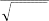
e 2 2
k
j 1
zij ( xi ' j ) 2
要验证此式，必须注意只有一个zij值为 1，其他的为 0。因此，该式给出了由所选的正
态分布生成的xi的概率分布。已知了单个实例的分布p(yi|h´)，对所有m个实例的概率的对数
lnP(Y|h´)为：
m
ln P(Y | h') ln p( yi | h')
i 1
m
ln p( yi | h')
i 1
m ⎛ 1 1 k ⎞
⎜
2
⎜ln
i 1 ⎝
2 2
2 2
⎟
zij (xi ' j ) ⎟
j 1 ⎠
最后，必须在Y所遵从的概率分布，也就是Y的未观察到部分zij遵从的概率分布上，计算 此lnP(Y|h´)的均值。注意上面lnP(Y|h´)的表达式为这些zij的线性函数。一般的，对Z的任意线 性函数f(z)来说，下面的等式成立：
E[f(z)]=f(E[z])
根据此等式，可得：
⎡ m ⎛ 1 1 k ⎞⎤
⎜
2 ⎟
E[ln P(Y | h')] E
⎢⎜ln
⎢⎣ i1 ⎝
2 2
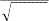
2
2
j1
zij
(xi
' j
) ⎟⎥
⎠⎥⎦
m ⎛ 1 1 k ⎞
⎜
2
⎜ln
i 1 ⎝
2 2
2 2
⎟
E[zij ](xi ' j ) ⎟
j 1 ⎠
概括地说，k-均值问题中函数 Q(h´|h)为
m ⎛ 1 1 k ⎞
⎜
2
Q(h'| h) ⎜ln
i 1 ⎝
2 2

2 2
⎟
E[zij ](xi ' j ) ⎟
j 1 ⎠
其中h´=<μ1´, …, μk´>，而E[zij]基于当前假设h和观察到的数据X计算得出。如前所讨
论：
1 ( x ) 2
2 2 i j
E[zij ]
e
1
(6.29)
k
n 1 e
( xi n ) 2
2 2
因此，EM算法的第 1 步（估计步）基于估计的E[zij]项定义了Q函数。第 2 步（最大化 步）接着寻找使此Q函数最大的值μ1´, …, μk´。在当前例子中：
⎜
m ⎛
argmax Q(h'| h) argmax⎜ln
1 1
2
2
k ⎞
⎟
2 E[zij ](xi ' j ) ⎟
h' h'
i 1 ⎝
2
2 j 1 ⎠
m k
2
arg min E[zij ](xi ' j )
（6.30）
h' i1
j1
因此，这里的极大似然假设使平方误差的加权和最小化了，其中每个实例xi对误差的贡 献μj´权重为E[zij]。由等式 6.30 给出的量是通过将每个μj´设为加权样本均值来最小化。
m
m
j
i 1 E[zij ]xi
i 1 E[zij ]
（6.31）
式 6.29 和式 6.31 定义了 6.12.1 节中定义的 k-均值算法中的两个步骤。
本章的要点包括：
n 概率学习方法利用（并且要求）关于不同假设的先验概率以及在给定假设时观察到 不同数据的概率的知识。贝叶斯方法则提供了概率学习方法的基础。贝叶斯方法还 可基于这些先验和数据观察假定，赋予每个候选假设一个后验概率。
n 贝叶斯方法可用于确定在给定数据时最可能的假设——极大后验概率（MAP）假 设。它比其他的假设更可能成为最优假设。
n 贝叶斯最优分类器将所有假设的预测结合起来，并以其后验概率为权重，以计算对 新实例的最可能分类。
n 朴素贝叶斯分类器是在许多实际应用问题中很有用的一种贝叶斯学习方法。它被称 为朴素的（naive）是因为其作的简化假定：属性值在给定实例的分类时条件独立。 当该假定成立时，朴素贝叶斯分类器可输出 MAP 分类。即使此假定不成立，在学 习分类文本的情况下，朴素贝叶斯分类通常也是很有效的。贝叶斯置信网对于属性 的子集上的一组条件独立性假定提供了更强的表达能力。
n 贝叶斯推理框架可对其他不直接应用贝叶斯公式的学习方法的分析提供理论基础。 例如，在特定条件下学习一个对应于极大似然假设的实值目标函数时，它可使误差 平方最小化。
n 最小描述长度准则建议选取这样的假设，它使假设的描述长度和给定假设下数据的 描述长度的和最小化。贝叶斯公式和信息论中的基本结论可提供此准则的根据。
n 在许多实际的学习问题中，某些相关的实例变量是不可观察到的。EM 算法提供了 一个很通用的方法，当存在隐藏变量时进行学习。该算法开始于一个任意的初始假 设。然后迭代地计算隐藏变量的期望值（假定当前假设是正确的），再重新计算极 大似然假设（假定隐藏变量等于第 1 步中得到的期望值）。这一过程收敛到一个局 部的极大似然假设，以及隐藏变量的估计值。
在概率和统计方面有许多很好的介绍性文章，如 Casella & Berger(1990)。几本快速参考
类书籍（如 Maisel 1971; Speigel 1991)也对机器学习相关的概率和统计理论提供了优秀的阐 述。
对贝叶斯分类器和最小平方误差分类器的基本介绍由 Duda & Hart(1973)给出，Domigos
& Pazzani（1996）分析了在怎样的条件下朴素贝叶斯方法可输出最优的分类，即使其独立 性假定不成立时（关键在于在怎样的条件下即使相关联的后验概率估计不正确也可输出最优 分类）。
Cestnik(1990)讨论了使用 m-估计来估计概率。
将不同贝叶斯方法与决策树等其他算法进行比较的实验结果可在 Michie et al.（1994） 中找到。Chauvin & Rumelhart(1995)提供了基于反向传播算法的神经网络的贝叶斯分析。
对最小描述长度准则的讨论可参考 Rissanen(1983, 1989)。Quinlan & Rivest（1989）描 述了其使用以避免决策树的过度拟合。
习题
6.1 再次考虑 6.2.1 节中应用贝叶斯规则的例子。假定医生决定对该病人做第二次化验测 试，而且化验结果也为正。根据这两次测试，cancer 和cancer 的后验概率是多少？假定两 个测试是相互独立的。
6.2 在 6.2.1 节的例子中，为计算癌症的后验概率，通过将 P(+|cancer)·P(cancer)和 P(+|cancer)·P(cancer)归一化使它们的和为 1。使用贝叶斯公式和全概率公式（见表 6-1） 证明该方法是正确的（即这样的归一化可以得到 P(cancer|+)的正确值）。
6.3 考虑下面的概率学习算法 FindG，它输出一个极大一般化的一致假设（例如，变型 空间的某个极大一般成员）。
(a)给出 P(h)和 P(D|h)的分布，以使 FindG 保证输出 MAP 假设。 (b)给出 P(h)和 P(D|h)的分布，以使 FindG 不能保证输出 MAP 假设。
(c)给出 P(h)和 P(D|h)的分布，以使 FindG 保证输出 ML 假设但不是 MAP 假设。
6.4 在 6.3 节中的概念学习分析中，假定了实例序列<x1…xm>是固定的。因此，在推导 P(D|h)表达式时只需考虑考察到目标值序列<d1…dm>的概率。考虑更一般的情况，即实例顺 序不固定，但是它们是从实例空间X上定义的某概率分布上独立抽取的。数据D现在必须被 描述为一组序偶{<xi, di>}，而P(D|h)必须能反映遇到特定实例xi的概率，以及目标值di的概率。 证明在此一般框架中式 6.5 仍然成立。提示：参考 6.5 节中的分析。
6.5 考虑将最小描述长度准则应用到一个假设空间H，它包含至多n个布尔属性的合取
（如：Sunny∧Warm）。假定每个假设的编码为简单地将假设中出现的属性列举出来，其中 为了编码任意一个n布尔属性所需位数为log2n。设想给定假设下样例编码方式为：若样例与 假设一致编码需 0 位，否则用log2m位（表示m个样例中哪些被误分类了——正确的分类可 由该假设预测的值的否定得到）。
(a)写出要被最小化的量的表达式，按照最小描述长度准则。 (b)是否可能建立一组训练数据，使存在一个一致假设，但 MDL 选择了一个较不一致的
假设。如果是这样，给出这样的训练集；否则解释为什么。
(c)给出 P(h)和 P(D|h)的概率分布以使上面的 MDL 算法输出 MAP 假设。
6.6 考虑节 6.9.1 中 PlayTennis 问题的朴素贝叶斯分类器，用贝叶斯置信网画出其中使用 的条件独立性假定。给出与结点 Wind 相关联的条件概率表。
第7章 计算学习理论
本章理论地刻画了若干类型的机器学习问题中的困难，和若干类型的机器学习算法的能 力。该理论致力于回答如下的问题：“在什么样的条件下成功的学习是可能的？”以及“在 什么条件下一特定的学习算法可保证成功运行？”为了分析学习算法，这里考虑了两种框架。 在可能近似正确（PAC）框架下，我们确定了若干假设类别，判断它们能否从多项式数量的 训练样例中学习得到；我们还定义了一个对假设空间的自然度量，由它可以界定归纳学习所 需的训练样例数目。在出错界限（Mistake bound）框架下，我们考查了一个学习器在确定正 确假设前可能产生的训练错误数量。
在研究机器学习过程中，很自然地想知道学习器（机器的或非机器的）应遵循什么样的 规则。是否可能独立于学习算法确定学习问题中固有的难度？能否知道为保证成功的学习有 多少训练是必要的或充足的？如果学习器被允许向施教者提出查询，而不是观察训练集的随 机样本，会对所需样例数目有怎样的影响？能否刻画出学习器在学到目标函数前会有多少次 出错？能否刻画出一类学习问题中固有的计算复杂度？
虽然对所有这些问题的一般回答还未知，但是不完整的学习计算理论已经开始出现。本 章阐述了该理论中的一些关键结论，并提供了在特定问题下一些问题的答案。这里我们着重 讨论只给定目标函数的训练样例和候选假设空间的条件下，对该未知的目标函数的归纳学习 问题。在这样的框架下，主要要解决的问题如：需要多少训练样例才足以成功地学习到目标 函数，以及学习器在达到目标前会有多少次出错。如后面将看到，有可能对这些问题提出定 量的上下界，这基于学习问题的如下属性。
学习器所考虑的假设空间的大小和复杂度
目标概念须近似到怎样的精度
学习器输出成功的假设的可能性
训练样例提供给学习器的方式
本章的大部分将不会着重于单独的学习算法，而是在较宽广的学习算法类别中刻画所考 虑的假设空间，以及训练样例的提供方式等。我们的目标是为了回答以下的问题：
样本复杂度（Sample complexity）。学习器要收敛到成功假设（以较高的概率）， 需要多少训练样例？
计算复杂度(Computational complexity)。学习器要收敛到成功假设（以较高的概 率）需要多大的计算量？
出错界限（Mistake bound）。在成功收敛到一个假设前，学习器对训练样例的 误分类有多少次？
注意为了解决这些问题需要许多特殊的条件设定。例如，有许多方法来指定对于学习器 什么是“成功的”。一种可能的判断方法是：学习器是否输出等于目标概念的假设。另一种 方法是只要求输出的假设与目标概念在多数时间内意见一致，或是学习器通常会输出这样的
假设。相似地，还必须指定学习器是如何获得训练样例的。可以指定训练样例由一个施教者 给出，或由学习器自己实验来获得，或按照某过程随机地生成而不受学习器的控制。可以预 料，对上述问题的回答依赖于我们所考虑的特定框架或学习模型。
本章的后续如下安排。7.2 节介绍可能近似正确（PAC）学习框架。7.3 节在此 PAC 框 架下分析了几种学习算法的样本复杂度和计算复杂度。7.4 节介绍了假设空间复杂度的一个 重要度量标准，称为 VC-维，并且将 PAC 分析扩展到假设空间无限的情况。7.5 节介绍了出 错界限模型，并提供了前面章节中几个学习算法出错数量的界限。最后，介绍了加权多数算 法，它是一个结合多个学习算法来产生合并的预测的实用算法，还介绍了该算法的理论出错 界限。
本节我们考虑学习问题的一种特殊框架，称为可能近似正确 (probably approximately correct, PAC)学习模型。首先我们指定 PAC 学习模型适用的问题，然后分析在此 PAC 模型 下学习不同类别的目标函数需要多少训练样例和多大的计算量。为简明起见，这里的讨论将 限制在学习布尔值概念，且训练数据是无噪声的。然而，许多结论可扩展到更一般的情形， 如学习实值目标函数（比如 Natarajan 1991 ），或从某种类型的有噪声数据中进行学习（例 如，见 Laird 1988; Kearns & Vazirani 1994）。
如前面的章节，令 X 代表所有实例的集合，目标函数在其上定义。例如，X 可表示所有 人的集合，每个人描述为属性 age（young 或 old）和 height (short 或 long)。令 C 代表学习 器要学习的目标概念集合。C 中每个目标概念 c 对应于 X 的某个子集，或一个等效的布尔函 数 c：X→{0,1}。例如，C 中一个目标函数 c 为概念：“是滑雪者的人”。若 x 是 c 的正例， 则 c(x)=1；若 x 为反例，则 c(x)=0。
假定实例按照某概率分布 D 从 X 中随机产生。例如 D 可为从某体育用品商店走出来的 人这样一个实例分布。一般地，D 可为任何分布，而且它对学习器是未知的。对于 D 所要求 的是它的稳定性，即该分布不会随时间变化。训练样例的生成按照 D 分布随机抽取实例 x， 然后 x 及其目标值 c(x)被提供给学习器。
学习器 L 在学习目标概念时考虑可能假设的集合 H。例如，H 可为所有能由属性 age 和 height 的合取表示的假设集合。在观察到了一系列关于目标概念 c 的的训练样例后，L 必须 从 H 中输出某假设 h，它是对 c 的估计。为公平起见，我们通过 h 在从 X 中抽取的新实例上 的性能来评估 L 是否成功。抽取过程按照分布 D，即与产生训练数据相同的概率分布。
在此框架下，我们感兴趣的是刻画不同学习器 L 的性能，这些学习器使用不同假设空 间 H，并学习不同类别的 C 中的目标概念。由于我们要求 L 足够一般，以从 C 中学到任何 目标概念，所以不论训练样例的分布如何，我们经常会对 C 中所有可能的目标概念和所有 可能的实例分布 D 进行最差情况的分析。
为了描述学习器输出的假设 h 对真实目标概念的逼近程度，首先要定义假设 h 对应于目 标概念 c 和实例分布 D 的真实错误率（true error）。非形式的描述是：h 的真实错误率为应用
h 到将来按分布 D 抽取的实例时的期望的错误率。实际上第 5 章已经定义了 h 的真实错误率。
为方便起见，这里重述一下该定义，使用 c 表示布尔目标函数。
定义： 假设 h 关于目标概念 c 和分布 D 的真实错误率(true error)为 h 误分类按照 D 随 机抽取的实例的概率。
errorD
(h) Pr[c(x) h(x)]
xD
这里符号 Pr 代表在实例分布 D 上计算概率。
xD
图 7-1 图示了该错误率的定义。概念 c 和 h 被表示为 X 中标为正例的实例集合。h 对应 于 c 的错误率为，随机选取的实例落入 h 和 c 不一致区间（即它们的集合差）的概率。注意， 错误率定义在整个实例分布之上，而不只是训练样例之上，因为它是在实际应用此假设 h 到后续实例上时会遇到的真实错误率。

插图——原书页码： 205
Instance space: 实例空间
Where c and h disagree: c 和 h 不一致的区间

图 7-1 关于目标概念 c 假设 h 的错误率
关于 c 的 h 的错误率为一个随机抽取的实例落入 h 和 c 对它的分类不一致的区间的概率。+和
-点表示正反训练例。注意 h 关于 c 有一个非零的错误率，尽管迄今为止 h 和 c 在所有 5 个训练样 例上都一致。
注意，此错误率强烈地依赖于未知的概率分布 D。例如，如果 D 是一个均匀的概率分布， 它对 X 中每个实例都赋予相同的概率，那么图 7-1 中假设的错误率将为 h 和 c 不一致的空间 在全部实例空间中的比例。然而，如果 D 恰好把 h 和 c 不一致区间中的实例赋予了很高的概 率，相同的 h 和 c 将造成更高的错误率。极端情况下若 D 对满足 h(x)=c(x)的所有实例赋予零 概率，图 7-1 中 h 的错误率将为 1，而不论 h 和 c 在多少实例上分类一致。
最后，注意h对应于c的错误率不能直接由学习器观察到。L只能观察到在训练样例上h 的性能，它也只能在此基础上选择其假设输出。我们将使用术语训练错误率(training error) 来指代训练样例中被h误分类的样例所占比例，以区分上面定义的真实错误率。这里关于学 习复杂度的分析多数围绕着这样的问题：“ h的观察到的训练错误率对真实错误率errorD(h) 产生不正确估计的可能性有多大？”
注意此问题与第 5 章考虑的问题之间的密切联系。回忆在第 5 章中定义了 h 关于样例集 合 S 的样本错误率 (sample error)，为样例集合 S 中被 h 误分类的样例所占比例。上面定义 的训练错误率就是当 S 为训练样例集合时的样本错误率。在第 5 章中，我们在数据样本 S 独立于 h 抽取的前提下，确定样本错误率对估计真实错误率产生误导的概率。然而当 S 是训 练数据集合时，学到的假设非常依赖于 S。因此，本章将给出这一重要的特殊情形下的分析。
我们的目标是刻画出这样的目标概念，它们能够从合理数量的随机抽取训练样例中通过 合理的计算量可靠地学习到。
对于可学习性怎样进行表述？一种可能的选择是描述为了学习到一个使errorD(h)=0 的 假设h，所需的训练样例数。不幸的是，这样的选择是不可行的，原因有两个：首先，除非 对X中每个可能的实例都提供训练样例（一个不实际的假定），否则会有多个假设与训练样 例一致，而且学习器无法保证选择到目标概念。其次，由于训练样例是随机抽取的，总有一 个非 0 的概率使得学习器面临的训练样例有误导性。（例如，虽然我们经常可见到不同身高
的滑雪者，但在某一天中总存在这样的机会，所有训练样例都刚好是 2 米高。）
为解决这两个困难，我们用两种方法弱化了对学习器的要求。首先，我们不要求学习器 输出零错误率假设，而只要求其错误率被限定在某常数ε的范围内，ε可为任意小。第二， 不再要求学习器对所有的随机抽取样例序列都能成功，只要求其失败的概率被限定在某个常 数δ的范围内，δ也可取任意小。简而言之，我们只要求学习器可能学习到一个近似正确的 假设，因此得到了该术语“可能近似正确学习”，或 PAC 学习。
考虑某一目标概念类别C和使用假设空间H的学习器L。非形式地，对C中任意目标概念 c，若在观察到合理数目的训练样例并执行了合理的计算量后，L以概率(1-δ)输出一个 errorD(h)<ε的假设h，则我们称概念类别C是使用H的L可PAC学习的。更精确的定义如下：
D
定义： 考虑一概念类别C定义在长度为n的实例集合X上，学习器L使用假设空间H。 当对所有c∈C，X上的分布D，ε满足 0<ε<1/2，以及δ满足 0<δ<1/2，学习器L 将以至少 1-δ的概率输出一假设h∈H，使error (h)≤ε，这时称C是使用H的L可PAC 学习的。所使用的时间为 1/ε，1/δ，n以及size(c)的多项式函数。
这里的定义要求 L 满足两个条件。首先，L 必须以任意高概率(1-δ)输出一个错误率任 意低（ε）的假设。第二，学习过程必须是高效的，其时间最多以多项式方式增长，多项式 中 1/ε和 1/δ定义了对输出假设要求的强度，n 和 size(c)则定义了实例空间 X 和概念类 C 中 固有的复杂度。这里，n 为 X 中实例的长度。例如，如果实例为 k 个布尔值的合取，那么 n=k。size(c)为假定对 C 采用某种表示方法时，其中的概念 c 的编码长度。例如，若 C 中的 概念为至多 k 个布尔特征的合取，每个概念通过列出合取式中的特征的索引来描述，那么 size(c)为实际用来描述 c 的布尔特征数量。
这里对 PAC 学习的定义开始看来只关心学习所需的计算资源，而在实践中，通常更关 心所需的训练样例数。然而这两者是紧密相关的：如果 L 对每个训练样例需要某最小处理 时间，那么为了使 c 是 L 可 PAC 学习的，L 必须从多项式数量的训练样例中进行学习。实 际上，为显示某目标概念类别 C 是可 PAC 学习的，一个典型的途径是证明 C 中每个目标概 念可以从多项式数量的训练样例中学习到，而后证明每样例处理时间也限于多项式级。
在继续讨论以前，必须指出隐含在 PAC 可学习性定义中的一个严格的限制。该定义隐 含假定了学习器的假设空间 H 包含一个假设，它与 C 中每个目标概念可有任意小的误差。 这一点来源于上面定义中要求学习器误差界限ε任意接近于 0 时也能成功运行。当然，如果 预先不知道 C 将很难保证这一点（对于一个从图像中识别出人脸的程序来说，C 是什么？）， 除非 H 取为 X 的幂集。如第 2 章指出的，这样一个无偏的 H 将不会从合理数量的训练样例 中泛化。不过，基于 PAC 学习模型的结论，对于领会不同学习问题的相对复杂度以及泛化 精度随着训练样例而提高的比率十分有益。更进一步，7.3.1 节中将解除这一严格假定，以 考虑学习器不预先假定目标概念形式的情况。
如上所述，PAC 可学习性很大程度上由所需的训练样例数确定。随着问题规模的增长 所带来的所需训练样例的增长称为该学习问题的样本复杂度(sample complexity)，它是通常 最感兴趣的特性。原因在于，在多数实际问题中，最限制学习器成功的因素是有限的可用训 练数据。
这里将样本复杂度的讨论限定于一类非常广泛的学习器，称为一致学习器(consistent learner)。一个学习器是一致的(consistent)，当它只要在可能时都输出能完美拟合训练数据的 假设。由于我们通常都更喜欢能与训练数据拟合程度更高的假设，因此要求学习算法的一致 性是合理的。注意前在章节讨论的很多学习器，包括第 2 章中的所有学习算法，都是一致学 习器。
是否能独立于一特定的算法，推导出任意一致学习器所需训练样例数的界限？回答是肯 定的。为进行该推导，需要回顾一下第 2 章定义的变型空间。在那里变型空间VSH, D被定义 为能正确分类训练样例D的所有假设h∈H的集合：
VSH ,D {h H | (x, c(x) D)(h(x) c(x)}
变型空间的重要意义在于，每个一致学习器都输出一属于变型空间的假设，而不论有怎 样的实例空间X、假设空间H或训练数据D。原因很简单，由变型空间的定义，VSH, D包含H 中所有的一致假设。因此，为界定任意一致学习器所需的样例数量，只需要界定为保证变型 空间中没有不可接受假设所需的样例数量。下面的定义精确地描述了这一条件（见Haussler 1988）：
定义： 考虑一假设空间H，目标概念c，实例分布D以及c的一组训练样例D。当VSH，
D中每个假设h关于c和D错误率小于ε时，变型空间被称为关于c和D是ε-详尽的（ε
-exhausted）。
该定义在图 7-2 中示出。ε-详尽的变型空间表示与训练样例一致的所有假设（即那些
有 0 训练错误率的假设）的真实错误率恰好都小于ε。当然，从学习器的角度看，所能知道 的只是这些假设能同等地拟合训练数据，它们都有零训练错误率。只有知道确切的目标概念 的观察者才能确定变型空间是否为ε-详尽的。令人惊讶的是，即使不知道确切的目标概念 或训练样例抽取的分布，一种概率方法可在给定数目的训练样例之后界定变型空间为ε详尽
的概率。Haussler(1988)以下面的定理形式提供了这样的界定方法。

插图——原书页码： 208
Hypothesis space: 假设空间
图 7-2 使变型空间详尽化
D
D
变型空间VSH，D为假设h∈H的子集，其中的假设都有零训练错误率（在图中表示为r=0）。当 然真实错误率error (h)（图中表示为error）可能非 0，即使该假设在所有训练数据中错误为 0。当 变型空间中所有假设h都满足error (h)<ε时，变型空间才是ε-详尽的。
定理 7.1 变型空间的ε-详尽化 (ε-exhausting the version space)。若假设空间H有限，且D为目 标概念c的一系列m≥1 个独立随机抽取的样例，那么对于任意 0≤ε≤1，变型空间VSH，D不是ε-详尽
（关于c）的概率小于或等于：

H em
证明：令h1，h2 hk为H中关于c的真实错误率大于ε的所有假设。当且仅当k个假设中至少有 一个恰好与所有m个独立随机抽取样例一致时，不能使变型空间ε-详尽化。任一假设真实错误率大于 ε，且与一个随机抽取样例一致的可能性最多为(1-ε)。因此，该假设与m个独立抽取样例一致的概率 最多为(1-ε)m。由于已知有k个假设错误率大于ε，那么至少有一个与所有m个训练样例都不一致的概 率最多为
k (1 )m
并且因为k≤|H|，上式最多为|H|(1-ε)m。最后，使用一通用不等式，当 0≤ε≤1 则(1-ε)≤e-ε。 因此：
定理得证。
k(1 )m
H 1 m

H em
刚才基于训练样例的数目 m、允许的错误率ε和 H 的大小，得到了变型空间不是ε-详 尽的概率的上界。换言之，它对于任意使用假设空间 H 的学习器界定了 m 个训练样例未能 将所有“坏”的假设（即错误率大于ε的假设）剔除出去的概率。
可以用这一结论来确定为了减少此“未剔除”概率到一希望的程度δ所需的训练样例数。 由：


H em
（7.1）
从中解出 m 可得：

m 1 (ln H
ln(1/ )) （7.2）
概括地说，式 7.2 中的不等式提供了训练样例数目的一般边界，该数目的样例足以在所 期望的值δ和ε程度下，使任何一致学习器成功地学习到 H 中的任意目标概念。训练样例 的数目 m 足以保证任意一致假设是可能（可能性为 1-δ）近似（错误率为ε）正确的。注 意 m 随着 1/ε线性增长，并随 1/δ对数增长。它还随着假设空间 H 的规模对数增长。
注意上面的界限有可能是过高的估计。例如，虽然未能详尽化变型空间的概率必须在区 间[0, 1]内，然而此定理给出的边界随着|H|对数增长。对于足够大的假设空间，该边界很容 易超过 1。因此，式 7.2 中的不等式给出的边界可能过高估计了所需训练样例的数量。此边 界的脆弱性主要来源于|H|项，它产生于证明过程中在所有可能假设上计算那些不可接受的 假设的概率和。实际上，在许多情况下可以有一更紧凑的边界，以及能够覆盖大的假设空间 的边界。这是第 7.4 节的主题。
式 7.2 的重要性在于，它告诉我们有多少训练样例才足以保证（以概率 1-δ）H 中每个 有零训练错误率的假设，其真实错误率最多为ε。不幸的是，如果 H 不包含目标概念 c，那 么并不总能找到一个零错误率假设。这时，最多能要求学习器输出的假设在训练样例上有最 小的错误率。如果学习器不假定目标概念可在 H 中表示，而只简单地寻找具有最小训错误 率的假设，这样的学习器称为不可知学习器，因为它不预先认定 CH。
虽然式 7.2 基于的假定是学习器输出一零错误率假设，对于更一段的情形下学习器考虑 到了有非零训练错误率的假设时，仍能找到一个简单的边界。精确地表述如下。令D代表学 习器可观察到的特定训练样例集合，而与此不同的D代表在整个实例集合上的概率分布。令 errorD(h)代表假设h的训练错误率。确切地说，errorD(h)定义为D中被h误分类的训练样例所 占比例，注意errorD（h）是在特定训练数据样本D上的，它与真实错误率errorD(h)不同，后 者是定义在整个概率分布D上的。现在令hbest 代表H中有最小训练错误率的假设。多少训练 样例才足以（以较高的概率）保证其真实错误率errorD(hbest)不会多于ε+errorD(hbest)？注意前 一节讨论的问题只是现在这种情况的特例，其中errorD(hbest)恰好为 0。
该问题的回答（见练习 7.3）使用类似于定理 7.1 的证明方法。这里有必要引入一般的 Hoeffding 边界（有时又称为附加 Chernoff 边界）。Hoeffding 边界刻画的是某事件的真实概 率及其 m 个独立试验中观察到的频率之间的差异。更精确地讲，这些边界应用于 m 个不同 的 Bernoulli 试验（例如，m 次抛掷一硬币，该硬币以某概率显示为正面）。这种情况非常类 似于第 5 章考虑的假设错误率估计问题：即硬币显示为正面的概率对应到一随机抽取实例被 假设误分类的概率。m 次独立的硬币抛掷对应 m 个独立抽取的实例。m 次实验出现正面的 频率对应于 m 个实例中误分类的频率。
Hoeffding边界表明，当训练错误率errorD(H)在包含m个随机抽取样例的集合D上测量时，
那么：
Pr[errorD
(h) errorD
2
(h) ] e2m
它给出了一个概率边界，说明任意选择的假设训练错误率不能代表真实情况。为保证 L 寻找到的最佳的假设的错误率有以上的边界，我们必须考虑这|H|个假设中任一个有较大错 误率的概率：
Pr[(h H )errorD
errorD
2
(h) ] H e2m
如果将此概率称为δ，并且问：多少个训练样例 m 才足以使δ维持在一指定的值内？ 可得下式：
m 1 (ln H
2 2
ln(1/ ))
（7.3）
这是式 7.2 的一般化情形，适用于当最佳假设可能有非零训练错误率时，学习器仍能选 择到最佳假设 h∈H 的情形。注意 m 依赖于 H 和 1/δ的对数，如在式 7.2 中一样。然而在这 个受限较少的情形下，m 随 1/ε的平方增长，而不是 1/ε的线性增长。
现在我们有了一个训练样例数目的边界，以表示该数目为多少时才足以可能近似学习到 目标概念。然后就可用它来确定某些特定概念类的样本复杂度和 PAC 可学习性。
考虑目标概念类 C，它由布尔文字的合取表示。布尔文字（literal）是任意的布尔变量(如 Old)，或它的否定(如Old)。因此，布尔文字的合取形式可能为“Old∧Tall”。C 是否为可 PAC 学习的？可以证明，回答是肯定的。证明过程首先显示任意一致学习器只需要多项式 数目的训练样例以学习到 C 中任意 c，然后得到一特定算法能对每训练样例使用多项式时间。
考虑任意学习器 L，它使用的假设空间 H 等于 C。我们可以用式 7.2 计算出足以保证（以 概率 1-δ）输出一最大错误率为ε的假设，所需的随机训练样例数目是 m。为达到此目标， 只需要确定假设空间的规模|H|。
若假设空间H定义为n个布尔文字的合取，则假设空间|H|的大小为 3n。原因在于，任一 给定的假设中每个变量可有三种可能：包含该变量作为文字；包含该变量的否定作为文字； 或不包含该变量。由于有n个这样的变量，所以共有 3n个不同的假设。
将|H|=3n代入到式 7.2 中，得到以下关于n布尔文字合取学习问题的样本复杂度：
m 1 (n ln 3 ln(1/ ))
（7.4）
若一个一致学习器要学习的目标概念可由至多 10 个布尔文字来描述，那么可有 95%的 概率它将学习到一个错误率小于 0.1 的假设，而且所需的训练样例 数 量
1
m=
0.1
(10ln3+ln(1/0.05))=140。
注意 m 按文字数量 n 和 1/ε线性增长，并按 1/δ对数增长。总的运算量是多少？这当 然依赖于特定的学习算法。然而，只要学习算法的每训练样例计算量不超过多项式级，并且 不超过训练样例数目的多项式级，那么整体的运算也为多项式级。
在布尔文字的学习中，一个能够符合该要求的算法已经在第 2 章介绍了。这就是 Find-S 算法，它增量地计算与训练样例一致的最特殊假设。对每个新的正例，该算法计算了当前假 设和新样例间共享的文字的交集，使用的时间也按 n 线性增长。因此，Find-S 算法可能近似 正确（PAC）学习一类带否定的 n 个布尔文字合取的概念。
定理 7.2：布尔合取式的 PAC 可学习性。布尔文字合取的类 C 是用 Find-S 算法（使用 H=C）PAC-
可学习的。
证明：式 7.4 显示了该概念类的样本复杂度是 n、1/δ和 1/ε的多项式级，而且独立于 size(c)。 为增量式地处理每个训练样例，Find-S 算法要求的运算量根据 n 线性增长，并独立于 1/δ，1/ε和 size(c)。因此，这一概念类是 Find-S 算法 PAC 可学习的。
如前所示，在学习给定类 C 中的目标概念时，式 7.2 为界定其样本复杂度提供了一般的 基础。上例将其应用到布尔文字的合取这样的类别中。它还可用于证明许多其他概念共有多 项式级的样本复杂度（例如，见习题 7.2）。
7.3.3.1 无偏学习器
并非所有概念类都有如式 7.2 那样的多项式级样本复杂度边界。例如，考虑一无偏
（unbiased）概念类C，它包含与X相关的所有可教授概念。该集合C对应于X的幂集，即X的 有子集的集合，共包含|C|=2|X|个概念。若X中的实例定义为n个布尔值特征，将有|X|=2n个不 同概念。当然为学习这样的无偏概念类，学习器本身也必须使用一无偏的假设空间H=C。将
n
|H|=22 代入到式 7.2 中，得到为学习对应于X的无偏概念类的样本复杂度。
m 1 (2n ln 2 ln(1/ )) （7.5）
这样，该无偏的目标概念类在 PAC 模型下有指数级的样本复杂度。虽然式 7.2 和 7.5 中并非紧凑的上界，实际上可证明该无偏概念类的样本复杂度确为 n 的指数级。
7.3.3.2 K 项 DNF 和 K-CNF 概念
存在这种可能，即某概念类有多项式级的样本复杂度，但不能够在多项式时间内被学习 到。一个有趣的例子是概念类C为k项析取范式（k项DNF）的形式。k项DNF表达式形式为T1∨ T2∨ ∨Tk，其中每一Ti项为n个布尔属性和它们的否定的合取。假定H=C，很容易证明|H| 最多为 3nk（因为有k个项，每项可有 3n个可能值）。注意 3nk过高估计了|H|，因为它重复计 算了Ti=Tj以及Ti比Tj更一般的情形。此上界仍然可用于获得样本复杂度的上界，将其代入到
式 7.2 中：
m 1 (nk ln 3 ln(1/ )) （7.6）
它表示 k-项 DNF 的样本复杂度为 1/δ、1/ε、n 和 k 的多项式级。虽然样本复杂度是多 项式级的，计算复杂度却不是多项式级的，因为该算法等效于其他已知的不能在多项式时间 内解决的问题（除非 RP=NP）。因此，虽然 k 项 DNF 有多项式级的样本复杂度，它对于使用 H=C 的学习器没有多项式级的计算复杂度。
关于k项DNF的令人吃惊的事实在于，虽然它不是PAC可学习的，却存在一个更大的概念 类是PAC可学习的。这个更大的概念类有每样例的多项式级时间复杂度，同时有多项式级的 样本复杂度。这一更大的类为k-CNF表达式：任意长度的合取式T1∧T2∧ ∧Tj，其中每个 Ti为最多k个布尔变量的析取。很容易证明k-CNF包含了k-DNF，因为任意k项DNF可以很容易 地重写为k-CNF表达式（反之却不然）。虽然k-CNF比k项DNF表达力更强，但它有多项式级样 本复杂度和多项式级时间复杂度。因此，概念类k-项DNF是使用H=k-CNF的一个有效算法可PAC 学习的。见Kearns & Vazirani(1994)中更详细的讨论。
在上一节中我们证明了 PAC 学习的样本复杂度随假设空间的对数增长。虽然式 7.2 是一 很有用的不等式，但以|H|项来刻画样本复杂度有两个缺点。首先，它可能导致非常弱的边 界（回忆一下对于大的|H|在δ上的边界可能超出 1 很多）。其次，对于无限假设空间的情形，
式 7.2 根本无法应用。
这里我们考虑 H 的复杂度的另一种度量，称为 H 的 Vapnik-Chervonenkis 维度（简称 VC 维或 VC(H)）。可以看到，使用 VC(H)代替|H|也可以得到样本复杂度的边界。在许多情形 下，基于 VC(H)的样本复杂度会比 7.2 式得到的更紧凑。另外，这些边界可以刻画许多无限 假设空间的样本复杂度，而且可证明相当紧凑。
VC 维衡量假设空间复杂度的方法不是用不同假设的数量|H|，而是用 X 中能被 H 彻底区 分的不同实例的数量。
为精确地描述这一点，首先定义对一实例集合的拆散(Shattering)操作。考虑实例的某 子集SX。例如，图 7-3 显示了X中一个包含 3 个实例的子集。H中的每个h导致S中的某个划 分(dichotomy)，即h将S分割为两个子集{x∈S|h(x)=1}以及{x∈S|h(x)=0}。给定某实例集 合S，有 2|S|种可能的划分，虽然其中的一些不能由H来表达。当S的每个可能的划分可由H中 的某假设来表达时，我们称H拆散S。
定义： 一实例集 S 被假设空间 H 拆散(shatter) ，当且仅当对 S 的每个划分，存在 H
中的某假设与此划分一致。
图 7-3 显示了一包含 3 个实例的集合S被假设空间划分的结果。注意这 3 个实例的 23种
划分中每一个都可由某假设覆盖。
注意，如果一实例集合没有被假设空间拆散，那么必然存在某概念（划分），它定义在 实例集之上，但不能由假设空间表示。因此，H 的这种拆散实例集合的能力是其表示这些实 例上定义的目标概念的能力的度量。

插图——原书页码： 215
Instance space X：实例空间 X

图 7-3 被 8 个假设拆散的包含 3 实例的集合
对每种可能的实例划分，存在一个对应的假设。
拆散一实例集合的能力与假设空间的归纳偏置紧密相关。回忆第 2 章中，一个无偏的假 设空间是能够表示定义在实例空间 X 上每个可能概念（划分）的假设空间。简短地讲，一个 无偏假设空间能够拆散实例空间。那么如果 H 不能拆散 X，但它可拆散 X 的某个大的子集 S 会怎样？直觉上可以说被拆散的 X 的子集越大，H 的表示能力越强。H 的 VC 维正是这样一种 度量标准。
定义： 定义在实例空间 X 上的假设空间 H 的 Vapnik-Chervonenkis 维，或 VC(H)，是 可被 H 拆散的 X 的最大有限子集的大小。如果 X 的任意有限大的子集可被 H 拆散， 那么 VC(H)≡∞。
2
2
注意对于任意有限的H，VC(H)≤log |H|。为证明这一点，假定VC(H)=d。那么H需要 2d个 不同假设来拆散d个实例。因此 2d≤|H|，所以d=VC(H) ≤log |H|。
7.4.2.1 示例
为了获得VC(H)的直觉的意义，考虑下面一些假设空间的例子。首先，假定实例空间X 为实数集合X=（例如，描述人的身高height），而且H为实数轴上的区间的集合。换言之， H中的假设形式为a<x<b，其中a、b为任意实数。它的VC(H)是多少？为回答这一问题，必须 找到能被H拆散的X的最大子集。考虑一特定的子集，包含两个不同实例，如S={3.1, 5.7}。 这个S能被H拆散吗？回答是肯定的。例如，以下四个假设（1<x<2），（1<x<4），（4<x<7）和
（1<x<7），可做到这一点。它们表示了S上的四种划分，即不包含任何实例、只包含实例中 的一个、以及包含两个实例。因为我们找到了一个大小为 2 的集合，它可被H拆散，所以H 的VC维至少为 2。大小为 3 的集合是否可被拆散？考虑一集合S={x0, x1, x2}包含 3 个任意实 例。不失一般性，可假定x0<x1<x2。显然，此集合不能被拆散，因为包含x0和x2但不包含x1的 划分将不能由单个的闭区间来表示。因此，S中没有大小为 3 的子集可被拆散，因此VC(H)=2。 注意这里H是无限的，但VC(H)有限。
下面考虑的实例集合S对应x、y平面上的点（见图 7-4）。令H为此平面内所有线性决策 面的集合。换言之，H对应有双输入的单个感知器单元的假设空间（见第 4 章中对感知器的
讨论）。H的VC维是多少？很容易可看出该平面内任意两个不同点可被H拆散，这是因为我 们可以找到 4 个线性表面，它们包含没有点、其中一点或两点。3 个点的集合会怎么样？只 要 3 个点不共线，就可以找到 23个线性表面来拆散它们。当然 3 个共线的点无法被拆散（与 前例中实轴上 3 个点无法被拆散同样的理由）。在此VC维是多少？2 还是 3？至少应该是 3。 为证明VC(H)<d，必须证明大小为d的集合都不能被拆散。在此例中，大小为 4 的集合都不 能被拆散，因此VC(H)=3。VC维的定义表示，如果能找到任意一个大小为d的实例集合，它 可被拆散，那么VC(H)≥d。更一般地，可证明，在r维空间中（如有r个输入的感知器），线 性决策面的VC维为r+1。

插图——原书页码： 216

图 7-4 在 x，y 平面中线性决策面的 VC 维为 3
a）一个 3 点集合可被线性决策面拆散。b）一 3 点集合不能被拆散。
最后一个例子，假定X上每个实例由恰好 3 个布尔文字的合取表示，而且假定H中每个 假设由至多 3 个布尔文字描述。VC(H)是多少？可证明这个值至少为 3。将每个实例表示为 一 3 位字串，对应每个实例的三个文字l1，l2和l3。考虑下面 3 个实例集合：
instance1：100 instance2：010 instance3：001
这三个实例的集合可被H拆散，是因为可对任意所希望的划分建立一假设，方法如下： 如果该划分要排除instancei，就将文字li加入到假设中。例如，要包含instance2，且排除 instance1和instance3。那么可使用假设l1∧l3。此讨论可很容易地扩展到特征数为n的情况。 这样，n个布尔文字合取的VC维至少为n。实际上也确实为n，实际的证明比较困难，因为它 需要说明n+1 个实例的集合不可能被拆散。
前面考虑了“有多少随机抽取训练样例才足以可能近似正确（PAC）地学习到 C 中任意 目标概念”这个问题（即有多少样例足以以 1-δ的概率ε-详尽变型空间？）。使用 VC(H) 作为 H 复杂度的度量，就有可能推导出该问题的另一种解答，类似于前面式 7.2 中的边界。 新导出的边界（见 Blumer et al. 1989）为：
m 1 (4 log
2
(2 / ) 8VC(H ) log2
(13 / ))
（7.7）
正如式 7.2 中的边界一样，所需训练样例的数目m以 1/δ的对数增长。但该边界现在随 着 1/ε的对数乘以线性增长，而不只是线性。特别要指出，前面边界中的ln|H|项被替换为另 一种假设空间复杂度的度量，即VC(H)（而VC(H)≤log2|H|）。
式 7.7 对于足以可能近似学习到 C 中任意目标概念所需的训练样例给出了一个上界，对 应于任意希望的ε和δ。还可能得到一个下界，如下面定理所概括的（见 Ehrenfeucht et al. 1989）。
定理 7.3 样本复杂度下界。考虑任意概念类 C，且 VC(C)≥2，任意学习器 L，以及任意 0<ε<1/8， 0<δ<1/100。存在一个分布 D 以及 C 中一个目标概念，当 L 观察到的样例数目小于下式时：
⎢
max⎡ 1
log(1/ ),
VC(C) 1⎤
⎥
⎣ 32 ⎦
D
L将以至少δ的概率输出一假设h，使error (h)>ε。
该定理说明，若训练样例的数目太少，那么不存在学习器能够PAC学习到任意非平凡的 C中每个目标概念。因此，该定理提供了成功的学习所必要的训练样例的数目的下界，它对 于前面上界给出的保证充足的数量的上界是一补充。注意该下界是由概念类C的复杂度确定 的，而前面的上界由H确定。为什么？1
该下界说明式 7.7 给出的上界相当紧凑。因为两个边界都是 1/δ的对数和 VC(H)的线性 数量级。在这两个边界中惟一的区别是上界中多出的 log(1/ε)依赖性。
对于第 4 章讨论的人工神经网络，我们有兴趣考虑怎样计算一个互联单元的网络的 VC 维，如由反向传播过程训练的前馈网络。本节给出了一般性的结论，以计算分层无环网络的 VC 维。这一 VC 维可被用于界定训练样例的数量，该数达到多大的才足以按照希望的ε和 δ值近似可能正确地学习到一个前馈网络。本节在第一次阅读时可忽略掉，而不失连续性。
考虑一个由单元组成的网络 G，它形成一个分层有向无环图。有向无环(directed acyclic) 图是弧带有方向（如单元有输入和输出），但不存在有向环的图。分层（layered）图中节点 可被划分为层，这样所有第 l 层出来的有向边进入到第 l+1 层节点。第 4 章介绍的分层前馈 网络就是这样的分层有向无环图的例子。
可以看出，这样的网络的VC维的界定可以基于其图的结构和构造该图的基本单元的VC 维。为形式化地描述，首先定义一些术语。令n为网络G的输入数目，并且假定只有 1 个输 出结点。令G的每个内部单元Ni（即每个非输入节点）有最多r 个输入，并实现一布尔函数 ci：r→{0,1}形成一函数类C。例如，若内部节点为感知器，那么C为定义在r上的线性阈 值函数类。
现在可定义 C 的 G-合成（G-composition）为，在 G 中独立单元都取类 C 中的函数时， 由网络 G 能实现所有函数的类。简单地说，C 的 G-合成是可由网络 G 表示的假设空间。
下面的定理界定了 C 的 G 合成的 VC 维，基于 C 的 VC 维和 G 的结构。

1 提示：如果我们在下界中用H代替C，当HC时会得到m的一个更紧凑的界限
定理 7.4 分层有向无环网络的VC维。（见Kearns & Vazirani 1994）令G为一分层有向无环图，有 n个输入节点和s≥2 个内部节点，每个可有至少r个输入。令C为VC维为d的r上的概念类，对应于可 由每个内部节点描述的函数集合。令CG为C的G合成，对应于可由G表示的函数集合。那么VC(CG)≤ 2dslog(es)，其中e为自然对数底。
注意这一网络 G 的 VC 维边界随单个单元的 VC 维 d 线性增长，并随 s（即网络中阈值 单元的数目）的对数乘线性增长。
假定要考虑的分层有向无环网络中单个节点都是感知器。回忆第 4 章中提到的，r输入
感知器使用线性决策面来表示r上的布尔函数。如 7.4.2.1 节指出的那样，在r上的线性决 策面的VC维为r+1。因此，单独的r输入感知器VC维为r+1。可使用这一结果及上面的定理 来计算包含s个r 输入感知器的分层无环网络的VC维边界，如下：
G
VC(C perceptrons ) 2(r 1)s log(es)
perceptrons
现在可以计算，为了在误差ε范围内以至少 1-δ的概率学习到来自CG
的目标概
念，足够的训练样例数目m的边界。将上面网络VC维的表达式代入到式 7.7，可有：
m 1 (4 log(2 / ) 8VC(H ) log(13 / ))
1 (4 log(2 / ) 16(r 1)s log(es) log(13 / )) （7.8）
如此感知器网络例子所示，上面的定理的作用在于，它提供了一个一般性方法，基于网 络结构和单个单元的 VC 维界定分层无环单元网络的 VC 维。不过，上面的结果不能直接应 用于后向传播的网络，原因有两个。首先，此结果应用于感知器网络，而不是 sigmoid 单元 网络，后者是后向传播算法应用的范围。然而，注意到 sigmoid 单元的 VC 维至少会与感知 器单元的 VC 维一样大。因为通过使用足够的权值，sigmoid 单元可以任意精度逼近感知器。 因此，上面的 m 边界至少会与 sigmoid 单元组成的分层无环网络中的一样大。上述结论的第 二个不足在于，它不能处理后向传播中的训练过程，即开始以约等于 0 的权值，然后反复地 更新该权值，直到找到一可接受的假设。因此，后向传播带有交叉验证终止标准，它产生一 个更偏好小权值网络的归纳偏置。这一归纳偏置，降低了有效的 VC 维，是上面的分析所不 能涵盖的。
除了 PAC 学习模型以外，计算学习理论还考虑了多种不同的问题框架。已经研究的学 习问题框架中不同之处在于训练样例的生成方式（被动观察学习样例还是主动提出查询）， 数据中的噪声（有噪声数据还是无差错数据），成功学习的定义（必须学到正确的目标概念， 还是有一定的可能性和近似性），学习器所做的假定（实例的分布情况以及是否 CH），和 评估学习器的度量标准（训练样例数量、出错数量、计算时间）。
本节将考虑机器学习的出错界限（mistake bound）模型，其中学习器评估标准是它在收
敛到正确假设前总的出错数。如在 PAC 问题框架中一样，这里假定学习器接收到一系列的 训练样例。然而，这里我们希望每接受到一个样例 x，学习器必须先预测目标值 c(x)，之后 再由施教者给出正确的目标值。这里考虑的问题是：“在学习器学习到目标概念前，它的预 测会有多少次出错”。这一问题在实际环境下十分重要，其中学习过程与系统运行同时进行， 而不是经过一段离线的训练过程。例如，如果系统要学着预测哪些信用卡购物可被允许，哪 些有欺诈行为，必须基于在使用中搜集的数据，然后我们就要在其收敛到正确目标函数前使 其出错的数目最小化。这里出错的总数可能比训练样例的总数更重要。
这种出错界限学习问题可以在许多特殊的背景中进行研究。例如，我们可以计算学习器 在 PAC 学习到目标概念前出错的次数。在下面的例子中，我们只考虑在学习器确切学到目 标概念前出错的次数。其中确切学到目标概念意味着(x)h(x)=c(x)。
再次考虑假设空间H包含至多n个布尔文字（l1 ln或它们的否定）的合取的情况（例如： Rich∧Handsome）。回忆第 2 章中的Find-S算法，它增量式地计算与训练样例一致的极大特 殊假设。对假设空间H的Find-S算法的一个简洁实现如下：
将h被始化为最特殊假设l1∧l1∧l2∧l2…ln∧ln
对每个正例 x
从 h 中移去任何不满足 x 的文字
输出假设 h
如果 CH 且训练数据无噪声，Find-S 极限时收敛到一个无差错的假设。Find-S 开始于 最特殊的假设（它将每个实例分为反例），然后增量式地泛化该假设，以覆盖观察到的正例。 对于这里使用的假设表示，泛化过程由删除不满足的文字操作构成。
是否可以计算出一个边界，以描述 Find-S 在确切学到目标概念 c 前全部的出错次数？ 回答是肯定的。为证明之，首先注意如果 cH，那么 Find-S 永远不会将一反例错误地划分 为正例。原因为当前假设 h 总比目标概念 c 更特殊。我们只需要计算将正例划分为反例的出 错次数。在 Find-S 确切得到 c 前，这样的出错有多少次？考虑 Find-S 算法遇到的第一个正 例。学习器当然会在分类比例时出错，因为它的初始假设将全部实例都分为反例。然而，结 果将是初始假设中 2n 个项中半数将被删去，只留下 n 个项。对每个后续的正例，若它被当 前假设误分类，剩余 n 个项中至少有一项必须从假设中删去。因此，出错的总数至多为 n+1。 该出错次数是最坏情况下所需的次数，对应于学习最一般的目标概念：（x）c(x)=1，并且 实例序列也是最坏情况下的每次出错只能移去一个文字。
第二个例子，考虑一个算法，它的执行过程是维护一个变型空间，并在遇到新样例时精 化该变型空间。第 2 章的候选消除算法和列表后消除算法都是这样的算法。本节我们推导这 样的学习器针对任意有限假设空间 H 最坏情况下出错数量的边界，并再次假定目标概念能 被确切学习到。
为分析学习过程中出错的数量，必须首先精确指定学习器对每个新实例会作出怎样的预
测。假定该预测是在当前变型空间的所有假设中作多数投票得来。如果变型空间中多数假设 将新实例划分为正例，那么该预测由学习器输出。否则输出反例的预测。
这种将变型空间学习和用多数投票来进行后续预测两者结合起来的算法通常被称为 Halving 算法。对任意有限 H，Halving 算法在确切学习到目标概念前出错的最大次数是多少？ 注意“确切”地学习到目标概念等于说到达一个状态，变型空间中只包含一个假设（如往常 那样假定目标概念 c 在 H 中）。
为推导该出错界限，注意Halving算法只在当前变型空间的多数假设不能正确分类新样 例时出错。在这种情况下，一但正确分类结果提供给学习器后，变型空间可减小到它的最多 一半大小（即只有投少数票的假设被保留）。由于每次出错将变型空间至少减小一半，而且 初始变型空间包含|H|个成员，所以变型空间到只包含一个成员前出错次数最大为log2|H|。实 际上可证明该边界为⎣log2|H|⎦。例如，考虑|H|=7 的情况。第一个出错可将|H|减小到最多为 3， 第二次出错就可将其减小到 1。
注意⎣log2|h|⎦为最坏情况下的边界，并且有可能Halving算法不出任何差错就确切学习到 目标概念。因为即使多数票结果是正确的，算法仍将移去那些不正确的、少数票假设。若此 情况在整个训练过程中发生，那么变型空间可在不出差错的情况下减小到单个成员。
对 Halving 算法的一个有趣的扩展是允许假设以不同的权值进行投票。第 6 章描述了贝 叶斯最优分类器，它就在假设中进行加权投票。在贝叶斯最优分类器中，为每个假设赋予的 权值为其描述目标概念的估计后验概率（给定训练数据下）。本节的后面将描述另一基于加 权投票的算法，称为加权多数算法。
上面的分析给出了两个特定算法：Find-S和候选消除算法在最坏情况下的出错界限。一 个很有趣的问题是，对于任意概念类C，假定H=C，最优的出错边界是什么？最优出错边界 是指在所有可能的学习算法中，最坏情况下出错边界中最小的那一个。更精确地说，对任意 学习算法A和任意目标概念c，令MA(c)代表A为了确切学到c，在所有可能训练样例序列中出
错的最大值。现在对于任意非空概念类C，令MA(C)≡ maxcC M A (c) 。注意上面我们证明 了当C是至多n个布尔文字描述的概念类时， M Find S (C) n 1。同时，对任意概念类C， 我们有 M Halving (C) log2 (| C |) 。
下面定义概念类 C 的最优出错边界。
定义： 令C为任意非空概念类。C的最优出错界限（optimal mistake bound）定义为
Opt(C)，是所有可能学习算法A中MA(C)的最小值。
Opt(C)
min
Alearning _a lg orithms
M A (C)
用非形式的语言来讲，该定义表明 Opt(C)是 C 中最困难的那个目标概念使用最不利的
训练样例序列，用最好的算法的出错次数。Littlestone（1987）证明对任意概念类 C，在 C
的最优出错边界，Halving 算法边界和 C 的 VC 维之间存在一有趣的联系，如下：
VC(C) Opt(C) M Halving (C) log2 (| C |)
更进一步，存在这样的概念类使上面的 4 个量恰好相等。这样的概念类其中之一是任意
有限集合的幂集CP。在此情况下，VC(CP)=|X|=log2(|CP|)，因此所有这 4 个量相等。Littlestone
（1987）提供了其他概念类的例子，其中VC(C)严格小于Opt(C)，Opt(C)严格小于MHalving(C)。
本节讨论 Halving 算法的更一般的形式，称为加权多数算法。加权多数算法通过在一预 测算法池中进行加权投票来作出预测，并通过改变每个预测算法的权重来学习。这些预测算 法可被看作是 H 中的不同假设，或被看作本身随时间变化的不同学习算法。对于这些预测 算法，所需要的只是在给定一实例时预测目标概念的值。加权多数算法的一个有趣属性是它 可以处理不一致的训练数据。这是因为它不会消除掉与样例不一致的假设，而只是降低其权 重。它的第二个有趣属性是，要计算此算法的出错数量边界，可以用预测算法池中最好的那 个算法的出错数量来计算。
加权多数算法一开始将每个预测算法赋以权重 1，然后考虑训练样例。无论何时一预测 算法误分类一新训练样例时，它的权重被乘以某个系数β，0≤β<1。加权多数算法的确切 定义见表 7-1。注意如果β=0，那么加权多数算法等于 Halving 算法。另一方面，如果为β 选择其他的值，没有一个预测算法会被完全去除。如果一算法误分类一个样例，它在将来会 占较少的票数比例。
表 7-1 加权多数算法

ai代表算法池A中第i个预测算法。wi代表与ai相关联的权值。
n 对所有i，初始化wi为 1
n 对每个训练样例<x, c(x)> n 初始化q0和q1为 0 n 对每个预测算法ai
n 如果ai(x)=0，那么q0q0+wi 如果ai(x)=1，那么q1q1+wi
n 如果q1>q0，那么预测c(x)=1 如果q0>q1，那么预测c(x)=0 如果q1=q0，那么对c(x)随机预测 0 或 1
n 对A中每个预测算法ai，做： 如果ai(x) c(x)，那么wiwi

现在证明，加权多数算法的出错数量边界可以由投票池中最佳预测算法的出错数来表 示。
定理 7.5 加权多数算法的相对误差界限。令 D 为任意的训练样例序列，令 A 为任意 n 个预测算 法的集合，令 k 为 A 中任意算法对样例序列 D 的出错次数的最小值。那么使用β=1/2 的加权多数算 法在 D 上出错次数最多为：
2.4(k+log2n)
n
证明：对定理的证明可通过比较最佳预测算法的最终权重和所有算法的权重之和。令aj代表A中 一算法，并且它出错的次数为最优的k次。与aj相联系的权重wj将为(1/2)k，因为它的初始权重为 1，并 在每次出错时乘以 1/2。现在考虑A中所有n个算法的权重和W= i1 wi 。W初始为n。对加权多数算 法的每次出错，W被减小为最多 3/4 W。其原因是加权投票占有多数的算法最少拥有整个权重W的一半 值，而这一部分将被乘以因子 1/2。令M代表加权多数算法对训练序列D的总出错次数，哪么最终的总
M
⎛ 3 ⎞
权重W最多为 n⎜ ⎟
。因为最终的权重wj不会比最终总权重大，因此有：
⎝ 4 ⎠
k
⎛ 1 ⎞
M
⎛ 3 ⎞

⎜ ⎟ n⎜ ⎟
⎝ 2 ⎠
⎝ 4 ⎠
重新安排各项得到：
M (k log2 n) 2.4(k log n)
⎛ ⎞ 2
log
3
2 ⎜ ⎟
⎝ 4 ⎠
定理得证。
概括地说，上面的定理说明加权多数算法的出错数量不会大于算法池中最佳算法出错数 量，加上一随着算法池大小对数增长的项，再乘以一常数因子。
该定理由 Littlestone & Warmuth（1991）进一步一般化，证明了对任意 0≤β<1，上述 边界为：
k log
1 log n
2 2
log
2
2 1
本章的要点包括：
可能近似正确模型（PAC）针对的算法从某概念类 C 中学习目标概念，使用按 一未知但固定的概念分布中随机抽取的训练样例。它要求学习器可能（以至少 1-δ的概率）学习到一近似正确（错误率小于ε）的假设，而计算量和训练样例 数都只随着 1/δ，1/ε，实例长度和目标概念长度的多项式级线性增长。
在 PAC 学习模型的框架下，任何使用一有限假设空间 H（其中 CH）的一致学 习器，将以概率 1-δ输出一个目标概念中误差在ε范围内的假设，所需随机抽 取训练样例数目为 m，且 m 满足

m 1 (ln(1/ ) ln H )
该式给出了 PAC 模型下成功的学习所需的足够的训练样例数目的边界。
PAC 学习模型的一个有约束的假定是，学习器预先知道某受限的概念类 C，它 包含要学习的目标概念。相反，不可知学习（agnostic learning）考虑更一般的问 题框架，其中学习器不假定目标概念所在的类别。学习器只从训练数据中输出 H 中有最小误差率（可能非 0）的假设。在这个受限较少的不可知学习模型中，学 习器保证以概率 1-δ从 H 中最可能有假设中输出错误率小于ε的假设，要观察 的随机抽取训练样例数目 m 满足：


m 1 (ln(1/ ) ln H ) 2 2
成功的学习所需的训练例数目很强烈地受到学习器所考虑的假设空间复杂度的 影响。对于假设空间 H 复杂度的一个有用的度量是 VC 维，VC(H)。VC(H)是可 被 H 拆散（以所有可能方式分割）最大实例子集的大小。
在 PAC 模型下以 VC(H)表示的足以导致成功学习的训练样例数目的上界为
下界为
m 1 (4 log
2
(2 / ) 8VC(H ) log 2
(13 / ))
⎢
m max⎡ 1 log(1/ ), VC (C ) 1⎤
⎦
⎣ 32 ⎥
另一种学习模式称为出错界限模式，它用于分析一个学习器在确切学习到目标 概念之前会产生的误分类次数。例如，Halving算法在学习到H中的任意目标概 念前会有至多⎣log2|H|⎦次出错。对任意概念类C，最坏情况下最佳算法将有Opt(C) 次出错，其中：
VC(C)≤Opt(C)≤ log2(|C|)
加权多数算法结合了多个预测算法的加权投票来分类新的实例。它基于这些预 测算法在样例序列中的出错来学习每个算法的权值。有趣的是，加权多数算法 产生的错误界限可用算法池中最佳预测算法的出错数来计算。
计算学习理论中许多早期的工作针对的问题是，在给定一个不定长的训练样例序例时， 学习器是否能在极限时确定目标概念。在极限模型下的确定方法由 Gold(1967)给出。关于 此领域的一个好的综述见(Angluin 1992)。Vapnik(1982)详细考查了一致收敛（uniform convergence）的问题，而密切相关的 PAC 学习模型由 Valiant(1984)提出。本章中ε-详尽变 型空间的讨论基于 Haussler(1988)的阐述。在 PAC 模型下的一组有用的结论可在 Bluer et al.
（1989）中找到。Kearns & Vazirani(1994)提供了计算学习理论中许多结论的一个优秀的阐 述。此领域一些早期的文章包括 Anthsny & Biggs(1992)和 Natarajan(1991)。
目前计算学习理论的研究覆盖了许许多多的学习模型和学习算法。许多这方面的研究可 以在计算学习理论（COLT）的年度会议的论文集中找到。期刊《机器学习》(Machine Learning) 中一些特殊的栏目也涉及这一主题。
习题
7.1 考虑训练一个两输入感知器。给出训练样例数目的上界，以保证学习到的感知器有
90%的置信度，其真实错误率不超过 5%。这一边界是否实际？
7.2 考虑概念类 C 的形式为（a≤x≤b）∧（c≤y≤d）其中 a,b,c,d 为区间（0, 99） 间的整数。注意该类中的每个概念对应一个矩形，它的边界是 x,y 平面的一部分上的整数值。 提示：给定一个该平面上的区间，其边界为点(0, 0)和(n-1, n-1)。在此区间内不同的实边
2
⎛ n(n 1) ⎞
界矩形的数量为 ⎜ ⎟ 。
⎝ 2 ⎠
(a) 给出随机抽取训练样例的数量的上界，使足以保证对 C 中任意目标概念 c，任一使 用 H=C 的学习器将以 95%的概率输出一个错误率最多为 0.15 的假设。
(b)现假定矩形边界 a,b,c,d 取实数值。重新回答第一个问题。
7.3 在本章中我们推导了训练样例数量的表达式，使足以保证每个假设的真实错误率不 会差于其观察到的训练错误率errorD(h)加上ε。特别地，我们使用了Hoeffding界限来推导 式 7.3。试推导训练样例数目的另一表达式，使足以保证每个假设的真实错误率不会差于(1+ γ)errorD(h)。推导的过程可使用下面的通用的Chernoff界限。
Chernoff界限：假定x1, , xm，为m个独立硬币投掷（Bernonlli实验）的输出，其中每 次实验正面的概率为Pr[Xi=1]=p，而反面概率Pr[Xi=0]=1-p。定义S=X1+X2+ +Xm为这m次实 验输出的和。S/m的期望值为E[S/m]=p。Chernoff界限描述了S/m以某因子 0≤γ≤1 不同于 p的概率：
2
Pr[S / m (1 ) p] e mp / 3
2
Pr[S / m (1 ) p] e mp / 2
7.4 考虑一学习问题，其中 X=为实数集合，并且 C=H 为实数上的区间集合， H={(a<x<b)| a,b∈}。若一假设与此目标概念的 m 个样例一致，那么它错误率至少为ε 的概率是多少？使用 VC 维解决此问题。是否能找到另一种方法基于最基本的原理并且不用 VC 维来解决此问题？
7.5 考虑对应 x,y 平面上所有点的实例空间 X，给出下列假设空间的 VC 维：
(a)Hr=x,y平面上所有矩形的集合。即H={((a x b) (c y d )) | a, b, c, d }
(b)Hc=x,y平面的圆。在圆内的点被分类为正例。
(c)Ht=x,y平面内的三角形。在三角形内的点被分类为正例。
7.6 写出习题 7.5 中对Hr的一个一致学习器。随机生成一组不同的目标概念，对应平面 上不同的矩形。为每一个目标概念随机生成样例，其中的实例分布为矩形<0, 0>到<100, 100> 内的均匀分布。在图上画出对应训练样例数目的m的泛化错误率。在同一图上，画出δ=0.95 时ε和m之间理论上的关系曲线。该理论是否与实验相符合？
7.7 考虑假设类Hrd2为n个布尔变量上的“规则的，深度 2 的决策树”。这样的决策树是 指深度为 2（即有四个叶结点，与根的矩离都为 2），且根的左子结点和右子结点要求包含同 样的变量。例如，下面的树为Hrd2中的一个实例。

插图——原书页码： 228

(a)以n的函数形式表示出Hrd2中有多少语法不同的树。
(b)给出PAC模型下所需的样例数目上界，使学习到Hrd2错误率为ε，置信度为δ。 (c)考虑下面的对Hrd2类的加权多数算法。开始，Hrd2中所有假设初始权值都为 1。每次
遇到新样例，要基于Hrd2中所有假设的加权投票进行预测。然后，不是消除掉不一致的树， 而是将它们的权值以因子 2 进行削减。此过程最多会有多少次出错？以Hrd2中最佳树的出错 数和n来表示。
7.8 本问题主要考虑要本章中的 PAC 分析和第 5 章讨论的假设评估之间的联系。考虑一 学习任务，其中实例都由 n 个布尔变量描述（如： x1 x2 x3 ... xn ），并且其抽取按照 某固定但未知的概率分布 D。目标概念已知可由布尔属性或它们的否定的合取来表示（如 x2 x5 ），并且学习算法使用该概念类作为它的假设空间 H。一个一致学习器被给予 100
个按 D 抽取的训练样例。它从 H 中输出一个假设 h，是与所有 100 个样例一致的（即在这 些训练样例上 h 的错误率为 0。）
(a)我们感兴趣的是 h 的真实错误率，即将来按 D 抽取的实例被误分类的概率是多少。 基于上面的信息，能否给出一个区间，使真实错误率落入其中的概率至少为 95%？如果能， 请描述该区间并简述理由。否则，解释困难所在。
(b)现在抽取 100 个新的实例，抽取按照分布 D 并相互独立。结果发现 h 将 100 个新样 例中的 30 个误分类了。能否给出一个区间使真实错误率落入其中概率约为 95%？（在这里 忽略以前对训练数据的性能。）如果能够，请描述该区间并简述理由。否则解释困难所在。
(c)即使 h 能够完善地分类训练样例，它仍然把新样例 30%误分类了。判断这种情况是 对较大的 n 还是较小的 n 更有可能出现。用一句话说明你的回答的理由。
第8章 基于实例的学习
已知一系列的训练样例，很多学习方法为目标函数建立起明确的一般化描述； 但与此不同，基于实例的学习方法只是简单地把训练样例存储起来。从这些实例中 泛化的工作被推迟到必须分类新的实例时。每当学习器遇到一个新的查询实例，它 分析这个新实例与以前存储的实例的关系，并据此把一个目标函数值赋给新实例。 基于实例的学习方法包括最近邻（nearest neighbor）法和局部加权回归（locally weighted regression）法，它们都假定实例可以被表示为欧氏空间中的点。基于实 例的学习方法还包括基于案例的推理（case-based reasoning），它对实例采用更 复杂的符号表示。基于实例的学习方法有时被称为消极（lazy）学习法，因为它们 把处理工作延迟到必须分类新的实例时。这种延迟的或消极的学习方法有一个关键 的优点，即它们不是在整个实例空间上一次性地估计目标函数，而是针对每个待分 类新实例作出局部的和相异的估计。
基于实例的学习方法中，最近邻法和局部加权回归法用于逼近实值或离散目标函数，它 们在概念上都很简明。对于这些算法，学习过程只是简单地存储已知的训练数据。当遇到新 的查询实例时，一系列相似的实例被从存储器中取出，并用来分类新的查询实例。这些方法 与其他章讨论的方法相比，一个关键差异是：基于实例的方法可以为不同的待分类查询实例 建立不同的目标函数逼近。事实上，很多技术只建立目标函数的局部逼近，将其应用于与新 查询实例邻近的实例，而从不建立在整个实例空间上都表现良好的逼近。当目标函数很复杂， 但它可用不太复杂的局部逼近描述时，这样做有显著的优势。
基于实例的方法也可以使用更复杂的符号表示法来描述实例。在基于案例的学习中，实 例即以这种方式表示，而且也按照这种方式来确定邻近实例。基于案例的推理已经被应用到 很多任务中，比如，在咨询台上存储和复用过去的经验；根据以前的法律案件进行推理；通 过复用以前求解的问题的相关部分来解决复杂的调度问题。
基于实例方法的一个不足是，分类新实例的开销可能很大。这是因为几乎所有的计算都 发生在分类时，而不是在第一次遇到训练样例时。所以，如何有效地索引训练样例，以减少 查询时所需计算是一个重要的实践问题。此类方法的第二个不足是（尤其对于最近邻法）， 当从存储器中检索相似的训练样例时，它们一般考虑实例的所有属性。如果目标概念仅依赖 于很多属性中的几个时，那么真正最“相似”的实例之间很可能相距甚远。
在下一节我们将介绍 k-近邻（k-Nearest Neighbor）法，以及这个广泛应用的方法的几个 变体。在此之后我们将讨论局部加权回归法，一种建立目标函数的局部逼近的学习方法，这 种方法可以被看作 k-近邻法的一般形式。然后我们描述径向基函数（radial basis function） 网络，这种网络为基于实例的学习算法和神经网络学习算法提供了一个有趣的桥梁。再下一 节讨论基于案例的推理，一种使用符号表示和基于知识的推理（knowledge-based inference） 的方法。这一节包括了一个基于案例的推理应用实例，用于解决工程设计问题。最后，我们
讨论了本章讲述的消极学习方法和本书其他各章的积极（eager）学习方法间的差异。
基于实例的学习方法中最基本的是k-近邻算法。这个算法假定所有的实例对应于n维欧 氏空间n中的点。一个实例的最近邻是根据标准欧氏距离定义的。更精确地讲，把任意的 实例x表示为下面的特征向量：
<a1(x)，a2(x)，an(x)>
其中ar(x)表示实例x的第r个属性值。那么两个实例xi和xj间的距离定义为d(xi, xj)，其中：
n
2
d(xi, xj) (ar (xi ) ar (x j ))
r 1
在最近邻学习中，目标函数值可以为离散值也可以为实值。我们先考虑学习以下形式的 离散目标函数f : nV。其中V是有限集合{v1, vs}。表 8-1 给出了逼近离散目标函数的k-
近邻算法。正如表中所指出的，这个算法的返回值 fˆ (xq)为对f(xq)的估计，它就是距离xq最
近的k个训练样例中最普遍的f值。如果我们选择k=1，那么“1-近邻算法”就把f(xi)赋给 fˆ (xq)，
其中xi是最靠近xq的训练实例。对于较大的k值，这个算法返回前k个最靠近的训练实例中最 普遍的f值。
表 8-1 逼近离散值函数f : nV的k-近邻算法
训练算法：K-NN(k nearest neighbor learning)确实是分类算法，是按照与数据点最接近 的点的投票来决定该点属于哪个类。
·对于每个训练样例<x, f(x)>，把这个样例加入列表 training_examples
分类算法：
·给定一个要分类的查询实例xq
·在training_examples中选出最靠近xq的k个实例，并用x1xk表示
·返回
k
q i
fˆ (x ) arg max (v, f (x ))
vV
其中如果 a=b 那么(a, b)=1，否则(a, b)=0。
i1
图 8-1 图解了一种简单情况下的k-近邻算法，在这里实例是二维空间中的点，目标函数 具有布尔值。正反训练样例用“+”和“-”分别表示。图中也画出了一个查询点xq。注意在 这幅图中，1-近邻算法把xq分类为正例，然而 5-近邻算法把xq分类为反例。

插图——原书页码： 233

左图画出了一系列的正反训练样例和一个要分类的查询实例xq。1-近邻算法把xq分类为正例，然而 5-近邻算法把xq分类为反例。右图是对于一个典型的训练样例集合 1-近邻算法导致的决策面。围绕 每个训练样例的凸多边形表示最靠近这个点的实例空间（即这个空间中的实例会被 1-近邻算法赋予 该训练样例所属的分类）。
k-近邻法隐含考虑的假设空间H的特性是什么呢？注意k-近邻算法从来不形成关于目标 函数f的明确的一般假设 fˆ 。它仅在需要时计算每个新查询实例的分类。然而，我们依然可
以问：隐含的一般函数是什么？或者说，如果保持训练样例不变，并用X中的每个可能实例 查询算法，会得到什么样的分类？图 8-1 中的右图画出了 1-近邻算法在整个实例空间上导致 的决策面形状。决策面是围绕每个训练样例的凸多边形的合并。对于每个训练样例，多边形 指出了一个查询点集合，它的分类完全由相应训练样例决定。在这个多边形外的查询点更接 近其他的训练样例。这种类型的图经常被称为这个训练样例集合的Voronoi图 ① (Voronoi diagram)。
对前面的k-近邻算法作简单的修改后，它就可被用于逼近连续值的目标函数。为了实现 这一点，我们让算法计算k个最接近样例的平均值，而不是计算其中的最普遍的值。更精确 地讲，为了逼近一个实值目标函数f:n，我们只要把算法中的公式替换为：
fˆ (x
i1
k
f (xi )
) （ ）
q k 8.1
对k-近邻算法的一个显而易见的改进是对k个近邻的贡献加权，根据它们相对查询点xq的 距离，将较大的权值赋给较近的近邻。例如，在表 8-1 逼近离散目标函数的算法中，我们可 以根据每个近邻与xq的距离平方的倒数加权这个近邻的“选举权”。方法是通过用下式取代 表 8-1 算法中的公式来实现：
k
q i i
fˆ (x ) arg max w (v, f (x ))
（8.2）
vV
i1
其中： wi
1
d (x , x )2
q i
（8.3）
①译注：又称梯森多边形（Thiessen Polygons），可以理解为对空间的一种分割方式，一个梯森多边形内的 任一点到本梯森多变形中心点的距离都小于到其他梯森多边形中心点的距离。
为了处理查询点xq恰好匹配某个训练样例xi，从而导致分母为 0 的情况，我们令这种情 况下的 fˆ (xq)等于f(xi)。如果有多个这样的训练样例，我们使用它们中占多数的分类。
我们也可以用类似的方式对实值目标函数进行距离加权，只要用下式替换表 8-1 中的公 式：
q
fˆ (x
i1 wi f (xi )
k
k
)
i1 wi
（8.4）
其中wi的定义与公式（8.3）中相同。注意公式（8.4）中的分母是一个常量，它将不同 权值的贡献归一化（例如，它保证如果对所有的训练样例xi，f(xi)=c，那么 fˆ (xq)c）。
注意以上k-近邻算法的所有变体都只考虑k个近邻以分类查询点。如果使用按距离加权， 那么允许所有的训练样例影响xq的分类事实上没有坏处，因为非常远的实例对 fˆ (xq)的影响
很小。考虑所有样例的惟一不足是会使分类运行得更慢。如果分类一个新的查询实例时考虑 所有的训练样例，我们称此为全局（global）法。如果仅考虑最靠近的训练样例，我们称此 为局部（local）法。当公式（8.4）的法则被应用为全局法时，它被称为Shepard法（Shepard 1968）。
按距离加权的 k-近邻算法是一种非常有效的归纳推理方法。它对训练数据中的噪声有很 好的鲁棒性，而且当给定足够大的训练集合时它也非常有效。注意通过取 k 个近邻的加权平 均，可以消除孤立的噪声样例的影响。
k-近邻算法的归纳偏置(inductive bias)是什么呢？通过分析图 8-1 中的示例，可以很容易 地理解这种算法分类新查询实例的根据。它的归纳偏置对应于假定：一个实例的分类xq最相 似于在欧氏空间中它附近的实例的分类。
应用 k-近邻算法的一个实践问题是，实例间的距离是根据实例的所有属性（也就是包含 实例的欧氏空间的所有坐标轴）计算的。这与那些只选择全部实例属性的一个子集的方法不 同，例如决策树学习系统。为了理解这种策略的影响，考虑把 k-近邻算法应用到这样一个问 题：每个实例由 20 个属性描述，但在这些属性中仅有 2 个与它的分类是有关。在这种情况
下，这两个相关属性的值一致的实例可能在这个 20 维的实例空间中相距很远。结果，依赖 这 20 个属性的相似性度量会误导 k-近邻算法的分类。近邻间的距离会被大量的不相关属性 所支配。这种由于存在很多不相关属性所导致的难题，有时被称为维度灾难（curse of dimensionality）。最近邻方法对这个问题特别敏感。
解决该问题的一个有趣的方法是，（1）当计算两个实例间的距离时对每个属性加权。这 相当于按比例缩放欧氏空间中的坐标轴，缩短对应于不太相关属性的坐标轴，拉长对应于更 相关的属性的坐标轴。每个坐标轴应伸展的数量可以通过交叉验证的方法自动决定。具体做 法如下，首先假定使用因子zj伸展（乘）第j根坐标轴，选择zj的各个值z1zn以使学习算法的
真实分类错误率最小化。其次，这个真实错误率可以使用交叉验证来估计。所以，一种算法 是随机选取现有数据的一个子集作为训练样例，然后决定z1zn的值使剩余样例的分类错误 率最小化。通过多次重复这个处理过程，可以使加权因子的估计更加准确。这种伸展坐标轴 以优化k-近邻算法的过程，提供了一种抑制无关属性影响的机制。
（2）另外一种更强有力的方法是从实例空间中完全消除最不相关的属性。这等效于设 置某个缩放因子zj为 0。Moore & Lee（1994）讨论了有效的交叉验证方法，为k-近邻算法选 择相关的属性子集。确切地讲，他们探索了基于“留一法”（leave-one-out）的交叉验证，在 这种方法中，m个训练实例的集合以各种可能方式被分成m-1 个实例的训练集合和 1 个实例 的测试集合。这种方法在k-近邻算法中是容易实现的，因为每一次重新定义训练集时不需要 额外的训练工作。注意上面的两种方法都可以被看作以某个常量因子伸展坐标轴。另外一种 可选的做法是使用一个在实例空间上变化的值伸展坐标轴。这样增加了算法重新定义距离度 量的自由度，然而它也增加了过度拟合的风险。所以，局部伸展坐标轴的方法是不太常见的。
应用k-近邻算法的另外一个实践问题是如何建立高效的索引。因为这个算法推迟所有的 处理，直到接收到一个新的查询，所以处理每个新查询可能需要大量的计算。目前已经开发 了很多方法用来对存储的训练样例进行索引，以便在增加一定存储开销情况下更高效地确定 最近邻。一种索引方法是kd-tree（Bentley 1975；Friedman et al. 1977），它把实例存储在树的 叶结点内，邻近的实例存储在同一个或附近的结点内。通过测试新查询xq的选定属性，树的 内部结点把查询xq排列到相关的叶结点。
在关于最近邻法和局部加权回归法的很多文献中，使用了一些来自统计模式识别领域的 术语。在阅读这些文献时，知道下列术语是有帮助的：
· 回归（Regression）的含义是逼近一个实值目标函数。
· 残差（Residual）是逼近目标函数时的误差 fˆ (x)- f(x)。
· 核函数（Kernel function）是一个距离函数，它用来决定每个训练样例的 权值。换句话说，核函数就是使wi=K(d(xi, xq))的函数K。
前一节描述的最近邻方法可以被看作在单一的查询点x=xq上逼近目标函数f(x)。局部加 权回归是这种方法的推广。它在环绕xq的局部区域内为目标函数f建立明确的逼近。局部加 权回归使用附近的或距离加权的训练样例来形成这种对f的局部逼近。例如，我们可以使用 线性函数、二次函数、多层神经网络或者其他函数形式在环绕xq的邻域内逼近目标函数。“局 部加权回归”名称中，之所以叫“局部”是因为目标函数的逼近仅仅根据查询点附近的数据， 之所以叫“加权”是因为每一个训练样例的贡献是由它与查询点间的距离加权的，之所以叫 “回归”是因为统计学习界广泛使用这个术语来表示逼近实数值函数的问题。
给定一个新的查询实例xq，局部加权回归的一般方法是建立一个逼近 fˆ ，使 fˆ 拟合环绕 xq的邻域内的训练样例。然后用这个逼近来计算 fˆ (xq)的值，也就是为查询实例估计的目标 值输出。然后 fˆ 的描述被删除，因为对于每一个独立的查询实例都会计算不同的局部逼近。
下面，我们先考虑局部加权回归的一种情况，即使用如下形式的线性函数来逼近xq邻域 的目标函数f：
fˆ (x)=w0+w1a1(x)++wnan(x)
和前面一样，ai(x)表示实例x的第i个属性值。
回忆第 4 章中我们讨论的梯度下降方法，在拟合以上形式的线性函数到给定的训练集合 时，它被用来找到使误差最小化的系数w0wn。在那一章中我们感兴趣的是目标函数的全局 逼近。所以当时我们推导出的权值选择方法是使训练集合D上的误差平方和最小化，即：
E 1 ( f (x) fˆ (x))2
2 xD
（8.5）
根据这个误差定义，我们得出了以下梯度下降训练法则：
wj=
xD
(f(x)- fˆ (x))aj(x) （8.6）
其中是一个常数，称为学习速率。而且这个法则已经被重新表示，修改了其中第 4 章 中的记号以匹配当前的记号（也就是，t f(x)，o fˆ (x)，xj aj(x)）。
我们应该如何修改这个过程来推导出局部逼近呢？简单的方法是重新定义误差准则E 以着重于拟合局部训练样例。下面给出了三种可能的误差准则。注意我们把误差写为E(xq)， 目的是为了强调目前的误差被定义为查询点xq的函数。
1. 只在 k 个近邻上的误差平方和最小化：
E1 (xq )
1 ( f (x) fˆ (x))2
2 xxq的k个近邻
2. 使整个训练样例集合D上的误差平方和最小化，但对每个训练样例加权， 权值为关于相距xq距离的某个递减函数K：
E2 (xq )
1 ( f (x) fˆ (x))2
K (d (xq , x))
2 xD
3. 综合 1 和 2：
1
E3 (xq )
( f (x) fˆ (x))2
K (d (xq , x))
q
2 xx 的k个近邻
准则 2 或许是最令人满意的，因为它允许每个训练样例都对xq的分类产生影响。然而这
种方法所需的计算量随着训练样例数量线性增长。准则 3 很好地近似了准则 2 并且具有如下 优点：计算开销独立于训练样例总数，而仅依赖于所考虑的最近邻数k。
如果使用上面的准则 3，并使用与第 4 章相同的推理方式重新推导梯度下降法则，可以 得到以下训练法则：
wi
K (d (xq , x))( f (x) fˆ (x))a j (x)
xxq的k个近邻
（8.7）
////////// wi wi wi //////////
注意这个新的法则和公式（8.6）给出的法则的差异是，实例x对权值更新的贡献现在乘 上了一个距离惩罚项K(d(xq, x))，并且仅对k个最邻近的训练实例的误差求和。事实上，如果 要使一个线性函数拟合固定的训练样例集合，那么有一些比梯度下降更高效的方法，它们直 接求解所需要的系数w0wn。Atkeson et al.（1997a）和Bishop（1995）调查了几个这样的方 法。
上面我们考虑了使用一个线性函数在查询实例xq邻域内逼近f。关于局部加权回归的文 献中，在对训练样例距离加权方面包含大量的可选方法，还包含大量的目标函数局部逼近方 法。在大多数情况下是通过一个常量、线性函数或二次函数来局部逼近目标函数。更复杂的 函数形式不太常见，原因是（1）对每个查询实例用更复杂的函数来拟合，其代价十分高昂；
（2）在足够小的实例空间子域上，使用这些简单的近似已能相当好地模拟目标函数。
另一种函数逼近的方法是使用径向基函数（radial basis function），这种方法与距离加权 回归和人工神经网络都有着紧密联系（Powell 1987；Broomhead & Lowe 1988；Moody & Darken 1989）。在这种方法中，待学习的假设是一个以下形式的函数，
k
0 u u u
fˆ (x) w w K (d (x , x))
u 1
（8.8）
其中每个xu是X中一个实例，核函数Ku(d(xu, x))被定义为随距离d(xu, x)的增大而减小。这 里的k是用户提供的常量，用来指定要包含的核函数的数量。尽管 fˆ (x)是对f(x)的全局逼近，
但来自每个Ku(d(xu, x)) 项的贡献被局部化到点xu附近的区域。一种很常见的做法是选择高斯 函数（Gaussian function）（见表 5-4）作为每个核函数Ku(d(xu, x))，高斯函数的中心点为xu，
u
方差是 2 。
1 d 2 ( x , x)
Ku(d(xu, x)) = e
u
2 2 u
下面我们来集中讨论这个常见的高斯核函数。根据Hartman et al.（1990）所指出的，公 式（8.8）这样的函数形式能够以任意小的误差逼近任何函数，只要以上高斯核的数量k足够 大，并且可以分别指定每个核的宽度2。
公式（8.8）给出的函数可以被看作是描述了一个两层的网络，第一层计算不同的Ku(d(xu,
x))，第二层计算第一层单元值的线性组合。图 8-2 画出了一个径向基函数网络的例子。
插图——原书页码： 239
图 8-2 一个径向基函数网络
每个隐藏单元产生一个激发（activation），它由以某个实例xu为中心的高斯函数决定。所以，除非 x靠近xu，否则它的激发接近于 0。输出单元产生的输出是隐藏单元激发的线性组合。尽管这里画出 的网络仅有一个输出，但是也可以包含多个输出。
u
给定了目标函数的训练样例集合，一般分两个阶段来训练RBF(radial basis function)网 络。首先，决定隐藏单元的数量k，并通过选取用来定义核函数Ku(d(xu, x))的xu、 2 值定义
每个隐藏单元。第二，使用式（8.5）给出的全局误差准则来训练权值wu，使网络拟合训练 数据程度最大化。因为核函数在第二阶段是保持不变的，所以线性权值wu可以被非常高效地 训练得到。
人们已经提出了几种方法来选取适当的隐藏单元或者说核函数的数量。一种方法是为每 一个训练样例<xi, f(xi)>分配一个高斯核函数，此高斯函数的中心点被设为xi。所有高斯函数 的宽度2可被赋为同样的值。通过这种方法，RBF网络学习目标函数的全局逼近，其中每个
训练样例<xi, f(xi)>都只在xi的邻域内影响 fˆ 的值。这样选择核函数的一个优点是它允许RBF 网络精确地拟合训练数据。也就是说，对于任意m个训练样例集合，为了合并m个高斯核函 数的权值w0wm可以被设置为使得对于每一个训练样例<xi, f(xi)>都满足 fˆ (xi)=f(xi)。
第二种方法是选取一组数量少于训练样例数量的核函数。这种方法可以比第一种方法更 有效，特别是在训练样例的数量巨大的时候。核函数被分布在整个实例空间X上，它们的中 心之间有均匀的间隔。或者也可以非均匀地分布核函数中心，特别是在实例本身在X上非均 匀分布的时候。在后一种情况下，可以随机选取训练样例的一个子集作为核函数的中心，从 而对实例的基准分布进行采样。或者，我们可以标识出实例的原始聚类（prototypical cluster）， 然后以每个聚类为中心加入一个核函数。这种方式的核函数布置可以通过非监督的聚类算法 来实现，其中把训练实例（不包含目标值）拟合到混合高斯。6.12.1 节讨论的EM算法提供 了一种从k个高斯函数的混合中选择均值，以最佳拟合观测到实例的方法。在EM算法中，均 值的选取方法是：对给定的k个估计的均值，使观测到实例xi的概率最大化。注意在无监督 的聚类方法中，实例的目标函数值f(xi)不参与核函数中心的计算。目标值的惟一作用是决定 输出层的权值wu。
概而言之，用多个局部核函数的线性组合表示的径向基函数网络提供了一种目标函数的 全局逼近。仅当输入 x 落入某个核函数的中心和宽度所定义的区域内时，这个核函数的值才 是不可忽略的。因此，RBF 网络可以被看作目标函数的多个局部逼近的平滑线性组合。RBF 网络的一个关键优点是，与反向传播算法训练的前馈网络相比，它的训练更加高效。这是因 为 RBF 网络的输入层和输出层可以被分别训练。
k-近邻算法和局部加权回归都是基于实例的方法，它们具有三个共同的关键特性。第 1， 它们是消极学习方法，都把在训练数据上的泛化推迟至遇到一个新的查询实例时。第 2，它 们通过分析相似的实例来分类新的查询实例，而忽略与查询极其不同的实例。第 3，它们把 实例表示为 n 维欧氏空间中的实数点。基于案例的推理（Case-based reasoning，CBR）这种 学习范型基于前两个原则，但不包括第 3 个。在 CBR 中，一般使用更丰富的符号描述来表 示实例；相应地，用来检索实例的方法也更加复杂。CBR 已被应用于解决很多问题，比如， 根据数据库中存储的以前的设计图纸，来进行机械设备的总体设计（Sycara et al. 1992） (solidworks, proe 等三维软件的设计原理以及应用吗？？？)；根据以前的裁决来对新的法律 案件进行推理（Ashley 1990）；通过对以前的相似问题的解决方案的复用或合并，来解决规 划和调度问题（Veloso 1992）。
作为以后讨论的基础，让我们考虑基于案例的推理系统的一个例子。CADET系统
（Sycara et al. 1992）采用基于案例的推理来辅助简单机械设备（例如水龙头）的总体设计。 它使用一个数据库，其中包含大约 75 个以前的设计或设计片断，来推荐符合新的设计规格 的总体设计。内存中每一个实例是通过它的结构和定性的功能来表示的。相应的，新的设计 问题是通过所要求的功能和结构来表示的。图 8-3 画出了这个问题。图的上半部分显示了一 个典型的存储案例，被称为T型接头管。它的功能被表示为输入和输出点的流量和温度间的 定性关系。在右侧的功能描述中，标有“+”的箭头表明箭头头部的变量随着箭头尾部的变 量上升。例如，输出流量Q3随着输入流量Q1增长。类似地，“-”标记表明箭头头部的变量随 着箭头尾部的变量下降。这幅图的下半部分画出了一个新的设计问题，它通过新设计中所要 求的功能来描述。这个功能描绘了一种水龙头的行为特征。这里Qc指进入龙头的冷水流量， Qh指热水的输入流量，Qm指流出龙头的单一混合流量。类似地，Tc、Th和Tm分别指热水、冷 水和混合水流的温度。变量Ct表示输入到龙头的温度控制信号，Cf表示对水流的控制信号。
注意，所要求的功能描述中指出，这些控制信号Ct和Cf用来影响水流Qc和Qh，从而间接影响 龙头的输出流量Qm和温度Tm。

插图——原书页码： 241
A stored case: T-junction tube- 一个存储的案例：T 型接头管
Structure-结构 Function-功能
A problem specification: Water faucet- 一个问题的规格说明：水龙头
Structure-结构 Function-功能

图 8-3 一个存储的案例和一个新问题
上半部分描绘了 CADET 案例库中一个典型的设计片断。它的功能是通过 T 型接头变量间的定性依 赖关系图表示的（在正文中具体描述）。下半部分显示了一个典型的设计问题。
给定新设计问题的功能说明，CADET 从它的案例库中搜索存储的例，使它的功能描述 和新设计问题相匹配。如果发现了一个精确的匹配，表明某个存储案例精确实现了所要求的 功能，那么可以返回这个案例作为新设计问题的建议方案。如果没有发现精确的匹配， CADET 可能找到匹配所需功能的不同子图的案例。例如，在图 8-3 中 T 型接头的功能匹配 了水龙头功能图的一个子图。更一般地讲， CADET 在两个功能图间搜索同构子图
（isomorphisms subgraph），以发现一个案例的某部分，使它匹配设计规格说明的相应部分。 此外，系统可以加工原始的功能说明图，产生等价的子图以匹配更多的案例。它使用关于物 理感应的一般知识来创建这样的加工过的功能图。例如，利用一种重写规则可以把这个感应：
A ⎯⎯ B
重写为
A ⎯⎯ x ⎯⎯ B
这个重写规则可以被解释为：如果 B 随 A 上升，那么一定可以找到某个 x，满足 B 随 x 上升而且 x 随 A 上升。这里 x 是一个全称量化的变量，它在功能图与这个案例库匹配时约束 到确定值。事实上，图 8-3 中的水龙头的功能图就是应用这个重写规则从原来的功能说明中 加工得到的。
通过检索匹配不同子图的多个案例，有时可以拼接得到整个设计。一般来说，从多个检 索到的案例产生最终方案的过程可以很复杂。为了合并存储案例中的检索到的部分，可能需
要从头设计系统的各个部分。也可能需要回溯以前的设计子目标，从而丢弃前面检索到的案 例。CADET 合并和自适应已检索到案例并形成最终设计的能力很有限，它主要依赖用户来 做自适应阶段的处理。正如 Sycara et al.（1992）所描述的，CADET 是一个研究用的原型系 统，用来探索基于案例的推理在总体设计中的潜在作用。它不具备用来把这些抽象的总体设 计提炼成最终设计的分析算法。
对于CADET的问题框架和基于实例的方法（例如k-近邻算法）的一般框架，分析它们 之间的对应之处是有益的。在CADET中每个存储的训练样例描绘了一个功能图以及实现该 功能的结构。新的查询对应新的功能图。因此，我们可以把CADET的问题映射到标准的学 习问题定义中。其中实例空间X定义为所有功能图的空间。目标函数f映射到实现这些功能的 结构。每个存储训练样例<x, f(x)>是一个序偶，描述某个功能图x和实现x的结构f(x)。系统必 须学习训练案例，以输出满足功能图查询输入xq的结构f(xq)。
上面关于 CADET 系统简要描述，说明了基于案例的推理系统区别于 k-近邻这样的方法 的若干一般特征：
实例或案例可以用丰富的符号描述表示，就像 CADET 中使用的功能图。这可能 需要不同于欧氏距离的相似性度量，比如两个功能图的最大可共享子图的大小。
检索到的多个案例可以合并形成新问题的解决方案。这与 k-近邻方法相似—— 多个相似的案例用来构成对新查询的回答。然而，合并多个检索到的案例的过 程与 k-近邻有很大不同，它依赖于知识推理而不是统计方法。
案例检索、基于知识的推理和问题求解间是紧密耦合在一起的。例如 CADET 系统在尝试找到匹配的案例过程中，它使用有关物理感应的一般知识重写了功 能图。人们已经开发出很多其他的系统，这些系统更加完整地把基于案例的推 理集成到基于搜索的问题求解系统中。ANAPRON（Golding & Rosenbloom 1991） 和 Prodigy/Analogy（Veloso 1992）是两个例子。
概括地讲，基于案例的推理是一种基于实例的学习方法，在这种方法中，实例（案例） 可以是丰富的关系描述；而且在该方法中，为了解决当前查询，案例检索和合并过程可能依 赖于知识推理和搜索密集的问题求解方法。目前关于基于案例的推理研究的一个课题是，改 进索引案例的方法。这里的中心问题是句法相似度量（例如，功能图之间的子图同构）仅能 近似地指出特定案例与特定问题的相关度。当 CBR 系统试图复用检索到的案例时，它可能 遇到句法相似度量中没有捕捉到的难点。例如，在 CADET 中，检索到的多个设计片断可能 彼此不兼容，使得它们无法被合并到一个统一的最终设计中。一般当这种情况发生时，CBR 系统可回溯搜索另外的案例以适应现有的案例，或者求助于其他的问题求解方法。重要的是， 当检测到这样的难点时，它们也提供了用来改进相似性度量（或等价的，案例库索引结构） 的训练数据。确切地讲，如果根据相似性度量检索到了一个案例，但在进一步的分析中发现 这个案例与当前的设计是无关的，那么这个相似性度量会被改进，以便对于以后的类似查询 拒绝这个案例。
在这一章中我们考虑了三种消极学习（lazy learning）方法：k-近邻算法、局部加权回归 和基于案例的推理。之所以称这些方法是消极的，是因为它们延迟了如何从训练数据中泛化 的决策，直到遇到一个新的查询。本章讨论了一种积极学习方法：学习径向基函数网络的方
法。之所以称这种方法是积极的，是因为它在见到新的查询之前就做好了泛化的工作——在 训练时提交了定义其目标函数逼近的网络结构和权值。根据同样的理解，本书其他章节讨论 的所有其他算法都是积极学习算法（例如，反向传播算法、C4.5）。
在算法能力方面，消极方法和积极方法有明显差异吗？我们先区分两种差异：计算时间 的差异，和对新查询的分类差异。在计算时间方面消极方法和积极方法显然有差异。例如， 消极方法在训练时一般需要较少的计算，但在预测新查询的目标值时需要更多的计算时间。
更基本的问题是，在归纳偏置方面消极和积极方法是否有实质性的差异呢？在这方面两 种方法的关键差异是：
消极方法在决定如何从训练数据D中泛化时考虑查询实例xq。
积极方法不能做到这一点，因为在见到查询实例xq前，它们已经选取了对目 标函数的（全局）逼近。
这个区别会影响学习器的泛化精度吗？如果要求消极的和积极的学习器采用同一个假 设空间H，那么答案是肯定的。为了说明这一点，考虑由线性函数组成的假设空间。前面讨 论的局部加权回归算法是基于这样的假设空间的消极学习方法。对于每个新查询xq，它根据 xq附近的训练样例选择一个新的假设从训练数据中泛化。相反，一个使用同样的线性函数假 设空间的积极学习器必须在见到查询之前选择对目标函数的逼近。所以积极学习器必须提交 单个的线性函数假设，以覆盖整个实例空间和所有未来的查询。消极学习方法有效地使用了 更丰富的假设空间，因为它使用很多不同的局部线性函数来形成对目标函数的隐含的全局逼 近。注意其他的一些学习器和假设空间也符合同样的情况。例如反向传播算法的消极版本， 可以对每个独立的查询点学习不同的神经网络。这与第 4 章讨论的反向传播算法的积极版本 形成对照。
上面一段的核心观点是，消极的学习器可以通过很多局部逼近的组合（隐含地）表示目 标函数，然而积极的学习器必须在训练时提交单个的全局逼近。因此积极学习的和消极学习 之间的差异意味着对目标函数的全局逼近和局部逼近的差异。
使用多个局部逼近的积极方法，可以产生与消极方法的局部逼近同样的效果吗？径向基 函数网络可以被看作向这个目标的尝试。RBF 学习方法是在训练时提交目标函数全局逼近 的积极方法。然而，一个 RBF 网络把这个全局函数表示为多个局部核函数的线性组合。不 过，因为 RBF 学习方法必须在知道查询点之前提交假设，所以它们创建的局部逼近不能达 到像消极学习方法中那样特别针对查询点。代替地，RBF 网络是从以训练样例为中心的局 部逼近中被“积极”建立的，或者说是以训练样例的聚类为中心，不是以未知的未来查询点 为中心。
概而言之，消极学习方法可以对于每一个查询实例选择不同的假设（或目标函数的局部 逼近）。使用同样假设空间的积极方法是更加受限制的，因为它们必须提交一个覆盖整个实 例空间的单一假设。当然，积极的方法可以使用合并了多个局部逼近的假设空间，就象 RBF 网络一样。然而，即使是这些合并的局部逼近，也不能使积极方法完全具有消极方法那种针 对未知查询作出假设的能力。
这一章的要点包括：
基于实例的学习方法不同于其他的函数逼近方法，因为它们推迟处理训练样例， 直到必须分类一个新查询实例时。因此，它们不必形成一个明确的假设来定义 整个实例空间上的完整目标函数。相反，它们可以对每个查询实例形成一个不 同的目标函数局部逼近。
基于实例的方法的优点包括：通过一系列不太复杂的局部逼近来模拟复杂目标 函数的能力；不会损失训练样例中蕴含的任何信息（因为事例本身被直接地存 储起来）。主要的实践问题包括：分类新实例的效率（所有的处理都在查询期 进行而不是事先准备好）；难以选择用来检索相关实例的合适的距离度量（特 别是当实例是用复杂的符号表示描述的时候）；无关特征对距离度量的负作用。
k-近邻是用来逼近实数值或离散值目标函数的基于实例算法，它假定实例对应于 n 维欧氏空间中的点。一个新查询的目标函数值是根据 k 个与其最近的训练样例 的值估计得到的。
局部加权回归法是 k-近邻方法的推广，在这种方法中，为每个查询实例建立一 个明确的目标函数的局部逼近。目标函数的局部逼近可以基于像常数、线性函 数或二次函数这样的大量的函数形式，也可以基于空间局部化的核函数。
径向基函数（RBF）网络是一类由空间局部化核函数构成的人工神经网络。它可 被看作是基于实例的方法（每个核函数的影响是被局部化的）和神经网络方法
（在训练期形成了对目标函数的全局逼近，而不是在查询期形成局部逼近）的 混合。径向基函数网络已被成功地应用到很多课题，比如视觉场景分析
（interpreting visual scenes），其中假定空间局部的影响是很合理的。
基于案例的推理也是一种基于实例的学习方法，但这种方法使用复杂的逻辑描 述而不是欧氏空间中的点来表示实例。给定实例的符号描述，人们已经提出了 大量的方法用于把训练样例映射成新实例的目标函数值。基于案例的推理方法 已经应用到很多实际问题中，比如模拟法律推理，以及在复杂的生产和运输规 划问题中引导搜索。
k-近邻算法是机器学习中被分析得最透彻的算法之一，原因一部分是由于它出现的较 早，另外也由于它的简明性。Cover & Hart（1967）提出了早期的理论结果，Duda & Hart
（1973）提供了一个很好的概观。Bishop（1995）讨论了 k-近邻算法以及它与概率密度估计 的关系。Atkeson et al.（1997）对局部加权回归方法给出了一个非常好的纵览。Atkeson et al.
（1997b）调查了这些方法在机器人控制方面的应用。
Bishop（1995）提供了一个对径向基函数的全面讨论。其他论述由 Powell（1987）和 Poggio & Girosi（1990）给出。本书的 6.12 小节讨论了 EM 算法和它在选择混合高斯均值方 面的应用。
Kolodner（1993）提供了对基于案例的推理的一般介绍。以下文献给出了其他的一些关
于近来的研究成果的纵览和汇集：Aamodt et al（.
1994），Aha et al（.
1991），Haton et al（.
1995），
Riesbeck & Schank（1989），Schank et al（. Wess et al.（1994）。
1994），Veloso and Aamodt（1995），Watson（1995），
习题
8.1 对于公式（8.7）中的目标函数的一个距离加权局部线性逼近，推导梯度下降法则。
8.2 思考以下为解决局部加权回归中的距离度量的另一种方法。如下建立一个虚拟的训 练样例集合D：对于原始训练数据集合D中的每一个训练样例<x, f(x)>，在D中创建出一定 数量（可能是分数）的<x, f(x)>的拷贝，其中拷贝的数量是K(d(xq, x))。现在训练一个线性逼 近来最小化以下误差准则：
4
E 1 ( f (x) fˆ (x))2
2 xD
这里的想法是对靠近查询实例的训练样例产生较多的拷贝，距离远的拷贝较少。推导出 这个误差准则的梯度下降法则。把这个法则表示成在 D 的成员上的求和，而不是在 D的成 员上求和，并把它和公式（8.6）和（8.7）中的法则进行比较。
8.3 决策树学习算法 ID3（见第 3 章）是积极的学习方法，提出这种算法的一个消极版 本。与本来的积极算法相比，你的消极算法有什么优点和缺点？
参考文献
第9章 遗传算法
遗传算法提供了一种大致基于模拟进化的学习方法。其中的假设常被描述为 二进制位串，位串的含义依赖于具体的应用。然而，假设也可以被描述为符号表 达式或者甚至是计算机程序。 对合适假设的搜索是从若干初始假设的群体
（population）或汇集（collection）开始的。当前群体的成员通过模仿生物进化 的方式来产生下一代群体，比如说随机变异（mutation）和交叉（crossover）。在 每一步，根据给定的适应度（fitness）度量评估当前群体中的假设，而后使用概 率方法选出适应度最高的假设作为产生下一代的种子。遗传算法已被成功地应用 到多种学习任务和最优化问题中。例如，遗传算法已被用于学习机器人控制的规 则集，以及优化人工神经网络的拓扑结构和学习参数。这一章既覆盖了用位串描 述假设的遗传算法（genetic algorithms），也覆盖了用计算机程序描述假设的遗传 编程（genetic programming）。
遗传算法（GA）提供了一种受生物进化启发的学习方法。它不再是从一般到特殊或从 简单到复杂地搜索假设，而是通过变异和重组当前已知的最好假设来生成后续的假设。在每 一步，被称为当前群体（population）的一组假设被更新，方法是通过使用目前适应度最高 的假设的后代替代群体的某个部分。这个过程形成了对假设的生成并测试（generate-and-test） 柱状搜索（beam-search），其中若干个最佳当前假设的变体最有可能在下一步被考虑。GA 的普及和发展得益于以下因素：
在生物系统中进化被认为是一种成功的自适应方法，并且具有很好的鲁棒 性。
GA 搜索的假设空间中，假设的各个部分相互作用，每一部分对总的假设适 应度的影响难以建模。
遗传算法易于并行化，且可降低由于使用超强计算机硬件的带来的昂贵费 用。
这一章描述了遗传算法，举例演示了它的用法，并分析了它搜索的假设空间的特性。我 们也描述了它的一个变体，称为遗传编程，在这种方法中，整个计算机程序向着某个适应度 准则进化。遗传算法和遗传编程是进化计算（evolutionary computation）领域的中的两种流 行方法。在本章的最后一节我们将接触一些研究生物进化的课题，包括鲍德温效应（Baldwin effect），它描述了个体的学习能力与整个群体进化速度之间有趣的相互作用。
GA 研究的问题是搜索一个候选假设的空间，以确定最佳的假设。在 GA 中，“最佳假 设”被定义为是使“适应度（fitness）”最优的假设，适应度是为当前问题预先定义的数字
度量。例如，如果学习任务是在给定一个未知函数的输入输出训练样例后逼近这个函数，那 么适应度可被定义为假设在训练数据上的精度。如果任务是学习下国际象棋的策略，那么适 应度可被定义为该个体在当前群体中与其他个体对弈的胜率。
尽管遗传算法的不同实现在细节上有所不同，但它们都具有以下的共同结构：算法迭代 更新一个假设池，这个假设池称为群体。在每一次迭代中，根据适应度函数评估群体中的所 有成员。然后从当前群体中用概率方法选取适应度最高的个体产生新的一代。在这些被选中 的个体中，一部分保持原样地进入下一代群体，其他的被用作产生后代个体的基础，其中应 用象交叉和变异这样的遗传方法。
表 9-1 描述了一个遗传算法原型。算法的输入包括：用来排序候选假设的适应度函数； 定义算法终止时适应度的阈值；要维持的群体大小；和决定如何产生后继群体的参数：每一 代群体中被淘汰的比例和变异率。
表 9-1 遗传算法原型
算法中维持一个包含p个假设的群体。在每一次迭代中，后继群体PS的形成通过两种途径：根 据假设的适应度用概率方法选择个体，以及加入新假设。新假设通过两种方法得到：对最高适应度 假设对应用交叉算子；对通过选择和交叉产生的新一代群体中的部分假设进行单点变异。重复这个 迭代过程，直到发现适应度足够好的假设。典型的交叉和变异算子定义在后面的表格中。
GA(Fitness, Fitness_threshold, p, r, m)
Fitness：适应度评分函数，为给定假设赋予一个评估得分。 Fitness_threshold：指定终止判据的阈值。 p：群体中包含的假设数量。 r：每一步中通过交叉取代群体成员的比例。
m：变异率。
初始化群体：P随机产生的 p 个假设
评估：对于 P 中的每一个 h，计算 Fitness(h)
当[ max Fitness(h)]<Fitness_threshold，做：
h
产生新的一代PS：
1． 选择：用概率方法选择P的(1-r)p个成员加入PS。从P中选择假设hi的概率
Pr(hi)通过下面公式计算：
Pr(hi )
Fitness(hi )
p
j 1 Fitness(hj )
2． 交叉：根据上面给出的Pr(hi)，从P中按概率选择rp/2 对假设。对于每一对 假设<h1, h2>应用交叉算子产生两个后代。把所有的后代加入PS。
3． 变异：使用均匀的概率从PS中选择m百分比的成员。对于选出的每个成员， 在它的表示中随机选择一个位取反。
4． 更新：PPS。
5． 评估：对于 P 中的每一个 h 计算 Fitness(h)
从 P 中返回适应度最高的假设。
在这个算法的每一次迭代中，基于当前的群体产生新一代的假设。首先，从当前的群体 中选择一定数量的假设包含在下一代中。这些假设是用概率方法选择的，其中选择假设hi的
概率是通过下式计算的：
Pr(hi )
Fitness(hi )
p
j 1 Fitness(hj )
（9.1）
因此，一个假设被选择的概率与它自己的适应度成正比，并且与当前群体中其他竞争假 设的适应度成反比。
在当前代的这些成员已被选入下一代群体后，再使用一种交叉操作产生其他的成员。交 叉操作将在下一节被具体定义，它从当前代中取两个双亲假设，并通过重新组合双亲的各部 分产生两个后代假设。双亲假设是从当前群体中按概率选出的，也使用公式（9.1）的概率 函数。在通过这种交叉操作产生新的成员后，新一代群体已经包含了所需数量的成员。接下 来，从这些成员中随机选出一定比例（m），并进行随机变异。
因此，这种 GA 算法执行一种随机的、并行柱状假设搜索，根据适应度函数发现较好的 假设。在下面的小节中我们将更详尽地描述这个算法中使用的假设表示和遗传算子。
GA 中假设经常被表示为二进制位串，这样可以很方便地用变异和交叉遗传算子来操 作。使用这样的位串表示的假设可能非常复杂。例如，if-then 规则就可以很容易地用这种方 式表示，做法是选择规则的一种编码，其中为每个规则的前件和后件分配特定的子串。 Holland（1986）；Grefenstette（1988）；DeJong et al.（1993）中描述了 GA 系统中这种规则 表示的例子。
为了说明如何把 if-then 规则编码成位串，首先考虑怎样使用位串描述单个属性的值约 束。例如考虑属性 Outlook，它的值可以取以下 3 个值中的任一个：Sunny，Overcast 或 Rain。 表示 Outlook 约束的一个明显的方法是，使用一个长度为 3 的位串，每位对应一个可能值。 若某位为 1 表示这个属性可以取对应的值。例如，串 010 表示 Outlook 必须取第二个值的约 束，或者说 Outlook=Overcast。类似的，串 011 表示更一般的约束，Outlook 可以取两个可能 值，或者说（Outlook=OvercastRain）。注意 111 表示最一般的约束，表明我们不关心这个 属性取哪个值。
有了表示单个属性约束的方法，那么对多个属性约束的合取可以很容易地表示为对应位 串的连接。例如，考虑第二个属性 Wind，它可以取两个值 Strong 或 Weak。那么像下面的规 则前件：
(Outlook=OvercastRain)(Wind=Strong)
可被表示为长度为 5 的位串：
Outlook Wind
011 10
规则的后件（例如 PlayTennis=yes）可以用相似的方式表示。于是，整个规则表示可以
通过把描述规则前件和后件的位串连接起来。例如，下面的规则
IF Wind=Strong THEN PlayTennis=yes
将被表示为以下的位串：
Outlook | Wind | PlayTennis |
111 | 10 | 10 |
其中，前三位描述了对 Outlook 的“不关心（don’t care）”约束，接下来两位描述了对 Wind 的约束，最后两位描述了规则的后件（这里假定 PlayTennis 可以取两个值 Yes 或 No）。 注意，表示规则的位串对假设空间中的每个属性有一个子串，即使该属性不被规则的前件所 约束。这样得到了一个固定长度的规则位串表示，其中在特定位置的子串描述对特定属性的 约束。有了单个规则的表示方法，我们可以简单地把单个规则的位串表示连接起来，从而表 示规则集。
在为某个假设空间设计位串编码时，有必要让每个句法合法的位串表示一个有意义的假 设。比如，若使用上一段的规则编码方式，那么位串 111 10 11 表示了一个规则，它的后件 不约束目标属性 PlayTennis。如果要避免考虑这个假设，可以采用不同的编码方式（例如， 仅分配一个位给后件 PlayTennis，表示它的值是 Yes 或 No）；或改变遗传算子以明确避免建 立这样的位串；或干脆把很低的适应度赋给这样的串。
在一些 GA 中，假设是用符号描述来表示的，而不是用位串。例如，在 9.5 节中，我们 讨论了一个把假设编码为计算机程序的遗传算法。
在 GA 中通过一系列算子（operators）来决定后代，算子对当前群体中选定的成员进行 重组和变异。表 9-1 中列出了用来操作位串的典型 GA 算子。这些算子是生物进化中的遗传 过程的理想化形式。最常见的两个算子是交叉（crossover）和变异（mutation）。
交叉算子从两个双亲串中通过复制选定位产生两个新的后代。每个后代的第 i 位是从它 的某个双亲的第 i 位复制来的。至于双亲中的哪一个在第 i 位起作用，这是由另外一个称为 交叉掩码（crossover mask）的位串决定的。下面演示一下这个过程，考虑表 9-2 中最上边的 单点（single-point）交叉算子。先考虑其中上面一个后代。这个后代从第一个双亲中取前 5 位，其余的 6 位来自第二个双亲，因为交叉掩码 11111000000 为每个位指定这些选择。第二 个后代使用同样的交叉掩码，但交换了双亲的角色。所以，它包含了第一个后代没有用过的 位。在单点交叉中，交叉掩码总是这样组成的，它以连续的 n 个 1 开始，后面跟随必要个数 的 0 直至结束。这样的结果是后代中前 n 位来自第一个双亲，余下的位来自第二个双亲。每 次应用单点交叉算子时，交叉点 n 是随机选取的，然后再产生交叉掩码并应用。
表 9-2 遗传算法常见算子
这些算子形成用位串表示的后代假设。交叉算子从两个双亲中产生两个后代，使用交叉掩码来 决定哪一个双亲作用于相应的位。变异从单一的双亲中产生单一的后代，通过随机选取一位并取反。
插图——原书页码： 254
initial strings –初始串 Crossover Mask-交叉掩码 Offspring-后代
Single-point crossover:-单点交叉 Two-point crossover:-两点交叉 Uniform crossover-均匀交叉 Point mutation:-点变异

在两点交叉（two-point crossover）中，后代的产生通过把一个双亲串的中间片段替换第 二个双亲串的中间片段。换句话来讲，交叉掩码以n0个 0 开始，后面跟随n1个 1，再跟随必 要数量的 0 结束。每次应用两点交叉算子时，通过随机选取两个整数n0和n1来产生掩码。例 如，在表 9-2 显示的例子中，是使用n0=2 和n1=5 的掩码来产生后代的。和上面一样，通过 转换两个双亲的角色来产生这两个后代。
均匀交叉（uniform crossover）合并了从两个双亲以均匀概率抽取的位，如表 9-2 所示。 在这种情况下，产生一个随机的位串作为交叉掩码，每一位的选取都是随机的并且独立于其 他位。
除了通过组合双亲的各部分产生后代的重组算子，另一种类型的算子从单一的双亲产生 后代。确切地讲，变异（mutation）算子用于对位串产生随机的小变化，方法是选取一个位， 然后取反。变异经常是在应用了交叉之后进行的，像表 9-1 中的原型算法那样。
一些 GA 系统应用了其他的算子，特别是一些专门针对系统中特定假设表示的算子。例 如，Grefenstette et al.（1991）描述了一个学习机器人控制规则集的系统。它除了使用变异 和交叉算子，还使用了一个算子以使规则特化。Janikow（1993）描述了一个学习规则集的 系统，其中使用了多种直接泛化和特化规则的算子（例如直接把一个属性条件替换为“不关 心”（don’t care））。
适应度函数定义了候选假设的排名准则，并且是以概率方法选择下一代群体的准则。如 果任务是学习分类的规则，那么适应度函数中会有一项用来评价每个规则对训练样例集合的 分类精度。适应度函数中也可能包含其他的准则，例如规则的复杂度和一般性（generality）。 更一般地讲，当位串被解释为复杂的过程时（例如，当位串表示一系列规则，这些规则要被 链接在一起控制一个机器人设备），适应度函数可以测量生成的过程总体性能而不是单个规 则的性能。
在表 9-1 中显示的GA原型中，选择某假设的概率是通过它的适应度与当前群体中其他 成员的适应度的比值得到的，如公式（9.1）所示。这种方法有时被称为适应度比例选择（fitness proportionate selection），或称为轮盘赌①选择（roulette wheel selection）。人们也提出了其他 使用适应度来选择假设的方法。例如锦标赛选择（tournament selection），它先从当前群体中 随机选取两个假设，再按照事先定义的概率p选择适应度较高的假设，按照概率 1-p选择适 应度较低的假设。锦标赛选择常常比适应度比例法得到更加多样化的群体（Goldberg and Deb 1991）。在另一种被称为排名选择（rank selection）的方法中，当前群体中的假设先按适应 度排序。然后，选择某假设的概率与它在这个排序列表中的位置成比例，而不是与它的适应 度成比例。
遗传算法可以被看作通用的最优化方法，它搜索一个巨大的候选对象空间，根据适应度 函数查找表现最好的对象。尽管不保证发现最优的对象，但 GA 经常成功地发现具有较高适 应度的对象。GA 已经被应用到机器学习以外的大量最优化问题，包括像电路布线和任务调 度这样的问题。在机器学习领域，GA 不仅被应用到函数逼近问题，还应用到像选取人工神 经网络的拓扑结构这样的任务。
为了说明 GA 在概念学习方面的应用，我们简要概述一下 DeJong et al（.
1993）的 GABIL
系统。GABIL 使用 GA 来学习以命题规则的析取集合表示的布尔概念。在对几个概念学习 问题的实验中，发现在泛化精度方面 GABIL 与其他的学习算法大体相当，这里的其他算法 包括决策树学习算法 C4.5 和规则学习系统 AQ14。这个研究中的学习任务既有人为设计的 用来研究系统泛化精度的学习任务，又有乳腺癌诊断这样的现实问题。
GABIL 使用的算法就是表 9-1 中描述的算法。在 DeJong et al.（1993）报告的实验中， 决定通过交叉替换父代比例的参数 r 被设置为 0.06。决定变异率的参数 m 被设置为 0.001。 这是这些参数的典型设置。群体大小 p 从 100 到 1000 不等，视特定学习任务而定。
GA 在 GABIL 中的具体应用可以被概括为以下几点：
表示 在GABIL中每个假设对应于一个命题规则的析取集，并按照 9.2.1 节描述的方 法编码。确切地讲，规则前件的假设空间由对一个固定的属性集的约束的合取组成，就像前 面描述的那样。为了表示规则集，单个规则的位串表示被连接起来。例如，考虑这样一个假 设空间，其中规则的前件是对两个布尔属性a1和a2的约束的合取。规则的后件是用单个的位 描述的，表示目标属性c的预测值。于是，由两个规则组成的假设：
IF a1=T a2=F THEN c=T；IF a2=T THEN c=F
将被表示为串：
①译注： 轮盘赌是指一种赌博者打赌转盘上旋转的小球将停止于盘上哪一个槽内的游戏，这里的含义 是概率大的假设占据盘上较大的扇区，因而被选中的机会较大。
a1 | a2 | c | a1 | a2 | c |
10 | 01 | 1 | 11 | 10 | 0 |
注意位串的长度随着假设中规则的数量增长。由于位串长度的可变性，需要对交叉算子 作少许修改，这将在下面描述。
遗传算子 GABIL使用表 9-2 中的标准变异算子，随机选取一个位，并用它的反码取 代这一位。GABIL使用的交叉算子是表 9-2 描述的两点交叉算子的一个相当标准的扩展。确 切地讲，为了适应编码规则集的位串的长度可变性，并且限制系统以使交叉仅发生在位串的 相似片段间，采取了下面的办法。首先在第一个双亲串上随机选取两个交叉点，它们之间划 分出了一个位串片段。由于位串表示的是一个规则集，我们可以标记出其中每个规则的边界。 这个位串片段可能跨越若干个规则边界。然后令d1表示片段的最左一位到它左侧第一个规则 边界的距离。d2表示片段的最右一位到它左侧第一个规则边界的距离。接下来，在第二个双 亲上随机选取交叉点，只要选择的交叉点具有同样的d1和d2值。例如，如果两个双亲串是
a1 h1： 10 | a2 01 | c 1 | a1 11 | a2 10 | c 0 |
和 | |||||
a1 | a2 | c | a1 | a2 | c |
h2： 01 | 11 | 0 | 10 | 01 | 0 |
并且为第一个双亲选取交叉点位置是第 1 和第 8 位，如下所示：
a1 | a2 | c | a1 | a2 | c |
h1： 1[0 | 01 | 1 | 11 | 1]0 | 0 |
其中“[”和“]”表示交叉点，那么d1=1 并且d2=3。所以，允许选取的第二个双亲交叉点的 位置有<1, 3>，<1, 8>和<6, 8>。如果恰巧选取了<1，3>，
a1 | a2 | c | a1 | a2 | c |
h2： 0[1 | 1]1 | 0 | 10 | 01 | 0 |
那么结果生成的两个后代是
a1 | a2 | c |
h3： 11 | 10 | 0 |
和
a1 | a2 | c | a1 | a2 | c | a1 | a2 | c |
h4： 00 | 01 | 1 | 11 | 11 | 0 | 10 | 01 | 0 |
如此例所示，这种交叉方法中后代可以包含与双亲不同数量的规则，同时保证了按这种方式 产生的位串表示良定义的（well-defined）规则集。
适应度函数 每个规则集的适应度是根据它在训练数据上的分类精度计算的。确切地讲， 度量适应度的函数是：
Fitness(h)=(correct(h))2
其中，correct(h)是假设 h 分类所有训练样例的正确率。
在比较 GABIL 和像 C4.5 和 ID5R 这样的决策树学习算法以及规则学习算法 AQ14 的实 验中，根据对不同学习任务的测试，DeJong et al.（1993）报告了这些系统具有大体相当的 性能。例如，对人为设计的 12 个问题，GABIL 达到了 92.1%的平均泛化精度，而其他系统 的的性能是在 91.2%到 96.6%之间。
DeJong et al（.
1993）中也探索了对 GABIL 基本设计的两个有趣的扩展。在一组实验中，
他们研究了另外两个新的遗传算子，这两个算子受到了很多符号学习方法中常见的泛化算子 的启发。第一个算子为 AddAlternative，它泛化对某个特定属性的约束，方法是把这个属性 对应的子串中的一个 0 改为 1。例如，如果一个属性的约束使用串 10010 表示，那么这个算 子可能把它改为 10110。这个算子在每一代群体中对选定的成员按照 0.01 的概率应用。第二 个算子为 DropCondition，它采用一种更加极端的泛化措施，把一个特定属性的所有位都替 换为 1。这个算子相当于通过完全撤销属性约束来泛化规则，它按照概率 0.60 在每一代中应
用。DeJong et al（.
1993）中报告了这个改进的系统对于上面所说的人为设计任务达到了 95.2%
的平均泛化精度，相比较基本的 GA 为 92.1%。
在上面的实验中，两个算子对每一代群体中的每个假设是以同样的概率应用的。在另一 个实验中，对假设的位串表示进行了扩展，使其包含另外两位以决定是否可以对该假设应用 这两个算子。在这个扩展的表示中，一个典型的规则集假设的位串为
a1 | a2 | c | a1 | a2 | c | AA DC |
01 | 11 | 0 | 10 | 01 | 0 | 1 0 |
其中最后的两个位表示在这种情况下可以对该串应用 AddAlternative 算子，而不可以应用 DropCondition 算子。这两个新的位定义了部分的 GA 搜索策略，而且它们本身也和串中的 其他位一起被同样的交叉和变异算子修改和进化。DeJong et al.（1993）报告了这种方法的 结果优劣参半（也就是对某些问题提高了性能，对其他问题降低了性能），它例示了 GA 在 原则上是如何使其假设的搜索方法进化的。
如上所示，GA 采用一种随机化的柱状搜索来寻找有最大适应度的假设。这种搜索与本 书中已考虑的其他学习方法的搜索完全不同。例如，比较 GA 使用的搜索空间和神经网络反 向传播算法使用的搜索空间：在反向传播算法中，梯度下降搜索从一个假设平滑移动到一个 非常相似的新假设。与此不同，GA 搜索的移动可能非常突然，使用和双亲根本不同的后代 替换双亲假设。注意 GA 搜索因此不太可能像梯度下降方法那样具有陷入局部最小值的问 题。
在一些 GA 应用中，一个实践上的难题是拥挤（crowding）问题。拥挤是这样一种现象， 群体中某一个体适应度大大高于其他个体，因此它迅速繁殖，以至于这个个体和与它相似的 个体占据了群体的绝大部分。拥挤的不良影响是降低了群体的多样性（diversity），从而减慢 了 GA 的进一步进化。人们已经探索了若干降低拥挤的策略。一种方法是修改选择函数，使 用像锦标赛选择或排名选择这样的准则取代适应度比例轮盘赌选择。一个相关的策略是“适 应度共享（fitness sharing）”，其中根据群体中与某个体相似的个体数量，减小该个体的适应
度。第三种方法是对可重组生成后代的个体种类进行限制。例如，通过只允许最相似的个体 重组，可以在群体中促成相似的个体聚类，或多个亚种（subspecies）。一种相关的方法是按 空间分布个体，并且仅允许相邻的个体重组。这些技术很多都是受到了生物进化的启示。
不妨思考一个有趣的问题：是否能用数学的方法刻画 GA 中群体随时间进化的过程？ Holland（1975）的模式原理（schema theorem）提供了一种刻画方法。它基于描述位串集合 的模式（schema，或 pattern）。精确地讲，一个模式是由若干 0、1 和*组成的任意串。“*” 表示一个不关心的位。例如模式 0*10 表示的位串集合中只包含 0010 和 0110。
单个位串可以被看作与它匹配的每个模式的代表。例如，位串 0010 可以被认为 24个相 异模式的代表，例如 00**，0*10，****等。类似地，一个位串的群体可以被看作：位串所 代表的模式的集合，以及与每个模式关联的个体数量。
模式理论根据每个模式的实例数量来刻画 GA 中群体的进化。令 m(s, t)表示群体中的模 式 s 在时间 t（也就是在第 t 代期间）的实例数量。模式理论根据 m(s, t)和模式、群体及 GA 参数的其他属性，来描述 m(s, t+1)的期望值。
GA中群体的进化依赖于几个步骤，即选择步、重组步和变异步。先从只考虑选择步的 影响开始。使用f(h)表示位串个体h的适应度，并用 f (t)表示在时间t群体中所有个体的平均
适应度。设n为群体中个体的总数量。使用hs∩pt表示个体h既是模式s的一个代表，又是时 间t群体的一个成员。最后，令 uˆ (s, t)表示在时间t群体中模式s的实例的平均适应度。
我们感兴趣的是 m(s, t+1)的期望值，用 E[m(s, t+1)]来表示。可以使用公式（9.1）中给 出的概率分布来计算 E[m(s, t+1)]，并使用目前的符号把它重新表示成如下形式：
n
Pr(h) f (h)
i1
f (h)
nf (t)
f (hi )
现在如果根据这个概率分布选择新群体的一个成员，那么选到模式 s 的一个代表的概率 是：
Pr(h s)
hs pt
f (h)
nf (t)
（9.2）
uˆ (s, t ) m(s, t)
nf (t)
上面的第二步根据以下的定义而得：
hs p
uˆ(s, t) t
f (h)
m(s, t)
公式（9.2）给出了 GA 选择的一个假设是模式 s 的实例的概率。所以，对于产生整个 新一代的 n 次独立选择步，得到的 s 的实例的期望数量就是这个概率的 n 倍。
E[m(s, t+1)]=
uˆ(s, t)
f (t)
m(s, t) （9.3）
公式（9.3）表明，在 t+1 代中模式 s 的实例期望数量，与在时间 t 这个模式的实例的平 均适应度 uˆ (s, t)成正比，并与时间 t 中群体的所有成员的平均适应度 f (t)成反比。因此，我
们可以期望，在后继的各代中高于平均适应度的模式出现频率会升高。如果我们把 GA 看作， 在对个体空间进行显式搜索的同时，对可能模式空间进行着虚拟的并行搜索，那么公式（9.3） 指出适应度高的模式的影响力会随着时间增加。
然而上面的分析仅考虑 GA 中选择步的影响，所以也应该考虑交叉和变异步的影响。模 式理论仅考虑这些算子可能造成的负面影响（例如，随机变异可能降低 s 的代表数量，独立 于 uˆ (s,t)），并且仅考虑单点交叉的情况。所以完整的模式理论给出了模式 s 的期望频率的下 界，如下所示：
⎛
E[m(s, t 1)] uˆ(s, t ) m(s, t)⎜1 p
d (s) ⎞
⎟(1 p
)o( s )
（9.4）
f (t)
⎝ c l 1 ⎠ m
这里，pc是对任意个体应用单点交叉算子的概率，pm是对任意个体的任意位使用变异算 子进行变异的概率。o(s)是模式s中确定位（defined bits）的个数，0 和 1 是确定的位，*不是。 d(s)是模式s中最左边的确定位和最右边的确定位间的距离。最后，l是在群体中个体位串长 度。注意，公式（9.4）中的最左一项与公式（9.3）是一样的，这一项描述了选择步骤的影 响。中间一项描述了单点交叉算子的影响，特别值得注意的是，这一项描述了代表s的任意 个体在应用了交叉算子后还表示s的概率。最右一项描述了代表模式s的任意个体在应用了变 异算子后还表示s的概率。单点交叉和变异的影响随着模式中确定位的数量o(s)和确定位间的 距离d(s)增长。因此，可以模式理论可以被粗略地解释为：更高适应度的模式的影响力趋向 增大，尤其是包含较少数量的确定位（也就是包含大量的*）的模式和这些确定位在位串中 彼此靠近的模式。
对 GA 中的群体进化过程，模式理论可能是被引用得最广泛的刻画方式。它不完备的一 面是无法考虑交叉和变异的（大概的）正面影响。最近人们已经提出了很多新的理论分析， 包括基于马尔可夫链模型（Markov chain model）和统计力学模型（statistical mechanics models）的分析。例如可以参见 Whitley & Vose（1995）和 Mitchell（1996）。
遗传编程（Genetic Programming，GP）是进化计算的一种形式，其中进化群体中的个
体是计算机程序而不是位串。Koza（1992）描述了基本的遗传编程方法并且给出了很多简 单的可以被 GP 成功学习的程序。
GP 操作的程序一般被表示为程序的解析（parse）树。每个函数调用被表示为树的一个
节点，函数的参数通过它的子结点给出。例如，图 9-1 画出了函数 sin(x)+
x 2 y 的树表示。
为了应用遗传编程到某个特定的领域，用户必须定义待考虑的原子函数（primitive functions）
（例如，sin，cos，开方，+，-，指数），以及端点（terminals）（例如 x、y 以及常数）。接下 来，遗传编程算法使用进化搜索，来探索使用这些原子描述的程序的巨大空间。
与在遗传算法中一样，原型的遗传编程算法维护由多个个体（在这里是程序树）组成的 群体。在每一步迭代中，它使用选择、交叉和变异产生新一代个体。群体中某个体程序的适 应度一般通过在训练数据上执行这个程序来决定。交叉操作是这样进行的：在一个双亲程序 中随机选择一个子树，然后用另一个双亲的子树替代这个子树。图 9-2 演示了一个典型的交 叉操作。

插图——原书页码： 262
图 9-1 遗传编程中的程序树表示
任意程序可以表示为它们的解析树。

插图——原书页码： 263

图 9-2 对两个双亲程序树进行交叉操作
双亲程序树显示在上方，孩子树在下方。交叉点（上边加粗显示的节点）是随机选取的。然后以这 些交叉点为根的子树互换以产生孩子树。
Koza（1992）描述了应用 GP 到多个任务的实验。在他的实验中，根据适应度概率选择 当前群体的 10%不加改变的保留到下一代。再根据适应度概率从当前群体中选择程序对， 应用交叉操作产生新一代的其余部分。在这个实验系列中没有使用变异算子。
Koza（1992）给出的一个示例是学习一个算法来堆砌图 9-3 所示的字块。这个任务是开 发一个通用的算法来把字块堆叠成单个栈（stack），拼出单词“universal”，无论这些字块初 始的结构如何。可执行的动作是每次只允许移动一个字块。确切地讲，在栈中最上面的字块 可以被移到桌面上，或者桌面上的字块可以被移动到栈顶。

插图——原书页码： 264

图 9-3 一个字块堆叠问题
这个遗传编程的任务是发现一个程序，可以把有任意初始结构的字块变换成一个栈拼出单词 “universal”。并提供了 166 种初始结构来评估候选程序的适应度（摘自 Koza 1992）。
在大多数 GP 应用中，问题表示方法的选择对于顺利地解决问题起着非常重要的作用。 在 Koza 的设计中，用以组成程序的原子函数包含下面的三个端点参数：
CS（current stack）：当前栈，指栈顶字块的名字，或没有当前栈时为 F。
TB（top correct bloack）：最上正确字块，指该字块和它以下字块均为正确 顺序的字块。
NN（next necessary）：下一个所需字块，指为了拼成单词“universal”，栈 内紧邻 TB 之上的所需字块的名字，或者当不再需要字块时为 F。
可以看出，选择这样的端点参数对于描述此任务的字块操纵程序提供了一种自然的表 示。相反，设想如果把每个字块的 x、y 坐标定义为端点参数，那么要实现这个任务相对要 困难得多。
除了这些端点参数，这个应用中的程序语言还包括下面的原子函数：
（MS x）（move to stack）：移动到栈。如果子块 x 在桌面上，这个操作把
x 移动到栈顶并且返回 T。否则，它什么也不做并且返回 F。
（MT x）（move to table）：移动到桌面。如果字块 x 是在栈中某个位置， 这个操作把栈顶的字块移动到桌面并且返回 T。否则返回 F。
（EQ x y）（equal）：相等，如果 x 等于 y 返回 T，否则返回 F。
（NOT x）：如果 x=F 返回 T，如果 x=T 返回 F。
（DU x y）（do until）：反复执行表达式 x 直到表达式 y 返回 T。
为了评估任意给定程序的适应度，Koza 提供了 166 个训练问题，表示了很多种不同的 初始字块结构，问题的难度各异。任意给定程序的适应度就是它解决了的训练问题的数量。 群体被初始化为 300 个随机程序的集合。经过了 10 代后，系统发现了下面的程序解决了所
有 166 个问题。
（EQ（DU（MT CS）（NOT CS））（DU（MS NN）（NOT NN））） 注意这个程序包含了两个 DU（也就是“Do Until”）语句的序列。第一个 DU 语句循环
地把当前的栈顶字块移动到桌面直到把栈移空。然后，第二个“Do Until”语句循环地把下
一个所需字块从桌面移动到栈顶。这里最外层的 EQ 表达式起到的作用是提供一个合法的句 法来排列这两个“Do Until”循环。
多少有些令人惊奇，仅仅经过了几代，这个 GP 就发现了能解决所有 166 个训练问题的
程序。系统的这个能力很大程度上依赖于提供的基本参数和原子函数，以及用来评估适应度 的训练样例集合。
正如上面的例子所演示的，遗传编程把遗传算法扩展到对完整的计算机程序的进化。尽 管它必须要搜索巨大的假设空间，但已经证实在相当数量的应用中遗传编程产生了令人着迷 的结果。O’Reilly and Oppacher（1994）比较了 GP 算法和其他搜索计算机程序空间的算法， 例如爬山法（hill climbing）和模拟退火法（simulated annealing）。
当然上面的 GP 算法例子是相当简单的，Koza et al.（1996）概括了 GP 算法在一些更复 杂的任务中的应用，例如设计电子滤波电路和分类蛋白质分子片段。滤波电路设计问题提供 了一个相当复杂的问题。这里，程序的进化是从简单的固定种子电路转变为最终的电路设计。 GP 算法中组建程序的原子函数通过插入或删除电路零件和导线连接来编辑这个种子电路。 每个程序的适应度是这样计算的：先模拟这个电路的输出（使用 SPICE 电路仿真器），然后 看这个电路与期望的设计的适应度的差距。精确地讲，适应度分值是对于 101 个不同的输入 频率，计算实际电路输出和期望电路输出间误差量的和。在这个例子中，维护的群体大小是 640,000，选择产生 10%的后代群体，交叉产生 89%，变异产生 1%。系统是在一台 64 节点 的并行处理机上执行的。在最初的随机产生的群体中，电路是如此的不合理以至于 98%的 电路行为无法被 SPICE 仿真器仿真。在第一代之后无法仿真的电路的百分比下降到 84.9%， 第二代后下降到 75.0%，再下降到后来各代中平均 9.6%。在初始群体中最好电路的适应度 分值是 159，与此相比，20 代后分值是 39，137 代后分值是 0.8。137 代后的最佳电路达到 的性能与要求的非常相近。
在大多数情况下，表示方法的选择和适应度函数的选择对遗传编程的性能是至关重要 的。由于这个原因，目前研究的一个活跃领域是自动发现和合并子程序，改善最初的原子函 数集合，从而允许系统动态地改变用以构建个体的原子。例如可以参见 Koza（1994）。
在很多自然系统中，生物个体在它们一生当中都在学习如何更好地适应环境。同时，生 物和社会过程允许它们的物种在一个包含很多代的时期内适应环境。关于进化系统的一个有 趣问题是：“单一个体生命期间的学习，与整个物种较长时期内由进化促成的学习，它们的 关系是什么？”
科学家拉马克（Lamarck）在十九世纪末提出，多代的进化直接受到了个别生物体在它 们生命期间的经验的影响。确切地讲，他提出个别生物体的经验直接影响其后代的遗传结构： 如果一个个体在生命期内学会了避开某种有毒食物，它便能把这种特征遗传给它的后代。这 是一个很吸引人的猜想，因为比起忽略个体经验的“生成并测试（generate-and-test）”过程
（如GA和GP中那样），它可能获得更高效的进化过程。尽管这个理论很有吸引力，但目前 的科学证据与拉马克模型彻底冲突。目前被接受的观点是，个体的遗传结构事实上不受它的 双亲的生存经验的影响。尽管这是明显的生物学上的事实，但近来的计算机研究已经表明，
拉马克过程有时可以提高计算机遗传算法的效率（参见Grefenstette 1991；Ackley & Littman 1994；Hart & Belew 1995）。
尽管拉马克进化模型没有被生物进化过程所接受，人们已经提出了其他的机制，通过这 些机制个体学习可以改变进化进程。其中一种被称为鲍德温效应（Baldwin effect），是根据 首先提出这种思想的 J. M. Baldwin（1896）的作者名字命名的。鲍德温效应基于以下现象：
如果一个物种在一个变化的环境中进化，那么进化的压力会支持有学习能力 的个体。例如，如果在进化环境中出现了一个新的捕食者，那么能学会避开 捕食者的个体，会比不能学会此能力的个体更成功。在效果上，这种学习的 能力可以使个体在其生命期间执行一种小的局部搜索，以最大化它的适应 度。相反，不学习的个体的适应度完全取决于它的遗传结构，会处于相对的 劣势。
那些能够学习很多特性（trait）的个体，会较少地依赖于遗传代码来硬性地 规定其特性。结果，这些个体可以依赖个体学习克服遗传代码中的“丢失的” 或“并非最优的”特性，从而支持更加多样化的基因池（gene pool）。接下 来，这个更加多样化的基因池可以促进适应性更快速地进化。因此，个体的 学习能力具有间接加速整个群体进化适应的作用。
例如，设想某个物种的环境中发生了某个新的变化，比如出现一个新的捕食者。这样的 变化会有利于能学会避开捕食者的个体。随着群体中自我提高的个体的比例的增长，群体会 支持更加多样化的基因池，允许进化过程（即使是非拉马克的“生成并测试”过程）适应得 更快。接下来，这种加速的适应可以使标准的进化过程更快地进化出一种遗传特征（非学到 的特征）来避开捕食者（例如，一种对捕食者的本能惧怕）。因此鲍德温效应提供了一种间 接的机制，使个体的学习可以正面影响进化速度。通过提高物种的生存力和遗传多样性，个 体学习会加快进化进程，从而增加这个物种进化出更好地适应新环境的遗传特性的机会。
人们一直努力开发研究鲍德温效应的计算模型。例如，Hinton & Nowlan（1987）对一 个简单神经网络的群体进行了试验，在一个网络个体的“生命期” 间，它的一些权值是固 定的，而其他的权是可以被训练的。这个个体的遗传结构决定了哪些权值是可以被训练的， 那些是固定的。在实验中，当不允许个体学习时，群体不能随着实践提高它的适应度。然而， 当允许个体学习时，群体迅速地提高它的适应度。在群体进化初期的各代中，具有很多可训 练权值的个体占据较大的比例。但随着进化的进行，群体向着遗传给定权值和较少依赖个体 学习权值的方向进化，正确的固定权值的数量趋于增长。Belew（1990），Harvey（1993）和 French & Messinger（1994）报告了对鲍德温效应的其他计算性研究。Mitchell（1996）中有 一个关于这个主题的精彩综述。《遗传计算》（Evolutionary Computation）杂志的一期特刊
（Turney et al. 1997）包含了几篇有关鲍德温效应的文章。
GA 很自然地适合并行实现，而且已经探索出了很多并行化的方法。粗粒度（coarse grain） 并行方法把群体细分成相对独立的个体群，称为类属（deme）。然后为每个类属分配给一个 不同的计算节点，在每个节点进行标准的 GA 搜索。类属之间的通信和交叉发生的频率与类
属内相比较低。类属之间的交换通过迁移（migration）来进行，也就是某些个体从一个类属 复制或交换到其他的类属。这个过程模拟了以下的生物进化方式，即自然界中异体受精可能 发生在分离的物种子群体之间。这种方法的一个好处是它减少了非并行 GA 经常碰到的拥挤 问题，在非并行算法中，由于过早出现支配整个群体的基因型，使系统陷入局部最优。Tanese
（1989）和 Cohoon et al.（1987）描述了粗粒度并行 GA 算法的例子。
相对于粗粒度并行实现，细粒度（fine-grained）实现一般给群体中的每个个体分配一个 处理器。然后相邻的个体间发生重组。人们已经提出了几个相邻模型，从平面网格到超环结 构。Spiessens & Manderick（1991）描述了这样的系统的实例。Stender（1993）中可以得到 关于并行 GA 算法的论文集。
这一章的要点包括：
遗传算法（GA）进行一种随机化的并行爬山搜索，来发现使预先定义的适 应度函数最优的假设。
GA 所采取的搜索是基于对生物进化的模拟。GA 维护一个由竞争假设组成 的多样化群体。在每一次迭代中，选出群体中适应度最高的成员来产生后代， 替代群体中适应度最差的成员。假设常被编码成位串，可以通过交叉算子组 合，位串上也可能发生随机的变异。
GA 阐明了如何把学习过程看成最优化过程的一个特例。具体来说，学习任 务就是根据预先定义的适应度函数发现最优的假设。这表明其他的最优化技 术，例如模拟退火法，也可以应用到机器学习问题。
GA 已经被普遍应用到机器学习外的最优化问题中，例如设计优化问题。当 把 GA 应用到学习任务时，它特别适合假设很复杂的任务（例如，假设是机 器人控制的规则集或计算机程序）和最优化的目标是假设的间接函数的任务
（例如，要求得到的规则集可以成功地控制一个机器人）。
遗传编程是遗传算法的一个变体，在遗传编程中，被操作的假设是计算机程 序而不是位串。交叉和变异操作被推广以应用于程序而不是位串。人们已经 演示了遗传编程学习针对某些任务的程序，比如模拟机器人控制（Koza 1992）和识别视觉场景（visual scenes）中的物体（Teller and Veloso 1994）。
在计算机科学的早期，人们就开始探索基于进化的计算方法（例如 Box 1957 和 Bledsoe 1961）。60 年代提出了几个不同的进化方法，后来又被进一步研究。Rechenberg（1965，1973） 开发的进化策略用来优化工程设计中的数字参数，Schwefel（1975，1977，1995）和其他一 些人继续研究了这种策略。Folgel & Owens & Walsh（1966）开发了进化编程，作为进化有 限状态机的一种方法，大量的研究者继续探索了这种方法（例如 Fogel & Atmar 1993）。 Holland（1962，1975）提出的遗传算法包含了维护个体的组成大群体的概念，并且强调在 这样的系统中交叉是一个关键的操作。Koza（1992）介绍了遗传编程，把遗传算法的搜索 策略应用到由计算机程序组成的假设中。随着计算机硬件不断地变得更快和更便宜，对进化 方法的兴趣也不断增长。
使用 GA 学习规则集的一种方法是由 K. DeJong 和他的学生在 Pittsburgh 大学开发的（参 见 Smith 1980）。在这种方法中，每个规则集是竞争假设组成的群体的一个成员，就像本章
讨论的 GABIL 系统中的一样。Holland 和他的学生（Holland 1986）在 Michigan 大学开发了
一种不同的方法，其中每个规则是群体的一个成员，而群体本身是一个规则集。Wrigh（t 从生物学角度分析了变异、繁殖、交叉繁殖和进化选择的作用。
1977）
Mitchel（l
1996）和 Goldberg（1989）是讨论遗传算法这一主题的两本教材。Forres（t
1993）
概括了 GA 中的技术问题，Goldberg（1994）概括了最近的几个应用。Koza（1992）关于遗 传编程的专著是对遗传算法扩展到操作计算机程序的标准参考。发表新成果的主要会议是遗 传算法国际会议（ICGA）。其他相关的会议包括自适应行为仿真会议（CSAB），人工神经 网络和遗传算法国际会议（ICANNGA），以及 IEEE 进化计算国际会议（ICEC）。目前也有 遗传编程方面的年会（Koza et al. 1996b）。《进化计算杂志》（Evolutionary Computation Journal）是这个领域最新研究成果的一个来源。《机器学习》（Machine Learning）杂志的一 些特刊也是针对 GA 的。
习题
9.1 为第 3 章中描述的 PlayTennis 问题设计一个遗传算法，学习合取的分类规则。精确 地描述出其中对假设的位串编码和一组交叉算子。
9.2 实现练习 9.1 中的简单 GA。用不同的群体大小 p、每一代中被淘汰的比例 r 和变异 率 m 进行试验。
9.3 把 GP 发现的程序（在第 9.5.2 节中描述）重新表示为树。然后将树的两个拷贝作为 两个双亲，在其上应用 GP 的交叉算子。说明其中交叉算子的操作过程。
9.4 考虑把 GA 应用到对人工神经网络（特别是与反向传播算法训练的网络一致的前馈 网络，见第 4 章）寻找一组合适的权值。考虑一个 321 的分层前馈网络。描述一种把网 络权值编码成位串的方法，并描述一套适当的交叉算子。提示：不要在位串上允许所有可能 的交叉操作。指出在训练网络权值方面，使用 GA 与反向传播算法相比的一个优点和一个缺 点。
参考文献
第10章 学习规则集合
对学习到的假设，最具有表征力的和最能为人类所理解的表示方法之一为 if-then 规则 的集合。本章探索了若干能学习这样的规则集合的算法。其中最重要的一种是学习包含变量 的规则集合，或称为一阶 Horn 子句集合。由于一阶 Horn 子句集合可被解释为逻辑编程语 言 Prolog 中的程序，学习的过程经常被称为归纳逻辑编程（ILP）。本章考察了多种学习规 则集合的途径，其中一种途径基于机器定理证明器中演绎操作的逆转。
在许多情况下，有必要学习一个目标函数，它表示为共同定义该函数的若干 if-then 规 则的集合。如第 3 章所示，学习规则集合的一种办法是首先学习到决策树，然后将此树转换
为一等效的规则集合。另一种方法是在第 9 章介绍的遗传算法，它用位串编码每个规则集合， 然后用遗传搜索算子来探索整个假设空间。本章我们讨论一族不同的算法，它直接学习规则 集合，这族算法与前面的算法相比有两点关键的不同。首先，它们可学习包含变量的一阶规 则集合，这一点很重要，因为一阶子句的表示能力比命题规则要强得多。第二，这里讨论的 算法使用序列覆盖算法，一次学习一个规则，以递增地方式形成最终的规则集合。
作为一阶规则集合的例子，考虑以下两个规则，它们共同描述了目标概念 Ancestor。这 里我们使用谓词 Parent(x,y)来表示 y 是 x 的父亲或母亲，而谓词 Ancestor(x,y)表示 y 是 x 的 任意代的祖先。
IF | Parent(x,y) | THEN | Ancestor(x,y) |
IF | Parent(x,z)∧Ancestor(z,y) | THEN | Ancestor(x,y) |
注意以上两个规则很紧凑地描述了一个递归函数，它很难用决策树或其他的命题的方法 来表示。为说明一阶规则的强大的表示能力，可以考虑通用的编程语言 Prolog。在 Prolog 中，程序是一阶规则的集合，如上所示的那样（这种形式的规则也被称为 Horn 子句）。实 际上，如果稍稍修改上面两个规则的语法，就可以得到一个合法的 Prolog 程序，它用来计 算 Ancestor 关系。因此，一个可以学习这种规则集合的通用算法，可被看作是从样例中自 动推导出 Prolog 程序的算法。本章介绍了在给定适当的训练例集合时，能够学习这种规则 的学习算法。
实践中基于一阶表示的学习系统已成功地应用于各种问题，如在质谱仪中学习哪一个化 学药品能粘合碎片 (Buchanan 1976; Lindsay 1980)，学习哪一个化学亚结构会产生诱导有 机体突变的放射性物质（一个关于致癌物质的属性）（Srinivasan et al. 1994），以及学习有 限单元网以分析物理结构中的应力（Dolsak & Muggleton 1992）。在每个应用中，假设的表 示必须包含关系断言，它可由一阶表示来简单地表达，却很难用命题表示来描述。
在本章中，我们先介绍能够学习命题规则集的算法，即不含变量的规则。在这种框架中， 搜寻假设空间以学习到析取规则集合的算法比较易于理解。然后，我们考虑了将这些算法扩 展到一阶规则。接下来讨论了归纳逻辑的两种通用途径，以及归纳和演绎推理的基本关系。
这里考虑的一族算法，其学习规则集的策略为：学习一个规则，移去它覆盖的数据，再 重复这一过程。这样的算法被称为序列覆盖（sequential covering）算法。想象我们已有了 一个子程序 learn-one-rule，它的输入为一组正例和反例，然后输出单个规则，它能够覆盖 许多正例，并且覆盖很少的反例。我们要求这一输出的规则有较高的精确度，但不必有较高 的覆盖度。较高的精确度说明它所做出的预测应为正确的。可接受较低的覆盖度，表示它不 必对每个训练样例都作出预测。
有了这样一个学习单个规则的 learn-one-rule 子程序，要学习规则集，一个明显的方法 是在所有可用训练样例上执行 learn-one-rule，再移去由其学到的规则覆盖的正例，再在剩 余的训练样例上执行它以学习第二个规则。该过程可重复若干次，直到最后学习到析取规则 集，它们共同覆盖正例，覆盖程度达到所希望的比例。算法被称为序列覆盖算法是因为它按 次序学习到一组规则，它们共同覆盖了全部正例。最终的规则集可被排序，这样分类新实例 时可先应用精度最高的规则。序列覆盖算法的一个原型在表 10-1 中陈述。
序列覆盖算法是广泛使用的学习析取规则集算法的其中之一。它将学习析取规则集的问 题化简为一系列更简单的问题，每个子问题只需学到单个合取规则。由于它执行的是一种贪 婪搜索，形成序列化的规则且没有回溯，所以它不能保证找到能覆盖样例的最小的或最佳的 规则。
如何设计 learn-one-rule 程序以达到序列覆盖算法的要求？我们需要一个算法能够形成 有较高精度的规则，但不必覆盖所有的正例。在本节中展示了各种算法，并描述了它们在学 术研究上已探索的主要差别。本节只考虑命题规则。后面的节中将把这些算法扩展到一阶 Horn 子句。
表 10-1 学习析取的规则集的序列覆盖算法。
learn-one-rule 必须返回单个的能覆盖某些 Examples 的规则。performance 是用户提供的子程序， 以评估规则的质量。当算法再也不能学习到一个性能超过给定阈值 Threshold 的规则时，该算法终 止。

Sequential-covering(Target_attribute, Attributes, Examples, Threshold)
n Learned_rules←{}
n Rule←learn-one-rule(Target_attribute, Attributes, Examples)
n 当 performance(Rule, Examples) > Threshold，做：
n Learned_rules←Learned_rules + Rule
n Examples←Examples-{被 Rule 正确分类的样例}
n Rule←learn-one-rule(Target_attribute, Attributes, Examples)
n Learned_rules←按照在 Examples 上的 performance 排序的 Learned_rules
n 返回 Learned_rules

实现 learn-one-rule 的一个有效途径是将假设空间搜索过程设计为与 ID3 算法中相似的 方式，但在每一步只沿着最有希望的分支向下。如图 10-1 所示的搜索树，搜索开始于最一
般的规则前件（即能匹配所有实例的空测试），然后贪婪地加入那些在训练样例上性能改进 最大的属性测试。一旦该测试被加入，该过程重复，贪婪地加入第二个属性测试，依此类推。 如 ID3 那样，该过程通过贪婪地增加新的属性测试来获得假设，直到该假设的性能到达一 可接受的程度。与 ID3 不同的是，此 learn-one-rule 的实现在每一步沿着单个分支－－即产 生最佳性能的属性-值对，而不是用增长子树的办法覆盖所选属性的所有可能值。
这种实现 learn-one-rule 的途径执行的是对可能存在的规则的一般到特殊搜索，以得到 一个有较高精度但不一定完全覆盖数据的规则。如在决策树学习中那样，有许多方法可以定 义选择“最佳”分支的度量标准。与在 ID3 中类似，我们可定义最佳分支为它覆盖的样例 有最低的熵（回忆式 3.3）。

插图——原书页码： 277

图 10-1 Learn-one-rule 从一般到特殊过程中的规则前件搜索
在每一步，最佳规则的前件被以各种可能方式特化。规则后件是由满足前件的样例所决定的。 该图显示的是宽度为 1 的柱状搜索。
上面推荐的一般到特殊搜索是一种不带回溯的贪婪深度优先搜索。如其他贪婪搜索一 样，它所带来的危险是每一步可能作出了次优的选择。为减小这种风险，可将此算法扩展为 一种柱状搜索（beam search），即每一步算法保留 k 个最佳候选的列表，在每一搜索步对这 k 个最佳候选生成分支（特化），并且结果集再被削减至 k 个最可能成员。柱状搜索跟踪当 前最高分值假设的最有希望的替代者，以使每一步中它们的所有后继都被考虑到。该一般到
特殊柱状搜索用于 CN2 程序，它由 Clark & Niblett（1989）提出。该算法在表 10-2 中描述。 表 10-2 learn-one-rule 的一种实现是一般到特殊柱状搜索。
当前假设的边缘表示为变量 Candidate_hypotheses。该算法与 Clark & Niblett（1989）描述的 CN2 程序相类似。

Learn-one-rule(Target_attribute, Attributes, Examples, k) 返回一个覆盖若干样例的规则。实施一般到特殊贪婪柱状搜索以得到最佳规则，由 performance 度量来引导。 n 初始化 Best_hypothesis 为最一般的假设
n 初始化 Candidate_hypotheses 为集合{Best_hypothesis}
n 当 Candidate_hypotheses 不空，做以下操作：
1.生成紧邻更特殊的候选假设
n All_constraints←所有形式为(a=v)的约束集合，其中 a 为 Attributes 的成员，而 v 为出现在 当前 Examples 集合中的 a 值
n New_candidate_hypothese←
对 Candidate_hypotheses 中每个 h， 对 All_constraints 中每个 c
n 通过加入约束 c 创建一个 h 的特化式
n 从 New_candidate_hypothese 中移去任意重复的、不一致的或非极大特殊化的假设


2.更新 Best_hypothesis
n 对 New_candidate_hypotheses 中所有 h 做以下操作：
n 如果(performance(h, Examples, Target_attribute)
> performance(Best_hypothesis, Examples, Target_attribute))
则 Best_hypothesis←h
3.更新 Candidate_hypotheses
n Candidate_hypotheses←New_candidate_hypotheses 中 k 个最佳成员，按照 performance 度量
n 返回一个如下形式的规则：
“如果 Best_hypothesis，则 prediction”
其中 prediction 为在与 Best_hypothesis 匹配的 Examples 中最频繁的 Target_attribute 值
performance(h, Examples, Target_attribute)
n h_examples←与 h 匹配的 Examples 子集
n 返回-Entropy(h_examples)，其中 Entropy 是关于 Target_attribute 的熵

下面是对表 10-2 中的 learn-one-rule 算法的一些说明。首先，注意在算法主循环中考虑 的每个假设是属性-值约束的合取。每个合取假设对应于待学习规则的候选前件集合，它由 其覆盖的样例的熵来评估。搜索过程不断特化候选假设，直到到达一个极大特殊假设，它包 含所有可用的属性。由该算法输出的规则为搜索过程中遇到的性能最佳（performance 最大） 的规则－－不一定是搜索最终产生的假设。规则的后件输出只在算法的最后一步产生，在其 前件（表示为变量 Best_hypothesis）确定之后，算法构造出的规则后件用于预测在规则前件 所能覆盖的样例中最常见的目标属性值。最后，还应注意尽管使用了柱状搜索以减小风险， 贪婪搜索仍可能产生次优的规则。然而，即使这样，序列覆盖算法仍能学到一组规则，它们 共同覆盖训练样例，因为它对剩余的未覆盖样例重复调用了 learn-one-rule。
序列覆盖算法以及 learn-one-rule 算法可学习 if-then 规则集以覆盖训练样例。该途径有 许多变型。比如，某些情况下可能希望程序只学习覆盖正例的规则，并且对该规则没有覆盖 的实例“默认”地赋予其反例分类。比如，这种方法适用于学习目标概念“可能怀有双胞胎 的孕妇”。在这种情况下，正例在整个群体中所占比例很小，所以规则集如果只标定正例的 类别，而对所有其他样例默认分类为反例，规则集会更为简洁易懂。这一方法对应于 Prolog 中的“失败否定”策略，其中不能证明为真的表达式都默认为假。为了学习这样的只预测单 个目标值的规则，需要修改 learn-one-rule 算法以接受附加的输入变量，指定感兴趣的目标 值。一般到特殊柱状搜索如以前一样处理，只要修改评估假设的 performance 子程序。注意 performance 定义为负熵已不再适用于此新的设定，因为它把唯独覆盖反例的假设赋予了最 大分值，与唯独覆盖正例的假设一样。这种情况下使用该假设覆盖正例比例的度量标准则更 为适合。
算法的另一变型是一族称为 AQ 的算法（Michalsk 1969, Michalski et al. 1986），它 比上面讨论所基于的 CN2 算法更早。如 CN2 一样，AQ 学习析取规则集，以覆盖目标函数。 然而，AQ 与上面给出的算法有以下不同：首先 AQ 的覆盖算法与序列覆盖算法不同，因为 它明确地寻找覆盖一特定目标值的规则，然后对每个目标值学习一析取规则集。第二，AQ 算法学习单个规则的方法也不同于 learn-one-rule。当它对每个规则执行一般到特殊柱状搜 索时，它围绕单个正例来进行搜索。确切地说，它在搜索中只考虑被该正例满足的属性，以
得到逐渐特殊的假设。每次学一个新规则时，它从那些未覆盖的样例中也选择一个新的正例， 作为种子以指引新析取项的搜索。
上面讨论的序列覆盖算法和第 3 章中的决策树学习算法提供了几种学习规则集的方法。 本节考虑这些规则学习算法设计中的关键思想。
首先，序列覆盖算法每次学习一个规则，移去覆盖的样例然后在剩余样例上重复这一过 程。相反，如 ID3 那样的决策树算法使用单个搜索过程来搜索可接受决策树，每步并行学 习整个析取项的集合。因此，我们也可将 ID3 这样的算法称为并行覆盖算法，对应于 CN2 这样的序列覆盖算法。哪一种算法比较好？答案关键在于搜索中最基本步骤之间的差别。 ID3 在每一搜索步中根据它对数据产生的划分选择不同的属性。相反，CN2 选择的是不同的 属性-值对，方法是通过比较它们覆盖的数据子集。要看出这种差别的意义所在，需要比较 两种算法为学习到相同的规则集合所作出的不同选择的次数。为了学习到 n 个规则的集合， 每个规则前件包合 k 个属性值测试，序列覆盖算法需要执行 n·k 次基本搜索步，为每个规 则的每个前件做独立的选择，而并行覆盖算法的独立选择次数远远少于此，因为在决策树中 每个决策结点的选择都对应了与该结点相关联的多个规则的前件选择。换言之，如果决策结 点测试一个有 m 种可能值的属性，每次决策结点的选择都对应了对 m 个相应的规则中每个 规则的前件选择（见习题 10.1）。这样，序列覆盖算法（如 CN2）作出的独立选择次数高于 ID3 这样的并行覆盖算法。但哪一种算法更好的问题依然存在。其解答依赖于有多少训练数 据是可用的。如果数据非常丰富，那么它可以支持序列覆盖算法所要求的较大数量的独立选 择。然而若数据较缺乏，对于不同规则前件的决策“共享”则更有效。另一考虑在于特定的 任务中是否希望不同的规则测试相同的属性。在并行覆盖决策树学习算法中会出现这样的情 况。在序列覆盖算法中则不存在。
不同方法的第二个相异之处在于 learn-one-rule 搜索的方向。在上面描述的算法中，搜 索是从一般到特殊的。其他已讨论的算法（如第 2 章中的 Find-S）是从特殊到一般的。在 此情况下，从一般到特殊搜索的一个优点在于只有一个极大一般假设可作为搜索起始点，而 在多数假设空间中有很多特殊假设（如对每个实例有一假设）。因为有许多极大特殊假设， 就不能确知选择哪一个作为搜索的开始点。执行从特殊到一般搜索的一个称为 Golem (Muggleton & Feng 1990)的程序解决此问题的方法是随机选择多个正例，以此为初始来进 行搜索。在多个随机选择中的最佳假设作为最后结果。
第三个要考虑的是 learn-one-rule 是为一个生成再测试（generate then test）搜索，范围 为所有合法的假设，如我们推荐的实现中那样；还是一个样例驱动（example-driven）搜索， 以使训练样例个体约束假设的生成。样例驱动搜索算法包括第 2 章的 Find-S、候选消除、 AQ 算法，以及本章后面要讨论的 Cigol 算法。在这些算法中，对假设的生成或修正是由单 独的训练样例驱动的，而且结果是一个已修正的假设，使对此单个样例的性能得到改善。这 不同于表 10-2 中 learn-one-rule 算法的生成再测试搜索，其中后续的假设的生成只基于假设 表示的语法。在这些候选假设生成之后再分析训练数据，然后基于这些假设在全部样例上的 性能来进行选择。生成再测试的一个重要优点是搜索中每一步的选择都基于在许多样例上的 假设性能，因此噪声数据的影响被最小化。相反，样例驱动算法基于单个的样例改进假设， 它更容易被一些噪声训练样例影响，因此对训练数据中差错的鲁棒性较差。
第四个要考虑的是是否需要对规则进行后修剪以及怎样修剪。如在决策树学习中一样， learn-one-rule 也有可能形成在训练数据上性能很好，但在以后的数据中很差的规则。解决 的办法也是在得到每个规则后进行后修剪。确切地讲，可以移去某些前件，只要这导致不同 于训练样例的用于修剪的一个样例集合上的性能提高，对于后修剪更详细的讨论见第
3.7.1.2 节。
最后要考虑的是在 learn-one-rule 时指引搜索方向的规则性能（performance）的定义。 已有了各种不同的评价函数，某些常用的评估函数包括：
相对频率（Relative frequency）。令n代表规则所匹配的样例数目，令nc代表其中 它能正确分类的数目。规则性能的相对频率估计为：
nc n
相对频率被用于在 AQ 程序中评估规则。
精度的m-估计（m-estimate of accuracy）。该精度估计偏向于规则所期望的默认 精度。它在数据比较缺乏，并且规则必须在很少的样例上评估时常用。令nc和n 如上定义，并令p为从整个数据集中随机抽取的样例与该规则赋予的分类相同的 先验概率（例如，如果 100 个样例中有 12 个与该规则的预测值相同，那么p=0.12）。 最后，令m为权重，或称对此先验概率p进行加权的等效样例数目。对规则精度 的m-估计为：
nc mp n m
注意如果 m 被设为 0，则 m 估计变为上面的相对频率估计。当 m 上升时，需要
更多的样例来克服这个预先假定的精度 p。m-估计度量由 Cestnik & Bratko
（1991）提出，它已用于某些版本的 CN2 算法。它也用于第 6.9.1 节讨论的朴 素贝叶斯分类器。
熵(entropy)。这是在表 10-2 中使用的 performance 子程序中使用的度量。令 S 为 匹配规则前件的样例集合。熵衡量的是该样例集合中目标函数的均一性。这里
使用熵的负值，以使较佳的规则拥有较高的分值：
c
Entropy(S ) pi log 2 pi
i1
其中c为目标函数可取的不同值数量，pi为S中目标函数取第i个值的样例所占比 例。与统计意义测试相结合，熵度量用于CN2 算法（Clark & Niblett 1989），它 也是许多决策树学习算法中信息增益度量的基础。
前面讨论的算法针对学习命题规则集（即无变量的规则）。本节中将考虑带有变量的规 则，确切地讲为一阶 Horn 子句。之所以考虑这样的规则，是因为它们比命题规则更有表征 能力。对于一阶段规则的归纳学习通常被称为归纳逻辑编程（Inductive Logic Programming， 简写 ILP），因为这一过程可看作从样例中自动推论出 Prolog 程序。Prolog 是一个通用的、 图灵等价的编程语言，其中程序被表示为一组 Horn 子句。
为说明一阶表示比命题（无变量）表示的优越之处，考虑一个学习任务，目标概念很简 单，为 Daughter(x,y)，定义在所有的人 x 和 y 上。Danghter(x,y)的值在 x 是 y 的女儿时为
真，否则为假。假定每个人被描述为属性 Name, Mother, Father, Male 和 Female。因此每 个训练样例将包含以这些属性进行的描述的两个人，以及目标属性 Daughter 的值。例如， 下面为一个正例，其中 Sharon 为 Bob 的女儿。
<Name1=Sharon, | Mother1=Louise, | Father1=Bob, |
Male1=False, | Female1=True, | |
Name2=Bob, | Mother2=Nora, | Father2=Victor, |
Male2=True, | Female2=False, | Daughter1,2=True> |
其中每个属性名上的下标是为了区分这两个人。现在，如果搜集许多这样的目标概念 Daughter1,2的训练样例，并将它们提供给一个命题规则学习器，如CN2 和C4.5，结果将为一 组非常特殊的规则如：
IF (Father1=Bob)∧(Name2=Bob)∧(Female1=True)
THEN Daughter1,2=True
虽然这个规则是正确的，但它过于特殊了，因此它对今后的分类几乎毫无用处。问题在 于，命题表示方法不能够描述属性值之间实质关系。与此不同，使用一阶表示的程序将学到 下面的一般规则：
IF Father(y,x) ∧Female(y) THEN Daughter(x,y) 其中 x 和 y 为变量，它们可指代任意人。
一阶 Horn 子句还可指定前件中的变量不出现在后件中的规则。例如对 GrandDaughter
的规则为：
IF Father(y,z) ∧Mother(z,y) ∧Female(y)
THEN GrandDaughter(x,y)
注意该规则中的变量 z，它指代 y 的父亲，在规则后件中没有出现。当一个变量只在前 件中出现时，假定它是被存在量化（existentially quantified）的，即只要存在该变量的一个 约束能满足对应的文字，那么规则前件就满足。
还可能在规则的后件和前件中使用相同的谓词，描述递归的规则。如在本章开头的两个 规则提供了概念 Ancestor(x,y)的递归定义。以下将描述的 ILP 学习方法已可以学习几种简 单的递归函数，包括如上面的 Ancestor 函数以及其他一些函数，如对列表中元素进行排序； 从列表中移去一特定元素；拼接两个列表。
在继续介绍学习 Horn 子句集的算法之前，先介绍一些形式逻辑中的基本术语。所有的 表达式由常量（如 Bob, Louise）、变量（如 x,y）、谓词符号（如 Married, Greater_Than） 以及函数符号（如 age）组成。谓词和函数的区别在于谓词只能取值真或假，而函数的取值 可为任意常量。这里使用小写符号表示函数，大写符号表示谓词。
对于这些符号，可如下构造表达式：项（term）是任意常量、任意变量、或应用到任意
项上的任意函数（例如：Bob, x, age(Bob)等）。一个文字（literal）是应用到项上的任意谓 词或其否定。如 Married (Bob, Louise), Greater_Than(age(Sue),20)等。如果一文字包含 一否定符号（），将其称为负文字（negative literal），否则为正文字（positive literal）。
一个子句（clause）是多个文字的任意析取，其中所有的变量假定为全称量化的。Horn 子句（Horn clause）为包含至多一个正文字的子句，例如：
H L1 LLn
其中 H 为文字，而 L1 LLn 为负文字 。由于等 式 (B A) (B A) 和
( A B) (A B) ，上面的 Horn 子句可被写为如下形式：
H (L1 L Ln )
它与我们前面的规则等价，按照 if-then 的写法如下：
IF L1 L Ln , THEN H
无法写法如何，Horn 子句的前件 L1 L Ln
被称为子句体（body）或者子句先行词
（antecedents）。文字 H 后件称为子句头（head）或子句推论（consequent）。为参考方便， 这些定义以及本章后将介绍的概念在表 10-3 中列出。
表 10-3 一阶逻辑中的基本定义

n 每个合式公式由常量（constant，如 Mary、23、或 Joe）、变量（variable，如 x）、谓词（predicate， 如在 Female(Mary)中的 Female）和函数（function，如 age，在 age(Mary)）构成。
n 项（term）为任意常量、任意变量、或任意应用到项集合上的函数。例如 Mary, x, age(Mary), age(x)。
n 文字（ literal ）是应 用到 项集合 上的 任意谓 词或 其否定 。例 如 Female(Mary), Female(x),
Greater_than(age(Mary), 20)。
n 基本文字（ground literal）是不包含任何变量的文字（如Female(Joe)）。
n 负文字（negative literal）是包含否定谓词的文字（如Female(Joe)）。
n 正文字（positive literal）是不包含否定符号的文字（如 Female(Joe)）。
n 子句（clause）是多个文字的析取式，M1∨…Mn，其中的所有变量是全称量化的。
n Horn 子句是一个如下形式的表达式：
H (L1 L Ln )
其中 H, L1⋯Ln 为正文字。 H 被称为 Horn 子句的头 (head)或推论（ consequent ）。文字合取式
L1 L2 L Ln 被称为Horn子句的体（body）或者先行词（antecedents）。
n 对任意文字 A 和 B，表达式(A←B)等价于(A∨B)，而表达式 (A∧B)等价于(A∨B)。因此，一个 Horn 子句可被等效地写作下面的析取式：
H L1 L Ln
n 置换（substitution）是一个将某些变量替换为某些项的函数。例如置换{x/3, y/z}把变量 x 替换为项 3
并且把变量 y 替换为项 z。给定一个置换θ和一文字 L，我们使用 Lθ代表应用置换θ到 L 得到的结果。
n 两个文字L1和L2的合一置换（unifying substitution）为一个置换θ，使得L1θ=L2θ。

有许多算法已被提出用于学习一阶规则或 Horn 子句。本节中将介绍 FOIL 程序（Quinlan 1990），它使用的方法非常类似于前面介绍的序列覆盖和 learn-one-rule 算法。实际上，FOIL 是这些较早的算法在一阶表示上的自然扩展。形式化地讲，由 FOIL 学习的假设为一阶规则 集，其中的规则类似于 Horn 子句，但有两个不同：首先由 FOIL 学习的规则比一般的 Horn 子句更受限，因为文字不允许包含函数符号（这减小了假设空间搜索的复杂度）。其次，FOIL 规则比 Horn 子句更有表征力，因为规则体中的文字也可为负文字。FOIL 已被应用于多种问 题领域。例如，它已用于学习快速排序算法 Quicksort 的递归定义，以及学习从合法棋盘状 态中区分出非法状态。
FOIL 算法在表 10-4 中列出。注意外层循环对应于前面描述的序列覆盖算法。它每次学 习一个新规则，然后将此规则覆盖的正例移去，然后学习下一规则。算法的内层循环是前面 的 learn-one-rule 的另一种形式，它已被扩展以适合处理一阶规则。还要注意 FOIL 和前面 算法的一些微小的不同。确切地讲，FOIL 只搜寻那些预测目标文字何时为 True 的规则，而 前面的算法既搜寻预测何时为 True 的规则，也搜寻预测何时为 False 的规则。FOIL 还应用 了一个简单的爬山搜索，而不是柱状搜索（即它执行的搜索等价于宽度为 1 的柱状搜索）。
表 10-4 基本的 FOIL 算法。
其中给出了生成候选文字 Candidate-literal 的方法和 FOIL 增益 Foil_Gain 的定义。该基本算 法可稍做修改以更好地处理有噪声数据，如文中所描述的。

FOIL(Target_predicate, Predicates, Examples)
n Pos←Examples 中 Target_predicate 为 True 的成员 n Neg←Examples 中 Target_predicate 为 False 的成员 n Learned_rules←{}
n 当 Pos 不空，做以下操作 学习一个新规则 NewRule
n NewRule←没有前件的谓词 Target_predicate 规则
n NewRuleNeg←Neg
n 当 NewRuleNeg 不空，做以下操作 增加一个新文字以特化 NewRule
n Candidate_literals←对 NewRule 生成候选新文字，基于 Predicates
n Best_literal←
arg max
LCandidate _ literals
Foil _ Gain(L, NewRule)
n 把 Best_literal 加入到 NewRule 的前件
n NewRuleNeg←NewRuleNeg 中满足 NewRule 前件的子集
n Learned_rules←Learned_rules+NewRule
n Pos←Pos-{被 NewRule 覆盖的 Pos 成员}
n 返回 Learned_rules

为理解由 FOIL 执行的假设空间搜索，最好将其看作是层次化的。FOIL 外层循环中每 次将加入一个新的规则到其析取式假设 Learned_rules 中去。每个新规则的效果是通过加入 一个析取项泛化当前的析取假设（即增加其分类为正例的实例数）。在这一层次上看，这是 一个假设空间中的特殊到一般的搜索过程，它开始于最特殊的空析取式，在假设足够一般以
至覆盖所有正例时终止。FOIL 的内层循环执行的是一较细粒度的搜索，以确定每个新规则 的确切定义。该内层循环在另一假设空间中搜索，它包含文字的合取，以找到一个合取式形 成新规则的前件。在这个假设空间中，它执行的是一般到特殊的爬山搜索，开始于最一般的 前件（空前件），然后增加文字以使规则特化直到其避开所有的反例。
在 FOIL 和前面的序列覆盖和 learn-one-rule 算法之间有两个最实质的不同，它来源于 此算法对一阶规则处理的需求。这些不同在于：
1．在学习每个新规则的一般到特殊搜索中，FOIL 使用了不同的细节步骤来生成规则的 候选特化式。这一不同是为了处理规则前件中含有的变量。
2．FOIL 使用的性能度量 Foil_Gain 不同于表 10-2 中的熵度量。这是为了区分规则变 量的不同约束，以及由于 FOIL 只搜寻覆盖正例的规则。
下面两节将更详细地考虑这两个不同之处。
为了生成当前规则的候选特化式，FOIL 生成数个不同的新文字，每个可被单独地加到 规则前件中。更精确地讲，假定当前规则为：
P(x1, x2, ⋯, xk) ←L1⋯Ln 其中L1⋯Ln为当前规则前件中的文字，而P(x1, x2, ⋯xk)为规则头（或后件）。FOIL生
成该规则的候选特化式的方法是考虑符合下列形式的新文字Ln+1：
Q(v1,…,vr)，其中Q为在Predicates中出现的任意谓词名，并且vi既可为新变量， 也可为已在规则中有的变量。vi中至少一个必须是当前规则中已有的变量。
Equal(xj, xk)，其中xj和xk为规则中已有的变量。
上述两种文字的否定。
为说明这一点，考虑待学习的规则是预测目标文字 GrandDanghter(x,y)，其中描述样 例的其他谓词包括 Father 和 Female。FOIL 中的一般到特殊搜索开始于最一般的规则：
GrandDaughter(x, y)←
它断言对任意 x 和 y，GrandDaughter 都为真。为特化这一初始规则，上面的过程生成 下列文字作为将添加到规则前件中的候选文字： Equal(x,y), Female(x), Female(y), Father(x,y), Father(y,x), Father(x,z), Father(z,x), Father(y,z), Father(z,y)，以及这 些文字的否定（例如：Equal(x,y)）。注意这里 z 是一新变量，而 x 和 y 是当前规则中已有 的。
现在假定在上述文字中 FOIL 贪婪地选择了 Father(y, z)作为最有希望的文字，得到一 个较特殊的规则：
GrandDaughter (x, y)←Father(y,z) 在生成为进一步特化该规则的候选文字时，FOIL 现要考虑的文字除上一步所有文字之
外，还要加上文字，Female(z), Equal(z,x), Equal(z,y), Father(z,w), Father(w,z)，以
及它们的否定。之所以加上这些文字是因为在前一步变量 z 被加到规则中，所以 FOIL 要考 虑增加另一个新变量 w。
如果 FOIL 这时选择了 Father (z,x)，然后在下一循环选择了文字 Female(y)，将得到 下面的规则。它只覆盖正例，因此，终止了进一步搜索该规则的特化式的过程：
GrandDaughter(x, y) ←Father(y, z)∧Father(z,x)∧Female(y) 这时，FOIL 将会移去被该新规则覆盖的所有样例。如果还有未覆盖的正例，算法将开
始下一个一般到特殊搜索以获得新的规则。
要在每一步中从候选文字中选择最有希望的文字，FOIL 在训练数据上测量规则的性能。 在此过程中，它考虑当前规则中每个变量的可能的约束。为说明这一过程，再次考虑学习目 标文字 GrandDaughter(x,y)的规则集的例子。假定训练数据包含下列的简单的断言集合， 其中使用约定的 P(x,y)可被读作“x 的 P 是 y”。
GrandDaughter(Victor, Sharon) Father(Sharon, Bob) Father(Tom, Bob) Female(Sharon) Father(Bob, Victor)
对这个封闭的世界还要作一假定，即任何涉及到谓词 GrandDaughter, Father, Female 及常量 Victor，Sharon，Bob 和 Tom 的文字，若它们没有在上面列出，则被假定为 False（如， 我们可以隐含地断言GrandDaughter(Tom,Bob)，GrandDaughter(Victor, Victor)等）。
为选择当前规则的最佳特化式，FOIL 考虑规则变量约束到训练样例中各常量的每种不 同的方式。例如，在初始步规则为：
GrandDanghter(x,y)← 规则变量没有被任何前件约束，因此可以约束到四个常量 Victor, Sharon, Bob 和 Tom
的任意组合。这里使用记号{x/Bob, y/Sharon}代表特定的变量约束，即将每个变量映射到 一常量的置换。4 个常量对此初始规则可产生 10 种可能的约束。而约束{x/Victor, y/Sharon} 对应的是正例约束，因为训练数据中包含断言 GrandDaughter(Victor, Sharon)。在此例中， 其他 15 种规则允许的约束（例如约束{x/Bob, y/Tom}）组成了规则的否定论据，因为训练 数据中没有它们相应的断言。
在每一阶段，规则的评估基于这些正例和反例变量约束，而我们倾向于选择的是拥有较 多正例约束而较少反例约束的规则。当新文字加入到规则中，约束的集合将改变。注意当一 文字加入后，它引入了一个新变量，那么规则的约束长度将增长。例如，若 Father(y,z)加 入到上述规则，那么初始的约束{x/Victor, y/Sharon}将变为更长的{x/Victor, y/Sharon, z/Bob}。还要注意如果新变量可约束到多个不同的常量，那么与扩展后规则相匹配的约束的 数目将大于与原始规则匹配的数目。
FOIL 使用评估函数以估计增加新文字的效用，它基于加入新文字前后的正例和反例约 束数目。更精确地讲，考虑某规则 R，和一个可能被加到 R 的规则体的候选文字 L。令 R´ 为加入文字 L 到规则 R 后生成的规则。Foil_Gain(L,R)的值定义为：
⎛ p p ⎞
p n ⎟ （10.1）
Foil _ Gain(L, R) t⎜⎜ log2
⎝
2
1 log
p1 n1
0
⎟
0 0 ⎠
其中p0为规则R的正例约束数目，n0为R的反例约束数目，p1是规则R´的正例约束数，n1为 规则R´的反例约束数目。最后，t是在加入文字L到R后仍旧能覆盖的规则R的正例约束数。 当加入L引入了一个新变量到R中时，只要在R´的约束中的某些约束扩展了原始的约束，它 们仍然能被覆盖。
该 Foil_Gain 函数可以用信息论来简单地解释。按照信息论的理论， log 2
p0 是
p0 n0
为了对规则 R 能覆盖的任意正例约束编码所需的最小位数。相似的， log 2
p1 p1 n1
是对规
则 R´能覆盖的任意正例约束编码的最小位数。由于 t 是 R 能覆盖的正例约束中仍保留在 R´ 中的约束，Foil_Gain(L,R)可被看作：为了编码 R 的所有正例约束的分类所需的全部位数由 于 L 带来的减少。
在上面的讨论中，我们忽略了加入到规则体中的子句为目标谓词本身（即在规则头中出 现的谓词）的可能性。然而，如果在 Predicates 的输入列表中包含目标谓词，FOIL 在生成 候选文字时必须考虑它。这允许它产生递归的规则——即在规则头和规则体中使用相同谓词 的规则。例如，回忆 Ancestor 关系的递归定义。由下面的规则集表示：
IF Parent(x,y) THEN Ancestor(x,y)
IF Parent(x,z)∧Ancestor(z,y) THEN Ancestor(x,y)
给定适当的训练样例集，这两个规则的学习可按照类似于上面 GrandDaughter 的步骤。 注意只要 Ancestor 包含在 Predicates 列表中，后者决定了在生成新文字时要考虑的谓词，上 面第二个规则就包含在 FOIL 的每次的搜索中。当然该特定规则是否能被学习到取决于这些 特定的子句在 FOIL 的贪婪搜索渐进特殊的规则中能比其他候选评分更高。Cameron-Jones & Quinlan（1993）讨论了几个例子，其中 FOIL 能成功地发现递归的规则集。他们还讨论了可 能产生的重要问题，比如如何避免在学习规则集中产生无限递归。
概括的说，FOIL 扩展了 CN2 的序列覆盖算法，以处理类似于 Horn 子句的一阶规则学 习问题。为学习这样的规则，FOIL 执行一般到特殊搜索，每步增加一个新的文字到规则前 件中去。新的文字可为规则前件或后件中已有的变量，或者可是一新变量。在每一步，它使 用式 10.1 中的 Foil_Grain 函数在候选新文字中进行选择。如果新文字可指向目标谓词，那 么原则上 FOIL 可学习到递归规则集。虽然这产生了另一复杂性，即避免规则集的无限递归， 但 FOIL 已在某些情况下成功地用于学习递归规则集。
在训练数据无噪声的情况下，FOIL 可持续地增加新文字到规则中，直到它不覆盖任何 反例。为处理有噪声数据，搜索的终止需要在规则精度、覆盖度和复杂性之间作出折中。 FOIL 使用最小描述长度的方法来使规则增长终止，新的文字只在它们的描述长度短于它们
所解释的数据的描述长度时才被加入。该策略的细节由 Quinlan（1990）给出。另外。FOIL
对每个学到的规则进行后修剪，使用第 3 章决策树中相同的规则后修剪策略。
归纳逻辑编程有另一种完全不同的途径，它基于一个简单的事实：即归纳是演绎的逆过 程。一般来说，机器学习涉及的是如何建立能解释观察数据的理论。给定某些数据D和一些 不完整的背景知识B，学习过程可被描述为生成一个假设h，它与B一起解释了D。更精确地 讲，假定如通常那样训练数据D为训练样例的集合，每个样例形式为〈xi, f(xi)〉。这里 xi代 表第i个训练实例，而f(xi)代表它的目标值。那么学习过程就是为了发现一个假设h，使每个 训练实例xi的分类f(xi)是从假设h、xi的描述、及系统知道的任意背景知识B中演绎派生。
(xi , f (xi ) D)(B h xi ) ├ f(xi) （10.2）
表达式X├Y读作“Y从X中演绎派生”，或者为“X涵蕴（entail）Y”。表达式 10.2 描述 了学习到的假设h必须满足的约束，即对每个训练实例xi，目标分类f(xi)必须从B、h和xi中演 绎派生。
考虑一个例子，其中待学习的目标概念是“两个人<u,v>中 u 的孩子是 v”，它表示了谓 词 Child(u,v)。假定给出了单个正例 Child(Bob, Sharon)，其中实例描述为文字 Male (Bob), Female(Sharon)和 Father(Sharon, Bob)。进一步假定有背景知识 Parent(u,v)←Father(u,v)。 可将此情形按式 10.2 描述如下：
xi: Male(Bob), Female(Sharon), Father(Sharon, Bob) f(xi): Child(Bob, Sharon)
B: Parent(u,v)←Father(u,v) 在此情况下，许多假设中满足约束 (B h xi ) ├ f(xi) 的两个假设为：
h1: Child(u,v) ←Father(v,u)
h2: Child(u,v) ←Parent(v,u)
注意目标文字Child(Bob, Sharon)是由h∧xi 涵蕴，不需要背景知识B。然而对于假设h2， 情况有些不同。目标Child (Bob, Sharon)是从B∧h2∧xi中派生，而不是单独的h2∧xi中派生。 该例说明了背景知识的作用，即针对给定的训练数据扩展可接受的假设集合。它还说明新的 谓词（如Parent）怎样引入到假设（如h2）中，即使此谓词不在原来的实例xi描述中。这一 基于背景知识扩展谓词集合的过程，通常称为建设性归纳(constructive induction)。
式 10.2 的意义在于它把学习问题置于演绎推理和形式逻辑的框架之下。对于命题逻辑 和一阶逻辑，有一些已理解得很好的算法可自动演绎。有趣的是，有可能利用演绎推理的逆 过程，以使归纳泛化的过程自动化。对“归纳可由反转的演绎实现”这一观点的洞悉首先出 现于 19 世纪的经济学家 W.S.Jevons，他写到：
归纳实际上是演绎的逆操作，而且不能想象没有其中一个时，另一个会存在。因此不会有哪一 个更重要的问题。谁会问加法和减法中哪一个是比较重要的数学操作呢？但同时，在一操作和它的逆 操作之间，其难度有很大的差异；⋯⋯必须承认，归纳分析在难度和复杂度方面都远远大于任何演绎
问题。（Jevons 1874）
本章的剩余部分将探究这种把归纳看成逆演绎的观点。我们在这里所感兴趣的是一般问 题是设计一个逆涵蕴算子(inverse entailment operator)。一个逆涵蕴算子O(B, D)使用训练 数据D={<xi, f(xi)>}和背景知识B作为输入，并且输出一假设h满足式 10.2。
O(B, D)=h其中 (xi , f (xi ) D)(B h xi ) ├ f(xi)
当然会有很多不同的假设h满足 (xi , f (xi ) D)(B h xi ) ├ f(xi)。在ILP中选择 假设的常用启发式规则为依赖于最小描述长度准则（见 6.6 节）。
将学习任务形式化为寻找一个假设h使其满足 (xi , f (xi ) D)(B h xi ) ├ f(xi)， 有许多有吸引力的特点：
这种公式包含了一种普遍的学习定义方法，即寻找某个一般概念，它与给定的 训练样例相拟合。其中训练样例对应没有背景知识 B 时的特殊情况。
此公式通过引入背景知识B，可以对何时一个假设可被称作“拟合”训练数据进
行更充分的定义。至此为止，我们一直都仅仅基于假设和数据的描述来确定一 假设（如神经网络）是否拟合数据，而不依赖于待学习的任务领域。相反，这 种形式允许领域特定的背景信息B成为“拟合”定义的一部分。确切地讲，h只 在f(xi)从B∧h∧xi中演绎派生时，拟合训练样例<xi,f(xi)>。
通过引入背景知识 B，该公式要求学习算法使用这一背景信息来引导 h 的搜索，
而不是只搜索语法合法的假设空间。下面章节中描述的逆归结过程就以这种形 式使用了背景知识。
同时，按照这种公式的归纳逻辑编程遇到了几种实践上的困难。
对 (xi , f (xi ) D)(B h xi ) ├ f(xi)的要求实质上不能处理有噪声数据。 问题在于，该表达式不允许在观察到实例xi和其目标值f(xi)中出现差错的可能性。 这样的差错可能产生对h的不一致约束。不幸的是，多数形式逻辑框架完全没有 能力在给定不一致断言时区分出真和假来。
一阶逻辑语言的表征力太强，而且满足 (xi , f (xi ) D)(B h xi ) ├ f(xi) 的假设数量太多，以至于假设空间的搜索在一般情形下是难以执行的。许多近 期的工作已寻求受限形式的一阶表达式或其他二阶知识，以改进假设空间搜索 的易处理性。
尽管直觉上背景知识可有助于限制假设的搜索，在多数 ILP 系统中（包括所有 本章讨论的），假设空间搜索的复杂度会随着背景知识的增加而增高。（然而， 可见第 11 和 12 章中一些算法使用背景知识来减小而不是增加样本复杂度。）
在下一节，我们考查了一个很普遍的逆涵蕴算子，它通过反转的演绎推理规则来构造假 设。
自动演绎的一般方法是用 Robinson（1965）提出的归结规则（resolution rule）。归结规 则是一阶逻辑中一个合理且完备的演绎推理规则。因此，可以想到这样的问题：是否可以通 过反转归结规则来形成逆涵蕴算子。回答是肯定的，而且正是这个算子形成了 Cigol 程序的 基础。（Muggleton & Buntine 1988）。
介绍归结规则最容易的方法是以命题表示的形式，它可以被扩展到一阶表示中。令 L
为任意一个命题文字，并令 P 和 R 为任意命题子句。归结规则为：
P | ∨ | L |
L | ∨ | R |
P | ∨ | R |
它可理解为：给定线上的两个子句，得到线下的子句。直觉上归结规则是理所当然的。 给定两个断言 P∨L 和L∨R，显然 L 或L 中必有一个为假。因此，P 或 R 中必有一个为 真。因此结论 P∨R 肯定是满足的。
命题归结算子的一般形式在表 10-5 中描述。给定两个子句C1和C2，归结算子首先确定 文字L是否以正文字形式出现在一个子句中，并以负文字形式出现在另一子句中。然后得到 如上公式中的结论。例如，图 10-2 左侧的归结算子。给定子句C1和C2，第一步确定文字 L=KnowMaterial，它在C1中出现，而它的负文字(KnowMaterial)= KnowMaterial在C2中 出现。所以结论是一子句，其形式为文字C1-{L}=PassExam和C2-{L}=Study的联合。举另 一个例子，应用归结规则到子句C1=A∨B∨C∨D和C2=B∨E∨F得到结果为子句A∨C∨
D∨E∨F。
表 10-5 归结算子（命题形式）。
给定子句C1和C2。归结算子构造出一子句C使C1∧C2├C。

1. 给定初始子句C1和C2，从子句C1中寻找一个文字L，并且L出现在C2中。
2. 通过合并C1和C2中的除了L和L外的所有文字，形成归结式C。更精确地，出现在结果C中的文字集合 为：
C (C1 {L}) (C2 {L})
其中∪表示集合并，“－”表示集合差。


插图——原书页码： 295

图 10-2 归结和逆归结的例子
左边为应用归结规则（演绎的）从给定子句C1和C2中推理出子句C。右边为其逆过程的应用（归 纳的），从C和C1中推论出C2。
很容易用归结算子的逆转来形成一执行归纳推理的逆涵蕴算子O(C, C1)。一般来说， 逆涵蕴算子必须在给定归结式C和一初始子句C1时推导出另一初始子句C2。考虑一个例子， 给定归结式C=A∨B且初始子句C1=B∨D。如何推导出子句C2以使C1∧C2├C？首先，注意由 归结算子的定义，任意出现在C中但不在C1中的文字必须已在C2中出现。在这个例子中，它 表示C2必须包含文字A。其次，在C1中出现但不在C中的文字必为归结规则移去了的文字，
因此它的负文字必须在C2 中。在此例中，它表示C2必须包含文字D。因此C2=A∨D。读 者可以很容易地验证，应用归结规则到C1和C2确实产生了所希望的归结式C。
注意在上例中C2有另一种可能的解。确切地讲，C2可以是更特殊的子句A∨D∨B。此 解与第一个解的不同在于C2中包含了一个C1中出现的文字。从中可得到的一般论点在于，逆 归结是不确定的，即可能有多个子句C2使C1和C2产生归结式C。在其中进行选择的一个启发 式方法为偏好更短的子句，或等价地，假定C2与C1没有共同的文字。如果引入这种对短子句 的偏好，对逆归结过程的一般描述见表 10-6。
表 10-6 逆归结算子（命题形式）。
给定两子句C和C1，它计算出C2使C1∧C2├C。

1. 给定初始子句C1和C，寻找一个文字L，它出现在子句C1中但不出现在C中。
2. 通过包含下列的文字，形成第二个子句C2：
C2 (C (C1 {L})) {L}

我们可以基于如逆归结这样的逆涵蕴算子开发出规则学习算法来。确切地讲，学习算法 可使用逆涵蕴来构造出假设，此假设与背景知识一起涵蕴训练数据。一种策略是使用序列覆 盖算法，循环地以这种方法学习Horn子句集。在每次循环中，算法选择没有被以前学习到 的子句覆盖的一个训练样例<xi,f(xi)>。然后应用归结规则来生成满足 (B h xi ) ├ f(xi) 的候选假设hi，其中B为背景知识加上以前循环中学到的任意子句。注意这是一个样例驱动 的搜索，因为每个候选假设的建立是为了覆盖一特定样例。当然如果存在多个候选假设，那 么在其中选择的策略是选取在其他样例上也有最高精度的假设。Cigol程序使用了结合这种 序列覆盖算法的逆归结，以此与用户进行交互以获得训练样例并引导其在可能的归纳推理步 的巨大空间中的搜索。然而Cigol使用了一阶表示而不是命题表示。下面我们描述为处理一 阶表示所需对归纳规则的扩展。
归结规则可以很容易地扩展到一阶表示中。如命题逻辑中一样，它需要输入两个子句， 输出第三个子句。它与命题归结的关键不同在于，这一过程如今要基于合一（unifying）置 换操作。
定义置换(substitution)为变量到项的任意映射。例如，置换θ={x/Bob, y/z}表示变量 x 替换为项 Bob，而变量 y 替换为项 z。使用符号 Wθ代表应用到一置换θ到某表达式 W 的结 果。例如，若 L 是文字 Father(x, Bill)，且θ为上述的置换，则 Lθ=Father(Bob, Bill)。
如果L1θ=L2θ，则称θ为两文字L1和L2的合一置换（unifying substitution）。例如，若 L1=Father(x,y)，L2=Father(Bill, z)，且θ={x/Bill, z/y}，那么θ是L1和L2的合一置换，因 为L1θ=L2θ=Father(Bill, y)。合一置换的意义是：在归结的命题形式中，两子句C1和C2的 归结式的获得是通过确定一在C1中的子句L并且L在C2中。在一阶归结中，它推广为从子句 C1中寻找一文字L1和在C2中寻找文字L2，使得可找到对于L1和L2的某合一置换θ（即，使L1 θ=L2θ）。归结规则然后按下面的等式建立归结式C：
C (C1 {L1}) (C2 {L2 })
(10.3)
归结规则 的一般描 述见表 10-7 。为说明 它，假定 C1=White(x)← Swan(x)及
C2=Swan(Fred)。为应用 归结规 则首 先将 C1 等 价 地表示 为子 句的形 式 C1=White(x)∨
Swan(x)。然后可应用归结规则。第一步，先找到C1中的文字L1=Swan(x)和C2中的文字 L2=Swan(Fred)。如果选择合一置换θ={x/Fred}，则两个子句满足L1θ=L2θ=Swan(Fred)。 因此，结论C为(C1-{L1})θ=White(Fred)和(C2-{L2})θ=，即C=White(Fred)。
表 10-7 归结规则（一阶形式）

1. 寻找C1中的文字L1，C2中的文字L2，以及置换θ，使得L1θ=L2θ。
2. 通过包含C1θ和C2θ中除了L1θ和L2θ以外的文字，形成归结式C。更精确地讲，出现在结论C中的 文字集合为：
C (C1 {L1}) (C2 {L2 })

我们可以用分析法推导出逆归结算子，方法是通过对定义归结规则的式 10.3 进行代数 操作。首先，注意式 10.3 中的合一置换θ可被惟一地分解为θ1和θ2，其中θ=θ1θ2，θ1包 含涉及子句C1中变量的所有置换，而θ2包含涉及C2中变量的所有置换。该分解的合理性在 于C1和C2总是开始于不同的变量名（因为它们是不同的全称量化陈述）。使用θ的这种分解， 可将式 10.3 重新表达为：
C (C1 {L1})1 (C2 {L2 }) 2
记住这里的减号“-”代表集合差。现在如果限制逆归结算子为推理出的C2中没有与C1共 同的文字（表示偏好最短的C2子句），那么可将上式写为：
C (C1 {L1})1 (C2 {L2 }) 2
最后可使用归结规则的定义 L
L
1 ，解出C 来得到
2 1 1 2 2
逆归结：
C (C (C
{L }) )
1 {L
1}
（10.4）
2 1 1 1 2
1 1 2
式 10.4 给出了一阶逻辑的逆归结规则。如在命题形式中，此逆涵蕴算子是非确定性的。 确切地讲，在应用它的过程中，一般可找到待归结的子句C1和置换θ1和θ2的多种选择。每 一组选择都产生一个不同的C2解。
图 10-3 图示了此逆归结规则应用在一简单例子上的多个步骤。在图中，我们希望根据 给定的训练数据 D=GrandChild (Bob, Shannon)和背景 信息 B={Father(Shannon, Tom), Father(Tom, Bob)}，学习到目标谓词GrandChild(y,x)的规则。考虑图 10-3 中逆归结树的 最下面一步。这里，我们设置结论C为训练样例GrandChild (Bob, Shannon)，并且从背景 信息中选择子句C1=Father(Shannon, Tom)。为应用逆归结算子，对于文字L1只有一种选择，
-1 -1
称为Father (Shannon,Tom)。假定我们选择逆置换θ1
1
={}且θ2
1
={Shannon/x}。在此情况下，
得到的子句C2 为子句 (C (C1 {L1})1 ) 2
(C1 ) 2
GrandChild (Bob, x) 和子句
{L
1} Father(x,Tom) 的联合。 因此结果 为子句 GrandChild (Bob, x)
1 1 2
Father(x,Tom)，或等价的子句 GrandChild (Bob, x) Father (x,Tom) 。注意这个一般规 则与C1一起涵蕴了训练样例GrandChild(Bob, Shanon)。
以相似的方式，推理得到的子句可作为第二个归结步中的结论 C，如图 10-3 所示。在 这两步中的每一步中都可能有多个输出，这取决于对置换的选择（见习题 10.7）。在图 10-3 的例子中 ，特定的 选择产生 了直觉上 可满足的 最终 子 句 GrandChild ( y, x) Father (x, z) Father (z, y) 。
插图——原书页码： 298

图 10-3 一个多步逆归结
1 2
其中带方框的子句为推理步的结果。在每一步，C是位于底部的子句，C1 是左边的子句，C2 是右边带方框的子句。在这两个推理步中，θ 都是空置换，而θ -1置换显示在C2 下方。注意最终 的结论（最右上角的带方框子句）是Horn子句GrandChild(y, x) Father(x, z)Father(z, y)的另 一种形式。
概括地讲，逆归结提供了一种一般的途径以自动产生满足约束 (B h xi ) ├ f(xi)的 假设h。这是通过逆转式 10.3 给出的归结规则得到的。从此归结规则中解出子句C2，式 10.4 中的逆归结规则的很容易推导出。
给定一组开始子句，可通过重复应用此逆归结规则生成多个假设。注意逆归结规则具有 一优点， 它只生成 满足 (B h xi ) ├ f(xi) 的 假设 。相 反 ， FOIL 的 生 成再测 试
（generate-and-test）搜索在每一搜索步生成多个假设，包括一些不满足此约束的。然后FOIL 通过考虑数据D来在这些假设中作出选择。由于这一差异，我们可期望基于逆归结的搜索更 有针对性且更有效。然而实际未必如此。一个原因是逆归结算子在任意一步生成它的假设时， 只能考虑可用数据中的一小部分。而FOIL考虑所有的可用数据，在其按语法生成的假设中 进行选择。使用逆涵蕴和使用生成再测试两种搜索策略的差别仍是一个研究主题。Srinivasan 等（1995）提供了对这两种方法的实验性比较。
10.7.4 泛化、θ包容和涵蕴
前一节指出了归纳和逆涵蕴之间的联系。由于以前着重于讲述在假设搜索中的一般到特 殊序，那么有必要研究 more-general-than 关系和逆涵蕴之间的联系。为说明此，考虑如下 的定义：
more-general-than。第 2 章中的more-general-than-or-equal-to关系（≥g）定义为： 给定两布尔值函数hj(x)和hk(x)，我们称hj≥g hk当且仅当 (x)hk (x) hj (x) 。此
≥g关系被用于许多学习算法中以引导假设空间的搜索。
θ-包容（θ-subsumption）。考虑两个子句Cj和Ck，它们的形式都是H∨L1∨…Ln， 其中H为一正文字，而Li为任意文字。称子句Cjθ-包容子句Ck，当且仅当存在一
个置换使 C j Ck（这里我们将任意子句C描述为其析取式中各文字的集合）。 该定义见Plotkin（1970）。
涵蕴（entailment）考虑两子句Cj和Ck。子句Cj被称为涵蕴子句Ck（写作Cj├Ck） 当且仅当Ck从Cj中演绎派生。
这三个定义之间有什么内在联系？首先，将≥g的定义重新表示为一阶形式，如另两个 定义一样。如果对某目标概念c(x)考虑一布尔值假设h(x)，其中h(x)表示为文字的合取，那 么可重新表示此假设为子句：
c(x)←h(x) 这里我们遵循通常的Prolog解释，即x若不能被证明为正例时，则x被分类为反例。因此，
可看出前面定义的≥g应用于Horn子句的前件（或规则体）。Horn子句隐含的后件为目标概念
c(x)。
≥g定义和θ-包容定义之间的关系是什么？注意如果h1≥g h2，则子句C1:c(x) ←h1(x) 是θ-包容子句C2:c(x) ←h2(x)。更进一步，即使在子句有不同的头部时，θ-包容也可成立。 例如，下面的情形中子句Aθ-包容子句B：
A: Mother(x,y) ← Father(x, z)∧Spouse(z, y)
B: Mother(x, Louise) ← Father(x, Bob) ∧Spouse(Bob, y) ∧Female(x)
因为如果选择θ={y/Louise, z/Bob}则 A B 。这里的关键区别在于≥g隐含假定了两 个子句的头部是相同的，而θ-包容可在子句头部不同时成立。
最后，θ-包容是涵蕴的一种特殊形式。即，如果子句 Aθ-包容子句 B，则 A├B。然 而，我们可找到这样的 A 和 B，使 A├B 但 A 并不θ-包容 B。例如下面两个子句：
A: Elephant(father_of(x)) ←Elephant(x)
B: Elephant(father_of(father_of(y))) ←Elephant(y)
其中 father_of(x)为一函数，代表 x 的父亲。注意虽然 B 可由 A 得到证明，却不存在置 换θ使 Aθ-包容 B。
如这些例子所示，前面对 more-general-than 的定义是θ-包容的一种特殊情况，而θ- 包容又是涵蕴的特殊情况。因此，通过泛化和特化假设来搜索假设空间比用一般的逆涵蕴算 子来搜索更为局限。不幸的是，逆涵蕴这种最一般的形式可产生无法处理的搜索。然后中间 的θ-包容的定义提供了位于 more-general-then 和涵蕴中间的一种概念。
虽然对于生成候选假设，逆归结是一种很吸引人的方法。在实践中它很容易导致候选假 设的组合爆炸。另一种途径是只使用逆涵蕴来生成一个最特殊假设，它与背景信息一起涵蕴 观察的数据。然后，这个最特殊假设可用于确定假设空间的一般到特殊搜索边界，与 FOIL 中使用的搜索一样，但有一更多的限制：只考虑比此边界更一般的假设。该方法被用于 Progol 系统，它的算法可概述如下：
1．用户指定使用一个受限的一阶表示语言为假设空间Ｈ。这些限制用“模态声明（mode declaration）”来描述，它允许用户指定要考虑的谓词和函数符号，以及它们的参考类型和格 式。
2．Progol使用序列覆盖法来从Ｈ中学习一组覆盖数据的表达式。对于每个还没被这些 学到的表达式覆盖的样例<xi,f(xi)>，它首先寻找Ｈ中最特殊的假设hi，使 (B h xi ) ├ f(xi)。更精确地讲，它先找到能通过应用k次归结规则涵蕴f(xi)的假设，在其中计算出最特 殊的假设，从而近似得到hi。
3．然后Progol在这个由最一般假设和第２步中得到的特殊边界hi所界定的假设空间中执 行了一般到特殊搜索。在此假设集合中，它寻找有最小描述长度（由文字的数量度量）的假 设。该部分的搜索是由像A*那样的启发式规则引导的，它的修剪操作可在没有修剪掉最短假 设的风险下进行。
细节的 Progol 算法见 Muggleton（1992，1995）。
本章的要点包括：
序列覆盖算法学习析取的规则集，方法是先学习单个精确的规则，然后移去被 此规则覆盖的正例，再在剩余样例上重复这一过程。它提供了一个学习规则集 的有效的贪婪算法，可作为由顶向下的决策树学习算法（如 ID3）的替代算法。 决策树算法可被看作并行覆盖，与序列覆盖相对应。
在序列覆盖算法中，已研究了多种方法以学习单个的规则。这些方法的不同在 于它们考查规则前件空间的策略不同。一个很流行的、在 CN2 程序中使用的方 法是执行一般到特殊的柱状搜索，渐进地生成并测试更特殊的规则，直到找到 一个足够精确的规则。其他的方法从特殊到一般进行假设搜索，使用样例驱动 而不是生成并测试，并且应用了不同的统计量度的规则精度来指引搜索。
一阶规则集（即包含变量的规则）提供了一种表征能力很强的表示。例如，编 程语言 Prolog 使用一阶 Horn 子句序列来表示一般的程序。因此，学习一阶 Horn 子句的问题也常被称为归纳逻辑编程的问题。
学习一阶规则集的方法是将 CN2 中的序列覆盖算法由命题形式扩展到一阶表 示。该方法在 FOIL 程序中例示，它可学习包括简单递归规则集在内的一阶规则 集。
学习一阶规则的另一方法基于一个发现：即归纳是演绎的逆转。换言之，归纳 的问题是寻找一个假设 h 满足下面的约束。
(xi , f (xi ) D)(B h xi ) ├ f(xi) 其中B是一般背景信息，x1…xn是训练数据D中实例的描述，而f(x1)…f(xn)为训练 实例的目标值。
一些程序遵循了归纳是演绎的逆转的观点，通过运用熟知的演绎推理的逆操作 来搜索假设。例如 Cigol 使用的逆归结是归结算子的逆转，而归结是普遍用于机 器定理证明的一种推理规则。Progol 结合了逆涵蕴策略和一般到特殊策略来搜 索假设空间。
学习关系描述的早期工作包括 Winston（1970）的著名的程序，它学习如 “arch”这样 的概念的网络式描述。Banerji (1964, 1969)的工作和 Michalski 的 AQ 算法系列工作（如 Michalski 1969; Michalski et al. 1986）是最早将逻辑表示用于学习问题的研究之一。Plotkin
（1970）的θ-包容定义较早地对归纳和演绎之间的关系进行了形式化。Vere（1975）也研 究了学习的逻辑表示问题，且 Buchanan（1976）的 META-DENDRAL 程序可学习到关系描 述以表示分子结构中可在质谱仪中被分割的部分。该程序成功地发现了一些有用的规则，它 们在化学学术领域被公布。Mitchell（1979）的候选消除变型空间算法被应用于同样的化学 结构的关系描述。
随着 80 年代工中 Prolog 语言的普遍化，研究人员开始深入研究 Horn 子句表示的关系 描述。较早的学习 Horn 子句的工作包括 Shapiro(1983)的 MIS 和 Sammut & Banerji（1986） 的 Marvin。这里讨论的 Quinlan（1990）的 FOIL 算法出现后，很快随之产生了多个应用一 阶规则的一般到特殊搜索的算法，包括 MFOIL（Dzeroski 1991）、FOCL(Pazzani et al. 1991)、 CLAUDIEN(De Raedt & Bruynooghe 1993)和 MARKUS（Grobelnik 1992）。FOCL 算法在 第 12 章中描述。
学习 Horn 子句的另一条研究路线是通过逆涵蕴，是由 Muggleton & Buntine（1988）提 出，它的基础是 Sammut & Banerji（1986）和 Muggleton（1987）中类似的想法。此路线上 最近的工作着重于研究不同的搜索策略和限制假设空间以使学习过程更易于处理的方法。例 如 Kietz & Wrobel（1992）使用在其 RDT 程序中规则模式来限制学习过程中可考虑的表达 式的形式。Muggleton & Feng（1992）讨论了将一阶表示限制为 ij-determinate 文字。Cohen
（1994）讨论了 GRENDEL 程序，它接受一个显式的语言描述输入，以描述子句体，从而 允许用户显式地约束假设空间。
Lavrac & Dzeroski（1994）提供了归纳逻辑编程的一个可读性很强的教材。近期其他有 用的专题报考和文集包括（Bergadano & Gunetti 1995；Morik et al. 1993；Muggleton 1992, 1995b）。Wrobel（1996）的综述章也提供了该领域的一个好材料。Bratko & Muggleton(1995) 概述了 ILP 在一些重要问题上的近期应用。一系列的 ILP 方面的年度专题讨论会也提供了近 期研究论文的很好来源（例如 De Raedt 1996）。
习题
10.1 考虑一个如CN2 那样的序列覆盖算法和一个如ID3 那样的并行覆盖算法。两个算 法都被用于学习一目标概念，它定义在由n个布尔属性合取表示的实例上。如果ID3 学习到 深度为d的平衡决策树，它将包含 2d-1 个不同的决策结点，而且在建立其输出假设时作出 2d-1 次不同选择。如果该树被重新表示为一析取规则集，可形成多少规则？每个规则拥有 多少前件？一个序列覆盖算法为学习到同样的规则集需作出多少次不同的选择？如果给定 相同的训练数据，哪一个系统你认为更容易出现过度拟合？
10.2 改进表 10-2 的 learn-one-rule 算法，使它能学习前件中包含实数属性阈值的规则
（如 temprature>42）。指出新的算法可从表 10-2 中作哪些修改得到。提示：考虑在决策树 中这是怎样完成的。
10.3 改进表 10-2 的 learn-one-rule 算法，使它能学习的规则的前件中可包含类似于 nationality∈{Canadian, Brazilian}的约束，即离散值属性可取某指定集合中任意值。修改后 的程序应探索包含所有这样子集的假设空间。指出新的算法可从表 10-2 中作哪些修改得到。
10.4 考虑实现 Learn-one-rule 搜索假设空间时可选的策略，确切地讲，考虑下列搜索 过程属性：
（a）生成并测试 vs.数据驱动
（b）一般到特殊 vs.特殊到一般
（c）序列覆盖 vs.并行覆盖
讨论表 10-1 和 10-2 中算法中所做选择的好处。对于搜索策略中的这三种属性，讨论选 择另一方案时的影响（正面的和负面的）。
10.5 应用命题形式的逆归结到子句C=A∨B，C1=A∨B∨G。给出C2的至少两种可能结果。
10.6 应用逆归结到子句C=R(B, x) ∨P(x, A)和C1=S(B, y)∨R(z, x)。给出C2的至少 四种可能结果。这里A和B为常量，x和y为变量。
10.7 考虑图 10-3 中最下面的逆归结步。若给定置换θ1和θ2的不同选择，推导出至少 两种可能产生的不同输出。如果用子句Father(Tom, Bob)替换了Father(Shannon, Tom)，推 导出此逆归结步的一个结果。
10.8 考虑本章中归纳问题的定义：
(xi , f (xi ) D)(B h xi ) ├ f(xi)
和前面第 2 章对归纳偏置的定义（式 2.1）之间的联系。其中归纳偏置Bbias定义为表达
式
(xi X )(Bbias D xi ) ├ L(xi,D)
其中L(xi,D)是学习器在从训练数据D上学习后赋予新实例xi的分类，而X为整个实例空 间。注意第一个表达式是为了描述我们希望学习器输出的假设，而第二个表达式是为了描述 学习器从训练数据中泛化的策略。设计一学习器，其归纳偏置Bbias等于所提供的背景知识B。
第11章 分析学习
神经网络和决策树这样的学习方法需要一定数目的训练样例，以达到一定级别的泛化精 度。前面章节讨论的理论界限和实验结果反映出了这一事实。分析学习使用先验知识和演绎推 理来扩大训练样例提供的信息，因此它不受同样的界限所制约。本章考虑了一种称为基于解释 的学习（EBL）的分析学习方法。在基于解释的学习中，先验知识用于分析（或者解释）观察 到的学习样例是怎样满足目标概念的。然后这个解释被用于区分训练样例中哪些是相关的特 征，哪些是不相关的。这样样例就可基于逻辑推理进行泛化，而不是基于统计推理。基于解释 的学习已被成功地用于在各种规划和调度任务中学习搜索控制规则。本章考虑学习器的先验知 识正确并且完整时的基于解释的学习。下一章考虑先验知识只是近似正确时，将归纳学习和分 析学习结合起来。
前面章节已考虑了各种归纳法，即通过确定能够经验地区分正例和反例的特征，来从观察 到的训练样例中泛化。决策树学习、神经网络学习、归纳逻辑编程、以及遗传算法是以这种方 式操作的归纳学习方法。这些归纳学习器在实践中的一个关键限制在于，它们在可用数据不足 时性能较差。实际上，如第 7 章所讨论的，理论分析显示从给定数目的训练样例中学习在精度 上存在基本的上下界。
是否能开发出这样的学习方法，它们不受可用训练数据的数量所带来的训练精度上的基本 限制所制约？答案是肯定的，只要我们能重新考虑一下学习问题的形成。一种办法是使学习算 法能接受显式的先验知识，加上训练数据的一同作为输入。基于解释的学习是这样的一种方 法。它使用先验知识来分析或解释每个训练样例，以推理出样例的哪些特征与目标函数相关， 哪些不相关。这些解释能使学习器比单独依靠数据进行泛化有更高的精度。如前一章所见到的 那样，归纳逻辑系统（如 Cigol）使用先验背景知识来指导学习。然而它们使用背景知识推理 出的特征扩大了输入实例的描述，因此增加了待搜索假设空间的复杂度。相反，基于解释的学 习使用先验知识来减小待搜索假设空间的复杂度，因此减小了样本复杂度并提高了学习器的泛 化精度。
为理解基于解释的学习的直观意义，考虑下国际象棋的学习任务。确切地讲，假定我们希 望程序学习识别棋局位置的重要类别，比如目标概念“黑棋将在两步内丢后的棋盘状态”。图 11-1 显示了此目标概念的一个正例。当然，归纳逻辑方法也能用于学习此目标概念。然而，由 于棋盘相当复杂（有 32 个子，可以在 64 个方格中），而且此概念所描述的特定模式相当微妙
（包含了棋盘上不同子的相对位置），我们需要提供成千上万的类似于图 11-1 这样的训练样 例，才能期望归纳学习到的假设被正确地泛化。

插图——原书页码： 308

图 11-1 目标概念“黑棋在两步内丢后的棋盘状态”的一个正例。
注意白马同时攻击黑王和黑后。黑棋必须移动其王，从而白棋能吃掉黑后。
学习下棋任务的有趣之处在于，人类只要少数的训练样例就可学习到这样的目标概念。实 际上，多数人在看了图 11-1 这样一个样例之后就可提出一个目标概念的一般假设，如“黑后 和黑王同时被攻击的情况”，而不会得到诸如这样的假设（但也同样是一致假设）：“四个白 兵还在原位的棋盘状态”。人类是怎样从仅仅一个样例中成功地泛化的呢？
回答是人类非常依赖于以他们关于棋子合法移动的先验知识来解释或分析训练样例。如果 问为什么图 11-1 的训练样例是“黑棋在两步内丢后”的正例，多数人会给出类似于下面的解 释：“因为白马同时攻击黑王和黑后，黑必须摆脱被将军的境遇，从而让白吃掉后。”该解释 的重要性在于它提供了所需的信息以从训练样例的细节中合理泛化到正确的一般假设。此解释 中提到的样例特征（如白马、黑王、黑后的位置）是与目标概念相关的，并且应该被包含在一 般假设中。相反，解释中没有提到的样例特征（如白棋的兵的状态）可被认为是不相关的细 节。
在此下棋例子中，学习器为建立假设，它需要的先验知识究竟是什么呢？很简单，是下棋 的合法规则：即马以及其他子的合法移动；对弈者必须交替移子；以及要赢棋必须捉住对方的 王。注意只给定这样的先验知识，在原则上就有可能对任意棋盘状态计算出最优的棋子移动。 然而，实践中这样的计算可能极为复杂，而且即使我们人类在掌握了此完整的下棋知识，仍不 能达到最优的对弈。因此，在下棋（以及其他搜索密集的问题，如调度和规划）这样的人类学 习中，包含了一个很长的发现先验知识的过程，它是由我们在下棋时遇到的特定样例所引导 的。
本章描述了能自动建立和学习这样的解释的学习算法。本章的剩余部分将更精确地定义分 析学习问题。下一节给出了一个特定的基于解释的学习算法，称为 Prolog-EBG。后续几节考 查了这种算法的一般特性，以及它与前面章节中讨论的归纳学习算法之间的联系。最后一节描 述了应用基于解释的学习以提高大状态空间搜索的性能。本章我们考虑了一种特殊情况，即生 成解释所基于的先验知识是完全正确的，如在下棋例子中人类有正确知识的情形。第 12 章将 考虑更一般的学习情况，即先验知识只是近似正确的情况。
分析和归纳学习问题的重要区别在于，它们设想的学习问题的形式不同：
在归纳学习中，学习器被给予一个假设空间H，它必须从中选择一个输出假设。还 有一个训练样例集合D={<x1, f(x1)>, …<xn, f(xn)>}，其中f(xi)为实例xi的目标值。学 习器所希望的输出为H中与这些训练样例一致的假设h。
在分析学习中，学习器的输入包含与归纳学习同样的假设空间 H 和训练样例 D。 学习器还有另一输入：一个领域理论(domain theory)B，它由可用于解释训练样例 的背景知识组成。学习器的希望的输出为 H 中的假设 h，它既与训练样例 D 一 致，也与领域理论 B 一致。
为说明这一点，在下棋的例子中每个实例xi可描述一特定棋盘状态，f(xi)的值在xi是黑棋在 两步内丢后的棋盘状态时为真，否则为假。我们可如第 10 章那样定义假设空间H为Horn子句 集（即if-then 规则），其中规则所使用的谓词表示棋盘上特定子的位置或相对位置。领域理论 B可由形式化的下棋规则组成，描述了合法的走棋、对弈者轮流行棋、以及捉住住对方王时获 胜等。
注意在分析学习中，学习器必须输出一假设，既与训练数据一致，又与领域理论一致。当 B 不涵蕴 h 的否定时（即 B├/ h），我们称 h 与领域理论 B 一致（consistent）。此附加的一致 性约束，减少了当数据不能单独在 H 中决定 h 时学习器面临的歧义性。如果领域理论正确，其 最后效果就是提高了输出假设的精度。
现详细介绍一下本章后面一直用到的分析学习问题的另一个例子。考虑一实例空间 X，其 中每个实例都是一对物理对象。每对物理对象由谓词 Color, Volume, Owner, Material, Type 和 Density 描述，而两个对象之间的关系用谓词 On 描述。在此假设空间中，学习任务是学习目标 概念“两个物理对象，一个可被安全地叠放在另一个上”，表示为谓词 SafeToStack(x,y)。学习 此目标概念有实用的价值，例如一个机器人系统要在一有限空间中存放不同的物理对象。此分 析学习的完整定义在表 11-1 中给出。

已知：
n 实例空间 X：每个实例描述了一对对象，描述为谓词 Type, Color, Volume, Owner, Material, Density 和 On。
n 假设空间 H ：每个假设是一组 Horn 子句规则。每个 Horn 子句的头部为一个包含目标谓词 SafeToStack 的文字。Horn 子句体为文字的合取，这些文字基于描述实例的谓词，以及谓词 LessThan, Equal, GreaterThan 和函数 plus, minus 和 times。例如下面的 Horn 子句是假设空间中的一员：
SafeToStack(x, y)←Volume(x, vx)∧Volume(y, vy) ∧LessThan(vx, vy)
n 目标概念：SafeToStack(x,y)
n 训练样例：下面显示了一个典型的正例 SafeToStack(Obj1, Obj2)： On(Obj1, Obj2) Owner(Obj1, Fred)
Type(Obj1, Box) Owner(Obj2, Louise)
Type(Obj2, Endtable) Density(Obj1, 0.3)
Color(Obj1, Red) Material(Obj1, Cardboard)
Color(Obj2, Blue) Material(Obj2, Wood) Volume(Obj1, 2)
n 领域理论 B：
SafeToStack(x, y)←Fragile(y) SafeToStack(x, y) ←Lighter(x, y)
Lighter(x, y) ←Weight(x, wx) ∧Weight(y, wy) ∧LessThan(wx, wy)


Weight(x, w) ←Volume(x, v) ∧Density(x, d)∧Equal(w, times(v, d)) Weight(x, 5) ←Type(x, Endtable)
Fragile(x) ←Material(x, Glass)
…
求解：
n H 中一个假设，与训练样例和领域理论一致。

如表 11-1 所示，我们选定的假设空间 H 中每个假设为一个一阶 if-then 规则集，或称 Horn 子句（本章中遵循表 10-3 中列出的一阶 Horn 子句的记号和术语）。例如，表中显示的 Horn 子句假设的例子断言：当 x 的体积 Volume 小于（LessThan ）y 的体积 Volume 时（在 Horn 子句 中变量 vx 和 vy 分别表示 x 和 y 的体积值），则对象 x 可安全堆叠（SafeToStack）在对象 y 上。 注意 Horn 子句假设可包含用于描述实例的任意谓词，以及几个附加的谓词和函数。表中还显 示了一个典型的正例 SafeToStack(obj1, obj2)。
为明确地表达此分析学习问题，还必须提供领域理论，以充分解释为什么观察到的正例满 足目标概念。在前面的下棋例子里，领域理论为棋子走法的知识，从中我们建立出为什么黑棋 会丢后的解释。在当前例子中，领域理论必须很容易解释为什么一个对象可放在另一个之上。 表中显示的领域理论包括断言：“可将 x 安全地叠放在 y 上，如果 y 不是易碎的（Fragile）” 以及“对象 x 是易碎的(Fragile)，当 x 的材质(Material)是玻璃（Glass）时。”如学习到的假设 一样，领域理论由一组 Horn 子句描述，它使系统原则上可以加入任何学习到的假设至后续的 领域理论中。注意领域理论包括如 Lighter 和 Fragile 这样的附加谓词，它们不在训练样例的描 述中，但是由更原子的实例属性如 Material, Density 和 Volume 使用领域理论中其他规则推理得 出。最后，注意表中显示的领域理论充分证明这里显示的正例满足目标概念 SafeToStack。
如前所述，本章主要考虑的基于解释的学习是在领域理论很完美的情况下的，即领域理论 是正确的并且完整的。一个领域理论被称为正确的，当其中每个断言都是世界的真实描述。一 个领域理论被称为完整的（对应给定的目标概念和实例空间），当领域理论覆盖了实例空间中 所有正例。换言之，其完整性说明每个满足目标概念的实例都可由领域理论证明其满足性。注 意前面对完整性的定义不要求领域理论可证明反例不满足目标概念。然而，如果遵循通常 Prolog 惯例，不能证明的断言可认定是假。因此该完整性定义可包含全部正例和反例。
读者在此可能会问，对于学习器假定有这样的完美领域理论是否合理？而且，既然学习器 有了一个完美的领域理论，还有何必要再去学习？对于此问题可按以下两点回答：
首先，某些情形下是有可能提供完美领域理论的。前面的下棋的问题就是这样的 一个例子，其中棋子的合法走子形成了一个完美的领域理论，（原则上）可用它 来推理最优的下棋策略。更进一步，虽然很容易写出构成领域理论的棋子合法步 子，要写出最优下棋策略仍然很难。在这种情况下，我们更希望将这样的领域理 论提供给学习器，并希望学习器形成目标概念的有帮助的描述（如：“可能丢后 的棋局状态”）。方法是通过对特殊训练样例进行考查和泛化。11.4 节描述了使用
完美领域理论的基于解释的学习成功地应用到几个搜索密集的计划和优化问题 中，以自动改进性能。
第二，在许多情况下不能够假定有完美的领域理论。比如很难为前面这个相对简 单的 SafeToStack 问题给出完整而正确的领域理论。更实际的方法是假定必须使用 基于不完美领域理论的近似合理的解释，而不是基于完美知识作出确切证明。无
论怎样，我们可以通过考虑理想情况下的完美领域理论，开始了解在学习中使用 解释的目的。第 12 章我们将考虑从不完美领域理论中学习。
本节展示了一个称为 Prolog-EBG 的算法 (Kedar-Cabelli & McCarty 1987)，使用它作为几种 基于解释的学习的代表。Prolog-EBG 是一序列覆盖算法（见第 10 章）。换言之，它的过程是 学习单个 Horn 子句规则，移去此规则覆盖的正例，再在剩余正例上重复这一过程，直到没有 未覆盖的正例为止。若给定一完整并正确的领域理论，Prolog-EBG 保证输出一个假设（规则 集），它本身是正确的并能覆盖观察到的正例。对任意正例集合，由 Prolog-EBG 输出的假设 包含一组对应于领域理论的目标概念的逻辑充分条件。Prolog-EBG 是 Mitchell et al.（1986）介 绍的 EBG 算法的改进，并且类似于 Dejong & Mooney（1986）描述的 EGGS 算法。Prolog- EBG 算法在表 11-2 中列出。
为说明该算法，再次考虑表 11-1 给出的训练样例和领域理论。表 11-2 列出的 Prolog-EBG 算法是一序列覆盖算法，它渐进地考虑训练数据。对每个新正例，若它还没被一学到的 Horn 子句覆盖，算法通过下列步骤生成一新的 Horn 子句：（1）解释新的正例，（2）分析该解释 以确定一合适的泛化，（3）通过加入一新的 Horn 子句以覆盖该正例以及其他相似实例改进当 前假设。下面我们依次考查这三个步骤。
11.2.1.1 解释训练样例
处理每个新样例的第一步是按照领域理论建立一解释，以说明该正例如何满足目标概念。 当领域理论正确且完整时，此解释组成了训练样例满足目标概念的一个证明（proof）。如果 先验知识不完美，解释中的记号必须被扩展以允许近似的参数，而不是完美的证明。
表 11-2 基于解释的学习算法 Prolog-EBG
对每个还没被学习到的 Horn 子句集(LearnedRules)覆盖的正例，建立一个新 Horn 子句。该新的
Horn 子句的创建是通过（1）按领域理论解释训练样例，（2）分析此解释以确定样例的相关特征，
（3）建立一新的 Horn 子句，它在该组特征满足时得到目标概念。

Prolog-EBG(TargetConcept, TrainingExamples, DomainTheory)
n LearnedRules←{}
n Pos←TrainingExamples 中的正例
n 对 Pos 中没有被 LearnedRules 覆盖的每个 PositiveExample，做以下操作：
1. 解释
Explanation ←一个以 DomainTheory 表示的解释（证明 ），说明为 何 PositiveExample 满足
TargetConcept
2. 分析


SuffcientConditions←按照 Explanation，能够充分满足 TargetConcept 的 PositiveExample 的最一般 特征集合
3. 改进
LearnedRules←LearnedRules+NewHornClause，其中 NewHornClause 形式为：
TargetConcept←SufficientConditions
n 返回 LearnedRules
对当前样例的解释见图 11-2 。注意其中底部的图形代表了表 11-1 中 的正例 SafeToStack(Obj1, Obj2)。图中上部为对此样例构造的解释。注意此解释（或称证明）说明因为 Obj1 比 Obj2 更 轻（Lighter），所以 Obj1 可以安全堆叠（SafeToStack）在 Obj2 上。更进一 步，知道 Obj1 更轻是因为它的重量（Weight）可以由其密度（Density）和体积（Volume）推 得，而且 Obj2 的 重量（Weight）可从茶几（Endtable）的默认的重量（Weight）值得出。此解 释基于的特定 Horn 子句在表 11-1 的领域理论中显示出。注意此解释只提到了 Obj1 和 Obj2 的 属性中的一小部分（即对应于图中阴影区域的属性）。
虽然这里对于训练样例和领域理论只有一种解释，一般情况下可能有多种解释。这样，这 些解释中任意的或所有的都可被使用。每个解释可对训练样例形成不同的泛化，但所有解释都 将被给定的领域理论论证。在 Prolog-EBG 中，解释的生成使用了如 Prolog 中的后向链式搜 索。Prolog-EBG 如 Prolog 一样，在它找到第一个有效证明时终止。
11.2.1.2 分析解释
在泛化训练样例时面临的关键问题是“在当前样例中许多正好为真的特征中，哪一个是在 一般情况下与目标概念相关的？”由学习器构造的解释对此问题作出了直接的回答：正好是那 些在解释中提及的特征。例如，图 11-2 的解释包含了 Obj1 的 Density，但没有它的 Owner 属 性。因此，SafeToStack(x,y)的假设应包含 Density(x,0.3)，而不包含 Owner(x,Fred)。通过收集图 11-2 中解释的叶结点中提及的特征，并将 Obj1 和 Obj2 替换为 x 和 y，可形成一个由领域理论 论证的一般规则。
SafeToStack (x, y) Volume(x,2) Density (x,0.3) Type( y, Endtable)

插图——原书页码： 315
Explanation: 解释
Training Example: 训练样例

图 11-2 训练样例的解释
下部的网络以图形绘出了表 11-1 中的训练样例 SafeToStack(Obj1,Obj2)。图上面部分绘出了此样 例怎样满足目标概念 SafeToStack 的解释。训练样例中的阴影部分表示在解释中用到的样例属性。其他 不相关的样例属性将从形成的泛化假设中去掉。
上面的规 则体包含 了证明树 中每个叶 结点，除 了“ Equal(0.6, times(2,0.3)) ”和 “LessThan(0.6, 5)”之外。去掉这两个是因为根据定义它们总是被满足的，与 x 和 y 无关。
连同此学到的规则一起，程序还可以提供其论证：对训练样例的解释形成了对此规则正确 性的证明。虽然此解释是为了覆盖观察到的训练样例而形成，同样的解释将适用于任何与此一 般规则匹配的实例。
上面的规则构成了此训练样例的一个很有意义的泛化，因为它去除了样例的许多与目标概 念无关属性（如两个对象的 Color），然而通过对解释更仔细地分析可以得到更一般的规则。 Prolog-EBG 可计算能由解释论证的最一般的规则，方法通过计算解释的最弱前像（weakest preimage），定义如下：
定义： 结论 C 对应于证明 P 的最弱前像（weakest preimage）为最一般的初始断言集 合 A，使得 A 按照 P 涵蕴 C。
例如，目标概念 SafeToStack(x,y)对应表 11-1 解释的最弱前像由下面规则的体给出。这是能 由图 11-2 的解释论证的最一般规则：
SafeToStack(x, y)←Volume(x, vx)∧Density(x,dx) ∧
Equal(wx, times(vx, dx)) ∧LessThan(wx,5) ∧
Type(y, Endtable)
注意这个更一般的规则不要求给出 Volume 和 Density 的特定值，而前一个规则需要。它只 是对这此这些属性的值进行更一般的约束。
Prolog-EBG 计算目标概念的关于解释的最弱前像的过程，使用的是一称为回归 (regression) 的过程（Waldinger 1977）。回归过程针对的是由任意 Horn 子句集表示的领域理论。它的工作 方式是在解释中反复地后退，首先对应于解释中最末证明步计算目标概念的最弱前像，然后对 应于其前一步骤计算结果表达式的最弱前像，依此类推。该过程在遍历过解释中所有步骤后终 止，得到对应于解释的叶节点上的文字的目标概念的最弱前件。
此回归过程的运行步骤见图 11-3 所示。在此图中，图 11-2 中出现过的解释以标准字体
（非斜体）重画出。而在每一步由回归过程创建的边缘回归表达式以带下划线的斜体字显示。 此过程开始于树的根部，其边缘被初始化为一般目标概念 SafeToStack(x,y)。第一步是计算此边 缘表达式对 应于解释中 最末（最上 面的）推理 规则的最弱 前像。在此 情形下规 则 为 SafeToStack(x, y) ←Lighter(x, y)，因此得到的最弱前像为 Lighter(x,y)。然后，通过此解释中下一 Horn 子句，该过程继续对此新边缘{Lighter(x, y)}进行回归，得到回归表达式{Weight(x, wx), LessThan(wx, wy), Weight(y, wy)}。此式意味着，对于任意的 x 和 y，若 x 的重量 wx 大于 y 的重 量 wy ，解释成立。此边缘的回归以此一步步的方式退回到解释的叶结点，最终得到树的叶结 点上的一组泛化文字。此最终的泛化文字集合，如图 11-3 底部所示，形成了最终规则的规则 体。

插图——原书页码： 317

目标概念从解释的根部（结论）开始回归，下降到叶结点。在每一步（由虚线表示），当前文字 集合边缘（带下划线的斜体）在解释的一个规则上被后向回归。当此过程完成时，结果文字合取构成 了对应于解释的目标概念的最弱前像。此最弱前像在图的底部以斜体的文字显示。
回归过程的核心是，在每一步通过领域理论的一条 Horn 子句回归当前边缘表达式的算 法。此算法在表 11-3 中描述并例示。表中的范例对应于图 11-3 中最底部的回归步。如表中显 示的，Regress 算法的操作过程是，寻找一个置换使 Horn 子句的头与边缘中的相应文字合一， 用规则体替换边缘中的此表达式，再应用一个合一置换到整个边缘。
由Prolog-EBG输出的最终Horn子句形式如下：子句体被定义为上述过程计算出的最弱前 件。子句头为目标概念本身，以及应用到它上的每一回归步中的每个置换（如表 11-3 中的置 换θhl）。应用此置换是为了在创建出的子句头和子句体中保持一致变量名，以及当此解释只 应用于目标概念的特殊情况时特化子句头。如前指出的，对于当前的例子，最终规则为：
SafeToStack(x, y)←Volume(x, vx)∧Density(x,dx) ∧
Equal(wx, times(vx, dx)) ∧LessThan(wx,5) ∧
Type(y, Endtable)
表 11-3 通过一个 Horn 子句回归一组文字的算法
由边缘（Frontier）给出的文字集合通过Rule被回归。Literal为此解释中由Rule推理的Frontier成 员。置换θhi给出了从Rule的头到解释中对应文字的变量约束。此算法首先计算一个能使Rule的头与 Literal 合一的置换θhl ，其方法是使其与置换θhi 一致。然后此置换θhl 被应用于建立关于Rule的 Frontier的前像。算法中符号“＋”和“－”表示集合并和集合差。记号{z/y}表示用y置换z。表中还给 出了分步运行的例子。
Regress(Frontier, Rule, Literal, θhi) Frontier：通过规则被回归的文字集合 Rule：一个 Horn 子句
Literal：在 Frontier 中的一个文字，它由解释中的 Rule 推得
θhi：使Rule的头与解释中的相应文字合一的置换 返回构成 Frontier 的关于 Rule 的最弱前像的文字集合 n head←Rule 的头
n body←Rule 的体
n θhl←head与Literal的最一般合一，使得存在置换θli满足：
θli (θhl (head))= θhi (head)
n 返回θhl(Frontier-head+body) |
示例（图 11-3 中最下面的回归步）： Regress(Frontier, Rule, Literal, θhi)，其中 Frontier = {Volume(x, vx), Density(x, dx), Equal(wx, times(vx, dx)), LessThan(wx, wy), Weight(y, wy)} Rule = Weight(z, 5) ←Type(z, Endtable) Literal = Weight(y, wy) θhi = {z/Obj2} n head←Weight(z, 5) n body←Type(z, Endtable) n θhl←{z/y, wy/5}，其中θli={y/Obj2} n 返回{Volume(x, vx), Density(x, dx), Equal(wx, times(vx, dx)), lessThan(wx, 5), Type(y, Endtable)} |
11.2.1.3 改进当前假设
在每一阶段的当前假设由当时学习到的 Horn 子句集组成。在每一阶段，序列覆盖算法选 取一个还未被当前 Horn 子句覆盖的新正例，解释该正例，并按照上面的过程形成新规则。注 意我们已定义的算法中只有正例被覆盖，而且学习到的 Horn 子句集只预测正例。对于一个新 实例，如果当前规则预测其正例失败，则它被分类为反例。这是与 Prolog 这样的 Horn 子句推 理系统中标准的失败否定方法相吻合的。
如我们在上例中看到的 Prolog-EBG 对单个训练样例进行详细分析，以确定如何最好地从 特殊样例泛化到一般 Horn 子句假设。下面为此算法的要点：
Prolog-EBG 不像归纳的方法，它通过运用先验知识分析单个样例以产生合理的
（justified）一般假设。
对样例如何满足目标概念的解释，确定了样例的哪些属性是相关的：即在解释中 提及的属性。
对解释的进一步分析，即回归目标概念以确定其对应解释的最弱前像，可推导出 相关特征值的一般约束。
每个学习到的 Horn 子句对应于满足目标概念的一个充分条件。学习到的 Horn 子 句集覆盖了学习器遇到的正例，以及其他与此共享同样解释的实例。
学习到的 Horn 子句的泛性将依赖于领域理论的形式以及训练样例被考虑的序列。
Prolog-EBG 隐含假定了领域理论是正确且完整的，如果领域理论不正确或不完 整，学到的概念也将不正确。
在基于解释的学习中有一些相关的观点，可有助于理解其能力和限制：
EBL 作为理论引导的样例泛化（theory-guided generalization of examples）。EBL 使 用给定的领域理论以从样例中合理地泛化，区分出相关和不相关的样例属性，因 此可以避免用于纯归纳推理中的样本复杂度界限。这是一个隐含在上面描述的 Prolog-BEG 算法中的观点。
EBL 作为样例引导的理论重建（example-guided reformulation of theories）。Prolog- EBG 算法被看作是一种重建领域理论到一种可操作形式的方法。确切地讲，重建 领域理论是通过创建这样的规则：（a）能从领域理论中演绎派生，以及（b）在一
个推理步内分类观察到的训练样例。这样，学习到的规则可被看作将领域理论重 建为一组特殊情况下的规则，它能在一个推理步内对目标概念的实例分类。
EBL 作为“仅仅”重述学习器已经“知道”的（“just” restating what the learner already “knows”）。在某种程度上，在 SafeToStack 例子中的学习器开始于其目标 概念的全部知识。也就是说，如果它的初始领域理论充分解释了任何训练样例，
那么它也能充分预测其分类。那么学习的意义在哪儿呢？一种回答是，在许多任 务中，原则上已知的和实践上可有效计算的之间的区别很大，因此这种“知识重 建”为学习的重要形式。例如在下棋的例子中，对弈的规则构成了一个完美的领 域理论，原则上足以进行完美的对弈。即使如此，人们仍然需要大量的经验来学 习如何很好地下棋。这正是这样一种情形，（人类的）学习器已经知道了完美的 领域理论，而进一步学习只是“简单地”将此知识重建为另一种形式，以用于更 有效的指导适当的行为。有同样属性的另一个例子是学习牛顿力学课程：基本的 物理定律已被简单地陈述，但学生仍旧需要在学期中花一大部分时间学习这一课 程，以拥有更可操作形式的知识，然后就不需要在最后的考试中用最基本的定律 来推导每个问题的解。Prolog-EBG 执行的就是这种形式的知识重建，它学习到的 规则可从可观察的实例特征映射到关于目标概念的分类，方法是使其与基本领域 理论一致。使用原始的领域理论可能需要许多推理步和很可观的搜索才能对任意 实例分类，而学习到的规则可在一个推理步内分类观察到的实例。
因此，纯粹的 EBL 致力于重建领域理论以产生可单步推理出样例分类的一般规则。这种 知识重建的过程有时被称为知识汇编（knowledge compilation），表示这种转换是为了增加效 率，而不改变系统知识的正确性。
Prolog-EBG 一个有趣的能力是形成在训练样例的描述中没有显式出现的新特征，但这些 特征是在描述训练样例中的一般规则时必需的。这种能力在前一节的分步算法和学到的规则中 例示。确切地说，学到的规则断言对 x 的 Volume 和 Density 的必要约束为其乘积小于 5。实际 上，训练样例并不包含此乘积以及它应取的值的描述。此约束是由学习器自动形成的。
注意此学习到的“特征”类似于由神经网络的隐藏单元表示的特征类型。也就是说，这个 特征是可由已有实例属性计算出的、大量潜在的特征之一。和后向传播算法一样，Prolog-EBG 在其尝试拟合训练数据的过程中，自动形成这样的特征。然而，不像神经网络中使用统计过程 从多个训练样例中推导出隐藏单元特征，Prolog-EBG 应用了一个分析过程基于单个训练样例 的分析 推 导新的 特 征。上 面 的例子中 Prolog-EBG 用 分 析的方 法 推导出 特 征 Volume · Density>5 ， 它来自于用于解释单个训练样例的领域理论的特定实例化。 例如， “Volumn 和 Density 的乘积很重要”这一概念是来自于定义 Weight 的领域理论规则。该乘积必 须小于 5 的概念来自于另外两条领域理论规则，它们断言 Obj1 必须比茶几（EndTable）更轻
（Lighter），以及茶几（Endtable）的重量（Weight）等于 5。因此，正是这些领域理论中的原 子项的特定合成和实例化才导致了此新特征的定义。
自动学习有用特征以扩大实例表示的问题是机器学习的一个重要问题。在基于解释的学习 中分析推导新特征，和在神经网络的隐藏单元中归纳推导新特征提供了两种不同的途径。因 此，它们依赖的信息来源不同（一个是在许多样例上的统计规则，另一个是使用领域理论的单 个样例分析），有可能结合两种来源探索出新的方法。
纯粹的 Prolog-EBG 是一个演绎的而不是归纳的学习过程。也就是说，通过计算解释的最 弱前像，它产生一个可从领域理论 B 中演绎派生的假设 h，而且覆盖训练数据 D。更精确地 讲，Prolog-EBG 输出一个假设 h 满足下面的约束：
(xi , f (xi ) D)(h xi ) ├f(xi) （11．1）
D∧B├h （11．2） 其中训练数据D由一组训练样例组成，xi为第i个训练实例，f(xi)为它的目标值（f为目标函
数）。注意第一个约束只是简单地将机器学习的通常的需求形式化，即假设h能对训练数据中
每个实例xi正确预测目标值f(xi)*。当然一般情况下有多种假设满足这一约束。第二个约束描述 了Prolog-EBL中领域理论的作用：输出假设被进一步约束以使其派生于领域理论和数据。这第 二个约束减少了学习器在必须选择假设时面临的歧义性。因此，领域理论的作用是减少假设空 间的有效规模并降低学习的样本复杂度。
使用相似的记号，我们可描述出 Prolog-EBG 所需的领域理论的知识类型。确切地讲，
Prolog-EBG 假定领域理论 B 涵蕴训练数据中实例的分类。
(xi , f (xi ) D)(B xi ) ├f(xi) （11．3） 这个对领域理论 B 的约束保证了对每个正例可构造出解释。
将 Prolog-EBG 学习问题和归纳逻辑编程（第 10 章）的学习问题作一比较很有意义。在第 10 章我们讨论了一般化的归纳学习任务，其中对学习器提供了背景知识 B´。我们使用 B´而不 是 B 来代表 ILP 所使用的背景知识，因为它一般不满足式 11.3 的约束。ILP 是一个归纳学习系 统，而 Prolog-EBG 是演绎学习系统。ILP 使用其背景知识 B´来扩大待考虑的假设集合，而 Prolog-EBG 使用其领域理论 B 来减小可接受假设的集合。如式 10.2 表示的，ILP 系统输出的 h 满足下面的约束：
(xi , f (xi ) D)(B'h xi ) ├f(xi)
注意此表达式与Prolog-EBG对h产生的约束（由式 11.2 和 11.3 给出）之间的联系。这个在 h上的ILP约束是式 11.1 中约束的弱化形式。ILP约束只要求 (B'h xi ) ├f(xi)，而Prolog-EBG 要求更严格的 (h xi ) ├f(xi)。还要注意ILP中没有对应式 11.2 中Prolog-EBG约束。

* 这里在涵蕴（├）的定义中包含了Prolog样式的失败否定，因此如果样例不能被证明为正例，则它们被 涵蕴为反例。
回忆第 2 章的叙述，一个学习算法的归纳偏置为一组断言，它们与训练样例一起演绎涵蕴 学习器的后续预测。归纳偏置的重要性在于它刻画出学习器是怎样从观察到的训练样例泛化 的。
Prolog-EBG 的归纳偏置是什么？在 Prolog-EBG 中，如式 11.2 所描述的，输出的假设 h 从 D∧B 中演绎派生。因此领域理论 B 为一组断言，它们与训练样例一起涵蕴输出假设。由于学 习器的预测从此假设 h 中派生，似乎 Prolog-EBG 的归纳偏置就是输入学习器中的领域理论 B。实际上可以这样认定，除了还需考虑另外一个细节：领域理论可涵蕴多个可选的 Horn 子句 集。因此，归纳偏置还需包含 Prolog-EBG 在这些可选的 Horn 子句集中作出选择这部分内容。 如上面所见到的，Prolog-EBG 使用序列覆盖算法不断形成附加的 Horn 子句直到所有的正例被 覆盖。更进一步，每个单独的 Horn 子句是当前训练样例的解释所许可的最一般子句（即最弱 前像）。因此在领域理论涵蕴的各 Horn 子句集之中，我们可以将 Prolog-EBG 的偏置刻画为对 极大一般化 Horn 子句的小集合的偏好。实际上 Prolog-EBG 的贪婪算法只是为寻找极大一般化 Horn 子句的真正最短集合所需的彻底搜索算法的一个启发式的近似。无论怎样，Prolog-EBG 归纳偏置仍可用这种方式近似刻画。
近似的 Prolog-EBG 归纳偏置：领域理论 B，加上对极大一般化 Horn 子句的小集合的偏好。
这里最重要的要点在于，Prolog-EBG 的归纳偏置（即它从训练数据中泛化的策略）在很 大程度上由输入的领域理论确定。它与我们所讨论过的多数学习算法完全不同。多数学习算法
（如神经网络，决策树学习）中归纳偏置是学习算法的一个固定属性，一般是由其假设表示的 语法所确定的。为什么把归纳偏置作为一个输入参数而不是学习器的固定属性十分重要？这是 因为，如我们在第 2 章及其他地方讨论过的，不存在一个全局有效的归纳偏置，而且无偏学习 是无用的。因此任何开发通用学习方法的尝试，都至少会允许归纳偏置能够针对待解决的学习 问题有所不同。在一个更实践性的层次上，许多学习任务更希望输入领域特定的知识（如 SafeToStack 例子中的有关 Weight 的知识）以影响学习器从训练数据中泛化的方法。相反，通 过限制假设的语法形式（如偏好短决策树）来“实现”某适当的偏置性则不太自然。最后，如 果考虑一个更大的问题，一个自治 agent 如何随着时间改进它的学习能力，那么最好是有一个 学习算法，它的泛化能力可在其获得到更多的领域知识后增强。
如式 11.2 指出的，由 Prolog-EBG 输出的假设 h 从领域理论 B 和训练数据 D 中演绎派生。 实际上，通过考查 Prolog-EBG 算法，很容易看出 h 直接从单独的 B 中派生，而与 D 无关。为 了理解这一点，我们可以假想有一个称为条目枚举器（Lemma-enumerator）的算法。这个算法 基于领域理论 B 中的断言简单地枚举能得到目标概念的所有证明树。对每个证明树，Lemma- enumerator 用与 Prolog-EBG 相似的方法计算最弱前像并构造一个 Horn 子句。在 Lemma- enumerator 和 Prolog-EBG 之间惟一的不同是，Lemma-enumerator 忽略训练数据并枚举出所有 的证明树。
注意 Lemma-enumerator 输出的是 Prolog-EBG 输出 Horn 子句的超集。由于这一点，产生
了几个问题。首先，如果它的假设单独从领域理论中派生，那么 Prolog-EBG 中训练数据有什 么作用？答案在于，训练样例使 Prolog-EBG 关注于生成规则以覆盖实际出现的样例的分布。 例如，在原来的下棋例子中，所有可能的条目数很大，而在通常对弈中出现的棋盘状态只是语 法上可能出现的棋盘状态的一小部分。因此，通过只关注实际上会遇到的训练样例，比尝试枚 举棋盘的所有可能条目，程序更可能得到更小的、更相关的规则集。
产生的第二个问题是，Prolog-EBG 是否能学习到一个超出隐含在领域理论中的知识的假 设？换言之，它是否能学习到一个实例的分类，这个实例不能用原始的领域理论进行分类（假 定定理证明器有无限的计算资源）？不幸的是，它不能做到。如果 B├h，那么任何由 h 涵蕴 的分类也将由 B 涵蕴。这是否是分析学习或演绎学习的固有缺陷？并非如此，如下例所示。
为了举一个演绎学习的例子，其中学习到的假设 h 可涵蕴出 B 不能涵蕴的结论，我们必须 创建一个 B├/ h 但 D∧B├h 的例子（回忆式 11.2 给出的约束）。可以考虑 B 包含这样的断 言：“若 x 满足目标概念，那么 g(x)也满足。”单独这个断言不能涵蕴出任何实例的分类。然 而，一但我们观察到一正例，它允许演绎泛化到其他未见实例。例如，考虑学习 PlayTennis 的 目标概念，它描述了 Ross 希望打网球的日子。假如每个日子只被描述为单个属性 Humidity， 并且领域理论包含单个断言“如果 Ross 喜欢在湿度（Humidity）为 x 的日子打网球，那么他也 喜欢在湿度小于 x 的日子打网球”，可被形式化地描述为：
(x)
IF((PlayTennis=Yes)←(Humidity=x)) THEN ((PlayTennis=Yes) ←(Humidity≤x))
注意此领域理论不会对 PlayTennis 的实例中哪些是正例，哪些是负例涵蕴出任何结论。然 而，一但学习器观察到一个正例中 Humidity=0.3，领域理论连同此正例一起涵蕴到下面的一般 假设 h：
(PlayTennis=Yes) ←(Humidity≤0.30)
概括起来，此例子描述了一种情形其中 B├/ h，但 B∧D├h。这里学到的假设涵蕴的预测 不能被单独的领域理论涵蕴。术语“知识层次的学习”（knowledge-level learning）有时被用 于称这种类型的学习，其中学习到的假设涵蕴的预测超出了能被领域理论涵蕴的范围。由断言 集合 Y 涵蕴的所有预测的集合常称为 Y 的演绎闭包（deductive closure）。这里的关键区别在 于，知识层次的学习中 B 的演绎闭包是 B＋h 演绎闭包的真子集。
知识层次的分析学习的另一个例子是，考虑一种类型的断言，通常称为 determination，它 的细节研究见 Russel（1989）以及其他一些工作。Determination 断言，实例的某属性完全取决 于某些特定属性，但不必指明这种依赖性的确切性质。例如，考虑学习一个目标概念“说葡萄 牙语的人”，并且假定领域理论为单个 determination 断言“某人说的语言由他的国籍决定。” 只有这条领域理论，不能够用来分类正例和反例。然而，如果我们观察到“Joe，23 岁，左撇 子，巴西人，说葡萄牙语”，那么我们就可以此正例和领域理论中得到：“所有的巴西人都说 葡萄牙语”。
这些例子都演示了分析学习如何产生不能由领域理论单独涵蕴的假设。其中的输出假设 h 都满足 D∧B├h，但不满足 B├h。在两种情况下，学习器都演绎（deduce）出一个合理的假 设，它既不能从领域理论中单独派生，也不能从训练数据中单独派生。
如上述指出的，Prolog-EBG 算法的实际能力受领域理论必须正确且完整这一要求所限 制。能够满足这一要求的学习问题的一个重要类别为通过学习使复杂的搜索程序速度加快。实 际上，应用基于解释的学习的最大规模的尝试已经开始解决学习控制搜索的问题，它有时又被 称为“加速”（speedup）学习。例如，像棋类这样的对弈中，对合法搜索操作的定义以及搜 索目标的定义提供了学习搜索控制知识的一个完整且正确的领域理论。
如何确切地定义学习搜索控制问题的形式以使用基于解释的学习？考虑一个一般搜索问 题，其中S为可能搜索状态的集合，O为合法搜索算子的集合，它将一种搜索状态转换成另一 种搜索状态，而且G为在S上定义的谓词，它表示哪种状态为目的状态。问题一般是寻找一系 列的算子，它将任意初始状态si转化为某最终状态sf，使目的谓词G得到满足。定义学习问题形 式的一种办法是让系统对O中每个算子学习一个分立的目标概念。确切地讲，对O中每个算子 o，它可尝试学习目标概念“能用O导致目的状态的状态集合”。当然究竟选择哪一个作为待 学习的目标状态，依赖于必须使用此学习到的知识的问题求解器的内部结构，例如，如果问题 求解器是一个means-ends规划系统，它的工作过程是通过建立和解决子目的，那么我们希望学 习的目标概念可以是“A类型的子目的必须在B类型的子目的之前解决的规划状态集合。”
使用基于解释的学习以改进其搜索的一个系统是Prodigy（Carbonell et al. 1990）。 Prodigy 是一个领域无关的规划系统，它接受以状态空间S和算子集合O定义的问题领域。然后它解决 这样形式的问题：“寻找一个算子序列使初始状态si转换到满足目的谓词G的状态。” Prodigy 使用一个means-ends规划器将问题分解为子目的，解决这些子目的，然后合并起来成为整个问 题的解。这样，在其搜索问题解的过程中 Prodigy 重复面临这样的问题：“下一步要解决的是 哪个子目的？”以及“为解决此子目的要用哪个操作？。” Minton（1988）描述了将基于解 释的学习集成到 Prodigy的过程，方法是定义一组适合于这种不断遇到的控制决策的目标概 念。例如，一个目标概念是“子目标A必须在子目标B之前解决的状态集合。”对这个目标概 念，由Prodigy学到的规则在简单的物体堆叠问题中的一个例子为：
IF 待解决的子目标之一为 On(x,y)，并且 待解决的子目标之一为 On(y,z)
THEN 在 On(x,y)之前解决 On(y,z)
为理解此规则，再次考虑图 9-3 中示例的简单的块状物体堆叠问题。在图示的问题中，目 的是将物块堆叠成为单词 universal。Prodigy 将把此问题分解为几个要达到的子目的，包括 ON(U, N)，ON(N, I)等。注意上面的规则匹配子目的 ON(U, N)和 ON(N, I)，并且建议在解决子 问题 ON(U,N)之前解决 ON(N, I)。此规则的理由（以及 Prodigy 用于学习此规则的解释）在于
如果我们以逆序解决这两个子目的，将会遇到冲突，从而必须撤消 ON(U, N)的解以达到另一 子目的 ON(N, I)。Prodigy 学习过程首先遇到这样一个冲突，然后自我解释冲突的原因，并创 建一个类似于以上的规则。其效果在于 Prodigy 使用关于可能的子目的冲突的领域无关的知 识，以及关于特定操作的领域特定的知识（如机器人只能一次举起一个物块），以学习到有用 的领域特定的规划规则，如上面例示的那个规则。
使用基于解释的学习以获取 Prodigy 的控制知识，已经在不同的问题领域中例示。包括上 面简单的物块堆叠问题，以及其他更复杂的调度和规划问题 。Minton（1988）报告了 3 个领 域中的实验，其中学习到的控制规则把问题求解的效率提高了 2 到 4 倍。更进一步，这些学到 的规则的性能在这 3 个问题中与手写规则有可比性。Minton 也描述了对基本的基于解释学习的 若干扩展，它们提高了学习控制知识的效率。方法包括简化学习到的规则以及去除那些收益小 于开销的规则。
另一个结合了某种形式的基于解释学习的一般问题求解框架为 Soar 系统（Laird et al. 1986；Newell 1990）。Soar 支持范围较宽的问题求解策略，包含了 Prodigy 的 means-ends 规划 策略在内。然而，像 Prodigy 一样，Soar 中的学习是通过解释当前的控制策略为什么导致低 效。当它遇到一个搜索选择，其中没有一个确定无疑的答案时（如下一步该应用哪一个操作 符），Soar 思考这个搜索僵局，使用如生成再测试这种弱化的方法来决定正确的行动方向。用 来解决这种僵局的推理可被理解为对将来怎样解决类似僵局的解释。Soar 使用另一种不同的基 于解释学习称为 chunking，以抽取出可应用相同的解释的一般条件。Soar 已被应用于多数的问 题领域，并被提议为人类学习过程中一种心理学上可行的模型（见 Newell 1990 ）。
Prodigy 和 Soar 演示了基于解释的学习方法可被成功应用于在不同问题领域中获取搜索控 制知识。然而，大多数启发式搜索程序仍然使用类似于第 1 章描述的数值评估函数，而不是由 基于解释的学习获取的规则。原因是什么？实际上有一些重要的实践问题应用了 EBL 学习搜 索控制。首先，在许多情况下必须学习的控制规则的数目非常大（如数千个规则）。当系统学 习到越来越多的控制规则以改进搜索，要花去越来越大的开销在每步中匹配这组规则到当前搜 索状态中。注意这个问题并不只局限于基于解释的学习，它在用增长的规则集表示其学到知识 的任意系统中都会出现。有效的匹配规则算法可缓和这一问题，但不能完全消除它。Minton
（1988）讨论了经验地估计每个规则的计算开销和收益的策略，只在估计的收益超过估计的开 销时才学习这些规则，并在某些规则有负效用时删除它们。他描述了如何使用这种效用分析
（utility analysis）来确定哪些应被学习哪些该忘记，很大地增强了 Prodigy 中基于解释学习的 有效性。例如，在一系列机器人的物块堆叠问题中，Prodigy 遇到了 328 个机会可学习一个新 规则，但只利用了其中 69 个，并且最终去除了低效用的规则后剩余 19 个规则。 Tambe et al.
（1990）和 Doorenbos（1993）讨论了怎样确定规则中匹配开销特别大的类型，并讨论了将这 些规则重新表示为更有效的形式和优化规则匹配的算法。 Doorenbos（1993）描述了这些方法 怎样使 Soar 在一个问题领域中有效匹配 100,000 条规则，而不会对每状态匹配规则的开销有大 的增长。
应用 EBL 以学习搜索控制另一个实践上的问题在于，多数情况下即使对希望的目标概念 建立解释也有相当大的计算量。例如，在棋类问题中我们可能希望学习一个目标概念：“操作 A 导致最优解的状态。”不幸的是，为证明或解释为什么 A 导致最优解需要解释其他的操作会
导致不如 A 的解。这一般需要搜索深度的指数级的计算量。 Chien（ 1993 ）和 Tadepalli
（1990）探索了“消极”学习和“增量”学习的方法，其中启发式规则被用于产生部分的、近 似的、但易计算的解释。与解释是完美的情况一样，一些规则被从这些不完美的解释中抽取出 来。当然这些学到的规则会由于解释的不完整性而不正确。系统通过监视在后续情况下规则的 性能来处理此问题。如果规则后来出错，那么原始的解释被增量地完善以覆盖新的情况，并且 从此解释中抽取出更好的规则。
其他有许多研究工作探索了基于解释的学习的应用以改进基于搜索的问题求解器的效率
（例如 Mitchell 1981; Silver 1983; Shavlik 1990; Mahadevan et al.1993; Gervasio & Dejong 1994; Dejong 1994）。Bennett & Dejong （1996）研究了基于解释学习在机器人规划系统的应用，其 系统中描述其世界和行为的领域理论是不完美的。Dietterich & Flann （1995）探索了基于解释 学习和增强学习（见第 13 章）的集成。Mitchell & Thrun（1993）描述了将一个基于解释的神 经网络学习方法（见第 12 章讨论的 EBNN 算法）应用到增强学习问题中。
本章的要点包括
纯粹的归纳学习方法寻找一个假设以拟合训练数据，与此不同，纯粹的分析学习 方法搜寻一个假设拟合学习器的先验知识并覆盖训练样例。人类经常使用先验知 识指导新假设的形成。本章考查了纯粹的分析学习方法。下一章介绍归纳-分析学 习的结合。
基于解释的学习是分析学习的一种形式，其中学习器处理每个新训练样例的方法 是（1）按照领域理论解释该样例中观察到的目标值，（2）分析此解释以确定解 释成立的一般条件；（3）改进其假设以合并这些一般条件。
Prolog-EBG 是一个基于解释的学习算法，它使用一阶 Horn 子句来表示其领域理论 和学到的假设。在 Prolog-EBG 中，解释即为 Prolog 证明，而从解释中抽取的假设 是此证明的最弱前像。作为结果，由 Prolog-EBG 输出的假设从其领域理论中演绎 派生。
如 Prolog-EBG 这样的分析学习方法建立有用的中间特征作为分析单独训练样例的 一个副效用。这种生成特征的分析途径补充了如后向传播这样的归纳方法中基于 统计方法的中间特征生成（如隐藏单元特征）。
虽然 Prolog-EBG 不会产生能扩展其领域理论的演绎闭包的假设，其他演绎学习过 程有这个能力。例如，一个包含 determination 断言（如“国籍确定语言”）的领 域理论可被用于与训练数据一起演绎推理超出领域理论的演绎闭包的假设。
可应用正确且完整的领域理论的一类重要问题为大状态空间搜索的问题。如 Prodigy 和 Soar 这样的系统已例示了基于解释的学习方法的效用，它们自动获取有 效的搜索规则以加速后续的问题求解。
虽然基于解释的学习方法对人类来说很有用，但纯粹的演绎实现（如 Prolog- EBG）有一缺点在于它输出的假设的正确性只在领域理论正确时才能保证。在下 一章，我们考查了结合归纳和分析学习方法的途径以从不完美的领域理论和有限 训练数据中有效学习。
分析学习方法的根源可追溯到 Fikes et al.（1972）早期的工作，它可通过对 ABSTRIPS 中 的操作符的分析学习宏操作符 (macro-operator)。较迟一些的是 Soloway(1977)的研究，他在学
习中使用明确的先验知识。类似于本章讨论的基于解释的学习方法首先出现于几个 80 年代早 期开发的系统，包括 DeJong(1981); Mitchell(1981); Winston et al.(1983); 和 Silver(1983)。 DeJong & Mooney(1986)和 Mitchell et al.(1986)提供了对基于有解释学习方法的一般描述，这些 引发了 80 年代晚期对这个主题的研究热潮。由依里诺斯大学所做的一系列基于解释的学习的 研究由 DeJong(1993)描述，其中包括修改解释的结构从循环的和临时的解释中正确泛化。更多 最近的研究着重于扩展基于解释的方法以使用不完美的领域理论，以及结合归纳学习和分析学 习（见第 12 章）。关于目的和先验知识在人类和机器学习中的作用，Ram & Leake(1995)提供 了一个综合的叙述，而近期基于解释的学习的概览见 DeJong(1997)。
应用带有完美领域理论的最严肃的尝试是在学习搜索控制的领域，或“加速”学习。由 Laird et al.(1986)提出的 Soar 系统和 Carbonell et al.（1990）描述的 Prodigy 系统是使用基于解 释的学习以学习问题求解的两个最成熟的系统。 Rosenbloom & Laird(1986)讨论了 Soar 的学习 方法（称为 chunking）和其他基于解释学习方法之间的紧密联系。最近 Dietterich & Flann
（1995）探索了结合基于解释的学习和增强学习以学习搜索控制的方法。
虽然我们这里的主要目的是研究机器学习算法，仍需注意到对人类学习的实验性研究为人 类学习是基于解释这一猜想提供了支持。例如，Ahn et al.（1987）和 Qin et al.（1992）概述了 支持人类应用基于解释学习过程这一推想的证据。Wisniewski & Medin（1995）描述了对人类 学习的实验性研究，它建议在先验知识和观察数据之间进行丰富的相互作用以影响学习过程。 Kotovsky & Baillargeon（1994）描述的实验说明即使 11 个月大的婴儿在其学习时也是基于其 先验知识的。
基于解释的学习中执行的分析类似于 Prolog 程序中使用的几类程序优化方法，比如部分评 估（partial evaluation）。van Harmelen & Bundy （1988）提供了对此关系的讨论。
习题
11.1 考虑学习问题为 学 习目标概 念 “居住在 同 一房屋内 的 两个人， ” 表示为谓词
HouseMates(x,y)。下面为此概念的一个正例： HouseMates(Joe, Sue)
Person(Joe) Person(Sue)
Sex(Joe, Male) Sex(Sue, Female) HairColor(Joe, Black) HairColor(Sue, Brown) Height(Joe, Short) Height(Sue, Short) Nationality(Joe, US) Nationality(Sue, US) Mother(Joe, Mary) Mother(Sue, Mary)
Age(Joe, 8) Age(Sue, 6) 下面的领域理论有助于获取 HouseMates 概念： HouseMates(x, y)←InSameFamily(x, y) HouseMates(x, y) ←FraternityBrothers(x, y) InSameFamily(x, y) ←Married(x, y)
InSameFamily(x, y) ←Youngster(x) ∧Youngster(y) ∧SameMother(x,y) SameMother(x,y) ←Mother(x,z) ∧Mother(y,z)
Youngster(x) ←Aget(x,a)∧LessThan(a,10)
应用 Prolog-EBG 算法到泛化上述实例的任务中，使用上面的领域理论。确切地讲：
（a）手动执行 Prolog-EBG 算法应用于此问题，也就是说，写出对此实例生成的解释，写 出此解释中回归目标概念的结果，以及得到的 Horn 子句规则。
（b）假定目标概念为“与 Joe 住在一起的人”而不是“住在一起的两个人。”用上面的 相同的形式化的方法写出目标概念。假定训练实例和领域理论与以前相同，Prolog-EBG 对此 新目标概念产生的 Horn 子句是什么？
11.2 如 11.3.1 节指出的, Prolog-EBG 可构造出并非实例的显式特征的有用的新特征，但它
们是用显式特征定义的，并且有助于描述合适的泛化。这些特征的推导是分析训练样例解释的 一个副效应。推导有用特征的另一方法是对多层神经网络使用反向传播算法，其中新特征是基 于大量样例的统计属性由隐藏单元学习到的。能否推荐一种方法，可以结合这些分析的和归纳 的途径来生成新特征？（注意：这是一个待解决的研究问题。）
第12章 归纳和分析学习的结合
纯粹的归纳学习方法通过在训练样例中寻找经验化的规律来形成一般假设。纯粹的分析方 法使用先验知识演绎推导一般假设。本章考虑将归纳和分析的机制结合起来的方法，以获得两 者的优点：有先验知识时更高的泛化精度，和依赖训练数据克服先验知识的不足。所得到的结 合的方法比纯粹的归纳学习方法和纯粹的分析学习方法性能都要高。本章考虑的归纳-分析学 习方法同时基于符号表示和人工神经网络表示。
在前几章我们已经见到了两种类型的机器学习：归纳学习和分析学习。归纳方法如决策树 归纳和神经网络反向传播等，它寻找拟合训练数据的一般假设。分析的方法如 Prolog-EBG， 它寻找拟合先验知识的一般假设，同时使它覆盖训练数据。这两种学习范型所基于的对学习到 的假设的论证方法有根本的不同，因此，优缺点互为补充。将它们结合起来有可能得到更强有 力的学习方法。
纯粹的分析学习方法优点在于，可用先验知识从较少的数据中更精确地泛化以引导学习， 然而当先验知识不正确或不足时，这一方法可能会进入歧途。纯粹的归纳方法具有的优点是不 需要显式的先验知识，并且主要基于训练数据学习到规律。然而，若训练数据不足时它能会失 败，并且会被其中隐式的归纳偏置所误导，而归纳偏置是从观察数据中泛化所必需的。表 12-1 概述了两者的互补的优点和缺陷。本章考虑的问题是怎样将二者结合成一个单独的算法，以获 得它们各自的优点。
归纳和分析学习方法之间的不同可从它们对学习到的假设进行的论证（justification）的性 质中看出。由纯粹的分析学习（如 Prolog-EBG）输出的假设执行的是逻辑（logical）论证：输 出的假设从领域理论和训练数据中演绎派生。对纯粹的归纳学习方法（如反向传播）输出的假 设执行的是统计论证：输出的假设从统计论据中派生，它说明训练样本足够大从而可能代表样 例的基准分布。归纳的统计论证在第 7 章讨论的 PAC 学习中已被清晰地阐明。
既然分析的方法提出逻辑论证的假设，而归纳方法提供统计论证的假设，很容易看出为什 么可以将两者结合起来。逻辑的论证的强度只相当于它们所基于的假定或先验知识。如果先验 知识不正确或不可得，逻辑论证是不可信的且无力的。统计论证的强度依赖于它们基于的数据 和统计假定。当基准分布不可信或数据稀缺时，统计论证也是不可信且无力的。简而言之，两 种方法针对不同的类型的问题时才有效。通过两者的结合，有望开发出更通用的学习方法，可 以覆盖较广的学习任务。

表 12-1 纯粹的分析学习和纯粹归纳学习的比较
归纳学习 | 分析学习 |
目标 | 拟合数据的假设 | 拟合领域理论的假设 |
论证 | 统计推理 | 演绎推理 |
优点 | 需要很少先验知识 | 从稀缺的数据中学习 |
缺陷 | 稀缺的数据，不正确的偏置 | 不完美的领域理论 |


插图——原书页码： 336
Inductive learning: 归纳学习 Plentiful data: 丰富的数据 No prior knowledge:无先验知识 Analytical learning: 分析学习
Perfect prior knowledge:完美的先验知识 Scarce data: 稀缺的数据
图 12-1 学习任务的分布范围。
在最左端，没有可用的先验知识，因此需要纯粹的归纳学习方法以及较高的样本复杂度。在最右 端，有完美的领域理论，可以使用如 Prolog-EBG 这样的纯粹分析方法。更多的实际问题位于这两个极 端之间。
图 12-1 概述了学习问题的分布范围，它随着可获得的先验知识和训练数据不同而变化。 在一个极端，有大量的训练数据，但没有先验知识。在另一极端，有很强的先验知识，但训练 数据很少。多数实际学习问题位于这两个极端之间。例如，分析医疗记录的数据库以学习“用 治疗手段 x 比治疗手段 y 更有效的病症”，通常可以开始于近似的先验知识（如疾病中内在的 因果机制的定性模型），比如认定患者的体温比他的姓名更相关。类似地，在分析一个股票市 场数据库以学习目标概念“股票值在后 10 个月会翻番的公司”中，如果已有了经济学的大概 知识，可以提出公司的总利润比公司标志的颜色更相关。在这两种问题中，我们的先验知识是 不完整的，但显然，它有助于区分相关和不相关的特征。
本章考虑的问题是：“我们可以设计出怎样的算法，使用近似的先验知识结合可用数据来 形成一般假设？”注意，即使在使用纯粹的归纳学习算法时，仍有机会基于特定学习任务的先 验知识来选择设计方案。例如，当应用反向传播来解决语音识别这样的问题时，设计者必须选 择输入和输出数据的编码方式、在梯度下降中被最小化的误差函数、隐藏单元的数量、网络的 拓扑结构、学习速率和冲量等。在做这些选择时，设计者可以将领域特定的知识嵌入到学习算 法中。然而结果仍然是纯粹的归纳算法反向传播的一个实现，由设计者特殊化后针对语音识别 任务。我们的感兴趣的不在于此，而在于一个系统能将先验知识作为显式的输入给学习器，训 练数据也同样作为显式输入。这样它们仍为通用的算法，但利用了领域特定的知识。简要地概 括一下，我们感兴趣的是使用显式输入的领域相关知识的领域无关算法。
对于结合了归纳和分析学习的不同方法，应使用什么样的准则来比较它们呢？由于学习器 一般不能预先知道领域理论和训练数据的质量。我们感兴趣的是能对图 12-1 整个问题系列都 可操作的一般方法。这样的学习方法应具有以下的特殊属性：
如果没有领域理论，它至少能像纯粹的归纳方法一样有效学习。
如果有完美的领域理论，它至少能像纯粹的分析方法样有效学习。
如果领域理论和训练数据都不完美，它应能结合两者的长处，比单纯的归纳或分 析方法的性能都要好。
它应能处理训练数据中未知程度的差错。
它应能处理领域理论中未知程度的差错。 注意这里列出的期望目标很难达到。例如，处理训练数据中的差错，即使在基于统计的归
纳方法中，如果没有某些先验知识和对差错分布的假定，这仍是值得研究的问题。结合归纳和
分析学习的方法是当前活跃的研究领域。虽然上面列出的是我们希望算法能达到的美好性质， 目前没有算法能以完全一般化的方式满足所有这些约束。
下一节对结合归纳-分析学习的问题作出了更详细的讨论。后面几节描述了 3 种不同的途 径，结合近似的先验知识和可用数据来指导学习器搜索合适的假设。每种途径都已在多个问题 领域中显示出有超出纯归纳方法的性能。为方便比较，我们使用同一例子来说明 3 种途径。
概而言之，本章考虑的学习问题为： 已知：
一个训练样例集合 D，可能包含差错
一个领域理论 B，可能包含差错
候选假设的空间 H
求解：
一个最好地拟合训练样例和领域理论的假设 “最好地拟合训练样例和领域理论”这句话确切含义是什么？或者说，是否会选择一个拟
合数据程度较好而拟合理论较差的假设，或反之？为了更精确起见，需要定义对应数据和对应
于领域理论的假设错误率度量，然后用这些错误率来表示这个问题。回忆第 5 章中errorD(h)定 义为D中被h误分类的样例所占比例。可定义h关于领域理论B的错误率errorB(h)为，h与B在分类 一个随机抽取实例时不一致的概率。接下来就可尝试用这些错误率的形式刻画所希望的输出假 设。例如，我们可以要求假设使上述错误率的某种综合度量最小化，如：
arg min kDerrorD (h) kBerrorB (h)
hH
虽然粗看起来这很合理，但还不清楚怎样确定kD和kB的值，以指定拟合数据和拟合理论两 者的相对重要程度。如果有非常差的理论，却有大量可靠数据，最好使errorD(h)的权值更大。 如果有很强的理论，而数据样本很小且存在大量噪声，把errorB(h)的权值增大会得到最好的结 果。当然如果学习器预先不知道领域理论和训练数据的质量，它就不清楚该怎样为这两部分错
误率加权。
怎样确定先验知识和数据权值这一问题，另一种解决方法是使用贝叶斯的观点来考虑。回 忆一下第 6 章，贝叶斯定律描述了怎样计算给定训练数据 D 时假设 h 的后验概率 P(h|D)。确切 地讲，贝叶斯定律计算此后验概率是基于观察到的数据 D 以及先验知识的，以 P(h)、P(D)和 P(D|h)的形式表示。因此我们可把 P(h)、P(D)和 P(D|h)看作是某种形式的背景知识或领域理 论，而且可把贝叶斯理论看成一种为领域理论加权的方法，它与观察到的数据 D 一起，赋予 h 的后验概率为 P(h|D)。按照贝叶斯的观点，所选择的假设应为后验概率中最大的一个，并且贝 叶斯公式提供了为此先验知识和观察到数据的贡献加权的良好方法。不幸的是，贝叶斯公式隐 含假定了拥有关于 P(h)、P(D)和 P(D|h)概率分布的完美的知识。当这些量只是近似已知时，单 独贝叶斯公式没有规定如何将其与观察数据结合起来。（在此情况下一种方法是假定有 P(h)， P(D)和 P(D|h)之上的先验概率分布，然而后计算后验概率 P(h|D)的期望值。然而这要求有 P(h)，P(D)和 P(D|h)之上的先验分布方面的附加知识，因此并没有真正解决此问题。）
当考虑特定算法时，我们会再次考虑“最佳”拟合假设和数据是什么含义。现在，我们只 是简单地称学习问题是为了使假设在数据和领域理论上错误率的某种综合度量最小化。
如何将领域理论和训练数据最好地结合起来，以限制可接受假设的搜索？这在机器学习中 仍是待研究的问题。本章考察了几种已提出的方法，其中许多要对已讨论过的归纳方法（如反 向传播，FOIL）进行扩展。
为了解可能途径的范围，一种办法是回到前面对学习的看法，即将其看作是一种搜索多个 可选假设空间的任务。为了将大多数学习任务刻画为搜索算法，需要定义待搜索的假设空间 H，搜索的开始点初始假设h0，定义单个搜索步的搜索算子集合O，以及指定搜索目标的目的 判据G。本间中探索了 3 种方法使用先验知识来改变纯归纳方法中执行的搜索。
使用先验知识推导出搜索起步的初始假设。用这种方法，领域理论B被用于建立一 个与B一致的初始假设h0。然后以这个初始假设h0为起点应用标准归纳方法。例 如，下面描述的KBNN系统是按这种方法学习人工神经网络的。它使用先验知识来 设计初始网络的互联结构和权值，这样，此初始网络与给定的领域理论完全一 致。然后此初始网络假设使用反向传播算法和训练数据被归纳地精化。从一个与 领域理论一致的假设开始搜索，使得最终输出假设更有可能拟合此理论。
使用先验知识来改变假设空间搜索的目标。在这种方法中，目的判据 G 被修改， 以要求输出假设拟合训练样例的同时也拟合领域理论。例如，下面描述的 EBNN 系统以这种方法学习神经网络。神经网络的归纳学习执行梯度下降来使网络在训 练数据上的误差平方最小化，而 EBNN 中执行梯度下降来优化另一个判据。这个 修改的判据包含一个附加项，它衡量了学习到的网络相对于领域理论的误差。
使用先验知识改变可用的搜索步。在此方法中，领域理论修改了搜索算子集合 O。例如，下面描述的 FOCL 系统以这种方法学习 Horn 子句集。它基于归纳系统 FOIL。FOIL 在可能的 Horn 子句空间上执行贪婪搜索，每步通过加入一个新文字 来修正当前假设。FOCL 在修正假设中使用领域理论来扩展可用的文字集合。它允 许在单个搜索步中加入多个文字，只要它们能由领域理论保证其正确性。以这种 方式，FOCL 在假设空间中移动一步相当于使用原来的算法移动多步。这些“宏移
动”（macro-moves）可极大地改变搜索的方向，这样最终的与数据一致的假设与 只使用归纳搜索步时找到的假设不同。
下面几节依次介绍了这几种方法。
一种使用先验知识的方法是，将假设初始化为完美拟合领域理论，然后按照需要归纳地精 化此初始假设以拟合训练数据。这种方法被用于 KBANN（Knowledge-Based Artificial Neural Network，基于知识的人工神经网络）算法中。在 KBANN 中，首先建立了一个初始的网络。 对每个可能实例，网络赋予它的分类等于领域理论赋予的分类。然后应用了反向传播算法来调 整初始网络，使其拟合训练样例。
很容易看出，该技术的动机在于：如果领域理论是正确的，初始假设将正确分类所有训练 样例，而无需再对其修正。然而，如果初始假设不能完美地分类训练样例，那么它需要被归纳 精化，以改进其在训练样例上的拟合度。回忆在纯粹归纳的反向传播算法中，权值一般被初始 化为小的随机值。KBANN 背后的直观含义在于，即使领域理论是近似正确的，将网络初始化 为拟合领域理论，比初始化为随机权值有更好的近似开端。这应该会得到有更好的泛化精度的 最终假设。
这种使用领域理论来初始化假设的途径已经被许多研究者探索过。 包括 Shavlik & Towell(1989)， Towell & Shavlik(1994), Fu (1989, 1993) 和 Pratt(1993a, 1993b)。我们将使用 Shavlik & Towell（1989）描述的 KBANN 算法来例示这一途径。
KBANN 运用领域理论来初始化假设。其中假定领域理论用一组命题形式的非递归的 Horn
子句来表示。命题形式 Horn 子句表示它不包含变量。KBANN 的输入和输出如下：
已知：
一组训练样例
由非递归命题型 Horn 子句组成的领域理论 求解：
一个拟合训练样例的，被领域理论偏置的人工神经网络
表 12-2KBANN 算法
领域理论被转换为等效的神经网络（步骤 1－3），然后用反向传播算法归纳精化（第 4 步）。W
常量的值可取为 0.4。

KBANN(Domain_Theory, Training_Examples) Domain_Theory: 非递归命题型 Horn 子句集合 Training_Examples:目标函数的<input, output>对的集合


分析步：创建一个等价于领域理论的初始网络
1. 对每个实例属性创建一个网络输入
2. 对 Domain_Theory 的每个 Horn 子句，如下创建一个网络单元
n 连接此单元的输入到此子句的先行词测试的属性
n 对子句的每个非负先行词，赋予权值 W 给对应的 sigmoid 单元输入
n 对子句的每个负先行词，赋予权值-W 给对应的 sigmoid 单元输入
n 设置此单元的阈值w0为-(n-0.5)W，其中n为子句的非负先行词的数目
3. 在网络单元之间增加附加的连接，连接深度为 i 的每个网络单元到深度为 i+1 的所有网络单元的 输入层上。赋予这些附加的连接为接近 0 的随机权值。
归纳步：精化此初始网络
4. 应用反向传播算法来调整初始网络权值以拟合 Training_Examples

KBANN 算法包含两个阶段，首先它创建一个完美拟合领域理论的人工神经网络，然后使 用反向传播算法来精化初始网络以拟合训练样例。算法的细节，包括创建初始网络的算法在表 12-2 中列出，并将在 12.3.2 节说明。
表 12-3Cup 学习任务

表中列出了目标概念 Cup 的一组近似领域理论和一组训练样例。
领域理论： Cup←Stable, Liftable, OpenVessel Stable←BottomIsFlat Liftable←Graspable, Light Graspable←HasHandle OpenVessel←HasConcavity, ConcavityPointsUp 训练样例： | ||||||||||
Cups | Non-Cups | |||||||||
BottomIsFlat | √ | √ | √ | √ | √ | √ | √ | √ | ||
ConcavityPointsUp | √ | √ | √ | √ | √ | √ | √ | |||
Expensive | √ | √ | √ | √ | ||||||
Fragile | √ | √ | √ | √ | √ | √ | ||||
HandleOnTop | √ | √ | ||||||||
HandleOnSide | √ | √ | √ | |||||||
HasConcavity | √ | √ | √ | √ | √ | √ | √ | √ | √ | |
HasHandle | √ | √ | √ | √ | √ | |||||
Light | √ | √ | √ | √ | √ | √ | √ | √ | ||
MadeOfCeramic | √ | √ | √ | √ | ||||||
MadeOfPaper | √ | √ | ||||||||
MadeOfStyrofoam | √ | √ | √ | √ | ||||||

为例示 KBANN 的操作，考虑表 12-3 列出的一个简单的学习问题，它取自于 Towell & Shavlik（1989）并略作改动。这里每个实例代表一物理对象。描述了它的物理材料、它的轻重 等等。任务是学习定义在这物理对象上的目标概念 Cup。表 12-3 描述了 Cup 目标概念的训练 样例和领域理论。注意领域理论中定义 Cup 为一个 Stable、Liftable 以及 OpenVessel 的对象。 领域理论还把这 3 个属性定义为更基本的属性，即描述了此实例的原子的、可操作的属性。注 意领域理论并不是与训练样例完全一致的。例如，领域理论错误地分类第 2 和第 3 个训练样例 为反例。不过，领域理论形成了目标概念的有效近似。KBANN 使用领域理论和训练样例一起 学习目标概念，可以比单独使用其中一种更精确。
在KBANN算法的第一阶段（算法中的 1-3 步），构建了一个与领域理论一致的初始网
络。例如，从Cup的领域理论中构建的网络描绘于图 12-2 中。一般说来，网络的构建是通过对
领域理论中每一Horn子句建立一个sigmoid单元。KBANN遵从惯例，sigmoid输出值大于 0.5 时
被解释为真，小于 0.5 则为假。因此每个单元的构建方法为：当对应的Horn子句存在时，单元 的输出就大于 0.5。对此Horn子句的每个先行词，就建立其对应的sigmoid单元作为输入。然后 设置sigmoid单元的权值，使其计算得出其输入的逻辑与。确切地讲，对于每个对应于非负先 行词的输入，权值被设置为某正常量W。对每个对应于负先行词的输入，权值设为-W。单元的 阈值权w0设为-(n-0.5)W，其中n为非负先行词的数目。当单元输入值为 1 或 0 时，这保证了当 且仅当所有的子句先行词满足时，输入的加权和加上w0 为正（而且此sigmoid的输出大于 0.5）。注意对于sigmoid单元，第二层及以后的层中单元输入不一定为 1 或 0，上面的命题无 法应用于此。然而如果为W选择足够大的值，此KBANN算法可以对任意深度的网络进行领域 理论编码。Towell & Shavlik（1994）在其多数实验中使用W＝4.0。
每个 sigmoid 单元输入被连接到适当的网络输入或另一 sigmoid 单元的输出，以反映领域 理论中对应属性的依赖关系图。最后一步，又附加了许多输入到每个阈值单元，它们的权值设 置近似为 0。这些附加连接的作用是允许网络能归纳学习到的内容可超出领域理论中提出的依 赖关系。图 12-2 中的粗实线表明权值为 W 的单元输入，而细线表明初始权值约为 0 的连接。 很容易验证对于足够大的 W 值，此网络输出值等于领域理论的预测。
插图——原书页码： 343

图 12-2 一个等价于领域理论的神经网络
这个网络在 KBANN 算法的第一阶段创建出来，它产生的输出分类等于给定的领域理论中的子句 做的分类。粗线表示权值为 W 的连接，对应领域理论中的子句先行词。细线表示权值近似为 0 的连 接。
KBANN 的第二阶段（表 12-2 中算法的第 4 步）使用训练样例和反向传播算法来精化初始 网络权值。当然，如果领域理论和训练样例不包含差错，初始的网络就已经拟合训练数据了。
然而在 Cup 例子中，领域理论与训练数据不一致，所以此步骤会改变初始网络的权值。得到的 训练过的网络显示在图 12-3 中，粗实线表明最大的正权值，粗虚线表明最大负权值，细线表
明可忽略的权值。虽然初始网络误分类了表 12-3 中几个训练样例，但图 12-3 中精化了的网络 能完美地分类所有训练例。
有必要比较一下最终归纳精化的网络权值和领域理论导出的初始权值。如图 12-3 所见， 在归纳步中发现了全新的依赖关系，包括 Liftable 单元对 MadeofStyrofoam 的依赖关系。必须牢 记，虽然标有 Liftable 的单元最初由它的 Horn 子句定义，但后来由反向传播修改的权值已经完 全改变了此隐藏单元的意义。在网络被训练过后，该单元可能有了与初始的 Liftable 记号无关 的非常不同的意义。
插图——原书页码： 344

图 12-3 对初始网络归纳精化后的结果
KBANN 使用训练样例来修改从领域理论中导出的网络权值。注意其中新产生的 Liftable 对
MadeOfStyrofoam 和 HandleOnTop 的依赖性。
概括地讲，KBANN 用分析的方式创建了等价于给定领域理论的网络，然后归纳地精化此 初始假设以更好地拟合训练数据。在此过程中，它为了改变领域理论和训练数据不一致的情况 而修改网络权值。
与纯归纳的反向传播（它开始于随机的权值）相比，KBANN 的好处在于，它在给定近似 正确领域理论时，能够比反向传播有更高的泛化精度，特别是在训练数据稀缺时。在几种实际 系统中，KBANN 和其他初始化假设的途径已显示出优于纯归纳的系统。例如，Towell et al.
（1990）描述了将 KBANN 应用于分子遗传问题。其中的任务是学习识别称为激发区域
（promoter region）的 DNA 片断，它影响基因的活性。在此实验中，KBANN 的领域理论从一 个分析遗传学家那里获取，而激发区域的训练样例中包含 53 个正例和 53 个反例。性能评估使 用了“留一法”（leave-one-out），系统运行 106 次。每次循环中 KBANN 用 105 个样例训 练，并在剩余的 1 个上测试。这 106 次实验的结果被积聚起来提供对真实错误率的估计。 KBANN 错误率为 4／106，而标准的反向传播错误率为 8／106。KBANN 的一个变种由 Fu
（1993）实现，它报告在同样数据上的错误率为 2／106。因此，先验知识在这些实验中很大 程 度 地 减 小 了 错 误 率 。 此 实 验 的 训 练 数 据 可 以 从 万 维 网 址 http://www.ics.uci.edu/~mlearn/MLReository.html 上得到。
Fu（1993）和 Towell et al.（1990）都报告：从最终训练过的网络中抽取的 Horn 子句，可 提供一个能更好拟合训练数据的领域理论。虽然有时可能从学习到的网络权值映射回一个精化 的 Horn 子句集，但在一般情形下这种作法是有问题的。因为某些权值设置没有直接对应的
Horn 子句。Craven & Shavlik（1994）和 Craven（1996）描述了另外的方法以从学习过的网络 中抽取符号规则。
为理解 KBANN 的定义，有必要考虑其中的假设搜索与纯归纳的反向传播算法中有什么区 别。这两种算法中执行的假设空间搜索在图 12-4 中示意。如其中显示的，关键区别在于执行 权值调节所基于的初始假设。在有多个假设（权值向量）能拟合数据的情况下（这种情况在训 练数据稀缺时更可能出现），KBANN 更有可能收敛到这样的假设，它从训练数据中的泛化与 领域理论的预测更相似。另一方面，反向传播收敛到的特定假设更可能是小权值的假设，它大 致对应于在训练样例间平滑插值的泛化偏置。简要地说，KBANN 使用一个领域特定的理论来 偏置泛化，而反向传播算法使用一个领域无关的语法偏置（偏向于小的权值）。注意在此概述 中我们忽略了搜索中局部极小值的影响。

插图——原书页码： 346
Hypothesis Space： 假设空间
Hypotheses that fit training data equally well：以同样程度拟合训练数据的假设 Initial hypothesis for KBANN： KBANN 的初始假设
Initial hypothesis for Backpropagation： 反向传播的初始假设
图 12-4KBANN 中的假设空间搜索
KBANN 初始化网络使其拟合领域理论，而反向传播将网络初始化为随机小权值。然后它们使用 相同的梯度下降规则反复精化权值。当找到多个能拟合训练数据的假设时（如阴影区域所示）， KBANN 和反向传播可能找到不一样的假设，因为它们的起点不同。
KBANN 的局限性之一为，它只能使用命题领域理论，即无变量的 Horn 子句集。如果给 予很不精确的领域理论，KBANN 也可能被误导，从而其泛化精度变得低于反向传播。不过， KBANN 和相关算法确实在若干实际问题中显示出有助于学习。
KBANN 是结合分析和归纳学习的初始化假设途径中的一种。这一途径的其他例子包括 Fu
（1993 ）；Gallant(1988)；Bradshaw et al.（1989）；Yang & Bhargava(1990)；Lacher et al.
（1991）。这些途径不同之处在于建立初始假设的实际使用的技术、权值调整的反向传播的应 用、以及从精化了的网络中抽取符号描述的方法。Pratt（1993a，1993b）描述的一个初始化假 设途径中，先验知识是通过先前对相关任务学习到的神经网络来提供的。训练贝叶斯置信网的 值的方法（如 6.11 节中讨论的）也可被看作是用先验知识来初始化假设。这里先验知识对应 于一组条件独立性假定，它确定了贝叶斯网的图结构，然后其条件概率表从训练数据中归纳得 到。
上面的途径由一个完美拟合领域理论的假设开始梯度下降搜索，然后在需要时改变此假设
以最大程度地拟合训练数据。使用先验知识的另一方法是将它合并到梯度下降中需最小化的误 差判据，这样网络须拟合的是训练数据和领域理论的组合函数。确切地讲，我们考虑的先验知 识的形式是目标函数的某种已知的导出式。一些类型的先验知识可以很自然地用此形式表示。 例如，在训练一个神经网络以识别手写字符时，我们可以指定目标函数的某种导数，以表示这 种的先验知识：“字符的确认独立于图像的微小平移和旋转。”
下面描述的 TangentProp 算法训练神经网络，使其同时拟合训练值和训练导数。12.4.4 节 说明了怎样用类似于 12.3 节使用的 Cup 例子中的方法从领域理论中获得这些训练导数。确切 地讲，它讨论了 EBNN 算法怎样构造单独样例的解释，以抽取出训练导数来供 TangentProp 使 用。TangentProp 和 EBNN 已在多个领域中被示范出有优于纯归纳方法的性能，包括字符和物 体识别，以及机器人感知和控制任务中。
TangentProp （Simard et al. 1992）接受的领域知识被表示为对应于其输入变换的目标函数 的导数。考虑一个学习任务，包含一个实例空间X和目标函数f。至此我们所作的假定中每个训 练样例形式为<xi,f(xi)>，它描述了某实例xi和其训练值f(xi)。TangentProp算法还假定提供了目标 函数的不同的训练导数（training derivative）。例如，如果每个实例xi描述为一个实数，那么每
个训练样例形式可能为 x , f (x ), f ( x)
。这里 f ( x)
表示目标函数在点x=x 上对x的导
x
i i x
i
数。
i
x xi
为了从直觉上理解在学习中不仅提供训练值也提供训练导数的好处，考虑一个简单的任 务，在图 12-5 表示。其中待学习的目标函数f显示于其中最左边的图形，它基于所显示的 3 个 训练样例<x1, f(x1)>，<x2, f(x2)>和<x3, f(x3)>。有了这 3 个样例，反向传播算法可望得到一个平 滑函数假设，如中间图显示的函数g。最右边的图显示了提供训练导数（或斜率）作为每个训
练样例的附加信息（如 x , f (x ), f ( x)
）的效果。通过拟合训练值f(x )同时拟合这些导数
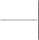
f (x)
x
1 1 x i
1
x xi
，学习器可以更好地从稀疏训练数据中正确泛化。概括地说，包含训练导数的效果是
为了克服反向传播中的语法归纳偏置（它偏好各点间的平滑插值），将其替换为所希望的导数 的显式输入信息。结果假设h显示在最右边的图中，它提供了对真实目标函数f的更精确估计。
插图——原书页码： 347

图 12-5 用 TangentProp 拟合值和导数
令f为目标函数，它的三个样例<x1, f(x1)>，<x2, f(x2)>和<x3, f(x3)>已知。基于这些点，学习器可能 生成假设g。如果导数也已知，学习器可以泛化到更精确的h。
在上述例子中，我们只考虑了简单类型的目标函数导数。实际上，TangentProp可接受对应 于输入x的各种变换的训练导数。例如，考虑学习识别手写字符的任务。确切地讲，假定输入x 对应于包含单个手写字符的图像，而任务是正确分类此字符。在此任务中，我们可能希望告诉 学习器“目标函数对于图像中字符的微小旋转不受影响”。为输入此先验知识给学习器，我们 首先定义一个变换s(α,x)，它把图像x旋转α度。现在我们可把旋转不变性的断言如下表示： 对每个训练实例xi ，目标函数对应此变换的导数为 0（即旋转输入图像不改变目标函数的 值）。换言之，我们可对每个训练实例xi断言下面的训练导数：
f (s(, xi )) 0
其中f为目标函数，而s(α,xi)为应用此变换s到图像xi得到的图像。
这样的训练导数在 TangentProp 中怎样被用于约束神经网络的权值？在 TangentProp 中这些 训练导数被合并到梯度下降中须最小化的误差函数中，回忆第 4 章中反向传播算法执行梯度下 降试图使误差平方和最小化：
2
E ( f (xi ) fˆ (xi ))
i
其中xi代表第i个训练实例，f 代表真实目标值，而 fˆ 代表学习到的神经网络表示的函数。
在TangentProp中，误差函数中新增了一项以惩罚训练导数和学习到的神经网络函数的实际 导数 fˆ 之间的分歧。一般地，TangentProp可接受多个变换（例如，我们希望断言旋转不变 性，同时断言字符识别中的平移不变性），每个变换形式必须为sj(α,x)，其中α为连续参数， 而sj可微，而且sj(0,x)=x（例如对于 0 度的旋转，函数即为恒等函数）。对每个这样的变换 sj(α,x)，TangentProp考虑指定的训练导数和学习到的神经网络的实际导数间的误差平方。修改 后的误差函数为：
⎡ ⎛ f (s
(, x ))
fˆ (s
2
(, x )) ⎞ ⎤
⎢ ˆ 2
⎜ j i
j i ⎟ ⎥
E ⎢( f (xi ) f (xi ))
⎜
⎟
（12．1）
⎥
i
j
⎣ ⎝ ⎠
0 ⎦
其中μ为用户提供的常量，以确定拟合训练数据和拟合训练导数之间的相对重要性。注意 E 定义中第一项为原来的训练数据同网络之间的误差平方，而第二项为训练导数同网络之间的 误差平方。
Simard et al. （1992）给出了使此扩展的误差函数最小化的梯度下降规则。它可由类似于 第 4 章中反向传播规则中的方法进行推导。
Simard 等提供了 TangentProp 的泛化精度同纯归纳反向传播之间的比较结果，针对的问题
为手写字符识别。更确切地讲，这里的任务是为单个数字 0 到 9 的图像作标记。在一个实验 中，TangentProp 和反向传播都用不同大小的训练集进行训练，然后基于它们在独立的 160 个 样例的测试集上评估性能。给予 TangentProp 的先验知识为：数字的分类不因图像的水平和垂 直平移而改变（即此目标函数对应于这些变换的导数为 0）。结果显示在表 12-4 中，证明了 TangentProp 使用先验知识的泛化精度确实高于纯反向传播算法。
表 12-4TangentProp 和反向传播的泛化精度，针对手写数字识别问题
TangentProp 泛化精度更高，因为它有先验知识：数字的确定有平移不变性。这些结果来自于
Simard et al.（1992）。
训练集 大小 | 在测试集上的错误率百分比 | |
TangentProp | 反向传播 | |
10 | 34 | 48 |
20 | 17 | 33 |
40 | 7 | 18 |
80 | 4 | 10 |
160 | 0 | 3 |
320 | 0 | 0 |
概括地说，TangentProp 使用的先验知识形式为目标函数对应其输入变换的所希望的导 数。它通过使一个目标函数最小化来结合先验知识和观察到的训练数据，目标函数同时度量了 网络对应训练样例值的误差（拟合数据），和网络对应于导数的误差（拟合先验知识）。μ的 值决定了网络在整个误差中拟合这两部分的程度。算法的行为对μ值敏感，它是由设计者选择 的。
虽然 TangentProp 成功地结合了先验知识和训练数数据以指导神经网络学习，但它对于先 验知识中的错误鲁棒性不强。当先验知识不正确时，即输入到学习器的训练导数不能正确反映 真实目标函数的导数时，算法将试图拟合不正确的导数，从而导致泛化精度不如完全忽略先验 知识使用纯反向传播算法的精度。如果我们预先知道训练导数中错误出现程度，我们可用这一 信息选择常量μ，以确定拟合训练值和拟合训练导数的相对重要程度。然而，这一信息不太可 能预先知道。在下一节我们讨论了 EBNN 算法，它可自动根据 example-by-example 的基础选择 μ的值，以解决不正确的先验知识的问题。
有必要比较一下 TangentProp、KBANN 和反向传播执行的假设空间（权值空间）的搜索方 法。TangentProp 结合先验知识，通过改变由梯度下降最小化的目的(objective)函数来影响假设 搜索。它相当于改变了假设空间搜索的目标，如图 12-6 所示。如反向传播算法一样（但与 KBANN 不同），TangentProp 开始于随机小权值的初始网络。然而，它的梯度训练法则产生的 权值更新与反向传播的不同，从而得到不同的最终假设。如图中所示，使 TangentProp 的目的 函数最小化的假设集合不同于使反向传播的目的函数最小化的假设集合，重要的是，如果训练 样例和先验知识都正确，并且目标函数可用 ANN 精确表示，那么满足 TangentProp 目标的权 向量集合将为满足反向传播目标的权向量集合的子集。这两个最终假设的集合的差别为一些不
正确的假设，它们会被反向传播考虑，但会因为先验知识而被 TangentProp 剔除掉。

插图——原书页码： 351
Hypothesis Space： 假设空间
Hypotheses that maximize fit to data and prior knowledge: 对数据和先验知识都有最大拟 合度的假设
Hypotheses that maximize fit to data 对数据拟合度最大的假设
TangentProp Search TangentProp 搜索
Backpropagation Search 反向传播搜索

图 12-6TangentProp 中的假设空间搜索
TangentProp 将网络初始化为随机小权值，如反向传播中一样。然而，它使用不同的误差函数来 引导梯度下降搜索。TangentProp 中使用的误差包括了预测训练值的误差，也包括预测由先验知识提供 的训练导数的误差。
注意，对目标函数的训练导数拟合的另一种方法是，简单地将观察到的训练样例附近的附 加训练样例综合起来，使用已知的训练导数来估计这些附近的实例的训练值。例如，在上面的 字符识别任务中，可以取一个训练图像，对其少量的平移，然后断言平移后的图像与原来的样 例属于同一类。可以期望使用反向传播和这些综合的样例，能得到相似于 TangentProp 中使用 原始样例和导数所得到的结果。Simard et al.（1992）作的实验显示两种情况下有近似相等的泛 化错误率，但 TangentProp 能更为有效地收敛。有意思的是第 4 章提到的学习驾驶汽车的 ALVINN 系统，使用了很相似的途径以综合附加训练样例。它使用有关如何根据镜头图像的水 平平移来改变驾驶方向的先验知识，来创建多个综合的训练样例以扩充每个观察到的训练样 例。
EBNN(Explanation-Based neural network) 即基于解释的神经网络（见 Mitchell & Thrun 1993a; Thrun 1996），这种算法以两种方式改进了 TangentProp 算法。首先，它不依靠用户提 供训练导数，而是对每个训练样例自行计算此训练导数。计算方法是通过用一套给定的领域理 论来解释每个训练样例。其次，EBANN 涉及了如何确定学习过程中归纳和分析部分相对重要 程度的问题（即如何选择式 12.1 中参数μ的值）。μ的值是对每个训练样例独立选择的，它 基于一个启发式规则，考虑领域理论能否精确预测特定样例的训练值。因此对于那些能由领域 理论正确解释的训练样例，学习的分析成分被强化；而对不能正确解释的样例，分析成分被弱 化。
EBNN的输入包括（1）形式为<xi,f(xi)>的一组训练样例，不包含训练导数；（2）一组领 域理论，类似于基于解释的学习（第 11 章）和KBANN中使用的，但它表示为一组预先训练过
的神经网络，而不是Horn子句。EBNN的输出是一个能逼近目标函数f的新的神经网络。此学习 到的网络能够拟合训练样例<xi,f(xi)>，以及从领域理论中抽取的f的训练导数。对训练样例
<xi,f(xi)>的拟合构成了学习的归纳成分，而对领域理论中抽取的训练导数的拟合构成了学习的 分析成分。
为说明 EBNN 中使用的领域理论，考虑图 12-7。图的上面部分显示的是目标函数 Cup 的 EBNN 领域理论，每一方块表示领域理论中一个神经网络。注意在此例中，表 12-3 的符号领 域理论中每个 Horn 子句有一对应的网络。例如，标为 Graspable 的网络输入为一实例描述， 输出为反映对象是否 Graspable 的值（EBNN 典型情况下用 0.8 表示真命题，用 0.2 表示假命 题）。此网络类似于表 12-3 中给出的 Graspable 的 Horn 子句。某些网络以其他网络的输出作 为输入（例如，最右边标为 Cup 的网的输入为 Stable、Liftable 和 OpenVessel 网络的输出。） 因此，组成领域理论的这些网络可以链接起来，对每个输入案例推理出目标函数，如 Horn 子 句之间的链接一样。一般地，这些领域理论网络可由某外部源提供给学习器，或者也可是同一 系统以前学习的结果。EBNN 使用这些领域理论来学习新的目标函数。它在此过程中不改变领 域理论。
EBNN的目的是学习一个描述目标函数的新神经网络。我们将此新网络称为目标网络
（target network）。在图 12-7 的例子中，目标网络Cuptarget显示在图的底部，它的输入为任意 的实例描述，输出为表示此对象是否为Cup的值。
EBNN通过执行前一节描述的TangentProp算法来学习目标网络，回忆一下，TangentProp训 练网络以拟合训练值和训练导数。 EBNN 把它接收 到的输入训练值 <xi,f(xi)> 传递给 TangentProp。此外，EBNN还把它从领域理论中计算出的导数提供给TangentProp。为理解 EBNN是如何计算这些训练导数的，再次考虑图 12-7。图上方显示了对一特定训练实例xi，领 域理论作出的目标函数值预测。EBNN对应于输入实例的每一个特征计算此预测的导数。例 如，在图中，实例xi描述为几个特征如MadeOfStyrofoam=0.2（即为假），而领域理论预测为 Cup＝0.8（即真）。EBNN对应于每个实例特征计算此预测的偏导，得到下面的偏导集合：
⎡ Cup , Cup ,..., Cup ⎤
⎣
⎦ x x
⎢BottomIsFlat
ConcavityPointsUp
MadeOfStyrofoam ⎥
i
插图——原书页码： 353
Explanation of training example in terms of domain theory: 根据领域理论得到的训练样例 的解释
Target network: 目标网络
图 12-7 在 EBNN 中一训练样例的解释
此解释由领域理论网络（上部）作出的目标函数值预测构成。训练导数从此解释中抽取出来，以 训练分离的目标网络。每个矩形块表示一个单独的多层神经网络。
这组导数是领域理论预测函数对输入实例的梯度。下标表示这些导数在x=xi上计算。在更 一般的情况下，目标函数有多个输出单元，梯度对每个输出进行计算。这个梯度矩阵被称为目 标函数的雅可比行列式（Jacobian）。
为理解这些训练导数在帮助学习目标网络的重要性，考虑导数
Cup

Expensive
。如果领域理
Cup
论编码的知识中Expensive特征与目标函数Cup无关，那么从此解释中抽取的导数
Expensive
的值为 0。为 0 的导数表示这样的断言，特征Expensive上的改变对Cup值的预测没有影响。另 一方面，很大的正导数或负导数表示断言：此特征与目标值非常相关。因此，从领域理论解释 中抽取的导数提供了区分相关和不相关特征的重要信息。当这些抽取出的导数被提供为 TangentProp 的训练导数以学习目标网络 Cuptarget ，它们提供了指导泛化过程的有用的偏置
（bias）。通常神经网络中的语法归纳偏置在这里被替换为从领域理论中得到的导数所产生的
偏置。
上面我们描述了领域理论预测如何被用于生成一组训练导数。精确地讲，完整的EBNN算 法如下：给定训练样例和领域理论，EBNN首先创建一个新的全连接前馈网络以表示此目标函 数。该目标网络被初始化为随机小权值，如在反向传播中那样。然后，EBNN对每个训练样例
<xi,f(xi)>确定相应的训练导数，以两步骤实现。第一步用领域理论来预测实例xi的目标函数 值。令A(xi)代表此领域理论对实例xi预测。换言之，A(xi)为形成xi的解释的领域理论组合网络定 义的函数。第二步，分析领域理论的权值和激活状态以抽取出对应xi每个分量的A(xi)的导数。
（即在x=xi计算的A(x)的雅可比行列式）。抽取导数的过程类似于反向传播算法中计算δ项
（见习题 12.5）。最后，EBNN使用了TangentProp的微小变型来训练目标网络以拟合下面的误 差函数。
⎡ ⎛ A(x)
2
fˆ (x) ⎞ ⎤
⎜
2
E ⎢( f (xi ) fˆ (xi ))
⎢
i ⎜
x j
⎟ ⎥
x j ⎟ ⎥
（12.2）
i ⎣ j ⎝
⎠ ( x xi ) ⎦
其中
i 1
A(xi ) f (xi )
c
（12．3）
这里xi代表第i个训练实例，A(x)代表输入x的领域理论预测。上标符号xj代表向量x的第j个 分量（即神经网络的第j个输入结点）。系数c为一个归一化常量，它的值是为了保证对所有i， 0 i 1。
虽然公式看起来很复杂，其中的思想很简单。由式 12.2 给出的误差函数与式 12.1 中由
TangentProp最小化的误差函数有相同的一般形式。最左边的项如通常那样，是训练值f(xi)和目
标网络预测值 fˆ (x ) 之间的误差平方。最右边的项衡量了从领域理论中抽取的训练导数 A( x)
i x j
和目标网络的实际导数
fˆ (x)
x j
之间的误差平方。因此，最左边的项提供是归纳约束，假设必须
拟合训练数据；而最右边的项提供的是分析约束，即假设必须拟合从领域理论中抽取的训练导
数。注意在式 12.2 中的导数
fˆ (x)
x j
只是式 12.1 中表达式
j i
fˆ (s (, x ))
的一种特殊形式，其中
j j
将 s j ( , xi ) 中的xi 替为了xi +α，EBNN使用的精确的权值训练法则由Thrun（1996）描述。
EBNN中归纳和分析学习部分的相对重要性由常量μi确定，它由式 12-3 定义。μi的值是 由领域理论的预测A(xi) 和训练值f(xi)的差异确定的。学习的分析成分对于能被领域理论正确预 测的训练样例其权值被加重，而对于不能正确预测的样例权值减轻。这一加权启发式规则假定 在训练值能够被领域理论正确预测时，从领域理论中抽取的训练导数更有可能是正确的。虽然 可能构造出此启发式规则失败的情况，在实践中几个领域中都已证明是有效的（例如，见 Mitchell & Thrun 1993a; Thrun 1996）。
概括地说，EBNN算法使用的领域理论被表示为一组预先学习到的神经网络，然后领域理 论与训练样例一起训练其输出假设（目标网络）。对每个训练样例，EBNN使用其领域理论来 解释它，然后从此解释中抽取训练导数。对实例的每个属性计算出一个训练导数，以描述：按 照领域理论，目标函数值是怎样由其属性值的微小变化影响的。这个训练导数被提供给 TangentProp的一个变体，其中使目标网络拟合这些导数和训练样例值。拟合导数限制了学习到 网络必须拟合领域理论给出的依赖关系，而拟合训练值限制了网络必须拟合观察到的数据本 身。拟合导数的权值μi是由每个训练样例独立确定的，它基于领域理论预测此样例训练值的 精确程度。
在多个领域内， EBNN 已被证明是从近似领域理论中学习的一种有效方法。 Thrum
（1996）描述了它在上述讨论的 Cup 学习任务的变体上的应用，并且报告说它比标准反向传播 算法泛化更为精确，特别是在训练数据缺少的情况下。例如，在经过 30 个样例训练后， EBANN 在另一测试数据集上得到的均方根误差为 5.5，而反向传播的误差为 12.0。Mitchell & Thrun（1993a）描述了应用 EBNN 以学习控制模拟的移动机器人，其中领域理论由神经网络构 成，它们预测了不同机器人对外界状态的动作的效果。其中 EBNN 也使用了近似的预先学习 的领域理论，并获得了比反向传播更好的性能。这里反向传播需要约 90 个训练事件才能达到 EBNN 中 25 个训练事件后的性能。O'Sullivan et al.（1997）和 Thrun（1996）描述了 EBNN 应 用到其他几种真实世界感知和控制任务，其中领域理论由网络组成，它使用声纳、视觉和激光 范围传感器预测了室内移动机器人的动作效果。
EBNN 与其他基于解释的学习方法之间存在内在的联系，如第 11 章描述的 Prolog-EBG。 回忆该章中 Prolog-EBG 也基于领域理论构造解释（对样例目标值的预测）。在 Prolog-EBG 中，解释的构造来自于由 Horn 子句组成的领域理论，而目标假设的精化是通过计算此解释成 立的最弱条件。因此解释中的相关依赖性在学习到的 Horn 子句假设中反映。EBNN 构造了一 个相似的解释，但它是基于神经网络形式的领域理论，而不是 Horn 子句。如在 Prolog-EBG
中，相关的依赖性是从解释中抽取的，而且被用于精化目标假设。在 EBNN 中，这些依赖性 形式为导数，因为在神经网络这样的连续函数中，导数是表示依赖性的很自然的方法。相反， 在符号解释或逻辑证明中，表示依赖性的自然方法是描述此证明所应用的样例集。
第 11 章描述的符号的基于解释方法与 EBNN 在其学习能力方面有几个不同。主要不同在 于 EBNN 能处理不完美的领域知识，而 Prolog-EBG 不能。这一不同是由于 EBNN 是建立在拟 合观察训练值的归纳机制之上的，而且领域理论只被作为学习到的假设的附加约束。第二个重 要不同在于 Prolog-EBG 学习到逐渐增长的 Horn 子句集。而 EBNN 学习到固定大小的神经网 络。如第 11 章讨论的，学习 Horn 子句集的一个难题是，随着学习过程的进行和新 Horn 子句 被加入，分类新实例的开销不断增长。然而固定大小的神经网络也有相应的不足，它可能无法 表示足够复杂的函数，而增长的 Horn 子句集可以表示越来越复杂的函数。Mitchell & Thrun
（1993b）更详细地讨论了关于 EBNN 和符号表示的基于解释学习方法之间联系。
前面两节考查了先验知识在学习中的两种不同角色。初始化学习器的假设、和改变目的函 数以引导假设空间上的搜索。本节我们考虑使用先验知识来改变假设空间搜索的第三种方法： 即改变搜索中定义合法搜索步的算子集合。这一途径被用于 FOCL（Pazzani et al. 1991， Pazzani & Kibler 1992）以及 ML-SMART（Bergadano & Giordanna 1990）等系统。这里我们用 FOCL 来说明这一途径。
FOCL 是第 10 章描述的纯归纳的 FOIL 系统的一个扩展。FOIL 和 FOCL 都学习一组一阶 Horn 子句以覆盖观察到的训练例。两个系统都应用了序列覆盖算法来学习单个 Horn 子句，移 去那些被新 Horn 子句覆盖的正例，然后在剩余的训练样例上重复这一过程。在两个系统中， 每个新 Horn 子句都是通过一般到特殊搜索创建的，开始于最一般的 Horn 子句（即不含前件的 子句）。然后生成当前子句的几个候选特化式，并选择其中关于训练样例有最大信息增益的一 个。重复该过程，生成更多的候选特化式并选择最佳的，直到获得一个满足指定性能的 Horn 子句。
FOIL 和 FOCL 之间的区别在于搜索单个 Horn 子句的一般到特殊过程中候选假设生成的方 法。第 10 章描述的 FOIL 生成每个候选特化式是通过加入一个新文字到子句前件中得到的。 FOCL 使用同样的方法产生候选特化式，但还基于领域理论生成了附加的特化式。图 12-8 的搜 索树的实线边显示了在 FOIL 典型的搜索中考虑的一般到特殊搜索步。图 12-8 搜索树的虚线边 表示 FOCL 中基于领域理论考虑的附加候选特化式。
虽然 FOCL 和 FOIL 都学习一阶 Horn 子句，我们这时演示的操作都只有简单的命题 Horn 子句（无变量的）。特别地，再次考虑图 12-3 中的 Cup 目标概念、训练样例和领域理论。为 描述 FOIL 的操作，我们必须首先在出现于领域理论和假设表示中的两种文字之间作一区分。 当一个文字可被用于描述一个输出假设时，我们称它是操作型（operational）。例如，在图 12-
3 的 Cup 例子中，我们允许输出假设中只能引用描述训练样例的 12 个属性（如：HasHandle,
HandleOnTop）。基于这 12 个属性的文字被认为是操作型的。相反，那些只出现在领域理论中 作为中间特征但不是实例的原子属性的文字，被认为是非操作型。在此情况下非操作型属性的 一个例子是属性 Stable。

插图——原书页码： 358
Generated by the domain theory：由领域理论生成
图 12-8FOCL 中的假设空间搜索
为学习一个规则，FOCL 从一般的假设开始，搜索逐渐特殊的假设。有两种算子用于生成当前假 设的特化式。一种是增加一个新的文字（图中的实线）。另一种算子是通过增加一组文字特化此规 则。这组文字按照领域理论构成了目标概念的逻辑充分条件（图中虚线）。FOCL 在所有这些候选化 式中基于它们在数据上的性能进行选择。因此，不完美的领域理论只会在有证据支持理论时才会影响 假设。该例基于前面 KBANN 例子相同的训练数据和领域理论。
在其一般到特殊搜索的每一点，FOCL 使用下面两种算子扩展其当前假设 h：
1．对不是 h 一部分的每个操作型文字，创建 h 的一个特化式，方法是加入文字到前件 中。这也是 FOIL 中生成候选后继的方法。图 12-8 实线箭头表示了此种类型的特化。
2．按照领域理论，创建一个操作型的，并且是目标概念的逻辑充分条件。将这组文字加 入到 h 的当前前件中去。最后修剪 h 的前件，移去对于训练数据不需要的文字。图 12-8 中虚 箭头表示了此种类型的特化。
上面第 2 种算子的详细过程如下。FOCL 首先选择一条领域理论子句，它的头部（前件） 匹配目标概念。如果有多个这样的子句，选择其中体部（后件）关于训练样例有最高信息增益 的。例如，在领域理论的训练数据中（图 12-3），只有一个样的子句：
Cup←Stable, Liftable, OpenVessel
所选子句的前件形成了目标概念的一个逻辑充分条件。在这些充分条件中，再次使用领域 理论，每个非操作型文字被替换掉，并且将子句前件代入到子句后件中。例如，领域理论子句 Stable←BottomIsFlat 被用于将操作型的 BottomIsFlat 代换非操作型的 Stable。这个“展开”
（ unfolding）领域理论的过程持续直到充分条件已被表述为操作型文字。如果有多个可选的领 域理论产生不同的结果，那么在此展开过程的每一步用贪婪的方法选择有最大信息增益一个。 读者可以验证在这个例子中，给定数据和领域理论，最终的操作型充分条件为：
BottomIsFlat, HasHandle, Light, HasConcavity, ConcavityPointsUp
作为生成候选特化式的最后一步，此充分条件被修剪。对表达式中的每个文字，除非文字 的移除会降 低训练例上 的分类精度 ，否则它被 移去。包含 这一步骤是 为了从过 特 化
(overspecialization)的情况下恢复，这时不完美的领域理论中包含不相关的文字。在我们的例子 中，上述的文字集合匹配两个正例和两个反例。修剪（移去）文字 HasHandle 会使性能改进。 因此，最终的修剪过的操作型充分条件为：
BottomIsFlat, Light, HasConcavity, ConcavityPointsUp
这组文字现在被加入到当前假设的前件中。注意此假设是图 12-8 中虚线箭头显示的搜索 步的结果。
使用了上面两种操作后，一但当前假设的候选特化式已经生成了，有最大信息增益的候选 者被选择。在图 12-8 中显示的例子中，在搜索树的第一层选择的候选者为领域理论生成的那 一个。搜索过程继续考虑这个领域理论推举的前件的更进一步的特化式，这样学习的归纳成分 可以精化领域理论中导出的前件。在此例中，领域理论先影响搜索的第一层。然而，情况并非 总是如此。如果在第一层对其他候选有更强的经验化的支持，领域理论推举的文字仍可能在搜 索的后续步骤中被加入。概括地说，FOCL 学习以下形式的 Horn 子句：
c oi ob o f
其中c为目标概念，oi为初始的操作型文字的合取，它由第一个语法算子每次加入一个文 字，ob是基于领域理论单步加入的操作型文字合取，而of为第一个语法算子每次加入一个的操 作型文字的合取。这三个文字集合都可能为空。
上述的讨论演示了使用命题型领域理论在单个 Horn 子句的一般到特殊搜索中创建假设的 候选特化式的过程。该算法很容易被扩展到一阶表示中（即含有变量的表示）。第 10 章详细 讨论了 FOIL 中生成一阶 Horn 子句的算法，包括上述第一个算子扩展到一阶表示的情况。为 扩展第二个算子以处理一阶领域理论，必须在展开领域理论时考虑变量代换。这可以通过涉及 到表 11-3 回归过程的一种方法完成。
FOCL 使用领域理论来增加每步搜索单个 Horn 子句中考虑的候选特化式数量。图 12-9 比 较了 FOCL 执行的假设空间搜索以及纯归纳的 FOIL 算法执行的搜索。FOCL 中领域理论推举 的特化式对应 FOIL 搜索中的一个“宏“（marcro）步，其中多个文字在一步中被加入。此过 程可被看成是将一个可能以后被考虑的假设提升为立即被考虑的假设。如果领域理论是正确 的，训练数据会显示出此假设比其他假设的优越性，因此它被选择。如果领域理论不正确，对 所有候选的经验化评估会将搜索导向另外一条路径。
插图——原书页码： 361
Hypotheses that fit training data equally well: 对训练数据有同等拟合度的假设 FOCL search: FOCL 搜索
FOIL search: FOIL 搜索

图 12-9 在 FOCL 中搜索的假设空间
FOCL 扩大了 FOIL 中使用的搜索算子集合。FOIL 在每步只考虑加入单个新文字，而 FOCL 还考 虑加入由领域理论导出的多个文字。
概括地说，FOCL 使用语法生成的候选特化式的同时，还使用了领域理论驱动的在搜索中 每步的候选特化生成。该算法选择这些候选主要是基于它们在训练数据上的经验化支持。因 此，领域理论使用方式是使学习器偏置，但让它基于其在训练数据上的性能进行最终的选择。 由领域理论引入的这种偏置表现形式为：优先选择这样的 Horn 子句，它最相似于领域理论涵 蕴（entail）的操作型的逻辑充分条件。此偏置与纯归纳的 FOIL 程序的偏置结合在一起。后面 一个偏置优先选择短的假设。
在许多不完美领域理论的应用中，FOCL 已显示出比纯归纳的 FOIL 算法有更高的泛化精 度。例如 Pazzanzi & Kibler（1992）研究了学习“合法棋盘状态”概念的问题。给定 60 个训 练样例，30 个合法的终盘棋盘状态，30 个为不合法的。FOIL 在一独立测试样例集上得以了 86%的精度。FOCL 使用相同的 60 个训练样例，以及一个精度为 76%的近似领域理论。结果得 到的假设泛化精度为 94％——误差率比 FOIL 的一半还小。在其他领域也得到了类似的结果。 例如，给定 500 个电话网问题的训练样例，以及电话公司 NYNEX 对它们的诊断，FOIL 精度 为 90%，而 FOCL 在给定相同训练数据以及 95％精度的领域理论时，最终达到精度为 98％。
本章展示的方法只是结合分析和归纳学习的可能途径中的几个例子。其中每个方法都被证 明在所选领域中性能超出纯归纳的学习方法，但没有一个在大范围的问题领域中被彻底测试或 证明。结合归纳和分析学习的主题仍是一个非常活跃的研究领域。
本章的要点包括：
近似的先验知识（或领域理论）在许多实际学习问题中是可利用的。决策树和神 经网络反向传播这样的纯归纳方法不能利用这样的领域理论，因此在数据稀缺时 性能较差。Prolog-EBG 这样的纯分析学习方法能够利用这样的领域理论，但在给 定不完美先验知识时会产生不正确的假设。结合归纳和分析学习的方法可以获得 两者的优点，减小样本复杂度，并且否决不正确的先验知识。
看待结合归纳和分析学习算法的一种方法是，考虑领域理论是如何影响假设空间 搜索的。本章我们考查了几种方法，它们使用不完美的领域理论。（1）创建搜索 中的初始假设，（2）扩充当前假设的搜索算子集合，（3）改变搜索目的。
使用领域理论来初始化假设的一个系统是 KBANN。此算法使用一套编码为命题规 则的领域理论来分析地创建等价于领域理论的神经网络。然后此网络被反向传播 算法归纳地精化，以改进其在训练数据上的性能。结果是一个被原始领域理论偏 置的网络，其权值被基于训练数据归纳精化。
TangentProp 使用的先验知识被表示为目标函数的所希望的导数。在某些领域时， 如图像处理，这样表示先验知识的一个很自然的方法。TangentProp 通过改变目的 函数使用这一知识，此函数在搜索假设空间的梯度下降中被最小化。
EBNN 使用领域理论改变人工神经网络搜索的假设空间的目标。它使用的领域理论 由预先学习的神经网络组成，其作用是实现一个神经网络，以模拟符号的基于解 释学习。如在符号的基于解释的学习中一样，领域理论被用于解释单个样例，获 得不同样例特征的相关程度的信息。然而在神经网络表示中，有关相关性的信息 被表示为目标函数对应于实例特征的导数。网络假设的训练使用了 TangentProp 算 法的一个变种，其中被最小化的误差不仅包含了网络输出值的误差，还包含了从 解释中获得的网络导数的误差。
FOCL 使用领域理论来扩展每步搜索中考虑的的候选集。它使用表示为一阶 Horn 子句的近似领域理论来学习一组逼近目标函数的 Horn 子句。FOCL 应用了序列覆 盖算法，通过一般到特殊搜索过程来学习每个 Horn 子句。领域理论被用于扩大此 搜索中每步考虑的下一个更特殊候选假设集。然后候选假设基于其在训练数据上 的性能被评估。以这种方法，FOCL 结合了 FOIL 的贪婪的、一般到特殊搜索策 略，以及分析方法中的规则链分析推理。
如何最好地融合先验知识到新观察事物中的问题，仍是机器学习中主要的待解决 问题之一。
还有许多种算法试图结合归纳和分析学习。例如，第 6 章讨论的学习贝叶斯置信网的方法 提供了另一种途径。本章末尾的参考文献提供了进一步阅读的例子来源。
习题
12.1 考虑学习一个目标概念 GoodCreditRisk，它定义在某实例描述之上，实例描述包含 4 个属性 HasStudentLoan, HasSavingsAccount, IsStudent, OwnsCar。对于下面的领域理论，给出 KBANN 创建的初始网络，包括所有的网络连接和权值。
GoodCreditRisk←Empolyed, LowDebt Employed←IsStudent
LowDebt←HasStudentLoan, HasSavingsAccount
12.2 KBANN 将一组命题 Horn 子句变换为一个初始神经网络。考虑一类 n-of-m 子句，这 种 Horn 子句前件（先行词）中包含 m 个文字，并且包含一关联的参数 n，n≤m。当 m 个前件 中至少 n 个满足时，此 n-of-m Horn 子句被认为满足。例如，子句：
Student←LivesInDorm, Young, Studies; n=2
断言如果 3 个前件中至少两个满足时，此人为 Student。
给出与 KBANN 相似的一个算法，它接受一组命题型 n-of-m 子句并且能构造出与领域理 论一致的神经网络。
12.3 试将 KBANN 扩展，以接受包含一阶 Horn 子句的领域理论，而不只是命题 Horn 子 句。（即允许 Horn 子句包含变量，如第 10 章中那样）。给出一个算法以构造等价于一个 Horn 子句集的神经网络，如果不能则讨论其中的困难所在。
12.4 此习题要求推导出类似于 TangentProp 使用的梯度下降法则。考虑实例空间 X 由实数 构成，而假设空间 H 由 x 的二次函数构成。即每个假设形式为：
h(x)=w0+w1x+w2x2
（a）推导一个梯度下降法则，它最小化反向传播中相同的判据：即在假设和训练数据目 标值之间的误差平方和。
（b）推导一个梯度下降法则，它最小化 TangentProp 中相同的判据。只考虑一个变换
s(α,x)=x+α
12.5 EBNN从解释中抽取训练导数的方法是，考虑构成解释的神经网络的权值和激活状 态。考虑一个简单的例子，其中解释的形式为有n个输入的单个sigmoid单元。推导一个过程以
fˆ (x)
抽取导数
x j
x xi
，其中xi为输入到此单元的特定训练实例， fˆ (x) 为sigmoid单元输出，并且
xj代表sigmoid单元第j个输入。也可以使用记号xij代表xi的第j个分量。提示：该导数与反向传播 训练法则中的导数相似。
12.6 再次考虑图 12-8 中显示的 FOCL 的搜索步骤。假如在搜索的第一层选择的假设改 为：
Cup←HasHandle
描述 FOCL 生成的作为此假设后继的第二层候选假设。只需要包括那些由 FOCL 的第二个 搜索算子生成的假设，即使用领域理论生成的假设。不要忘记对充分条件进行后修剪。使用表 12-3 中的训练数据。
12.7 本章讨论了 3 种途径来使用先验知识以影响假设空间的搜索。你认为如何集成这三种 方法？能否提出一个特殊算法，它集成了至少两种算法以针对某种特殊的假设表示。在此集成 中有什么样的优缺点？
12.8 再次考虑 12.2.1 节中的问题，即当数据和先验知识都存在时，应使用什么样的准则在 假设中进行选择。给出你在这个问题上的见解。
第13章 增强学习
增强学习要解决的是这样的问题：一个能够感知环境的自治 agent，怎样学习选择能达到 其目标的最优动作。这个很具有普遍性的问题应用于学习控制移动机器人、在工厂中学习进行 最优操作工序、以及学习棋类对弈等。当 agent 在其环境中作出每个动作时，施教者会提供奖 赏或惩罚信息，以表示结果状态的正确与否。例如，在训练 agent 进行棋类对弈时，施教者可 在游戏胜利时给出正回报，而在游戏失败时给出负回报，其他时候为零回报。Agent 的任务就 是从这个非直接的、有延迟的回报中学习，以便后续的动作产生最大的累积回报。本章着重介 绍一个称为 Q 学习的算法，它可从有延迟的回报中获取最优控制策略，即使 agent 没有有关其 动作会对环境产生怎样的效果的先验知识。增强学习与动态规划（dynamic programming）算法 有关，后者常被用于解决最优化问题。
考虑建造一个可学习机器人。该机器人（或 agent）有一些传感器可以观察其环境的状态
（state）并能做出一组动作（action）已改变这些状态。例如，移动机器人具有镜头和声纳等 传感器，并 可以做出“ 直走”和“ 转弯”等动 作。学习的 任务是获得 一个控制 策 略
（policy），以选择能达到目的的行为。例如，此机器人的任务是在其电池电量转低时找到充 电器进行充电。
本章关心的就是：这样的 agent 怎样在其环境中做实验并成功地学习到控制策略。这里假 定 agent 的目标可被定义为一个回报（reward）函数，它对 agent 从不同的状态中选取不同的动 作赋予一个数字值，即立即清算（immediate payoff）。例如：寻找电池充电器的目标可用这样 的回报函数指定：对那些能够连接到充电器的状态-动作转换赋予正回报（如+100），对其他 的状态动作转换赋予 0 回报。这个回报函数可内嵌在机器人中；或者只有一个外部施教者知 道，由它对机器人的每个动作给出回报值。机器人的任务是执行一系列动作，观察其后果，再 学习控制策略。我们希望的控制策略是能够从任何初始状态选择恰当的动作，使 agent 随时间 的累积的回报达到最大。这个机器人学习问题的一般框架在图 13-1 中概要列出。

插图——原书页码： 368
Agent: Agent
State: 状态
Reward: 回报
Action: 动作
Environment: 环境
Goal:Learn to choose actions that maximize： 目标：学习选择动作使下式最大化
where: 其中

图 13-1 一个与环境交互的 agent
此agent生存的环境被描述为某可能的状态集合S。它可执行任意的可能动作集合A。每次在某状 态st下执行一动作at，此agent会收到一个实值回报rt，它表示此状态-动作转换的立即值。如此产生了一 系列的状态si，动作ai和立即回报ri的集合，如图所示。Agent的任务是学习一个控制策略π:S→A，它 使这些回报的和的期望值最大化，其中后面的汇报值随着他们的延迟指数减小。
图 13-1 中可清楚地看到，学习控制策略以使累积回报最大化这个问题非常普遍，它覆盖 了机器人学习任务以外的许多问题。一般地，此问题是一个通过学习来控制序列过程的问题。 例如生产优化问题，其中要选择一系列的生产动作，而使生产出的货物减去其成本达到最大 化。再如一些序列调度问题，像在一个大城市中选择出租车运载乘客，其中回报函数为乘客等 待的时间和出租车队的整体油耗。一般来说，我们感兴趣的问题类型是：一个 agent 需要通过 学习和选择动作来改变环境状态，而其中使用了一个累积回报函数来定义任意动作序列的质 量。在此类问题中。我们考虑几种特殊的框架：包括动作是否具有确定性的输出；agent 是否 有其动作对环境的效果的先验知识。
在本书前面，我们已经接触到了通过学习来控制序列过程的问题。在第 11.4 节中。我们 讨论了用基于解释的方法学习规则，以控制问题解决中的搜索。在其中 agent 的目的是在搜索 其目标状态时的每一步从可选动作中做出抉择。本章讨论的技术不同于 11.4 节，因为这里考
虑的问题中行为可能有非确定性的输出，而且学习器缺少描述其行为输出的领域理论。在第 1 章，我们讨论了在西洋双陆棋对弈中的学习问题。其中概述的学习方法非常类似于本章的学习 方法。 实际上本章的增强学习算法的一个最成功的应用就是类似的博弈问题。 Tesauro
（1995）描述的 TD-Gammon 程序，它使用增强学习成为了世界级的西洋双陆棋选手。这个程 序经过了 150 万个自生成的对弈训练后，已近似达到了人类最好选手的水平，并且在国际西洋 双陆棋联赛中与顶尖棋手对弈取得了良好的成绩。
学习控制策略以选择动作的问题在某种程度上类似于其他章讨论过的函数逼近问题。这里 待学习的目标函数为控制策略π:S→A。它在给定当前状态 S 集合中的 s 时，从集合 A 中输出 一个合适的动作 a。然而，增强学习问题与其他的函数逼近问题有几个重要不同：
延迟回报（delayed reward）。 Agent 的任务是学习一个目标函数π。它把当前状 态 s 映射到最优动作 a=π(s)。在前面章节中，我们总是假定在学习π这样的目标 函数时，每个训练样例是序偶的形式<s, π(s)>。然而在增强学习中，训练信息不 能以这种形式得到。相反，施教者只在 agent 执行其序列动作时提供一个序列立即 回报值，因此 agent 面临一个时间信用分配（temporal credit assignment ）的问题： 确定最终回报的生成应归功于其序列中哪一个动作。
探索（exploration ）。在增强学习中，agent 通过其选择的动作序列影响训练样例 的分布。这产生了一个问题：哪种实验策略可产生最有效的学习。学习器面临的 是一个折中的问题：是选择探索未知的状态和动作（以收集新信息），还是选择 它已经学习过、会产生高回报的状态和动作（以使累积回报最大化）。
部分可观察状态（partially observable states）。虽然为了方便起见，可以假定 agent 传感器在每一步可感知到环境的全部状态，但在实际的情况下传感器只能提供部 分信息。例如：带有前向镜头的机器人不能看到它后面的情况。在此情况下可能
需要结合考虑其以前的观察以及当前的传感器数据以选择动作，而最佳的策略有 可能是选择特定的动作以改进环境可观察性。
长期学习（life-long learning）。不象分离的函数逼近任务，机器人学习问题经常要 求此机器人在相同的环境下使用相同的传感器学习多个相关任务。怎样在窄小的
走廊中行走，以及怎样从激光打印机中取得打印纸等。这使得有可能使用先前获 得的经验或知识在学习新任务时减小样本复杂度。
在本节中，我们把学习序列控制策略的问题更精确地形式化。有许多种方法可以做到。例 如：可假定 agent 的行为是确定性或非确定性的；假定 agent 可以预测每一个行为所产生的状 态，或不能预测；假定 agent 是由外部专家通过示例最优动作序列来训练，或必须通过执行自 己选择的动作来训练。这里我们基于马尔可夫决策过程定义该问题的一般形式。这种问题形式 遵循图 13-1 示例的问题。
在马尔可夫决策过程（Markov decision process，MDP）中，agent 可感知到其环境的不同 状态集合S，并且有它可执行的动作集合A。在每个离散时间步t，agent 感知到当前状态st ，选 择当前动作at 并执行它。环境响应此agent，给出回报 rt=r(st, at)，并产生一个后继状态St+1=δ (st, at)。这里函数δ和r是环境的一部分，agent 不必知道。在MDP中，函数δ(st, at)和r(st, at)只 依赖于当前状态和动作，而不依赖于以前的状态和动作。本章中我们只考虑S和A为有限的情 形。一般来说，δ和r可为非确定性函数，但我们首先从确定性的情形开始。
Agent的任务是学习一个策略π:S→A，以基于当前观察到的状态st选择下的一步动作at；即 π(st)=at。如何精确指定此agent要学习的策略π呢？一个明显的方法是要求此策略对机器人产 生最大的积累回报。为精确地表述这个要求，我们定义：通过遵循一个任意策略π从任意初始
π
状态st获得的累积值V
(st)为：
V (st ) rt rt 1
2
rt 2 ...
i0
i
rt i
（13.1）
其中回报序列rt+i的生成是通过由状态st开始并重复使用策略π来选择上述的动作（如at=π (st)，at+1=π(st+1)等）。这里 0≤γ<1 为一常量，它确定了延迟回报与立即回报的相对值。确 切地讲，在未来的第i时间步收到的回报被因子γi以指数级折算。注意如果设置γ=0，那么只 考虑立即回报。当γ被设置为接近 1 的值时，未来的回报相对于立即回报有更大的重要程度。
h
由式 13.1 定义的量Vπ(s)常被称为由策略π从初始状态s获得的折算累积回报（discounted cumulative reward）。把未来的回报相对于立即回报进行折算是合理的，因为在许多的情况 下，我们要希望获得更快的回报。不过，其他的整体回报定义也被研究过。例如：有限水平回 报（finite horizon reward ）定义为 i0 rt i ，它计算有限的h步内回报的非折算和。另一种定
1 h
h i0
义方式是平均回报（average raward ） limh rt i 。它考虑的是agent整个生命期内每时
间步的平均回报。本章只限制于考虑式 13.1 定义的折算回报。Mahadevan（1996）讨论了当优 化准则为平均回报时的增强学习。
现在可以精确陈述agent的学习任务。我们要求agent学习到一个策略π，使得对于所有状 态s，Vπ(s)为最大。此策略被称为最优策略（optimal policy ），并用π*来表示。
* arg maxV (s),(s)
（13.2）
*
为简化表示，我们将此最优策略的值函数V
(s) 记作V*(s)。V*(s)给出了当agent从状态s开
始时可获得的最大折算累计回报，即从状态s开始遵循最优策略时获得的折算累积回报。
为了说明这些概念，图 13-2 的上方显示了一个简单的格状世界环境。此图中的 6 个方格 代表 agent 的 6 种可能的状态或位置。图中每个箭头代表 agent 可采取的可能动作，从一个状 态移动到另一个。与每个箭头相关联的数值表示如果 agent 执行相应的状态动作转换可收到的 立即回报 r(s,a)。注意在这个特定环境下，所有的状态动作转换，除了导向状态 G 的以外，都 被定义为 0。为便于讨论，可将状态 G 看作是目标状态，因为 agent 可接受到回报的惟一方法 是进入此状态。还要注意在此环境下，agent 一旦进入状态 G，它可选的动作只能是留在该状 态中。因此，我们称 G 为吸收状态（absorbing state）。
我们已经定义了状态、动作和立即回报，只要再选择折算因子γ的值，就可以确定最优策 略π*和它的值函数V*(s)了。在这里我们选择γ=0.9。图 13-2 的下方显示了在此设定下的一种 最优策略（还有其他的最优策略）。与任意策略一样，该策略确切地指定了agent在任意给定 状态下应选择的一个动作。如所想象的那样，该最优策略把agent以最短路径导向状态G。
插图——原书页码： 372
(immediate reward)values： 立即回报值
values: 值
values: 值
One optimal policy：一个最优策略
图 13-2 说明 Q-学习的基本概念的一个简单的确定性世界
每个方格代表一个不同的状态，每个箭头代表一个不同的动作。立即回报函数把进入目标状态G 的回报赋予 100，其他的赋予 0。V*(s)和Q(s, a)的值来自于r(s, a)以及折算因子γ=0.9。对应于最大Q值 的动作的一个最优策略也显示在图中。
图 13-2 的右边的图显示每状态的V*值。例如：考虑此图的右下角的状态。此状态的V*值 为 100，因为在此状态下最优策略会选择“向上”的动作，从而得到立即回报 100。然后，
agent会留在吸收状态中，不再接到更多的回报。类似的，中下方的状态的V*值为 90。这是因 为最优策略会使agent从这里向右移动（得到为 0 的立即回报），然后向上（生成为 100 的立即 回报）。这样，此状态的折算过的回报为：
0+γ100+γ20+γ30+...=90
回忆 V*的定义中，它是在无限未来上的折算回报和。在这个特定的环境下，一但 agent 到 达了吸收状态 G，其无限未来将留在此状态中并获得 0 回报。
一个agent在任意的环境中如何能学到最优的策略π*？直接学习函数π*: S→A很困难，因 为训练数据中没有提供<s, a>形式的训练样例。作为替代，惟一可用的训练信息是立即回报程 序列r(si,ai)，i=0,1,2...。如我们将看到的，给定了这种类型的训练信息，更容易的是学习一个 定义在状态和动作上的数值评估函数，然后以此评估函数的形式实现最优策略。
Agent应尝试学习什么样的评估函数？很明显的一个选择是V*。只要当V*(s1)>V*(s2)时， agent认为状态s1优于s2，因为从s1中可得到较大的立即回报。当然agent的策略要选择的是动作 而非状态。然而在合适的设定中使用V*也可选择动作。在状态s下的最优动作是使立即回报 r(s,a)加上立即后继状态的V*值（被γ折算）最大化的动作a。
* (s) arg max[r(s, a) V * ( (s, a))]
a
（13.3）
（回忆δ(s,a)代表应用动作a到状态s的结果状态）。因此，agent可通过学习V*获得最优策 略的条件是：它具有立即回报函数r和状态转换函数δ的完美知识。当agent得知了外界环境用 来响应动作的函数r和δ的完美知识，它就可用式 13.3 来计算任意状态下的最优动作。
不幸的是，只在agent具有r和δ完美知识时，学习V*才是学习最优策略的有效方法。这要 求它能完美预测任意状态转换的立即结果（即立即回报和立即后续）。在许多实际的问题中， 比如机器人控制，agent以及它的程序设计者都不可能预先知道应用任意动作到任意状态的确 切输出。例如，对于一个用手臂铲土的机器人，当结果状态包含土块的状态时，如何描述δ函 数？因此当δ或r都未知时，学习V*是无助于选择最优动作的，因为agent不能用式 13-3 进行评 估。在更一般的选择中，agent应使用什么样的评估函数呢？下一节定义的评估函数Q提供了答 案。
评估函数 Q(s,a)定义为：它的值是从状态 s 开始并使用动作 a 作为第一个动作时的最大折 算累积回报。换言之，Q 的值为从状态 s 执行动作 a 的立即回报加上以后遵循最优策略的值
（用γ折算）。
Q(s, a) r(s, a) V * ( (s, a))
(13.4)
注意 Q(s,a)正是式 13.3 中为选择状态 s 上的最优动作 a 应最大化的量，因此可将式 13.3 重 写为 Q(s,a)的形式：
* (s) arg max Q(s, a) （13.5）
a
重写该式为什么很重要？因为它显示了如果agent学习Q函数而不是V*函数，即使在缺少函 数r和δ的知识时，agent也可选择最优动作。式 13.5 清楚地显示出，agent只须考虑其当前的状 态s下每个可用的动作a，并选择其中使Q(s,a)最大化的动作。
这一点开始看起来令人惊奇，只须对当前的状态的 Q 的局部值重复做出反应，就可选择 到全局最优化的动作序列，这意味着 agent 不须进行前瞻性搜索，不须明确地考虑从此动作得 到的状态，就可选择最优动作。Q 学习的美妙之处一部分在于其评估函数的定义精确地拥有此 属性：当前状态和动作的 Q 值在单个的数值中概括了所有需要的信息，以确定在状态 s 下选择 动作 a 时在将来会获得的折算累计回报。
为说明这一点，见图 13-2。其中在简单的格子世界中显示了每个状态和动作的Q值。注意 每个状态动作的转换的Q值等于此转换的r值加上结果状态的V*值（用γ折算）。还要注意图中 显示的最优策略对应于选择有最大的Q值的动作。
13.3.2 学习 Q 的一个算法
学习 Q 函数对应于学习最优策略。Q 怎样能被学习到？ 关键在于要找到一个可靠的方法，在只有时间上展开的立即回报序列的情况下估计训练
值。这可通过迭代逼近的方法完成。为理解怎样完成这一过程，注意Q和V*之间的密切联系：
V *(s) max Q(s, a)
a
它可被用于重写式 13.4 为
Q(s, a) r(s, a) max Q( (s, a), a) （13.6）
a
这个 Q 函数的递归定义提供了循环逼近 Q 算法的基础（Watkins 1989）。为描述此算法， 我们将使用符号 Qˆ 来指代实际 Q 函数的学习器的估计，或者说假设。在此算法中学习器表示 其假设 Qˆ 是通过一个大表，其中对每个状态-动作对有一表项。状态-动作对<s, a>的表项中存 储了 Qˆ (s,a)的值，即学习器对实际的但未知的 Q(s,a)值的当前假设。此表可被初始填充为随机 值（当然，如果认为是全 0 的初始值更易于理解）。Agent 重复地观察其当前的状态 s，选择 某动作 a，执行此动作，然后观察结果回报 r=r(s,a)以及新状态 s´=δ(s,a)。然后 agent 遵循每个 这样的转换更新 Qˆ (s,a)的表项，按照以下的规则：
Qˆ (s, a) r max Qˆ (s, a)
a
（13.7）
注意此训练值使用 agent 对新状态 s´的当前 Qˆ 值来精化其对前一状态 s 的 Qˆ (s,a)估计。此 训练规则是从式 13.6 中得到的，不过此训练值考虑 agent 的近似 Qˆ ，而式 13.6 应用到实际的 Q 函数。注意虽然式 13.6 以函数δ(s,a)和 r(s,a)的形式描述 Q，agent 不需知道这些一般函数来应 用式 13.7 的训练规则。相反，它在其环境中执行动作，并观察结果状态 s´和回报 r。这样，它 可被看作是在 s 和 a 的当前值上采样。
上述对于确定性马尔可夫决策过程的 Q 学习算法在表 13-1 中被更精确地描述。使用此算 法，agent 估计的 Qˆ 在极限时收敛到实际 Q 函数，只要系统可被建模为一个确定性马尔可夫决 策过程，回报函数 r 有界，并且动作的选择可使每个状态-动作对被无限频率的访问。
表 13-1 在确定性回报和动作假定下的 Q 学习算法
折算因子为任意常量满足 0<1。

Q 学习算法
对每个 s,a，初始化表项 Qˆ (s,a)为 0
观察当前状态 s
一直重复做：
n 选择一个动作 a 并执行它
n 接收到立即回报 r
n 观察新状态 s´
n 对 Qˆ (s,a)按照下式更新表项：
Qˆ (s, a) r max Qˆ (s, a)
a
n s←s´

为说明 Q 学习算法的操作过程，考虑图 13-3 显示的某个 agent 采取的一个动作和对应的对 Qˆ 的精化。在此例中，agent 在其格子世界中向右移动一个单元格，并收到此转换的立即回报 为 0。然后它应用训练规则式 13.7 来对刚执行的状态-动作转换精化其 Qˆ 的估计。按照训练规 则，此转换的新 Qˆ 估计为收到的回报（0）与用（0.9）折算的与结果状态相关联的最高 Qˆ 值
（100）的和。
每次 agent 从一旧状态前进到一新状态，Q 学习会从新状态到旧状态向后传播其 Qˆ 估计。 同时，agent 收到的此转换的立即回报被用于扩大这些传播的 Qˆ 值。
考虑将此算法应用到格子世界中，其回报函数显示在图 13-2 中，其中的回报值除了进入 目标状态的以外都为 0。因为此世界包含一个吸收目标状态。我们可假定训练过程包含一系列 的情节（episode）。在每个情节的过程中，agent 从某随机选择的状态开始。执行动作直到其 到达吸收目标状态。这时情节结束，然后 agent 被运输到一个随机选择的新初始状态开始下一
个情节。

插图——原书页码： 376
Initial state: 初始状态
Next state: 下一状态

图 13-3 在执行单个动作后对 Q 的更新
左边的图显 示了机器人 R 的初始状态 s1 ，以及初始 假设中几个 相关的 Qˆ 值。 例如，
Qˆ (s , a
) =72.9，其中a
指代R向右移动的动作。当机器人执行动作a
后，它收到立即回报r=
1 right right
right
0，并转换到状态s2。然后它基于其对新状态s2的 Qˆ 估计更新其 Qˆ (s1 , aright ) 估计。这里γ=0.9。
在此例中，当应用 Q 学习算法时， Qˆ 的值是如何演化的？因为初始的 Qˆ 值都为 0，agent 对任意 Qˆ 表项都不会改变，直到它恰好到达目标状态并且收到非零的回报。在下一个情节中， 如果经过这些与目标状态相临的状态，其非 0 的 Qˆ 值会导致与目的相差两步的状态中值的变 化，依此类推。给定足够数量的训练情节，信息会从有非零回报的转换向后传播到整个状态- 动作空间，最终得到一个 Qˆ 表。其中的 Q 值如图 13-2 所示。
在下一节，我们证明了在一定条件下表 13-1 的Q学习算法会收敛到正确的Q函数。首先考 虑此Q学习算法的两个特点，这两个特点是对回报非负且所有 Qˆ 值初始化为 0 的任意确定性的 MDP都普遍存在的。第一个属性是，在上述条件下 Qˆ 值在训练中永远不会下降。更形式化地 讲，令 Qˆ n(s,a)表示训练过程的第n次循环后学习到的 Qˆ (s,a)值（即agent所采取的第n个状态-动 作转换之后）。则有：
(s, a, n)Qˆ
n1
n
(s, a) Qˆ
(s, a)
第二个普遍特点是在整个训练过程中，每个 Qˆ 值将保持在零和真实 Q 值的区间内：
n
(s, a, n)0 Qˆ
(s, a) Q(s, a)
表 13-1 的算法是否会收敛到一个等于真实 Q 函数的 Qˆ 值？在特定条件下，回答是肯定 的。首先需要假定系统为一确定性的 MDP。其次，必须假定立即回报值都是有界的，即存在 某正常数 c，对所有状态 s 和动作 a，|r(s, a)|<c。第三，agent 选择动作的方式为它无限频繁地 访问所有可能的状态-动作对。这个条件意味着如果动作 a 是从状态 s 出发的一个合法的动作， 那么随时间的累计，agent 的动作序列逐渐达到无限长。agent 必须以非 0 的频率重复地从状态 s 执行动作 a。注意这些条件在某种程度上十分一般，但有时又相当严格。它们描述了比前一
节所举的例子中更一般的设定，因为它们允许环境有任意的正或负回报，并且环境中可有任意 数量的状态-动作转换可产生非零回报。这些条件的严格性在于它要求 agent 无限频繁的访问每 个不同的状态-动作转换。这在非常大的（或者甚至是连续的）领域中是非常强的假定。我们 将在后面讨论更强的收敛结果。然而本节描述的结果将为理解 Q 学习的运行机制提供直观的 理解。
对收敛性证明的关键思路在于，有最大误差的表项 Qˆ (s,a)必须在其更新时将误差按因子γ 减小。原因在于它的新值的一部分依赖于有误差倾向的 Qˆ 估计，其余的部分依赖于无误差的观 察到的立即回报 r。
定理 13.1。确定性马尔可夫决策过程中的Q学习的收敛性。考虑一个Q学习agent，在一个确定性 MDP中，并且有有界回报 (s, a)r(s, a) c 。Q学习agent使用式 13.7 的训练规则，将表 Qˆ (s,a)初始 化为任意有限值，并且使用折算因子γ，0≤γ<1。令 Qˆ n(s,a)代表在第n次更新后agent的假设 Qˆ (s,a)。 如果每个状态-动作对都被无限频繁的访问，那么对所有s，a，当n→∞时 Qˆ n(s,a)收敛到Q(s,a)。
证明：因为每个状态-动作转换无限频繁发生，考虑连续的区间，其中每个状态-动作转换至少发生 过一次。所需要证明的是，在 Qˆ 表中所有表项上的最大误差在每个这样的连续区间内至少按因子γ减 少。 Qˆ n为n次更新后agent估计的Q值表。令Δn为 Qˆ n中最大误差，即：
max Qˆ
n s,a n
(s, a) Q(s, a)
下面我们使用s´来代表δ(s,a)，现在对在第n+1 次迭代中更新的任意表项 Qˆ n(s,a)，在修正后的估计
Qˆ n+1(s,a)中的误差量为：
Qˆ n1

(s, a) Q(s, a) (r max Qˆ
a n
(s, a)) (r max Q(s, a))
a

max Qˆ
a n
max Qˆ
a n
max Qˆ
s,a n
(s, a) max Q(s, a)
a
(s, a) Q(s, a)
(s, a) Q(s, a)
n1 n
Qˆ (s, a) Q(s, a)
上面的第三行从第二行中导出，原因是对任意两个函数f1和f2有下列不等式成立：


max f1 (a) max f 2 (a) max f1 (a) f 2 (a)
a a a
从第三行到第四行的推导，我们引入了一个新变量s´´在其上执行最大化。其合理性在于当我们允许 附加的变量变化时，此最大值只可能更大或至少是相等。注意，通过引入此变量，我们获得了一个与Δn 的定义匹配的表达式。
因此，对任意s, a，更新后的 Qˆ n+1(s,a)的误差最多为 Qˆ n表中最大误差Δn的γ倍。在初始表中的最 大误差Δ0是有界的，因为 Qˆ 0(s,a)和Q(s,a)的值对所有s, a都有界。现在，在每个s,a都被访问过的第一个 区间内，此表中最大的误差至多为γΔ0。在k个区间后，误差最多为γkΔ0。因为每个状态都被无限频繁 地访问，这样的区间的数目是无限的，因此当n→∞时Δn→0。定理得证。
注意表 13-1 的算法没有指定 agent 如何选择动作。一个明显的策略是，对于在状态 s 的 agent，选择使 Qˆ (s,a)最大化的动作，从而利用其当前逼近的 Qˆ 。然而，使用此策略存在风 险，agent 可能过度束缚到在早期训练中有高 Qˆ 值的动作，而不能够探索到其他可能有更高值 得动作。实际上，上面的收敛性定理要求每个状态-动作转换无限频繁地发生。显然，如果 agent 总选择使当前 Qˆ (s,a)最大的动作，将不能保证此无限频繁性。因此，在 Q 学习中通常使 用概率的途径来选择动作。有较高 Qˆ 值的动作被赋予较高的概率，但所有动作的概率都非 0。 赋予这种概率的一种方法是
P(ai | s)
k Qˆ ( s,ai )

k Qˆ ( s,a j )
j
其中P(ai|s)为agent在状态s时选择动作ai的概率，k>0 为一常量，它确定此选择优先考虑高 Qˆ 值的程度。较大的k值会将较高的概率赋予超出平均 Qˆ 的动作，致使agent利用它所学习到的 知识来选择它认为会使回报最大的动作。相反，较小的k值会使其他动作有较高的概率，导致
agent探索那些当前 Qˆ 值还不高的动作。在某些情况下，k是随着迭代次数而变化的。以使agent 在学习的早期可用探索型策略，然后逐步转换到利用型的策略。
上面收敛性定理一个重要性暗示在于，Q 学习不需要用最优动作进行训练，就可以收敛到 最优策略。实际上，只要每步的训练动作完全随机选择，使得结果训练序列无限频繁的访问每 个状态-动作转换，就可以学习到 Q 函数（以及最优策略）。这一事实建议改变训练转换样例 的序列，以改进训练效率而不危及最终的收敛性。为说明这一点，再次考虑在一个 MDP 中有 单个吸收目标状态的学习过程，如同 13-1 中所示。如以前那样，假定使用序列化的情节
（episode）来训练 agent。对每个情节，agent 被放置在一个随机初始状态，然后执行动作以更 新其 Qˆ 表，直到它到达吸收状态。然后开始一个新的训练情节，通过将 agent 从目标状态转换 到一个新的随机初始状态。如前面指出的，如果开始所有 Qˆ 值的初始化为 0，则在第一个情节 后，agent 的 Qˆ 表中只有一个表项改变：即对应于最后转换到目标状态的表项。如果在第二个
情节中，agent 恰好从相同的随机初始状态沿着相同动作序列移动，则另一表项变为非 0，依此 类推。如果重复地以相同的方式运行情节，非 0 Qˆ 值的边缘逐渐向右移动，从目标状态开始， 每个情节移动到一个新的状态-动作转换。现在考虑在这些相同的状态-动作转换上的训练，但 对每个情节以反向的时序。即对每个考虑的转换应用式 13-7 中相同的更新规则，但以逆序执 行这些更新。这样，在第一个情节后，agent 会更新达到目标路径上每个转换的 Qˆ 估计。此训 练过程显然会在更少的循环次数内收敛，虽然它要求 agent 在开始此情节训练前使用更多的内 存来存储整个情节。
改进收敛速率的第二个策略是存储过去的状态-动作转换，以及相应收到的立即回报，然 后周期性地在其上重新训练。开始可能会认为用相同的转换重新训练是做无用功。但注意到更 新的 Qˆ (s,a)值是由后继状态 s´=δ(s,a)的 Qˆ (s´,a)值确定的。因此，如果后续的训练改变了 Qˆ (s,a)值其中一个，在转换<s,a>上重训练会得到 Qˆ (s,a)的不同值。一般地，我们希望重放旧 的转换相比于从环境中获得新转换的程度取决于这两种操作在特定问题领域中相对开销。例如 在机器人导航动作的领域，其动作执行需要数秒的时间，从外部世界收集新的状态-动作转换 的延迟会比在内部重放以前观察过的转换的开销要大若干数量级。由于 Q 学习通常要求成千 上万的训练循环才收敛，这种差别显得十分重要的。
注意贯穿在上述讨论中的两个假定是，agent 不知道环境用来生成后继状态 s´的状态转换 函数δ(s,a)，也不知道生成回报的函数 r(s,a)。如果它知道了这两个函数，就可能有更多有效 的方法。例如，如果执行外部动作开销很大，agent 可以简单地忽略环境，在其内部模拟环 境，有效生成模拟动作并赋予适当的模拟回报，Sutton（1991）描述了 Dyna 体系结构，它在 外部世界中执行的每步动作后执行一定数量的模拟动作。Moore & Atkeson（1993）描述了一 种称为优先级扫除（prioritized sweeping）的途径，选择最可能的状态来更新下一个，着重于 当前状态有较大更新时的前驱状态。Peng & Williams（1994）描述了一个相似的途径。从动态 规划领域来的大量有效算法可被应用于函数δ和 r 未知的情况。Kaelbling et al.（1996）调查了 其中的几种算法。
上面我们考虑了确定性环境下的
Q 学习。这里我们考虑非确定性情况，其中回报函数
r(s,a)和动作转换函数δ(s,a)可能有概率的输出。例如，在 Tesauro（1995）的西洋双陆棋对弈 程序中，输出的动作是具有固有的概率性的，因为每次移动需要掷骰子决定。类似的，在有噪 声的传感器和效应器的机器人中，将动作和回报建摸为非确定性过程较为合适。在这样的情况 下，函数δ(s,a)和 r(s,a)可被看作是首先基于 s 和 a 产生输出的概率分布，然后按此分布抽取随 机的输出。当这些概率分布主要依赖于 s 和 a 时（例如，它们不依赖以前的状态和动作），我 们可称这个系统为非确定性马尔可夫决策过程。
本节中我们把处理确定问题的 Q 学习算法扩展到非确定性的 MDP。为达到这个目的，我 们回顾在确定性情况下的算法推导步骤，在需要时对其做出修正。
在非确定性情况下，我们必须先重新叙述学习器的目标，以考虑动作的输出不再是确定性
的情况。很明显，一种一般化的方法是把一个策略π的值Vπ重定义为应用此策略时收到折算累 积回报的期望值（在这些非确定性输出上）。
V (s ) E ⎡
i r ⎤
t ⎢
⎣ i0
t i ⎥
⎦
如以前那样，其中回报序列rt+i是从状态s开始遵循策略π生成。注意此式是式 13.1 的一般 化形式，后者覆盖了确定性的情形。
如以前那样，我们定义最优策略π*为所有状态s中使Vπ(s)最大化的策略π。下一步我们把 先前式 13.4 中对Q的定义一般化，再一次运用其期望值。
Q(s, a) E[r(s, a) V * ( (s, a))]
E[r(s, a)] E[V * ( (s, a))]
E[r(s, a)] P(s | s, a)V * (s) （13.8）
s
其中P(s´|s,a)为在状态s采取动作a会产生下一个状态为s´的概率。注意我们在这里已经使用 了P(s´|s,a)来改写V*(δ(s,a))的期望值，形式为与概率性的δ的可能输出相关联的概率。
如以前，可将 Q 重新表达为递归的形式：
Q(s, a) E[r(s, a)] P(s | s, a) max Q(s, a) （13.9）
s a'
它是前面式 13.6 的一般化形式。概括地说，我们把非确定性情况下的 Q(s,a)简单地重定义 为确定性情况下定义的量的期望值。
我们已经把Q的定义一般化以适应非确定性环境下的函数r和δ，现在所需要的是一个新训 练法则。前面对确定性情形推导的训练法则（式 13.7）不能够在非确定性条件下收敛。例如， 考虑一个非确定性回报函数r(s,a)，每次重复<s,a>转换时产生不同的回报。这样，即使 Qˆ 表值 被初始化为正确的Q函数，训练规则仍会不断的改变 Qˆ (s,a)的值。简要的说，此训练规则不收 敛。此难题的解决可通过修改训练规则，令其使用当前 Qˆ 值和修正的估计的一个衰减的加权平 均。用 Qˆ n来代表第n次循环中agent的估计，下面修改后的训练规则足以保证 Qˆ 收敛到Q。
Qˆ (s, a) (1 )Qˆ (s, a) [r max Qˆ (s, a)]
n n n1 n a n1
（13.10）
其中
n
1
1 visitsn (s, a)
（13.11）
其中s和a为第n次循环中更新的状态和动作，而且visitsn(s,a)为此状态-动作对在这n次循环 内（包括第n次循环）被访问的总次数。
在此修正了的规则中关键思想在于对 Qˆ 的更新比确定性情况下更为平缓。注意，如果在式 13.10 中把αn设置为 1，可得到确定性情形下的训练规则。使用较小的α值，该项可以被当前 的 Qˆ (s,a)均化以产生新的更新值。在式 13.11 中αn的值随n的增长而减小，因此当训练进行时 更新程度逐渐变小。在训练中以一定速率减小α，可以达到收敛到正确Q函数的目的。上面给 出的αn的选择是满足收敛性条件的选择之一，它按照下面的定理（见Watkn & Danyan 1992）
定理 13.2 对非确定性马尔可夫决策过程的Q学习收敛性。考虑一个Q学习agent在一非确定性MDP 中，并且有有界的回报 (s, a) | r(s, a) | c 。此Q学习agent使用式 13.10 的训练规则，初始化表 Qˆ (s,a)
为任意有限值，并且使用折算因子 0≤γ<1，令n(i,s,a)为对应动作a第i次应用于状态s的迭代。如果每个 状态-动作对被无限频繁访问，0≤αn<1，并且
2
n(i,s,a) , [ n(i,s,a) ]
i1
i1
那么对所有s和a，当n→∞时， Qˆ n(s,a) →Q(s,a)，概率为 1。
虽然 Q 学习和有关的增强算法可被证明在一定条件下收敛，在使用 Q 学习的实际系统 中，通常需要数以千计的训练循环以收敛。例如，Tesauro 的西洋双陆棋对弈使用 150 万个对 弈棋局进行训练，每次包括数十个状态-动作转换。
Q 学习算法的学习过程是循环地减小对相邻状态的 Q 值的估计之间的差异。在这个意义 上，Q 学习是更广泛的时间差别（temporal difference）算法中的特例。时间差别学习算法学习 过程是减小 agent 在不同的时间做出估计之间的差异。因为式 13.10 的规则减小了对某状态的 Qˆ 值估计以及其立即后继的 Qˆ 估计之间的差，我们也可以设计算法来减小此状态与更远的后 继或前趋状态之间的差异。
为进一步探讨这一问题，回忆一下Q学习，它的训练规则计算出的 Qˆ (st,at)的训练值是以 Qˆ (st+1,at+1)表示的，其中st+1是应用动作at到状态st的结果。令Q(1)(st,at)为此单步前瞻计算的训练 值：
Q(1) (s , a ) r
max Qˆ (s
, a)
t t t
a t 1
计算Q(st,at)训练值的另一种方法是基于两步的观察到的回报：
Q(2) (s , a ) r
r
2 max Qˆ (s
, a)
t t t
t 1
a t 2
以及在一般的情况下 n 步的回报：
Q(n) (s , a ) r r
(n1) r
n max Qˆ s a
t t
t t 1 L
t n1
a
( t n , )
Sutton 介绍了混合这些不同训练估计的一般方法，称为 TD(λ)。这一想法是使用常量 0≤
λ≤1 来合并从不同前瞻距离中获得的估计，见下式：
Q (s , a ) (1 )Q(1) (s , a ) Q(2) (s , a ) 2Q(3) (s , a ) L
t t t t t t t t
Qλ的一个等价的递归定义为：
Q (s , a ) r
[(1 ) max Qˆ (s , a ) Q (s , a )]
t t t
a t t
t 1
t 1
注意如果我们选择λ=0，则得到原来的训练估计Q(1)，它只考虑 Qˆ 估计中的单步差异。当 λ增大时，此算法重点逐渐转移到更远的前瞻步中。在极端情况λ=1 时，只考虑观察到的rt+i 值，当前的 Qˆ 估计对其没有贡献。注意当 Qˆ =Q时，由Qλ给出的训练值对于 0≤λ≤1 的所有
λ值都相同。
TD(λ)的动机是，在某些条件下，如果考虑更远的前瞻，训练会更有效。例如，当agent 遵循最优策略选择动作时，λ=1 的Qλ将提供对真实Q值的完美估计，不论 Qˆ 有多么不精确。 另一方面，如果动作序列的选择是次优的，那么对未来的观察rt+i可能有误导性。
Peng & Williams（1994）提供了进一步的讨论和实验结果，显示了Qλ在一个问题领域上的 卓越性能。Dayan(1992)显示了在一定条件下见类似的TD(λ)方法应用到学习V*函数中，对于 0
≤λ≤1 的任意λ值都可正确收敛。Tesauro(1995) 在其TD-Gammon程序西洋双陆棋对弈中使 用了TD(λ)方法。
至此，在 Q 学习中可能最具有约束性的假定是其目标函数被表示为一个显式的查找表， 对每个不同输入值（即状态-动作对）有一个表项。因此我们的讨论的算法执行一种机械的学 习方法，并且不会尝试通过从已看到的状态-动作对中泛化以估计未看到的状态-动作对的 Q 值。这个机械学习假定在收敛性证明中反映出来，它证明了只有每个可能的状态-动作被无限 频繁的访问，学习过程才会收敛。在大的或无限的空间中，或者执行动作的开销很大时，这显 然是不切实际的假定。作为结果，更实际的系统通常合并了其他章讨论的函数逼近方法以及这 里讨论的 Q 学习训练规则。
很容易把反向传播这样的函数逼近算法结合到 Q 学习算法中，通过用神经网络替代查找 表，并且把每个 Qˆ (s,a)更新作为训练样例。例如，我们可把状态 s 和动作 a 编码为网络输入， 并且训练网络以输出 Qˆ 的目标值，在给定式 13.7 和式 13.10 的训练规则的条件下，另一种有时
在实践中更成功的方法是对每个动作训练一个单独的网络，使用状态作为输入， Qˆ 为输出。还 有一种通常使用的方法是训练一个网络，它以状态作为输入，但对每个动作输出一个 Qˆ 值。回 忆第 1 章中我们讨论了在棋盘状态上使用线形函数和 LMS 算法来逼近估计函数。
在实践中，已开发出了许多成功的增强学习系统，它们通过结合这样的函数逼近算法来代 替查找表。Tesauro 的成功的 TD-Gammon 程序使用了神经网络和反向传播算法，与 TD(λ)训 练规则相结合。Zhang & Dietterich(1996)使用相似的反向传播与 TD(λ)的结合用于 job-shop 调 度任务。Crites & Barto（1996）描述了一个神经网络增强学习方法，用于电梯调度任务。 Thrun(1996)报告了一个基于神经网络的 Q 学习，它可学习带有声纳和摄像头传感器的移动机 器人的基本控制过程。Mahadevan & Connell(1991)描述了一个基于聚类状态的 Q 学习方法，应 用于简单的移动机器人控制问题。
虽然这些系统获得了成功，对于其他的任务，一但引入了泛化函数逼近器，增强学习将不 能收敛。这样的有问题的任务由Boyan & Moore(1995)，Baird(1995)和Gordon(1995)介绍。注意 本章前面讨论的收敛性定理只应用于 Qˆ 表示为明确的表形式时，为了看到困难所在，考虑使用 一个神经网络而不是明确的表来表示 Qˆ 。如果学习器更新网络以更好地匹配特定转换的<si,ai> 的训练Q值，变化了的网络权值也会修改其他的任意转换的 Qˆ 估计。因为这些权值变化会增加 其他转换的 Qˆ 估计的误差，原来定理中的证明步骤不再成立。关于带有泛化函数逼近器的增强 学习的理论分析由Gordon(1995)和Tsitsiklis(1994)作出。Baird(1995)提出了基于梯度的方法，它 通过直接最小化对相邻状态的估计中的差异平方和来解决这一难题（也被称为Bellman残留误 差Bellman residual error）。
像 Q 学习这样的增强学习方法，与长期研究的用于解决马尔可夫决策过程的动态规划方 法有着紧密的联系。这些早期的工作通过假定 agent 拥有它所处环境的函数δ(s,a)和 r(s,a)的完 美知识。因此，它主要解决的问题是用最小的计算量得到最优策略，假定环境可被完美地模 拟，不需要直接的交互。Q 学习的崭新之处在于它假定不具有δ(s,a)和 r(s,a)的知识，它不能 在内部模拟的状态空间中移动，而必须在现实世界中移动并观察后果。在后一种情况下我们主 要考虑的是 agent 为收敛到一个可接受的策略必须执行的真实世界动作数量，而不是须花费的 计算迭代次数。原因是在许多实际的领域中，比如生产问题，在外部世界中执行动作的时间和 费用开销比计算开销更值得关注。在真实环境中移动进行学习，并且观察其结果的系统通常称 为在线(online)系统，而主要通过模型模拟动作的学习被称为离线（offline）系统。
通过考虑 Bellman 等式，可以清楚地看到早期的方法和这里讨论的增强学习问题之间的密 切相关性。Bellman 等式形成了解决 MDP 的动态规划方法的基础，其形式如下：
(s S )V * (s) E[r(s, (s)) V * ( (s, (s)))]
请注意Bellman等式和前面式 13.2 中定义的最优策略之间非常紧密的联系。Bellman(1957)
证明了最优策略π*满足上述等式，且满足此等式的策略π为一个最优策略。动态规划方面的 早期工作包括Bellman-Ford最短路径算法（Bellman 1958; Ford & Fulkerson 1962）。它通过不 断更新每个图结点到终点的估计距离，来学习图中的路径，基于结点邻居的距离。在此算法中 图的各边以及目标结点已知的假定，等价于δ(s,a)和r(s,a)已知的假定。Barto et al.（1995）讨 论了增强学习和动态规划的紧密联系。
本章的要点包括：
增强学习解决自治 agent 学习控制策略的问题。它假定训练信息的形式为对每个状 态-动作转换给出的实值回报信号。agent 的目标是学习一个行动策略，它使 agent 从任意起始状态收到的总回报为最大。
本章介绍的增强学习算法适合一类被称为马尔可夫决策过程的问题。在马尔可夫 决策过程中，应用任意动作到任意状态上的输出只取决于此动作和状态（与以前 的动作或状态无关）。马尔可夫决策过程覆盖了范围很广的问题，包括许多机器 人控制，工厂自动化和调度问题。
Q 学习是增强学习的一种形式。其中 agent 学习的是一组状态和动作上的估计函 数。确切地讲，估计函数 Q(s,a)被定义为 agent 应用动作 a 到状态 s 上可获得的最 大期望折算积累回报。Q 学习的优点是，即使在学习器不具有其动作怎样影响环境 的先验知识情况下，此算法仍可应用。
可以证明，在适当假定下，如果学习器的假设 Qˆ (s,a)被表示为一个查找表，且对每 个<s,a>对有单独的表项，那么 Q 学习可以收敛到正确的 Q 函数。在确定性和非确 定性的 MDP 下此算法都可收敛。在实践中 Q 学习即使在规模适中的问题中也需要 数千次的训练循环。
Q 学习是一类更广泛的称为时间差异算法中的一种。一般说来，时间差异算法通过 不断减小 agent 在不同时间内产生的估计的差异来进行学习。
增强学习与应用于马尔可夫决策过程的动态规划有紧密联系。其差异关键在于， 历史上这些动态规划方法假定 agent 拥有状态转换函数δ(s,a)和回报函数 r(s,a)的知 识。相反，Q 学习这样的增强学习算法假定学习器缺少这些知识。
在增强学习方面许多工作中，通常的主题是迭代地减小的后继状态的估计之间的差异。使 用这种方法的某些最早的工作可见 Samuel(1959)，它的西洋双陆棋学习程序试图通过后继状态 的估计来生成先前状态的训练值，从而学到西洋双陆棋的估计函数。几乎同时，Bellman-Ford 的单目的最短路径算法被开发出来（Bellman 1958; Ford & Fulkerson 1962），它把到目的的距 离值从结点传播到它的邻居。在最优控制方面的研究导致了使用相似方法来解决马尔可夫决策 过程（Bellman1961; Blackwell 1965）。Holland（1986）的学习分类系统的组桶式（bucket brigade）方法使用了类似的方法在延迟回报的情况下传播信用。Barto et al.（1983）讨论一种 时间信用分配的方法，导致了 Sutton（1988）的论文，其中定义了 TD(λ)方法并证明了在λ
=0 时它的收敛性。Dayan(1992)把这个结果扩展到λ的任意值。Watkin（1989）介绍了用 Q 学 习在回报和动作转换函数未知的情况下获取最优策略。在这些方法上的收敛性证明有几个变 种。除了本章展示的收敛性证明外，可见（Baird 1995; Bertsekas 1987; Tsitsiklis 1994, Singh 和 Sutton 1996）。
增强学习仍是一个活跃的研究领域。例如 McCallum(1995)和 Littman（1996）讨论了增强 学习的扩展，以适应有隐藏状态变量破坏马尔可夫假定的情况。许多当前的研究致力于把这些 方法升级到更庞大更实际的问题中。例如 Maclin 和 Shavlik（1996）描述了一种方法，其中增 强学习 agent 可接受施教者的不完美建议，基于 KBANN 算法（第 12 章）的一个扩展。Lin
（1992）考虑了通过提供建议动作序列来施教的作用。Singh（1993）和 Lin（1993）建议使用 层次化的动作来升级这些算法。Dietterich & Flann（1995）探索了基于解释的方法和增强学习 的集成，Mitchell & Thrun（1993）描述了应用 EBNN 算法（第 12 章）到 Q 学习中。Ring
（1994）考虑了 agent 在多个任务中的持续学习。
近期关于增强学习的调查由 Kaelbling et al.（1996）; Barto(1992); Barto et al.(1995); Dean et al.（1993）作出。
习题
13.1 给出图 13-2 所示问题的另一种最优策略。
13.2 考虑下图显示的一个确定性格子世界，其中含有吸收目标状态 G。这里作了标记的转 换的立即回报为 10，而其他转换都为 0。
(a)给出格子世界中每个状态的V*值。给出每个转换的Q(s,a)值。最后，写出一个最优策 略，使用γ=0.8。
(b)试改变回报函数r(s,a)，使Q(s,a)变化，但不改变最优策略。试修改r(s,a)，使Q(s,a)变 化，但不改变V*(s,a)。
(c)现在考虑应用 Q 学习到此格子世界，假定 Qˆ 值表被初始化为 0。假定 agent 开始于左下 的方格然后顺时针沿着周边的格子移动，直至达到吸收目标状态，完成第一个训练情节。试写 出此情节的结果导致哪些 Qˆ 值的修改，给出修正后的值。现如果 agent 第二次运用同样的情 节，再次回答此问题。同样在第三个情节后回答此问题。
插图——原书页码： 388
13.3 考虑与一个随机下棋的对家对弈 Tic-Tac-Toe。确切地讲，假定对家在有多个选择时以 均匀的概率选择走棋，除非有一个强制性的走棋（这时它采取显然正确的步子）。
(a)在此情况下，将学习最优的 Tic-Tac-Toe 策略形成一个 Q 学习问题。在此非确定性马尔 可夫决策过程中，何为状态、动作以及回报？
(b)如果对家选择最优的走棋而不是随机走棋，你的程序能否胜利？
13.4 在许多MDP中，有可能找到两个策略π1和π2，如果agent开始于状态s1，则π1优于
π 2 ；如果 agent 开始于另一状 态 s2 ，则 π 2 优于 π 1 。换言之 V 1
2
(s1 ) V
(s1 ) 但
V 2
1
(s2 ) V
(s2 ) 。解释为什么总存在一个策略，能对于任意一个初始状态s使V
π(s)最大化
（ 即 最优策 略 π * ） 。换言 之 ，解释 为 什么一 个 MDP 总有 一个策 略 π * ，使
*
( , s)V
(s) V (s) 。